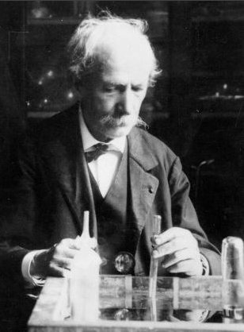
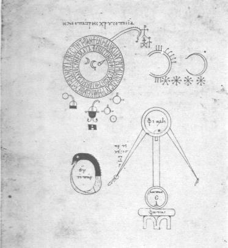
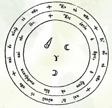

<!DOCTYPE html PUBLIC "-//w3c//dtd html 4.0 transitional//en"><html><head><meta charset="utf-8">
   
   <meta content="Mozilla/4.7 [fr] (Win98; I) [Netscape]" name="GENERATOR"><title>Berthelot - Les origines de l&#x27;alchimie - alchimie — Hervé Delboy, alchimie</title><link rel="stylesheet" href="../barre.css"><script src="../barre.js" defer></script><!--seo--><meta name="description" content="« Berthelot - Les origines de l&#x27;alchimie - alchimie », page d&#x27;Hervé Delboy sur l&#x27;alchimie, section « L&#x27;idée alchimique » : texte intégral, 4 images, révision du 8 décembre 2003."><link rel="canonical" href="https://mauktenieb.github.io/alchimie-delboy/original/origine-alchimie.html"><meta property="og:type" content="article"><meta property="og:title" content="Berthelot - Les origines de l&#x27;alchimie - alchimie"><meta property="og:description" content="« Berthelot - Les origines de l&#x27;alchimie - alchimie », page d&#x27;Hervé Delboy sur l&#x27;alchimie, section « L&#x27;idée alchimique » : texte intégral, 4 images, révision du 8 décembre 2003."><meta property="og:url" content="https://mauktenieb.github.io/alchimie-delboy/original/origine-alchimie.html"><meta property="og:site_name" content="Hervé Delboy — alchimie"><meta property="og:locale" content="fr_FR"><meta property="og:image" content="https://mauktenieb.github.io/alchimie-delboy/assets/berthelot_4.jpg"><script type="application/ld+json">{"@context": "https://schema.org", "@type": "CreativeWork", "name": "Berthelot - Les origines de l'alchimie - alchimie", "url": "https://mauktenieb.github.io/alchimie-delboy/original/origine-alchimie.html", "author": {"@type": "Person", "name": "Hervé Delboy"}, "inLanguage": "fr", "about": "Alchimie", "genre": "L'idée alchimique", "isPartOf": {"@type": "WebSite", "@id": "https://mauktenieb.github.io/alchimie-delboy/#site", "name": "Hervé Delboy — alchimie", "url": "https://mauktenieb.github.io/alchimie-delboy/", "inLanguage": "fr"}, "dateModified": "2003-12-08", "archivedAt": "https://web.archive.org/web/20100326030706/http://herve.delboy.perso.sfr.fr/origine_alchimie.htm", "image": "https://mauktenieb.github.io/alchimie-delboy/assets/berthelot_4.jpg"}</script><!--/seo--></head><body background="nabkgnd.jpg"><div class="replica-note"><a href="../index.html">Hervé Delboy — alchimie</a> · <a href="../sommaire.html">Sommaire</a> · <a href="../recherche.html">Recherche</a> · <a href="../notice.html">Notice</a></div>

<center><b><font face="Verdana"><font color="#660000"><font size="+2">Les
Origines de l'alchimie</font></font></font></b>
<p><b><font face="Verdana"><font color="#660000"><font size="+0">Marcelin
Berthelot</font></font></font></b>
</p></center>
<p>
  </p><center>
    <p><a href="#" title="lien mort dans l'archive"></a><a href="../original/prima-materia.html"></a> 
    </p>
    <p><font face="Trebuchet MS"><b><!-- eStat --> 
      
      
      
      <!-- /eStat --></b></font><br>
      <br>
      </p>
<div style="text-align: left; margin-left: 40px;"><font size="-1">revu le 8 d&eacute;cembre 2003<br>
</font></div>
<p> </p>

  </center>
<blockquote>
<center>
<hr width="100%"></center>
<font face="Verdana"><font size="-1"><font color="#660000"><b>plan</b> :
</font><font color="#000099"><a href="../original/origine-alchimie.html#Introduction%20-%20notes%20sur%20Marcelin%20Berthelot%20-%20site">introduction</a>
- <a href="../original/origine-alchimie.html#Marcelin_Berthelot">Berthelot</a> [<a href="../original/origine-alchimie.html#L%E2%80%99objet%20de%20la%20chimie">objet
de la chimie</a> - <a href="../original/origine-alchimie.html#Savant%20et%20politicien">savant
et politicien</a> - <a href="../original/origine-alchimie.html#La%20synth%C3%A8se%20organique">synth&egrave;se
organique</a> - <a href="../original/origine-alchimie.html#La%20%C2%AB%20m%C3%A9canique%20chimique%20%C2%BB">m&eacute;canique
chimique</a> - le <a href="../original/origine-alchimie.html#Militant%20du%20scientisme">scientisme</a>
- l'<a href="../original/origine-alchimie.html#A%20propos%20de%20l%27oeuvre%20alchimique%20de%20Berthelot">oeuvre
alchimique</a> de Berthelot] - <a href="../original/origine-alchimie.html#origines%20de%20l%27alchimie">Les
Origines de l'alchimie</a> : 1. <a href="../original/origine-alchimie.html#I_origines%20mystiques">origines
mystiques</a> - 2. <a href="../original/origine-alchimie.html#4-sources%20gnostiques.%20%5Bil%20semble%20manquer%20des%20pages">sources
gnostiques</a> [<a href="../original/origine-alchimie.html#Les%20t%C3%A9moignages%20historiques.">t&eacute;moignages
historiques</a> - <a href="../original/origine-alchimie.html#3-D%C3%A9mocrite.">D&eacute;mocrite</a>]
- 3. <a href="../original/origine-alchimie.html#1%20-%20Les%20faits.">Les faits</a> - 4. <a href="../original/origine-alchimie.html#Les%20m%C3%A9taux%20chez%20les%20%C3%A9gyptiens.">les
m&eacute;taux chez les Egyptiens</a> [<a href="../original/origine-alchimie.html#l%27introduction.">introduction</a>
- <a href="../original/origine-alchimie.html#2%20-%20L%27Or.">l'or</a> - <a href="../original/origine-alchimie.html#3%20-%20L%27Argent.">l'argent</a>
- <a href="../original/origine-alchimie.html#4%20-%20L%27Electrum%20ou%20Asem.">l'&eacute;lectrum</a>
ou asem - le <a href="../original/origine-alchimie.html#5%20-%20Le%20Saphir%20ou%20Chesbet.">saphir</a>
ou chesbet - l'<a href="../original/origine-alchimie.html#6%20-%20L%27Emeraude%20ou%20Mafek.">&eacute;meraude</a>
ou mafek - l'<a href="../original/origine-alchimie.html#7%20-%20l%27Airain%20et%20le%20Cuivre.">airain</a>
et le cuivre - le <a href="../original/origine-alchimie.html#8%20-%20Le%20Fer.">fer</a> -
le <a href="../original/origine-alchimie.html#9%20-%20Le%20Plomb.">plomb</a> - l'<a href="../original/origine-alchimie.html#10%20-%20L%27Etain.">&eacute;tain</a>
- le <a href="../original/origine-alchimie.html#11%20-%20Le%20Mercure.">mercure</a> - <a href="../original/origine-alchimie.html#12%20-%20Autres%20substances%20cong%C3%A9n%C3%A8res%20des%20m%C3%A9taux.">autres
substances cong&eacute;n&egrave;res des m&eacute;taux</a> - <a href="../original/origine-alchimie.html#13%20-%20Liste%20alchimique%20des%20m%C3%A9taux%20et%20de%20leurs">liste
alchimique des m&eacute;taux et de leurs d&eacute;riv&eacute;s</a>] - 5.
<a href="../original/origine-alchimie.html#14%20-%20Les%20laboratoires.">les laboratoires</a>
- 6. <a href="../original/origine-alchimie.html#La%20teinture%20des%20m%C3%A9taux.">la teinture
des m&eacute;taux</a> - 7. <a href="../original/origine-alchimie.html#Les%20th%C3%A9ories.%20Th%C3%A9ories%20grecques.">les
th&eacute;ories</a> [a. th&eacute;orie <a href="../original/origine-alchimie.html#Les%20th%C3%A9ories.%20Th%C3%A9ories%20grecques.">grecque</a>
: {<a href="../original/origine-alchimie.html#1%20-%20Introduction.">introduction</a> -
<a href="../original/origine-alchimie.html#2%20-%20Les%20premiers%20philosophes%20naturalistes.">premiers
philosophes naturalistes</a> - <a href="../original/origine-alchimie.html#3%20-%20Les%20Platoniciens.%20-%20Le%20Tim%C3%A9e.">les
Platoniciens et le Tim&eacute;e</a> - <a href="../original/origine-alchimie.html#3%20-%20Les%20Alchimistes%20Grecs.">les
alchimistes grecs</a>} - b. <a href="../original/origine-alchimie.html#Th%C3%A9ories%20des%20alchimistes%20et%20th%C3%A9ories%20modernes.">th&eacute;ories
des alchimistes et th&eacute;ories modernes</a> : {le <a href="../original/origine-alchimie.html#1%20-%20Le%20Mercure%20des%20Philosophes.">mercure
des philosophes</a> - <a href="../original/origine-alchimie.html#2%20-%20Origine%20et%20port%C3%A9e%20des%20id%C3%A9es%20Alchimiques.">origine
et port&eacute;e des id&eacute;es alchimiques</a> - <a href="../original/origine-alchimie.html#3%20-%20Les%20corps%20simples%20actuels.">les
corps simples actuels</a> - <a href="../original/origine-alchimie.html#4%20-%20L%27unit%C3%A9%20de%20la%20mati%C3%A8re.">l'unit&eacute;
de la mati&egrave;re</a>} - c. <a href="../original/origine-alchimie.html#Les%20multiples%20de%20l%27hydrog%C3%A8ne%20et%20les%20%C3%A9l%C3%A9ments">les
multiples de l'hydrog&egrave;ne</a> et les &eacute;l&eacute;ments {<a href="../original/origine-alchimie.html#5%20-%20Les%20%C3%A9l%C3%A9ments%20isom%C3%A8res%20et%20polym%C3%A8res.">&eacute;l&eacute;ments
isom&egrave;res et polym&egrave;res</a> - <a href="../original/origine-alchimie.html#6%20-%20Les%20familles%20naturelles%20des%20%C3%A9l%C3%A9ments.">familles
naturelles des &eacute;l&eacute;ments</a> - <a href="../original/origine-alchimie.html#7%20-%20Les%20s%C3%A9ries%20p%C3%A9riodiques.">s&eacute;ries
p&eacute;riodiques</a> - <a href="../original/origine-alchimie.html#8%20-%20La%20mati%C3%A8re%20premi%C3%A8re%20une%20et%20multiforme.">mati&egrave;re
premi&egrave;re une et multiforme</a> - <a href="../original/origine-alchimie.html#9%20-%20La%20mati%C3%A8re%20pond%C3%A9rable%20et%20le%20fluide%20%C3%A9th%C3%A9r%C3%A9.">mati&egrave;re
pond&eacute;rable et fluide &eacute;th&eacute;r&eacute;</a>}</font></font></font>
<hr width="100%"></blockquote>

<blockquote>
<blockquote>
<h2>
<a  name="Introduction - notes sur Marcelin Berthelot - site"></a><font face="Verdana"><font color="#660000"><font size="+0">Introduction
-
</font><font size="-1">notes sur Marcelin Berthelot - <a href="https://web.archive.org/web/20100326030706/http://www.multimania.fr/general/pub/popup/perso.phtml?category=/science/sc_exacte/chimie&amp;search_query=marcelin%20berthelot" target="_blank" rel="noopener">site
consult&eacute;</a></font></font></font></h2>

<center><a  name="Marcelin_Berthelot"></a><br>
</center>

<p><i><font size="-1">Nous aurions souhait&eacute; d&eacute;velopper un travail
original sur Berthelot, mais, le temps nous &eacute;tant compt&eacute;,
c'est donc &agrave; regret - mais en m&ecirc;me temps avec ardeur - que
nous avons exploit&eacute; les ressources du Net, avec le <a href="https://web.archive.org/web/20100326030706/http://www.multimania.fr/general/pub/popup/perso.phtml?category=/science/sc_exacte/chimie&amp;search_query=marcelin%20berthelot" target="_blank" rel="noopener">remarquable
site</a> dont nous tirons ici des &eacute;l&eacute;ments du plus haut int&eacute;r&ecirc;t
touchant &agrave; notre chimiste.</font></i>
</p><p><font face="Verdana">Combl&eacute;e d&#8217;honneurs, la carri&egrave;re de
Berthelot se d&eacute;veloppe dans l&#8217;&acirc;ge du positivisme bourgeois,
dont il demeure l&#8217;une des figures les plus &eacute;crasantes. Pontife du
scientisme conqu&eacute;rant, il a exerc&eacute; en France, &agrave; la
fin de sa vie, un magist&egrave;re quelque peu abusif sur le sort de la
recherche et de l&#8217;enseignement scientifiques. Travailleur infatigable et
d&eacute;sint&eacute;ress&eacute;, son activit&eacute; a d&eacute;bord&eacute;
la chimie pour s&#8217;&eacute;tendre &agrave; des domaines aussi divers que
l&#8217;arch&eacute;ologie ou la politique. De son &#339;uvre, qui remplit quelque
1 600 publications, deux th&egrave;mes scientifiques majeurs se d&eacute;tachent,
la synth&egrave;se organique et la thermochimie. S&#8217;il n&#8217;est pas le premier
chimiste organicien &agrave; avoir combattu les partisans de la &laquo;
force vitale &raquo;, c&#8217;est lui qui, en revanche, autant par ses synth&egrave;ses
(en particulier la synth&egrave;se totale de l&#8217;ac&eacute;tyl&egrave;ne)
que par ses &eacute;crits doctrinaux, les a r&eacute;duits au silence.</font>
</p><p><a  name="L&#8217;objet de la chimie"></a><b><font face="Verdana"><font size="-1">L&#8217;objet
de la chimie</font></font></b>
</p><p><font face="Verdana">Bachelard notait dans le <b><i><font size="-1">Mat&eacute;rialisme
rationnel</font></i></b>&nbsp; que &laquo; <i><font color="#000099"><font size="-1">le
chimiste pense et travaille &agrave; partir d&#8217;un monde recommenc&eacute;
</font></font></i>&raquo;.
Sa t&acirc;che, c&#8217;est d&#8217;abord d&#8217;isoler artificiellement dans la nature
les corps auxquels il lui faut donner un statut de puret&eacute; suffisante,
les reconstituer, selon un parcours qui rejoint la synth&egrave;se cr&eacute;atrice
d&#8217;esp&egrave;ces nouvelles. Quand Laurent &eacute;crit, en 1854, que &laquo;
<i><font color="#000099"><font size="-1">la
chimie d&#8217;aujourd&#8217;hui est devenue la science des corps qui n&#8217;existent pas</font></font></i>
&raquo;, il invoque la cr&eacute;ation d&#8217;un r&eacute;seau de relations
factices, qui ne sont pas dans la nature, mais qui fondent la science m&ecirc;me.
&Eacute;bloui par le pouvoir de la chimie de &laquo; <i><font color="#000099"><font size="-1">former
de toutes pi&egrave;ces et m&eacute;tamorphoser les uns dans les autres
les &ecirc;tres dont elle s&#8217;occupe</font></font></i> &raquo;, Berthelot
valorise les donn&eacute;es empiriques et ce qu&#8217;il appelle la &laquo; <i><font color="#000099"><font size="-1">science
positive </font></font></i>&raquo;, contre les pr&eacute;tentions de la
&laquo;<i><font size="-1"><font color="#3333ff"> </font><font color="#000099">science
sp&eacute;culative [...] constructions imagin&eacute;es par l&#8217;esprit humain
pour se repr&eacute;senter les choses</font></font></i> &raquo;. Il borne
la science par des barri&egrave;res dogmatiques qu&#8217;il lui arrivera pourtant
de franchir. Il se d&eacute;fie des &laquo; <i><font color="#000099"><font size="-1">symbolismes
abr&eacute;g&eacute;s</font></font></i> &raquo; et des formules qui ne
&laquo; <i><font color="#000099"><font size="-1">fournissent qu&#8217;une id&eacute;e
incompl&egrave;te et mutil&eacute;e</font></font></i> &raquo; de la constitution
des corps. [<b><font color="#666600"><font size="-2">il n'est pas sans int&eacute;r&ecirc;t
de constater que Louis de Broglie aura aussi le m&ecirc;me genre de conception
que Berthelot. Mais alors que De Broglie pense que la r&eacute;alit&eacute;
demeure voil&eacute;e, pour emprunter une image d'Espagnet, alors m&ecirc;me
que les r&eacute;sultats obtenus par la m&eacute;canique quantique sont
exacts, Berthelot se situe &agrave; un niveau plus g&eacute;n&eacute;ral.
Il est de fait qu'il ne croyait pas, manifestement, &agrave; la classification
de Mendeleiv -cf. infra sur ce point</font></font></b>] Or cet ennemi des
hypoth&egrave;ses hasard&eacute;es r&eacute;cuse la l&eacute;gitimit&eacute;
des repr&eacute;sentations au nom d&#8217;une imagination de l&#8217;&eacute;nerg&eacute;tique
intime de la mati&egrave;re qu&#8217;il n&#8217;&eacute;tait pas en mesure de valider
: ce qu&#8217;il reproche aux formules, c&#8217;est de ne figurer qu&#8217;un &laquo; &eacute;tat
statique &raquo; et non&nbsp; &laquo; dynamique &raquo; des corps ; incapables
d&egrave;s lors d&#8217;exprimer &laquo;<i><font color="#000099"><font size="-1">
les relations qui existent entre les mouvements des particules primitives
et les mouvements des particules complexes qui en r&eacute;sultent </font></font></i>&raquo;.
Ainsi, son exigence d&#8217;un mod&egrave;le impossible le prive de l&#8217;instrument
f&eacute;cond qui permettra le d&eacute;veloppement de la chimie structurale.</font>
</p><p><font face="Verdana">La m&eacute;fiance de Berthelot &agrave; l&#8217;&eacute;gard
des repr&eacute;sentations symboliques est directement li&eacute;e &agrave;
son refus de la th&eacute;orie atomique dont Wurtz se faisait l&#8217;ap&ocirc;tre
en France. Dans une controverse (1877), il taxe de &laquo; <i><font color="#000099"><font size="-1">conception
mystique [...] la combinaison d&#8217;un atome avec lui-m&ecirc;me</font></font></i>
&raquo;. Vers 1890 seulement, il c&eacute;dera au consensus des chimistes
et adoptera les nouvelles notations, cessant de s&#8217;isoler dans une chimie
organique &agrave; lui. Mais, auparavant, il avait employ&eacute; sa grande
autorit&eacute; &agrave; pr&eacute;server les &eacute;coles des id&eacute;es
modernes. Gr&acirc;ce &agrave; quoi la p&eacute;dagogie de la chimie &eacute;l&eacute;mentaire
demeurera longtemps en France engag&eacute;e dans le syst&egrave;me abstrait
des &eacute;quivalents.[<b><font color="#666600"><font size="-2">il est d'autant
plus int&eacute;ressant de savoir que Berthelot se passionnait pour l'alchimie,
toute faite de symboles...Mais ce n'est pas l&agrave; une contradiction
isol&eacute;e et, bien souvent, nous avons constat&eacute; que des hommes
cultivaient un jardin secret o&ugrave;, eux-m&ecirc;mes, pour les autres,
se donnaient des arguments o&ugrave; l'on croirait qu'ils faisaient prendre,
peut-&ecirc;tre &agrave; leur insu -&nbsp; le vrai pour le faux -</font></font></b>]</font>
</p><p><a  name="Savant et politicien"></a><b><font face="Verdana"><font size="-1">Savant
et politicien</font></font></b>
</p><p><font face="Verdana">Fils d&#8217;un m&eacute;decin peu fortun&eacute;, le
jeune Berthelot, bon &eacute;l&egrave;ve, sera laur&eacute;at au concours
g&eacute;n&eacute;ral de philosophie de 1846. Il se lie, &eacute;tudiant,
avec le jeune Renan ; en 1851, on le trouve pr&eacute;parateur de Balard
au Coll&egrave;ge de France. Docteur &egrave;s sciences en 1854, il est
nomm&eacute; en 1859 professeur de chimie organique &agrave; l&#8217;&Eacute;cole
sup&eacute;rieure de pharmacie, qui &eacute;tait alors le principal centre
d&#8217;enseignement de la chimie. Malgr&eacute; l&#8217;opposition de Pasteur, il
obtient en 1865 la cr&eacute;ation d&#8217;une chaire de chimie organique au
Coll&egrave;ge de France. Entour&eacute; d&#8217;&eacute;l&egrave;ves d&eacute;vou&eacute;s,
il exploite sereinement leur travail. Re&ccedil;u &agrave; l&#8217;Acad&eacute;mie
des sciences en 1873, il sera nomm&eacute; inspecteur g&eacute;n&eacute;ral
de l&#8217;enseignement sup&eacute;rieur en 1876 ; on lui doit la cr&eacute;ation
des ma&icirc;trises de conf&eacute;rence. S&eacute;nateur inamovible en
1881, il participe activement &agrave; la la&iuml;cisation, sera ministre
de l&#8217;Instruction publique dans le cabinet Goblet, acceptera dix ans plus
tard un maroquin aux Affaires &eacute;trang&egrave;res en tirant argument
na&iuml;f de son habitude des soci&eacute;t&eacute;s savantes. En 1901,
l&#8217;Acad&eacute;mie fran&ccedil;aise honore en lui le h&eacute;raut du scientisme
r&eacute;publicain. Le Panth&eacute;on le recueille en 1907 [<b><font color="#666600"><font size="-2">il
semble que Berthelot ne soit pas d&eacute;c&eacute;d&eacute; de mort naturelle.
Sa femme, depuis longtemps malade, devait succomber en 1907 aux atteintes
de ce qui semble &ecirc;tre une insuffisance cardiaque globale. Marcelin
ne put survivre &agrave; son &eacute;pouse, s'enferma dans son bureau et
l'un de ses fils l'y d&eacute;couvrit mort...c'est donc avec sa femme qu'il
fut enterr&eacute; au Panth&eacute;on - Etrange fin pour un destin exceptionnel...</font></font></b>].</font>
</p><p><a  name="La synth&egrave;se organique"></a><b><font face="Verdana"><font size="-1">La
synth&egrave;se organique</font></font></b>
</p><p><font face="Verdana">Si Berthelot n&#8217;est pas le fondateur de la synth&egrave;se,
il a d&eacute;velopp&eacute; et syst&eacute;matis&eacute; en 1860, dans
sa <b><i><font size="-1">Chimie organique fond&eacute;e sur la synth&egrave;se,</font></i></b>
les essais dispers&eacute;s de ses pr&eacute;d&eacute;cesseurs et leur
a donn&eacute; une forte consistance doctrinale.</font>
<br><font face="Verdana">Durant la premi&egrave;re moiti&eacute; du si&egrave;cle,
la chimie organique proc&eacute;dait essentiellement par voie analytique.
Les chimistes s&#8217;appliquaient surtout &agrave; isoler des compos&eacute;s
purs et &agrave; d&eacute;finir, avec leurs propri&eacute;t&eacute;s, leur
composition &eacute;l&eacute;mentaire. Cependant un certain nombre de mol&eacute;cules
organiques &eacute;taient pr&eacute;par&eacute;es au laboratoire par d&eacute;composition
ou transformation d&#8217;autres corps. L&#8217;acide oxalique avait &eacute;t&eacute;
produit en 1766 par oxydation du sucre (<a href="../original/chevreul-hoefer-3.html#Torbern%20Bergmann.">Bergmann</a>
et <a href="../original/chevreul-hoefer-3.html#Charles%20Guillaurne%20Scheele.">Scheele</a>)
et en 1829 par l&#8217;action de la potasse caustique sur le bois (Gay-Lussac).
L&#8217;ann&eacute;e pr&eacute;c&eacute;dente, l&#8217;ur&eacute;e fut obtenue par
pyrolyse du cyanate d&#8217;ammonium (W&ouml;hler) ; puis l&#8217;ac&eacute;tone pr&eacute;par&eacute;e
par la distillation s&egrave;che des ac&eacute;tates alcalino-terreux (P&eacute;ligot).
Plus &eacute;labor&eacute;es et proprement synth&eacute;tiques sont les
productions de l&#8217;alcool par Hennell en 1826 et surtout de l&#8217;acide ac&eacute;tique
par Kolbe en 1845. Form&eacute; &agrave; partir d&#8217;esp&egrave;ces inorganiques,
le produit final &eacute;tait identique &agrave; l&#8217;acide naturel pr&eacute;par&eacute;
par distillation du vinaigre. La possibilit&eacute; de cr&eacute;er artificiellement
des corps organiques &agrave; partir des &eacute;l&eacute;ments &eacute;tait
d&egrave;s lors positivement attest&eacute;e et venait contredire l&#8217;opinion
d&#8217;anciens chimistes, comme <a href="../original/chevreul-hoefer-3.html#Wallerius">Wallerius</a>
et Hermbst&auml;dt, pour qui l&#8217;art &eacute;tait inapte &agrave; imiter
et encore moins &agrave; r&eacute;p&eacute;ter les processus de la nature.[<b><font color="#666600"><font size="-2">voila
qui est remarquable ! C'est un chimiste qui proclamait ce fait - au sens
litt&eacute;ral contre nature - que l'art &eacute;tait incapable d'imiter
la nature, alors que les alchimistes n'avaient eu de cesse de professer
- cf. <a href="../original/char.html">Basile Valentin</a> - Vraiment, il y a l&agrave;
une chose extraordinaire -</font></font></b>] Caract&eacute;ris&eacute;s,
selon les termes m&ecirc;mes de Berthelot, par une &laquo; <i><font color="#000099"><font size="-1">extr&ecirc;me
mobilit&eacute;, leur physionomie particuli&egrave;re, la facilit&eacute;
avec laquelle les forces les plus faibles op&egrave;rent leur destruction</font></font></i>
&raquo;, les corps organiques ne semblaient pouvoir na&icirc;tre que dans
la mati&egrave;re vivante, o&ugrave;, comme Berzelius le notait en 1835,
&laquo;<i><font color="#000099"><font size="-1"> les &eacute;l&eacute;ments
paraissent ob&eacute;ir &agrave; des lois tout autres que dans la nature
inorganique </font></font></i>&raquo; ; on supposait donc dans l&#8217;univers
organique une force vitale que Gerhardt invoque encore en 1842. Berthelot
s&#8217;applique &agrave; ruiner cette hypoth&egrave;se : &laquo;<i><font color="#000099"><font size="-1">
Bannir la vie de toutes les explications relatives &agrave; la chimie organique,
[...] c&#8217;est ainsi seulement que nous r&eacute;ussirons &agrave; constituer
une science compl&egrave;te. </font></font></i>&raquo; Aussi s&#8217;efforce-t-il
&agrave; produire au laboratoire des esp&egrave;ces organiques en usant
de proc&eacute;d&eacute;s analogues &agrave; ceux de la synth&egrave;se
min&eacute;rale. Avec une habilet&eacute; consomm&eacute;e, il domine les
&laquo;<i><font color="#000099"><font size="-1"> forces chimiques </font></font></i>&raquo;
dans maintes synth&egrave;ses parmi lesquelles il faut retenir celles des
corps gras (1854), de l&#8217;acide formique et de l&#8217;alcool &eacute;thylique
(1855), [<b><font color="#666600"><font size="-2">Berthelot n'a-t-il pas
affirm&eacute; que plus de 1000 mouvements d'agitation furent n&eacute;cessaires
pour r&eacute;aliser cette synth&egrave;se ?</font></font></b>] de l&#8217;&eacute;thyl&egrave;ne,
de l&#8217;ac&eacute;tyl&egrave;ne (1863), du benz&egrave;ne enfin (1866). Dans
ses &eacute;crits doctrinaux, il se donne en pourfendeur du vitalisme,
cr&eacute;ant ainsi une l&eacute;gende &laquo;<i><font color="#000099"><font size="-1">
suivant laquelle, au seul nom de Berthelot, les fum&eacute;es de l&#8217;obscurantisme
se seraient brusquement dissip&eacute;es ! </font></font></i>&raquo; Il
en fut bien autrement ; nombreux &eacute;taient les chimistes, avant lui,
qui crurent la synth&egrave;se possible ; le propre de Berthelot fut de
soutenir pol&eacute;miquement la r&eacute;duction de l&#8217;univers de la chimie
&agrave; un d&eacute;terminisme commun. Il inclinait aussi, il est vrai,
&agrave; r&eacute;duire les ph&eacute;nom&egrave;nes physiologiques &agrave;
une causalit&eacute; purement chimique ; cette tendance appara&icirc;t
dans sa contestation des vues pastoriennes sur les fermentations. Il lui
manqua, mais il ne pouvait en &ecirc;tre autrement, une conscience exactement
inform&eacute;e de la sp&eacute;cificit&eacute; des processus biochimiques
et de leur &eacute;nerg&eacute;tique propre.</font>
</p><p><a  name="La &laquo; m&eacute;canique chimique &raquo;"></a><b><font face="Verdana"><font size="-1">La
&laquo; m&eacute;canique chimique &raquo;</font></font></b>
</p><p><font face="Verdana">Dans son d&eacute;sir d&#8217;unifier, dans un m&ecirc;me
r&eacute;gime th&eacute;orique, les &laquo; <i><font color="#000099"><font size="-1">cycles
de r&eacute;actions qui permettent de produire &agrave; volont&eacute;
tel type chimique et tel compos&eacute; d&eacute;termin&eacute; soit naturel,
soit artificiel </font></font></i>&raquo;, Berthelot ne pouvait manquer
de rechercher un principe universel d&#8217;analyse des actions chimiques. Il
crut le trouver dans la thermochimie.</font>
<br><font face="Verdana">Les processus chimiques s&#8217;accompagnent g&eacute;n&eacute;ralement
d&#8217;&eacute;changes thermiques plus ou moins intenses. On distingue classiquement
les r&eacute;actions exothermiques des endothermiques, selon qu&#8217;elles donnent
lieu &agrave; un d&eacute;gagement ou &agrave; une absorption de chaleur,
compte tenu du travail relatif aux variations de volume. Les mesures thermochimiques
sont une application de la calorim&eacute;trie ; elles ont atteint aujourd&#8217;hui
une extr&ecirc;me finesse (microcalorim&eacute;trie de Tian et Calvet),
&agrave; la suite de Berthelot, qui les a d&eacute;velopp&eacute;es avec
une grande habilet&eacute; exp&eacute;rimentale ; on lui doit, entre autres
dispositifs bien connus, une bombe calorim&eacute;trique pour la mesure
des chaleurs de combustion &agrave; volume constant. C&#8217;est &agrave; partir
de 1865 qu&#8217;il entreprend les &eacute;tudes de thermochimie qui le conduiront
&agrave; formuler en 1873 son &laquo;<i><font color="#000099"><font size="-1">
principe du travail maximal </font></font></i>&raquo;. Lavoisier et Laplace
avaient donn&eacute; le premier &eacute;nonc&eacute; quantitatif touchant
&agrave; la thermochimie, postul&eacute;, il est vrai, sans v&eacute;rification
exp&eacute;rimentale ; Henri Hess proc&egrave;de &agrave; P&eacute;tersbourg
aux premi&egrave;res investigations syst&eacute;matiques ; en 1840, il
stipule comme une loi empirique la constance de la somme des effets thermiques
dans le passage entre deux &eacute;tats donn&eacute;s d&#8217;un syst&egrave;me
chimique, quelles que soient les &eacute;tapes transitoires. Cet &eacute;nonc&eacute;
est une cons&eacute;quence de la loi de la conservation de l&#8217;&eacute;nergie
formul&eacute;e deux ans plus tard par J. R. Mayer et qui sera pr&eacute;cis&eacute;e
en 1847 par Helmholtz. &Agrave; la suite de Julius Thomsen, qui introduit
les consid&eacute;rations pr&eacute;c&eacute;dentes dans l&#8217;interpr&eacute;tation
des ph&eacute;nom&egrave;nes thermochimiques, la chaleur de r&eacute;action
mesure la diff&eacute;rence de l&#8217;&eacute;nergie d&#8217;un syst&egrave;me avant
et apr&egrave;s la transformation. Ces vues ont conserv&eacute; leur validit&eacute;,
et elles sont &agrave; la base du calcul des chaleurs de r&eacute;action
dans de nombreux cas de processus organiques qui ne se pr&ecirc;tent pas
&agrave; des mesures directes. Thomsen a encore not&eacute; que la chaleur
de combustion des compos&eacute;s organiques est approximativement une
grandeur additive de valeurs propres aux atomes et &agrave; des &eacute;l&eacute;ments
structuraux qu&#8217;il n&#8217;&eacute;tait pas en son pouvoir de d&eacute;finir.
Mais en prenant la chaleur de r&eacute;action pour une mesure de l&#8217;affinit&eacute;
chimique, il en vient &agrave; pr&eacute;tendre imprudemment que tout processus
purement chimique lib&egrave;re de la chaleur. Publi&eacute;es en 1854,
les id&eacute;es de Thomsen anticipent sur les th&egrave;ses de Berthelot,
qui, non sans mauvaise foi, r&eacute;cusera la priorit&eacute; du chimiste
danois. &laquo; <i><font color="#000099"><font size="-1">Tout changement
chimique accompli sans l&#8217;intervention d&#8217;une &eacute;nergie &eacute;trang&egrave;re
tend vers la production du corps ou du syst&egrave;me de corps qui d&eacute;gage
le plus de chaleur.</font></font></i> &raquo; Tel est l&#8217;&eacute;nonc&eacute;
dans lequel Berthelot esp&eacute;rait avoir trouv&eacute; une loi fondamentale,
et qui ne tardera pas &agrave; &ecirc;tre vivement contest&eacute;. Il
excluait la possibilit&eacute; des d&eacute;compositions exothermiques
reconnues par P. A. Favre ; il rendait difficile l&#8217;interpr&eacute;tation
des r&eacute;actions r&eacute;versibles, ce qui ne manque pas de piquant
si l&#8217;on se rappelle que Berthelot fut le premier chimiste &agrave; avoir
exactement &eacute;tudi&eacute; les r&eacute;actions d&#8217;est&eacute;rification,
que limite le processus inverse d&#8217;hydrolyse. Critiqu&eacute; sans m&eacute;nagement
par Duhem, entre autres, Berthelot tentera de sauver la validit&eacute;
de son &eacute;nonc&eacute; par toutes sortes d&#8217;artifices intellectuels,
attribuant le d&eacute;ficit calorifique des r&eacute;actions endothermiques
&agrave; des actions &laquo; <i><font color="#000099"><font size="-1">purement
physiques</font></font></i> &raquo; connexes des processus &laquo;<i><font color="#000099"><font size="-1">
purement chimiques</font></font></i> &raquo;, aboutissant, en fin de compte,
&agrave; des sommations de grandeurs h&eacute;t&eacute;rog&egrave;nes.
Aujourd&#8217;hui, le &laquo; principe du travail maximal &raquo; a perdu presque
tout cr&eacute;dit ; on a certes reconnu qu&#8217;il implique une relation valable
au voisinage du z&eacute;ro thermique absolu, savoir que la chaleur de
r&eacute;action &eacute;quivaut &agrave; la diminution de l&#8217;&eacute;nergie
totale d&#8217;un syst&egrave;me ; mais, hors de cette limite th&eacute;orique,
la seule valeur pratique conserv&eacute;e &agrave; ce &laquo; principe
&raquo; est celle d&#8217;un crit&egrave;re grossier de pr&eacute;vision dans
l&#8217;&eacute;volution des syst&egrave;mes chimiques.</font>
</p><p><a  name="Militant du scientisme"></a><b><font face="Verdana"><font size="-1">Militant
du scientisme</font></font></b>
</p><p><font face="Verdana">Au contraire de son ami Renan, qui pr&eacute;tendait,
en 1855, que &laquo; <i><font color="#000099"><font size="-1">le si&egrave;cle...
va vers la m&eacute;diocrit&eacute;</font></font></i> &raquo;, Berthelot
a toujours affich&eacute; un robuste optimisme de scientiste. L&#8217;exercice
de la puissance humaine sur la nature l&#8217;&eacute;meut, et, dans la r&eacute;publique
de la fin du si&egrave;cle, il r&eacute;p&egrave;te la plupart des th&egrave;mes
&laquo; positivistes &raquo;. Il r&ecirc;ve d&#8217;une &laquo; <i><font color="#000099"><font size="-1">direction
des soci&eacute;t&eacute;s humaines par les sciences</font></font></i>
&raquo;, assigne pour but &agrave; la vie &laquo;<i><font color="#000099"><font size="-1">
l&#8217;action scientifique dirig&eacute;e vers notre d&eacute;veloppement individuel
le plus complet</font></font></i> &raquo;, mais, la m&ecirc;me ann&eacute;e,
affirme que &laquo; <i><font color="#000099"><font size="-1">l&#8217;importance
des individus ira sans cesse en diminuant</font></font></i> &raquo;.[<b><font color="#666600"><font size="-2">en
somme, il s'agissait d'une forme de totalitarisme qui ne disait pas son
nom -</font></font></b>] Au-del&agrave; de ces contradictions apparentes,
un anticl&eacute;ricalisme trivial l&#8217;anime. Ses pr&eacute;dilections vont
&agrave; un ordre productif que dominerait sa &laquo; <i><font color="#000099"><font size="-1">conception
nouvelle de la raison collective</font></font></i> &raquo;. La science,
&agrave; ses yeux, procure morale et bonheur : &laquo;<i><font color="#000099"><font size="-1">
Le bonheur et le bien-&ecirc;tre ne s&#8217;acqui&egrave;rent pas par de vaines
paroles... On y parvient surtout par la connaissance exacte des faits,
par la conformit&eacute; de nos actes avec les lois constat&eacute;es des
choses.</font></font></i> &raquo; [<b><font color="#666600"><font size="-2">&eacute;videmment,
de telles paroles font r&ecirc;ver, dans un certain sens. O&ugrave; sont
pass&eacute;es la po&eacute;sie, la musique, la litt&eacute;rature, la
philosophie, la peinture ? C'est-&agrave;-dire tout ce par quoi peut &ecirc;tre
d&eacute;finie la nature humaine ? Est-ce par une formule chimique ? Nous
savons bien que non...</font></font></b>]Cons&eacute;quent, il s&#8217;attache
&agrave; &eacute;lever le potentiel scientifique et technique du pays,
et encourage de son mieux l&#8217;enseignement moderne. Mais son scientisme sans
nuances aga&ccedil;ait, et, quand on lut la premi&egrave;re phrase de ses
<b><i><font size="-1">Origines
de l&#8217;alchimie</font></i></b>&nbsp; : &laquo; <i><font color="#000099"><font size="-1">Le
monde est aujourd&#8217;hui sans myst&egrave;re </font></font></i>&raquo;, il
s&#8217;&eacute;leva une protestation g&eacute;n&eacute;rale o&ugrave; savants
et esth&egrave;tes se rejoignirent. Paul Bourget avait parl&eacute; de
la &laquo; banqueroute de la science &raquo;, le th&egrave;me est repris
pol&eacute;miquement par Bruneti&egrave;re : &agrave; l&#8217;id&eacute;al de
solidarit&eacute; sociale, scientifiquement r&eacute;gl&eacute;, du chimiste,
il oppose sans peine l&#8217;ascension des budgets de guerre, la laideur des
banlieues industrielles et la dure condition des mineurs. Les amis de Berthelot
le consol&egrave;rent en avril 1895 dans un banquet expiatoire.</font>
<br><font face="Verdana">Il est clair que Berthelot n&#8217;avait aucunement
besoin de toute sa &laquo; philosophie &raquo; pour mener ses exp&eacute;riences
et construire ses th&eacute;ories. Elle a m&ecirc;me incontestablement
desservi le savant, lorsqu&#8217;elle l&#8217;a conduit &agrave; s&#8217;opposer &agrave;
l&#8217;introduction de la th&eacute;orie atomique dans l&#8217;enseignement fran&ccedil;ais.
Quant &agrave; son scientisme militant, une critique non apolog&eacute;tique
montrerait qu&#8217;il enveloppait un d&eacute;sir contradictoire de sauvegarder
dans le socialisme esp&eacute;r&eacute; des valeurs bourgeoises de notable.
[<b><font color="#666600"><font size="-2">nous souhaiterions encore une fois
bien mettre en exergue ce point singulier : qu'est-ce qui a pu pousser
un &laquo; scientiste &raquo; &agrave; s'int&eacute;resser &agrave; l'alchimie
? Et de la part d'un savant de la carure de Berthelot ? Voila &agrave;
notre avis, une question qui m&eacute;riterait que l'on y consacre une
th&egrave;se de 3<sup>&egrave;me</sup> cycle...</font></font></b>]</font>
</p><p><a  name="A propos de l'oeuvre alchimique de Berthelot"></a><b><font face="Verdana"><font color="#660000"><font size="-1">A
propos de l'oeuvre alchimique de Berthelot</font></font></font></b>
</p><p><b><font face="Verdana"><font color="#660000"><font size="-1">[adapt&eacute;
du site </font><font size="-2"><a href="https://web.archive.org/web/20100326030706/http://mapage.noos.fr/finelya/archives.htm" target="_blank" rel="noopener">http://mapage.noos.fr/finelya/archives.htm</a></font><font size="-1">
]</font></font></font></b>

</p><p style="text-align: justify;"><font face="Verdana">Marcelin
Berthelot fut le premier &agrave; entreprendre la traduction et la publication
de collections manuscrites qui n&#8217;avaient pas encore &eacute;t&eacute; s&eacute;rieusement
&eacute;tudi&eacute;es par les historiens des sciences. Ignorant le syriaque
et l&#8217;arabe, ne connaissant qu&#8217;imparfaitement le grec, Berthelot fit appel
&agrave; des collaborateurs &eacute;rudits. Ceux-ci, malheureusement, n&#8217;&eacute;tant
point inform&eacute;s de la nature des op&eacute;rations d&eacute;crites
par les textes obscurs et souvent cryptographiques qu&#8217;ils devaient traduire,
s&#8217;en remettaient &agrave; la seule autorit&eacute; de Berthelot afin de
d&eacute;cider du sens qu&#8217;il convenait de donner &agrave; des passages
difficiles. Dans ces conditions, on comprend que divers historiens sp&eacute;cialis&eacute;s
et, en particulier, von Lippmann, aient jug&eacute; s&eacute;v&egrave;rement
la singuli&egrave;re m&eacute;thode critique de Berthelot. Malgr&eacute;
ces r&eacute;serves, ses c&eacute;l&egrave;bres collections publi&eacute;es
voici pr&egrave;s d&#8217;un si&egrave;cle n&#8217;ont pas encore &eacute;t&eacute;
revues ni corrig&eacute;es philologiquement ni scientifiquement, et l&#8217;on
continue parfois de tenir pour s&eacute;rieuses des th&egrave;ses sur les
origines de l&#8217;alchimie dont les sources documentaires ont &eacute;t&eacute;
justement contest&eacute;es.</font>

</p><p style="text-align: justify;"><font face="Verdana">Sans
doute la perspective g&eacute;n&eacute;rale de Berthelot avait-elle l&#8217;avantage
d&#8217;&ecirc;tre simple et claire. Born&eacute;e par l&#8217;horizon culturel m&eacute;diterran&eacute;en
des &laquo; humanit&eacute;s classiques &raquo;, en un temps o&ugrave;
l&#8217;on ne soup&ccedil;onnait point l&#8217;existence d&#8217;une alchimie chinoise et
indienne bien ant&eacute;rieure &agrave; celle de l&#8217;&eacute;cole d&#8217;Alexandrie
[<b><font color="#666600"><font size="-2">pourtant, il n'est que de lire
les &eacute;tudes d'arch&eacute;ologie chimique de Berthelot pour se rendre
compte qu'il avait une connaissance parfaite de l'alchimie indienne et
chinoise ; voir notamment le chapitre consacr&eacute; aux lapidaires chinois
-</font></font></b>], l&#8217;explication de l&#8217;origine de ces th&eacute;ories
et de ces pratiques se r&eacute;duisait ais&eacute;ment &agrave; l&#8217;interpr&eacute;tation
de ce que l&#8217;on croyait avoir &eacute;t&eacute; leurs plus anciennes structures.
Berthelot, &agrave; partir des textes alexandrins qu&#8217;il avait fait traduire,
supposa logiquement que ces connaissances avaient &eacute;t&eacute; d&#8217;abord
artisanales et pr&eacute;chimiques : les premiers praticiens n&#8217;avaient
cherch&eacute; qu&#8217;&agrave; imiter l&#8217;apparence des gemmes et des m&eacute;taux
pr&eacute;cieux, gr&acirc;ce &agrave; la composition de teintures et &agrave;
la fabrication d&#8217;alliages ayant la couleur et le poids de l&#8217;or et de l&#8217;argent.
Les r&eacute;sultats obtenus par ces faussaires auraient suffi &agrave;
les abuser eux-m&ecirc;mes sur la r&eacute;alit&eacute; de ces pr&eacute;tendues
transmutations. Ult&eacute;rieurement, les philosophes et les mystiques
auraient contribu&eacute; &agrave; prolonger pendant des si&egrave;cles
cette confusion entre les illusions th&eacute;oriques et les r&eacute;alit&eacute;s
exp&eacute;rimentales jusqu&#8217;&agrave; l&#8217;av&egrave;nement de la chimie positive
et de la science v&eacute;ritable. Celle-ci, en effet, avait d&eacute;montr&eacute;
rationnellement, depuis Lavoisier, que les m&eacute;taux &eacute;taient
des corps simples, c&#8217;est-&agrave;-dire ind&eacute;composables, ce qui suffisait
&agrave; prouver le caract&egrave;re chim&eacute;rique de leur transmutation
et la nature aberrante ou frauduleuse des op&eacute;rations alchimiques.
Ces superstitions m&eacute;di&eacute;vales, comme toutes les autres, avaient
&eacute;t&eacute; heureusement dissip&eacute;es par le progr&egrave;s continu
des lumi&egrave;res de l&#8217;esprit humain.</font>

</p><p style="text-align: justify;"><font face="Verdana">&Agrave;
notre &eacute;poque, cette interpr&eacute;tation positiviste de l&#8217;alchimie
est devenue elle-m&ecirc;me illusoire, historiquement et scientifiquement.
Les travaux consid&eacute;rables des orientalistes et, principalement,
des sinologues ont r&eacute;v&eacute;l&eacute; la haute antiquit&eacute;
et l&#8217;universalit&eacute; des th&eacute;ories et des pratiques alchimiques
traditionnelles, en montrant leur caract&egrave;re sot&eacute;riologique
fondamental. D&#8217;autre part, contrairement aux dogmes lavoisi&eacute;riens
enseign&eacute;s par les universit&eacute;s occidentales au XIX<sup>e</sup>
si&egrave;cle, les physiciens nucl&eacute;aires modernes ont d&eacute;compos&eacute;
tous les corps que l&#8217;on croyait simples, et v&eacute;rifi&eacute; ainsi
la th&eacute;orie alchimique traditionnelle de l&#8217;unit&eacute; de la mati&egrave;re.
De plus, la r&eacute;alisation exp&eacute;rimentale de la transmutation
du mercure en or a r&eacute;v&eacute;l&eacute; que la pr&eacute;tendue
chim&egrave;re des alchimistes &eacute;tait singuli&egrave;rement proche
de la nature r&eacute;elle de la structure atomique de ces deux m&eacute;taux
qui se suivent dans la classification p&eacute;riodique. Aussi d&#8217;&eacute;minents
physiciens, comme Jean Perrin, n&#8217;ont-ils pas h&eacute;sit&eacute; &agrave;
reconna&icirc;tre dans les anciens ma&icirc;tres de l&#8217;alchimie &laquo;<i><font color="#000099"><font size="-1">
les pr&eacute;curseurs g&eacute;niaux des magiciens modernes de l&#8217;atome</font></font></i>
&raquo;. [<b><font color="#666600"><font size="-2">nous serons ici nettement
plus en retrait ; s'il est vrai que les corps simples se sont r&eacute;v&eacute;l&eacute;s
d&eacute;composables, on ne peut en d&eacute;duire de rapport avec les
&eacute;l&eacute;ments ou les principes que les alchimistes attribuaient
aux m&eacute;taux. On ne peut pas affirmer que le Mercure, le Soufre et
le Sel des philosophes se retrouvent, fut-ce par analogie, avec les fermions
ou les bosons...C'est au-del&agrave; des textes alchimiques m&ecirc;me
qu'il faut poser la question : la r&eacute;ponse se trouve dans le Tim&eacute;e
de Platon et nous ne pouvons qu'engager le lecteur &agrave; &eacute;tudier
le commentaire qu'en dresse Festugi&egrave;re et les remarques que placent
Chevreul dans les longs articles du Journal des Savants ainsi que dans
son dernier ouvrage : <i>R&eacute;sum&eacute; de l'histoire de la mati&egrave;re
depuis les plus anciens philosophes jusqu'&agrave; Lavoisier inclusivement</i>
-</font></font></b>]</font>
<br>&nbsp;
<br>&nbsp;
<br>
<br>
</p><center>
<p><font face="Wingdings"><font color="#3333ff"><font size="+3">&macr;</font></font></font>
<br>&nbsp;
</p><p><a  name="origines de l'alchimie"></a></p></center>

<p><br>
      <br>
</p><p>[<font size="-1" style="color: rgb(102, 0, 0);">le texte de la bnf a &eacute;t&eacute; revu, corrig&eacute;
et annot&eacute; ; les citations que Berthelot donnent dans le texte sont
mises en exergue. Nous avons pr&eacute;f&eacute;r&eacute; ins&eacute;rer
les commentaires dans le corps m&ecirc;me du texte, pour des raisons de
commodit&eacute; &eacute;vidente de lecture. <span style="text-decoration: underline;">A noter que le texte de la bnf n'est pas complet</span>. On peut trouver l'int&eacute;grale du texte sur le site <a href="https://web.archive.org/web/20100326030706/http://perso.wanadoo.fr/chrysopee/" target="_blank" rel="noopener">Herm&eacute;tisme et alchimie</a> de T. Ducreux -</font> ]
<br>
      &nbsp; &nbsp; 
    </p><p>

</p>
    <p style="margin-right: 0cm; line-height: normal; text-align: center;" class="MsoHeading9"><span style="font-size: 18pt;">PREFACE<o:p></o:p></span></p>


    <p style="text-align: justify;" class="MsoNormal"><span style="font-size: 12pt; color: rgb(51, 51, 153);"><!--[if !supportEmptyParas]-->&nbsp;<!--[endif]--><o:p></o:p></span></p>
















    <p style="font-family: verdana;" class="MsoBodyText2">Le monde est
aujourd&#8217;hui sans myst&egrave;re : la conception rationnelle
pr&eacute;tend tout &eacute;clairer et
tout comprendre; elle s&#8217;efforce de donner de toute chose une
explication
positive et logique, et elle &eacute;tend son d&eacute;terminisme fatal
jusqu&#8217;au monde moral.
Je ne sais si les d&eacute;ductions imp&eacute;ratives de la raison
scientifique r&eacute;aliseront
un jour cette prescience divine, qui a soulev&eacute; autrefois tant de
discussions et
que l&#8217;on n&#8217;a jamais r&eacute;ussi &agrave; concilier avec le sentiment
non moins imp&eacute;ratif de
la libert&eacute; humaine. En tout cas, l&#8217;univers mat&eacute;riel
entier est revendiqu&eacute; par
la science, et personne n&#8217;ose plus r&eacute;sister en face &agrave;
cette revendication. La notion
du miracle et du surnaturel s&#8217;est &eacute;vanouie comme un vain mirage,
un pr&eacute;jug&eacute;
surann&eacute;. Il n&#8217;en a pas toujours
&eacute;t&eacute; ainsi; cette conception purement rationnelle n&#8217;est
apparue qu&#8217;au temps des
Grecs; elle ne s&#8217;est g&eacute;n&eacute;ralis&eacute;e que chez les
peuples europ&eacute;ens, et seulement
depuis le XVIII&deg; si&egrave;cle. M&ecirc;me de nos jours bien des
esprits &eacute;clair&eacute;s demeurent
engag&eacute;s dans les liens du spiritisme et du magn&eacute;tisme
animal. Aux d&eacute;buts de la civilisation, toute connaissance
affectait
une forme religieuse et mystique. Toute action &eacute;tait
attribu&eacute;e aux dieux,
identifi&eacute;s avec les astres, avec les grands
ph&eacute;nom&egrave;nes c&eacute;lestes et terrestres,
avec toutes les forces naturelles. Nul alors n&#8217;e&ucirc;t os&eacute;
accomplir Une &#339;uvre
politique, militaire, m&eacute;dicale industrielle, sans recourir
&agrave; la formule sacr&eacute;e,
destin&eacute;e &agrave; concilier la bonne volont&eacute; des
puissances myst&eacute;rieuses qui
gouvernaient l'univers. Les op&eacute;rations r&eacute;fl&eacute;chies
et rationnelles ne venaient
qu&#8217;ensuite, toujours &eacute;troitement subordonn&eacute;es. Cependant
ceux qui accomplissaient l'&#339;uvre elle-m&ecirc;me ne
tard&egrave;rent pas &agrave; s&#8217;apercevoir que celle-ci se
r&eacute;alisait surtout par le travail
efficace de la raison et de l&#8217;activit&eacute; humaine. La raison
introduisit. &agrave; son
tour, pour ainsi dire subrepticement, ses r&egrave;gles pr&eacute;cises
dans les recettes
d&#8217;ex&eacute;cution pratique, en attendant le jour o&ugrave; elle
arriverait &agrave; tout dominer.<small><small><small><span style="font-size: 12pt;"><small> De l&agrave; une
p&eacute;riode nouvelle, demi rationaliste et demi mystique, qui a pr&eacute;c&eacute;d&eacute; la
naissance de la science pure. Alors fleurirent les sciences interm&eacute;diaires,
s'il est permis de parler ainsi : l'astrologie, l'alchimie, la vieille m&eacute;decine
des vertus des pierres et des talismans, sciences qui nous semblent aujourd'hui
chim&eacute;riques et charlatanesques. Leur apparition a marqu&eacute; cependant un progr&egrave;s
immense &agrave; un certain jour et fait &eacute;poque dans l'histoire de l'esprit humain.
Elles ont &eacute;t&eacute; une transition n&eacute;cessaire entre l'ancien &eacute;tat des esprits, livr&eacute;s
&agrave; la magie et aux pratiques th&eacute;urgiques, et l'esprit actuel, absolument
positif, mais qui, m&ecirc;me de nos jours, semble trop dur pour beaucoup de nos
contemporains.</small><o:p></o:p><small> L'&eacute;volution
qui s'est faite &agrave; cet &eacute;gard, depuis les Orientaux jusqu'aux Grecs et jusqu'&agrave;
nous, n'a pas &eacute;t&eacute; uniforme et parall&egrave;le dans tous les ordres. Si la science
pure s'est d&eacute;gag&eacute;e bien vite dans les math&eacute;matiques, son r&egrave;gne a &eacute;t&eacute; plus
retard&eacute; dans l'astronomie, o&ugrave; l'astrologie a subsist&eacute; parall&egrave;lement jusqu'aux
temps modernes. Le progr&egrave;s a &eacute;t&eacute; surtout plus lent en chimie, o&ugrave; l'alchimie,
science mixte, a conserv&eacute; ses esp&eacute;rances merveilleuses jusqu'&agrave; la fin du si&egrave;cle
dernier.</small><o:p></o:p></span><small><small><span style="font-size: 12pt;"> <small>L'&eacute;tude de ces
sciences &eacute;quivoques, interm&eacute;diaires entre la connaissance positive des choses
et leur Interpr&eacute;tation mystique, offre une grande importance pour le
philosophe. Elle int&eacute;resse &eacute;galement les savants d&eacute;sireux de comprendre
l'origine et la filiation des id&eacute;es et des mots qu'ils manient continuellement.
Les artistes, qui cherchent &agrave; reproduire les &#339;uvres de l'antiquit&eacute;, les
industriels, qui appliquent &agrave; la culture mat&eacute;rielle les principes th&eacute;oriques,
veulent aussi savoir quelles &eacute;taient les pratiques des anciens, par quels
proc&eacute;d&eacute;s ont &eacute;t&eacute; fabriqu&eacute;s ces m&eacute;taux, ces &eacute;toffes, ces produits souvent
admirables qu'ils nous ont laiss&eacute;s. L'&eacute;troite connexion qui existe entre la
puissance intellectuelle et la puissance mat&eacute;rielle de l'homme se retrouve
partout dans l'histoire : c'est le sentiment secret de cette connexion qui fait
comprendre les r&ecirc;ves d'autrefois sur la toute-puissance de la science. Nous
aussi, nous croyons &agrave; cette toute-puissance, quoique nous l'atteignions par
d'autres m&eacute;thodes.</small></span></small></small></small></small></small><span style="font-size: 11pt; color: rgb(51, 51, 153); letter-spacing: 0.3pt;"><o:p></o:p></span><span style="letter-spacing: 0.3pt;"> Telles sont les vues qui
m'ont amen&eacute; &agrave; m'occuper des Origines de l'Alchimie, &agrave; chercher &agrave; faire revivre
cette doctrine perdue, &agrave; retracer l'histoire de ses adeptes, de ses
laboratoires et de ses id&eacute;es. Je me suis cru appel&eacute; &agrave; cette &eacute;tude. En effet,
les d&eacute;buts de la science que je cultive depuis tant d'ann&eacute;es m'ont souvent pr&eacute;&shy;occup&eacute;;
mais les renseignements brefs et incomplets donn&eacute;s &agrave; cet &eacute;gard dans les
histoires de la chimie &eacute;taient plut&ocirc;t de nature &agrave; piquer la curiosit&eacute; qu'&agrave; la
satisfaire. Ces origines ont quelque chose de bizarre. La chimie, la plus
positive peut-&ecirc;tre des sciences, celle dont nous ma&icirc;trisons le plus directement
l'objet, d&eacute;&shy;bute par des imaginations extravagantes sur l'art de faire de l'or
et de transmuter les m&eacute;taux; ses premiers adeptes sont des hallucin&eacute;s, des fous
et des charlatans, et cet &eacute;tat de choses dure jusqu'au XVIII&deg; si&egrave;cle, mo&shy;ment
o&ugrave; la vraie doctrine remplace l'antique alchimie. Aussi les chimistes s&eacute;rieux
ont-ils h&acirc;te en g&eacute;n&eacute;ral de se d&eacute;tourner de celle-ci; ce qui explique l'abandon
dans lequel son histoire est tomb&eacute;e. C'est un fait bien connu de tous ceux qui
ont enseign&eacute;, &agrave; savoir que les sp&eacute;cialistes &eacute;tudient surtout une science en vue
de ses applications : la plupart ne se tourmentent gu&egrave;re de son pass&eacute;. <o:p></o:p></span></p>














    <p style="font-family: verdana; color: rgb(51, 0, 0);" class="MsoNormal"><small><small><span style="font-size: 12pt; letter-spacing: 0.3pt;"><small>L' Histoire
des sciences attire surtout les phi&shy;losophes et les gens curieux de la marche
g&eacute;n&eacute;rale de l'esprit humain. Mais, si les sp&eacute;cialistes n'aiment ni les r&eacute;cits
historiques ni les abstractions, par contre les philosophes sont arr&ecirc;t&eacute;s en
chimie par le caract&egrave;re technique du langage et le tour particulier des id&eacute;es.
Ils ont besoin d'&ecirc;tre initi&eacute;s par quelque personne comp&eacute;tente; n&eacute;cessit&eacute; plus
grande <small>s'il s</small>e peut que partout ailleurs dans une science qui a chang&eacute; de fond
en comble, il y a cent ans, le syst&egrave;me g&eacute;n&eacute;ral de </small></span><small><span style="font-size: 12pt; letter-spacing: 0.1pt;">ses id&eacute;es</span><span style="font-size: 12pt; letter-spacing: 0.1pt;">.
    </span><small><span style="font-size: 12pt; letter-spacing: 0.1pt;"><small>Or, tel
est le r&ocirc;le que je me propose de remplir.<o:p></o:p> Je demande la permission d'entrer
dans quelques d&eacute;tails sur la composition de cet ouvrage; ne fut-ce que pour
marquer au Public mon respect, en lui disant quelles sont mes r&eacute;f&eacute;rences et mes
autorit&eacute;s.<o:p></o:p> Depuis bien des ann&eacute;es, je r&eacute;unissais
des notes sur l'histoire de la chimie, lorsque le voyage</small></span></small></small></small><span style="font-size: 12pt; letter-spacing: 0.1pt;">
    </span></small><span style="font-size: 12pt; letter-spacing: 0.1pt;"><small>que je
fis en Orient en 1869, &agrave; l'occasion de l'inauguration du canal de Suez, la
visite des ruines des villes et des temples de l'ancienne Egypte, depuis
Alexandrie jusqu'&agrave; Th&egrave;bes et Phil&#339;, l'aspect enfin des d&eacute;bris de cette
civilisation qui a dur&eacute; si longtemps et s'est avanc&eacute;e si loin dans ses
industries, report&egrave;rent mon esprit vers les con&shy;naissances de chimie pratique
que celles-ci supposent n&eacute;cessairement.<o:p></o:p> Les alchimistes pr&eacute;tendaient
pr&eacute;cis&eacute;ment faire remonter leur science &agrave; l'Egypte. C'&eacute;tait la doctrine sacr&eacute;e,
r&eacute;v&eacute;l&eacute;e par Herm&egrave;s &agrave; ses pr&ecirc;tres. Mais o&ugrave; retrouver les traces positives de cet
ordre de con&shy;naissances ? Mariette, que j'entretins souvent &agrave; ce sujet, ne put
rien m'apprendre. Un m&eacute;moire de Lepsius, sur les m&eacute;taux Egyptiens, traduit en
1877 pour la Biblioth&egrave;que des Hautes Etudes, me fournit cependant de premi&egrave;res
ouvertures. En le comparant avec ce que je savais d&eacute;j&agrave; des premiers
alchimistes, par l'Encyclop&eacute;die m&eacute;thodique et par les histoires de Kopp et de
H&#339;fer</small> [<small><small><span style="font-weight: bold;">il s'agit de l'<span style="font-style: italic;">Histoire de la Chimie</span> de Ferdinand Hoefer, cf. dans ce site sa <a href="../original/add-chevreul-hoefer.html">critique par Chevreul</a>, en 15 articles</span></small></small>]<small>, je commen&ccedil;ai &agrave; comprendre la suite des id&eacute;es qui avaient guid&eacute; les
premiers essais de transmutation et je pensai &agrave; m'en expliquer par &eacute;crit.
Madame Adam, avec ce z&egrave;le aimable des choses de l'esprit et cette vive curiosit&eacute;
qui la distinguent, m'encouragea dans cette intention, et elle me pressa d'y
donner suite dans la </small></span><small><i><span style="font-size: 12pt; letter-spacing: 0.1pt;"><small><small><span style="font-weight: bold;">Revue nouvelle</span></small></small>. </span></i><small><span style="font-size: 12pt; letter-spacing: 0.1pt;"><small>Je le promis
volontiers. Mais</small> <small>j'&eacute;tais alors occup&eacute; de deux grands ouvrages</small> : </span><i><span style="font-size: 12pt; letter-spacing: 0.1pt;"><small>l'Essai de M&eacute;canique chimique </small></span></i><small><span style="font-size: 12pt; letter-spacing: 0.1pt;"><small>et le trait&eacute; sur la</small> </span></small><i><span style="font-size: 12pt; letter-spacing: 0.1pt;"><small>Force des mati&egrave;res explosives.</small> </span></i></small><span style="font-size: 12pt; letter-spacing: 0.1pt;"><small>Leur publica&shy;tion, termin&eacute;e en 1883, me
permit de revenir &agrave; mon projet d'&eacute;tude sur l'alchimie. En le r&eacute;digeant, je vis
la</small> <small>n&eacute;cessit&eacute; de prendre connaissance des Manuscrits grecs, in&eacute;dits jusqu'&agrave;
pr&eacute;sent, qui renferment les plus anciens documents connus sur cette question.
J'allai les consulter &agrave; la Biblioth&egrave;que nationale, et M. Omont voulut bien</small>
    <small>m'aider aux d&eacute;buts de mon examen. Le sujet prit alors une extension inattendue
: ce que je pus d&eacute;chiffrer me d&eacute;couvrit une r&eacute;gion nouvelle et &agrave; peu pr&egrave;s
inexplor&eacute;e de l'histoire des id&eacute;es; ce fut une v&eacute;ritable r&eacute;surrection. En effet
les premiers al&shy;chimistes &eacute;taient associ&eacute;s aux cultes et aux doctrines
mystiques qui ont pr&eacute;sid&eacute; &agrave; la fondation du christia&shy;nisme; ils participaient
aux opinions et</small></span><small><span style="font-size: 12pt; letter-spacing: 0.1pt;"> </span><span style="font-size: 12pt; letter-spacing: 0.1pt;"><small>aux pr&eacute;jug&eacute;s de cette curieuse &eacute;poque.
J'entrepris de p&eacute;n&eacute;trer leur doctrine, jusqu'ici si &eacute;nigmatique</small>.<small> La
Biblioth&egrave;que</small></span><small><span style="font-size: 12pt; letter-spacing: 0.1pt;"> </span><small><small><span style="font-size: 12pt; letter-spacing: 0.1pt;"><small>nationale de Paris voulut bien me confier</small>
    <small>ses pr&eacute;</small></span></small><span style="font-size: 12pt; letter-spacing: 0.3pt;"><small>cieux</small> <small>manuscrits</small></span></small></small></small><span style="font-size: 11pt; letter-spacing: 0.3pt;"><small><small>;</small> le surmontai les
difficult&eacute;s du d&eacute;&shy;chiffrement et celles plus grandes encore, qui r&eacute;sul&shy;taient
    </small>de ma connaissance un peu lointaine de la langue grecque, &agrave; l'&eacute;tude de laquelle
j'avais renonc&eacute; depuis quarante ann&eacute;es. Elle se retrouva cependant dans ma
m&eacute;moire, plus fra&icirc;che que je n'osais l'esp&eacute;&shy;rer. J'exposai mes premiers r&eacute;sultats
dans deux ar&shy;ticles publi&eacute;s par la </span><big><i><span style="font-size: 9pt; letter-spacing: 0.2pt;">Nouvelle
Revue, </span></i></big></small><span style="font-size: 11pt; letter-spacing: 0.3pt;">au commence&shy;ment de l'ann&eacute;e 1884; articles que les nombreux lecteurs de
cette Revue ont bien voulu accueillir avec une faveur, dont j'ai conserv&eacute; les
sympathiques t&eacute;&shy;moignages.<o:p></o:p> Mais ce n'&eacute;tait l&agrave; qu'une entr&eacute;e en
mati&egrave;re. Depuis lors je n'ai cess&eacute; d'approfondir l'&eacute;tude des manus&shy;crits et de
rechercher tous les textes des auteurs an&shy;ciens se rapportant &agrave; la chimie,
textes plus nombreux et plus explicites qu'on ne le croit commun&eacute;ment. J'y ai
r&eacute;colt&eacute; une multitude de renseignements, qui ont donn&eacute; &agrave; mon &#339;uvre plus de
pr&eacute;cision et de soli&shy;dit&eacute;.<o:p></o:p> C'est ainsi que mon premier travail
s'est trans&shy;form&eacute; en un livre, compos&eacute; de premi&egrave;re main et d'apr&egrave;s des
documents en grande partie in&eacute;dits.<o:p></o:p> Les Papyrus grecs que nous a l&eacute;gu&eacute;s
l'ancienne &Eacute;gypte, et qui sont conserv&eacute;s dans les Mus&eacute;es de Leyde, de Berlin et
du Louvre, &agrave; Paris, m'ont procur&eacute; pour cet objet les plus pr&eacute;cieux
renseignements. Il confirment pleinement les r&eacute;sultats fournis par l'&eacute;tude des
Manuscrits des Biblioth&egrave;ques, auxquels je me suis particuli&egrave;rement attach&eacute;.<o:p></o:p></span></p>


    


    


    


    


    <p style="font-family: verdana; color: rgb(51, 0, 0);" class="MsoNormal"><span style="font-size: 11pt; letter-spacing: 0.3pt;">Non seulement j'ai fait une analyse
compl&egrave;te des prin&shy;cipaux Manuscrits parisiens; mais j'ai pu, gr&acirc;ce &agrave; l'esprit
lib&eacute;ral du gouvernement italien, comparer les textes que nous poss&eacute;dons avec
ceux d'un Manuscrit de Saint Marc &agrave; Venise, legs de Bessarion, le plus beau et
le plus vieux de tous; car les pal&eacute;ographes d&eacute;clarent qu'il remonte &agrave; la fin du
X&deg;</span><span style="font-size: 8pt;"> </span><span style="font-size: 11pt; letter-spacing: 0.3pt;">si&egrave;cle, ou au
commencement du XI&deg; si&egrave;cle de notre &egrave;re. Les ouvrages qu'il ren&shy;ferme sont
d'ailleurs les m&ecirc;mes que les n&ocirc;tres. Les Manuscrits de Venise, aussi bien que
ceux de Paris, sont form&eacute;s par des trait&eacute;s dont les copies existent aussi dans
les principales Biblioth&egrave;ques d'Europe. Ces trait&eacute;s constituent une v&eacute;ritable
collection, d'un caract&egrave;re semblable dans les divers Manuscrits. J'ai traduit
un grand nombre de fragments de ces trait&eacute;s; traduction difficile &agrave; cause de
l'obscurit&eacute; des textes et des fautes m&ecirc;mes des copistes : je r&eacute;clame &agrave; cet
&eacute;gard toute l'indulgence du lecteur. Parmi ces traduc&shy;tions, j'appellerai
particuli&egrave;rement l'attention sur les passages o&ugrave; St&eacute;phanus expose la th&eacute;orie de
la ma&shy;ti&egrave;re premi&egrave;re et du mercure des philosophes et sur un morceau
d'Olympiodore, qui relate les doctrines des philosophes Ioniens, d'apr&egrave;s des
sources aujour&shy;d'hui perdues et qui les compare avec celle des ma&icirc;tres </span><span style="font-size: 12pt; letter-spacing: 0.1pt;">de
</span><span style="font-size: 12pt; letter-spacing: 0.1pt;"><small>l'Alchimie.
Peut-&ecirc;tre les historiens de la philoso&shy;phie grecque y trouveront-ils quelque
nouvelle lu&shy;mi&egrave;re, sur un sujet &agrave; la fois si int&eacute;ressant et si obscur.</small><o:p></o:p></span><small><small><span style="font-size: 12pt; letter-spacing: 0.1pt;"> <small>Je crois avoir r&eacute;ussi &agrave; &eacute;tablir par
mes analyses le mode g&eacute;n&eacute;ral de composition de cette collection de trait&eacute;s,
sorte de Corpus </small></span><i><span style="font-size: 12pt; letter-spacing: 0.3pt;"><small>des</small> <small>Alchimistes Grecs,</small> </span></i></small></small><span style="font-size: 12pt; letter-spacing: 0.1pt;"><small>form&eacute; par les
Byzantins, en m&ecirc;me temps que les extraits de Photius et de Constantin
Porphyrog&eacute;n&egrave;te.</small><o:p></o:p><small> J'en ai mis en lumi&egrave;re les auteurs,
j'ai relev&eacute; tous les traits qu'il m'a &eacute;t&eacute; possible de retrouver sur leur
individualit&eacute; et j'ai montr&eacute; notamment comment ils se rattachent d'abord &agrave; une
&eacute;cole D&eacute;mocritaine, floris&shy;sante en Egypte vers les d&eacute;buts de l'&egrave;re chr&eacute;tienne,
puis aux Gnostiques et aux N&eacute;oplatoniciens.</small><o:p></o:p><br>
    <small>J'ai retrouv&eacute; non seulement la
filiation des id&eacute;es qui les avaient conduits &agrave; poursuivre la transmutation des
m&eacute;taux; mais aussi la th&eacute;orie, la philosophie de la nature qui leur servait de
guide; th&eacute;orie fond&eacute;e sur l'hypoth&egrave;se de l'unit&eacute; de la mati&egrave;re et aussi
plausible au fond que les th&eacute;ories modernes les plus r&eacute;put&eacute;es au&shy;jourd'hui.
Cette th&eacute;orie, construite par les Grecs, a &eacute;t&eacute; adopt&eacute;e par les Arabes et par
les savants du Moyen Age, au milieu des d&eacute;veloppements d'une pratique
industrielle sans cesse perfectionn&eacute;e. Mais dans ce genre de doctrines, pas
plus que dans les autres th&eacute;o&shy;ries physiques ou naturelles, le Moyen Age n'a
&eacute;t&eacute; cr&eacute;ateur : on sait combien cette &eacute;poque est demeur&eacute;e st&eacute;rile dans l'ordre
scientifique.</small><o:p></o:p></span><br>
    <small><span style="font-size: 12pt; letter-spacing: 0.1pt;"><small>C'est ainsi que les syst&egrave;mes des
Grecs sur la ma&shy;ti&egrave;re et sur la nature sont venus jusqu'aux temps modernes. Nul
n'ignore les transformations profondes qu'ils ont alors subies, sous
l'influence de l'&eacute;volution des esprits accomplie au moment de la Renais&shy;sance.
En Chimie m&ecirc;me le changement des id&eacute;es s'est fait plus tard : il date d'un
si&egrave;cle &agrave; peine. Or, cir&shy;constance &eacute;trange ! les opinions auxquelles les sa&shy;vants
tendent &agrave; revenir aujourd'hui sur la consti&shy;tution de la mati&egrave;re ne sont pas
sans quelque analogie avec les vues profondes des premiers alchimistes. C'est
ce que je chercherai &agrave; montrer, en rapprochant les conceptions d'autrefois avec
les syst&egrave;mes et les th&eacute;ories des chimistes modernes.</small> Ce r&eacute;sum&eacute; de la</span><span style="font-size: 12pt; letter-spacing: 0.1pt;">
    </span></small><span style="font-size: 12pt; letter-spacing: 0.1pt;"><small>philosophie
chimique de tous les temps forme ma con&shy;clusion</small>.<o:p></o:p></span></p>


    <p style="font-family: verdana; color: rgb(51, 0, 0);" class="MsoNormal"><span style="font-size: 12pt; letter-spacing: 0.1pt;"><small>Les divisions du pr&eacute;sent ouvrage,
sont les suivantes les sources, les personnes, les faits, les th&eacute;ories; elles
sont trop simples pour y insister.</small><o:p></o:p></span></p>


    <p style="font-family: verdana; color: rgb(51, 0, 0);" class="MsoNormal"><span style="font-size: 12pt; letter-spacing: 0.1pt;"><small>J'ai cru utile d'y joindre des
appendices, renfermant un certain nombre de textes grecs, destin&eacute;s &agrave; appuyer
mes conclusions, tels que :</small><o:p></o:p></span></p>


    <ul type="disc" style="margin-top: 0cm; font-family: verdana; color: rgb(51, 0, 0);">
<li class="MsoNormal"><small><small><span style="font-size: 12pt; letter-spacing: 0.1pt;"><small>La liste des titres grecs des articles du
     principal papyrus alchimique de Leyde;</small><o:p></o:p></span></small></small></li><li class="MsoNormal"><small><small><span style="font-size: 12pt; letter-spacing: 0.1pt;"><small>Deux pages compl&egrave;tes de ce m&ecirc;me papyrus,
     renfermant des recettes pour la transmutation et pour la teinture en
     pourpre;</small><o:p></o:p></span></small></small></li><li class="MsoNormal"><small><small><span style="font-size: 12pt; letter-spacing: 0.1pt;"><small>Une notice sur les papyrus du Louvre et de
     Berlin, rapproch&eacute;s des textes de nos manuscrits;</small><o:p></o:p></span></small></small></li><li class="MsoNormal"><small><span style="font-size: 12pt; letter-spacing: 0.1pt;"><small>Le texte et la traduction de l'article du
     pseudo&shy;D&eacute;mocrite sur la teinture en pourpre;</small><o:p></o:p></span></small></li><li class="MsoNormal"><span style="font-size: 12pt; letter-spacing: 0.1pt;"><small>Une vieille recette pour doubler le poids de
     l'argent, tir&eacute;e de nos manuscrits; l'&eacute;nigme sibyllin; la liste alchimique
     des m&eacute;taux.</small><o:p></o:p></span></li>
    </ul>


    


    


    <p style="font-family: verdana;" class="MsoNormal"><small><span style="font-size: 12pt; letter-spacing: 0.1pt; color: rgb(51, 0, 0);"><small>J'ai donn&eacute; aussi une analyse
d&eacute;taill&eacute;e des princi&shy;paux Manuscrits de Paris et de Venise, sur</small>
    </span></small><span style="font-size: 12pt; color: rgb(51, 51, 153); letter-spacing: 0.1pt;"><small><span style="color: rgb(51, 0, 0);">les&shy;quels
je m'appuie; analyse qui rendra les v&eacute;rifications plus faciles. Elle pourra
&ecirc;tre utile aux personnes qui voudraient comparer ces manuscrits avec ceux des
autres Biblioth&egrave;ques d'Europe.</span></small><o:p></o:p></span><span style="letter-spacing: 0.1pt;"> Des Index tr&egrave;s &eacute;tendus,
relatifs aux lieux, aux faits, aux personnes et aux mots, rendront, je
l'esp&egrave;re, ser&shy;vice aux savants qui consulteront le pr&eacute;sent ouvrage. Ils m'ont
co&ucirc;t&eacute; beaucoup de temps et de peine.<o:p></o:p></span><span style="font-size: 12pt; letter-spacing: 0.1pt;"><small> Enfin, deux planches ex&eacute;cut&eacute;es en
photogravure reproduisent, l'une la Chrysop&eacute;e de Cl&eacute;op&acirc;tre, avec ses formules
magiques; l'autre, les symboles alchi&shy;miques des m&eacute;taux : le tout d'apr&egrave;s le
manuscrit de Saint Marc.</small><o:p></o:p></span></p>


    <p style="font-family: verdana;" class="MsoBodyText2"><span style="letter-spacing: 0.1pt;">Un mot en terminant : mon
travail achev&eacute; ne me laissait pas sans quelque inqui&eacute;tude sur les conditions de
sa publication, lorsque j'ai eu la bonne fortune de rencontrer un &eacute;diteur qui
s'est associ&eacute; avec enthou&shy;siasme &agrave; mon &#339;uvre et qui n'a recul&eacute; devant aucun
sacrifice pour en faire un livre exceptionnel, par l'ex&eacute;cution et par les
planches qu'il a bien voulu y joindre. Puisse le public accueillir mon essai
avec la m&ecirc;me bienveillance et l'honorer de la m&ecirc;me faveur !<o:p></o:p></span></p>


    <p style="font-family: verdana;" class="MsoNormal"><big><big><span style="font-size: 7pt; color: rgb(51, 51, 153); letter-spacing: 0.6pt;">Paris, 15 d&eacute;cembre 1884.<o:p></o:p></span></big></big></p>


    <p style="text-align: right;" align="right" class="MsoNormal"><span style="font-family: Garamond; color: rgb(51, 51, 153); letter-spacing: 0.1pt;"><span style="font-family: verdana;"><small>M. BERTHELOT.</small><br>
</span></span></p>
    <p style="text-align: right;" align="right" class="MsoNormal"><span style="font-family: Garamond; color: rgb(51, 51, 153); letter-spacing: 0.1pt;"><span style="font-family: verdana;"><br>
    </span></span></p>
    <p style="text-align: right;" align="right" class="MsoNormal"><span style="font-family: Garamond; color: rgb(51, 51, 153); letter-spacing: 0.1pt;"><o:p></o:p></span></p>



    <p style="text-align: center;" class="MsoNormal"><span style="font-family: verdana; color: rgb(51, 51, 153); letter-spacing: 0.1pt;"><!--[if !supportEmptyParas]--><big style="font-weight: bold;"><big><a  name="Les_Origines_de_lAlchimie"></a>Les Origines de l'Alchimie</big></big><br>
</span></p>
    <p style="text-align: center;" class="MsoNormal"><span style="font-family: verdana; color: rgb(51, 51, 153); letter-spacing: 0.1pt;"><br>
    <span style="font-weight: bold;"><a  name="Introduction"></a>Introduction</span> <!--[endif]--><o:p></o:p></span></p>



    <p style="text-align: center;" class="MsoNormal"><span style="font-family: Garamond; color: rgb(51, 51, 153); letter-spacing: 0.1pt;"><!--[if !supportEmptyParas]--> <!--[endif]--><o:p></o:p></span></p>


    <p style="text-align: right;" align="right" class="MsoNormal"><span style="font-family: Garamond; color: rgb(51, 51, 153); letter-spacing: 0.1pt;"><!--[if !supportEmptyParas]-->&nbsp;<!--[endif]--><o:p></o:p></span></p>


    <p style="text-align: right;" align="right" class="MsoNormal"><span style="font-family: Garamond; color: rgb(51, 51, 153); letter-spacing: 0.1pt;"><!--[if !supportEmptyParas]--><!--[endif]--><o:p></o:p></span></p>


    <p style="text-align: right;" align="right" class="MsoNormal"><span style="font-family: Garamond; color: rgb(51, 51, 153); letter-spacing: 0.1pt;"><!--[if !supportEmptyParas]--><!--[endif]--><o:p></o:p></span></p>


    <p style="text-align: right;" align="right" class="MsoNormal"><span style="font-family: Garamond; color: rgb(51, 51, 153); letter-spacing: 0.1pt;"><!--[if !supportEmptyParas]--><!--[endif]--><o:p></o:p></span></p>


    <p style="text-align: right;" align="right" class="MsoNormal"><span style="font-family: Garamond; color: rgb(51, 51, 153); letter-spacing: 0.1pt;"><!--[if !supportEmptyParas]--><!--[endif]--><o:p></o:p></span></p>


    <p style="text-align: right;" align="right" class="MsoNormal"><span style="font-family: Garamond; color: rgb(51, 51, 153); letter-spacing: 0.1pt;"><!--[if !supportEmptyParas]--><!--[endif]--><o:p></o:p></span></p>


    <p style="text-align: right;" align="right" class="MsoNormal"><span style="font-family: Garamond; color: rgb(51, 51, 153); letter-spacing: 0.1pt;"><!--[if !supportEmptyParas]--><!--[endif]--><o:p></o:p></span></p>


    <p style="text-align: right;" align="right" class="MsoNormal"><span style="font-family: Garamond; color: rgb(51, 51, 153); letter-spacing: 0.1pt;"><!--[if !supportEmptyParas]--><!--[endif]--><o:p></o:p></span></p>


    <p style="text-align: center;" align="center" class="MsoNormal"><span style="font-size: 12pt; font-family: Garamond; color: rgb(51, 51, 153); letter-spacing: 0.1pt;"><!--[if !supportEmptyParas]--><!--[endif]--><o:p></o:p></span></p>
    










    <p style="text-align: justify; font-family: helvetica,arial,sans-serif;" class="MsoNormal"><font face="Verdana"><font color="#000099">La chimie est n&eacute;e d'hier 
      : il y a cent ans &agrave; peine qu'elle a pris la forme d'une science moderne. 
      Cependant les progr&egrave;s rapides qu'elle a faits depuis ont concouru, 
      plus peut-&ecirc;tre que ceux d'aucune autre science, &agrave; transformer 
      l'industrie et la civilisation mat&eacute;rielle, et &agrave; donner &agrave; 
      la race humaine sa puissance chaque jour croissante sur la nature. C'est 
      assez dire quel int&eacute;r&ecirc;t pr&eacute;sente l'histoire des commencements 
      de la chimie. Or ceux-ci ont un caract&egrave;re tout sp&eacute;cial : la 
      chimie n'est pas une science primitive, comme la g&eacute;om&eacute;trie 
      ou l'astronomie ; elle s'est constitu&eacute;e sur les d&eacute;bris d'une 
      formation scientifique ant&eacute;rieure ; formation demi-chim&eacute;rique 
      et demi-positive, fond&eacute;e elle-m&ecirc;me sur le tr&eacute;sor lentement 
      amass&eacute; des d&eacute;couvertes pratiques de la m&eacute;tallurgie, 
      de la m&eacute;decine, de l'industrie et de l'&eacute;conomie domestique. 
      Il s'agit de l'alchimie, qui pr&eacute;tendait &agrave; la fois enrichir 
      ses adeptes en leur apprenant &agrave; fabriquer l'or et l'argent, les mettre 
      &agrave; l'abri des maladies par la pr&eacute;paration de la panac&eacute;e, 
      enfin leur procurer le bonheur parfait en les identifiant avec l'&acirc;me 
      du monde et l'esprit universel.[</font><b><font color="#666600"><font size="-2">ce 
      sont les trois id&eacute;es traditionnelles et principales qui ont nourri 
      toute la critique historique de l'alchimie, du moins jusqu'&agrave; E. Chevreul, 
      qui, le premier, a &eacute;voqu&eacute; une hypoth&egrave;se alternative 
      qu'il n'a pas cru devoir exploiter. Cela laisse r&ecirc;veur, quand on pense 
      que Chevreul a, d'une part,&nbsp; eu en main sans doute la plus grande collection 
      de manuscrits alchimiques et, d'autre part, qu'il a comment&eacute; et critiqu&eacute; 
      les trvaux de synth&egrave;se min&eacute;ralogique de Jacques-Joseph <a href="../original/ebelmen-2.html">Ebelmen</a> 
      - </font></font></b><font color="#000099">] L'histoire de l'alchimie est 
      fort obscure. C'est une science sans racine apparente, qui se manifeste 
      tout &agrave; coup au moment de la chute de l'empire romain et qui se d&eacute;veloppe 
      pendant tout le Moyen &Acirc;ge, au milieu des myst&egrave;res et des symboles, 
      sans sortir de l'&eacute;tat de doctrine occulte et pers&eacute;cut&eacute;e 
      : les savants et les philosophes s'y m&ecirc;lent et s'y confondent avec 
      les hallucin&eacute;s, les charlatans et parfois m&ecirc;me avec les sc&eacute;l&eacute;rats. 
      Cette histoire m&eacute;riterait d'&ecirc;tre abord&eacute;e dans toute 
      son &eacute;tendue par les m&eacute;thodes de la critique moderne. Sans 
      entreprendre une aussi vaste recherche qui exigerait toute une vie de savant, 
      je voudrais essayer de percer le myst&egrave;re des origines de l'alchimie 
      et montrer par quels liens elle se rattache &agrave; la fois aux proc&eacute;d&eacute;s 
      industriels des anciens &eacute;gyptiens, aux th&eacute;ories sp&eacute;culatives 
      des philosophes grecs et aux r&ecirc;veries mystiques des alexandrins et 
      des gnostiques.</font></font><span style="font-family: verdana;"> </span><span style="color: rgb(0, 0, 153); font-family: helvetica,arial,sans-serif;">Dans mon &eacute;tude je m'appuierai d'une part sur les travaux
modernes concernant les m&eacute;taux dan l'antiquit&eacute;, principalement sur le m&eacute;moire
de Lepsius relatif aux &laquo; m&eacute;taux dans les inscriptions Egyptiennes &raquo;; d'autre
part je recourrai aux plus an&shy;ciens documents &eacute;crits sur l'alchimie.</span><span style="font-size: 12pt; font-family: &quot;Times New Roman&quot;; color: rgb(51, 51, 153);"> <span style="font-family: helvetica,arial,sans-serif;">Je ne me suis pas born&eacute; &agrave;
consulter les doctes his&shy;toires de la chimie, compos&eacute;es par H. Kopp et par F.
H&#339;fer; j'ai relu moi-m&ecirc;me tous les passages des au&shy;teurs grecs et latins sur ce
sujet; j'ai eu &eacute;galement connaissance des papyrus Egyptiens, magiques et al&shy;chimiques,
de Leyde, &eacute;crits en grec vers le </span></span><span style="font-size: 12pt; color: rgb(51, 51, 153); font-family: helvetica,arial,sans-serif;">III&deg; ou IV&deg;'! si&egrave;cle, et qui sont analys&eacute;s dans les </span><i style="font-family: helvetica,arial,sans-serif;"><span style="font-size: 12pt; color: rgb(51, 51, 153); letter-spacing: 0.6pt;"><small>Lettres
de Reuvens &agrave; M. Letroune</small>. </span></i><span style="font-family: helvetica,arial,sans-serif;">J'ai entre les mains la photo&shy;graphie et la copie de deux feuillets de
l'un d'entre eux, jusqu'ici in&eacute;dit. M. Leemans, le savant directeur du mus&eacute;e de
Leyde, a bien voulu copier aussi pour moi deux autres articles de ce papyrus.
M. R&eacute;villout, professeur d'&Eacute;gyptologie au</span><span style="font-size: 12pt; color: rgb(51, 51, 153);"> <span style="font-family: helvetica,arial,sans-serif;">Louvre, m'a fourni le concours
pr&eacute;cieux de son &eacute;rudition, pour l'histoire de la fin du paganisme en &Eacute;gypte. Je
dois aussi des renseignements tr&egrave;s importants &agrave; M. Masp&eacute;ro, notre grand
&eacute;gyptologue, qui a m&ecirc;me eu connaissance des d&eacute;bris d'un ancien laboratoire,
trouv&eacute; &agrave; Dongah, pr&egrave;s de Siout. M. Derenbourg, si comp&eacute;tent pour les &eacute;tudes
Arabes, m'a signal&eacute; les ouvrages en cette langue qui traitent de l'histoire de
l'alchimie; et il a eu l'obligeance de traduire pour moi plusieurs pages du </span></span><i style="font-family: helvetica,arial,sans-serif;"><span style="font-size: 12pt; color: rgb(51, 51, 153); letter-spacing: 0.6pt;"><small>Kitab-al-Fillrist</small>, </span></i><span style="font-size: 12pt; color: rgb(51, 51, 153); font-family: helvetica,arial,sans-serif;">recueil encyclop&eacute;dique &eacute;crit au IX&deg; si&egrave;cle et dans
lequel se trouvent les noms et les titres des livres d'alchimie connus &agrave; cette
&eacute;poque.&nbsp; </span><span style="font-size: 12pt; color: rgb(51, 51, 153); font-family: helvetica,arial,sans-serif;">Enfin,
j'ai proc&eacute;d&eacute; &agrave; un
examen tr&egrave;s d&eacute;taill&eacute; des manuscrits alchimiques
grecs, conserv&eacute;s &agrave; la Biblio&shy;th&egrave;que
nationale depuis le temps de Fran&ccedil;ois I&deg;</span><span style="font-size: 12pt; color: rgb(51, 51, 153); letter-spacing: 0.4pt; font-family: helvetica,arial,sans-serif;">, </span><span style="font-size: 12pt; color: rgb(51, 51, 153); font-family: helvetica,arial,sans-serif;">et que M. Omont m'a
communiqu&eacute;s avec une obligeance in&eacute;puisable. Je les ai &eacute;tudi&eacute;s pendant pr&egrave;s
d'une ann&eacute;e. J'ai m&ecirc;me pu faire venir de Venise, gr&acirc;ce &agrave; la lib&eacute;ralit&eacute; du
gouvernement Italien, un manuscrit grec, &eacute;crit sur parchemin, conserv&eacute; dans la
Biblioth&egrave;que de Saint Marc, lequel remonte au XI&deg; ou </span><span style="font-size: 12pt; color: rgb(51, 51, 153); letter-spacing: 0.4pt; font-family: helvetica,arial,sans-serif;">XII&deg; </span><span style="font-size: 12pt; color: rgb(51, 51, 153); font-family: helvetica,arial,sans-serif;">si&egrave;cle de notre &egrave;re : c'est le
plus ancien manuscrit connu de cette esp&egrave;ce.</span><br>
    <span style="font-size: 12pt; color: rgb(51, 51, 153); font-family: helvetica,arial,sans-serif;">Plusieurs auteurs et trait&eacute;s contenus
dans les ma&shy;nuscrits remontent &agrave; la m&ecirc;me &eacute;poque que les papy&shy;rus. Ces auteurs,
ces trait&eacute;s, et m&ecirc;me certains pas&shy;sages qui en sont extraits ont &eacute;t&eacute; cit&eacute;s d&egrave;s
le </span><span style="font-size: 12pt; color: rgb(51, 51, 153); letter-spacing: 0.4pt; font-family: helvetica,arial,sans-serif;">VII&deg; </span><span style="font-size: 12pt; color: rgb(51, 51, 153); font-family: helvetica,arial,sans-serif;">si&egrave;cle par les polygraphes Byzantins et rappel&eacute;s aussi
par les Arabes. Non seulement ces manuscrits m'ont pro&shy;cur&eacute; des renseignements
nouveaux et in&eacute;dits sur les sources de l'alchimie; mais la comparaison de quel&shy;ques-uns
de leurs textes, avec ceux de Platon et des philosophes grecs, fournit des
lumi&egrave;res inattendues sur les th&eacute;ories qui guidaient les premiers alchi&shy;mistes;
elle fait comprendre pourquoi ils se d&eacute;cla&shy;raient eux-m&ecirc;mes, d&egrave;s le </span><span style="font-size: 12pt; color: rgb(51, 51, 153); letter-spacing: -0.1pt; font-family: helvetica,arial,sans-serif;">IV<sup>e</sup> </span><span style="font-size: 12pt; color: rgb(51, 51, 153); font-family: helvetica,arial,sans-serif;">si&egrave;cle de notre &egrave;re, &laquo;<small><span style="font-style: italic;"> les nouveaux commentateurs d'Aristote et
de Platon </span></small>(</span><small style="font-family: helvetica,arial,sans-serif;"><small><i><span style="font-size: 12pt; color: rgb(51, 51, 153); letter-spacing: 0.4pt;">Ms. 2327 de la Biblioth&egrave;que nationale, fo
195</span></i></small><span style="font-size: 12pt; color: rgb(51, 51, 153); letter-spacing: 0.4pt;">.</span></small><span style="font-size: 12pt; color: rgb(51, 51, 153);"><span style="font-family: helvetica,arial,sans-serif;">) &raquo;. Le nom de philosophie chimique ne
date pas de notre temps; d&egrave;s ses premiers jours, la Chimie a pr&eacute;tendu &ecirc;tre une
philosophie de la nature.</span><o:p></o:p><br>
    <span style="font-family: helvetica,arial,sans-serif;">Voici le plan du pr&eacute;sent ouvrage,
&eacute;tabli d'apr&egrave;s l'ensemble des donn&eacute;es que je viens d'&eacute;num&eacute;rer.</span><o:p></o:p></span><br>
<span style="font-size: 12pt; color: rgb(51, 51, 153); font-family: helvetica,arial,sans-serif;">Je dirai d'abord quelle id&eacute;e les
premiers alchimistes se faisaient des origines de leur science, id&eacute;e qui porte
le cachet et la date des conceptions religieuses et mystiques de leur &eacute;poque;
je pr&eacute;ciserai cette cor&shy;r&eacute;lation, en comparant l'&eacute;tat des croyances aux II&deg; et </span><span style="font-size: 12pt; color: rgb(51, 51, 153); letter-spacing: 0.4pt; font-family: helvetica,arial,sans-serif;">III&deg; </span><span style="font-size: 12pt; color: rgb(51, 51, 153);"><span style="font-family: helvetica,arial,sans-serif;">si&egrave;cles de notre &egrave;re et les faits cit&eacute;s par les histo&shy;riens,
avec les textes m&ecirc;mes que les alchimistes grecs nous ont laiss&eacute;s. Ces textes,
contemporains des &eacute;crits des gnostiques et de ceux des derniers
n&eacute;oplatoniciens, &eacute;tablissent la filiation complexe, &agrave; la fois Egyptienne,
babylonienne et grecque, de l'alchimie. Ils compren&shy;nent, je le r&eacute;p&egrave;te, des
papyrus conserv&eacute;s dans le mus&eacute;e de Leyde, et des manuscrits &eacute;crits sur
parchemin, sur papier coton et sur papier ordinaire, lesquels existent dans la
plupart des grandes biblioth&egrave;ques d'Europe, notamment dans la Biblioth&egrave;que
nationale de Paris.&nbsp;</span><br>
</span></p>






    <p style="text-align: justify;" class="MsoNormal"><span style="font-size: 12pt; color: rgb(0, 0, 153); font-family: helvetica,arial,sans-serif;">Tel est le sujet trait&eacute; dans le Livre
1 du pr&eacute;sent ouvrage, livre consacr&eacute; aux sources.<o:p></o:p> Dans le Livre II, j'&eacute;tudie les <i><span style="letter-spacing: 0.1pt;">personnes, </span></i>c'est-&agrave;-dire les alchimistes
dont les noms figurent dans les pa&shy;pyrus et sont inscrits en t&ecirc;te des trait&eacute;s
grecs conte&shy;nus dans nos manuscrits.<o:p></o:p> Le Livre III est r&eacute;serv&eacute; aux faits; je
veux dire qu'il pr&eacute;cise la filiation positive de l'alchimie, en r&eacute;&shy;sumant ce
que nous savons des connaissances usuelles des Egyptiens relatives aux m&eacute;taux,
et en les rap&shy;prochant<b> </b>des recettes alchimiques relat&eacute;es par les pa&shy;pyrus
et les manuscrits.<o:p></o:p></span><span style="font-size: 12pt; letter-spacing: 0.2pt; font-family: helvetica,arial,sans-serif; color: rgb(0, 0, 153);"> Ce n'est
l&agrave; d'ailleurs qu'une partie de la question. A c&ocirc;t&eacute; des praticiens, il y eut de
bonne heure des t</span><span style="color: rgb(0, 0, 153); font-family: helvetica,arial,sans-serif;">h&eacute;oriciens, qui avaient la pr&eacute;tention de dominer et de diriger les
exp&eacute;rimentateurs. Les Grecs surtout, occu&shy;p&eacute;s &agrave; transformer en philosophie les
sp&eacute;culations mys&shy;tiques et </span><span style="font-size: 12pt; color: rgb(51, 51, 153); font-family: helvetica,arial,sans-serif;">religieuses de l'Orient,
construisirent des th&eacute;ories m&eacute;taphysiques subtiles sur la constitution des
corps et leurs m&eacute;tamorphoses. Ces th&eacute;ories se mani&shy;festent d&egrave;s l'origine de
l'alchimie; elles d&eacute;rivent des doctrines de l'&eacute;cole Ionienne et des philosophes
na&shy;turalistes sur les &eacute;l&eacute;ments, et plus nettement encore des doctrines
platoniciennes sur la mati&egrave;re premi&egrave;re, qui est devenue le mercure des
philosophes. Elles ont &eacute;t&eacute; reprises successivement par les Arabes et par les
adeptes du moyen &acirc;ge, et elles ont &eacute;t&eacute; soutenues jusqu'au temps de Lavoisier.<o:p></o:p> Le Livre IV expose ces </span><i style="font-family: helvetica,arial,sans-serif;"><span style="font-size: 12pt; color: rgb(51, 51, 153); letter-spacing: 0.2pt;">th&eacute;ories : </span></i><span style="font-size: 12pt; color: rgb(51, 51, 153);"><span style="font-family: helvetica,arial,sans-serif;">j'y montre en effet dans les doctrines des &eacute;coles
Ionienne, Pythagoricienne et Platonicienne les racines des th&eacute;ories al&shy;chimiques,
telles que les Grecs d'Alexandrie les ont con&ccedil;ues, puis transmises aux Arabes
et par ceux-ci aux auteurs Occidentaux du moyen &acirc;ge; et je ter&shy;mine en
comparant ces doctrines avec les id&eacute;es que les chimistes se forment aujourd'hui
sur la consti&shy;tution de la mati&egrave;re</span>.<br>
</span></p>
    <p style="text-align: justify;" class="MsoNormal"><span style="font-size: 12pt; color: rgb(51, 51, 153);"><o:p></o:p></span></p>

    <p style="text-align: justify; font-family: helvetica,arial,sans-serif;" class="MsoNormal"> </p>
    <span style="font-size: 12pt; font-family: &quot;Times New Roman&quot;; color: rgb(51, 51, 153);"></span>
    <p style="text-align: justify;" class="MsoNormal"><span style="font-size: 12pt; color: rgb(51, 51, 153);"><o:p></o:p></span></p>

    <p style="text-align: justify; font-family: helvetica,arial,sans-serif;" class="MsoNormal"><span style="font-size: 12pt; color: rgb(51, 51, 153);"><!--[endif]--><o:p></o:p></span></p>


    <span style="font-size: 12pt; color: rgb(51, 51, 153); font-family: helvetica,arial,sans-serif;"></span><span style="font-size: 12pt; color: rgb(51, 51, 153); font-family: helvetica,arial,sans-serif;"></span>
    <p class="MsoBodyText2"> </p>
    <span style="font-size: 12pt; font-family: &quot;Times New Roman&quot;; color: rgb(51, 51, 153);"></span>
    <p><br>
    </p>
    <p>

    </p>
    <p style="text-align: center; font-family: helvetica,arial,sans-serif;" align="center" class="MsoNormal"><span style="font-size: 18pt; color: rgb(51, 51, 153);"><a  name="LIVRE_PREMIER"></a>LIVRE PREMIER<o:p></o:p></span></p>




    <p style="text-align: center; font-family: helvetica,arial,sans-serif;" align="center" class="MsoNormal"><span style="font-size: 18pt; color: rgb(51, 51, 153);"><!--[if !supportEmptyParas]--><a  name="LES_SOURCES"></a>&nbsp;<!--[endif]--><o:p></o:p></span><b><span style="font-size: 14pt; color: rgb(51, 51, 153);">LES SOURCES<o:p></o:p></span></b></p>




    <p style="text-align: center; font-family: helvetica,arial,sans-serif;" align="center" class="MsoNormal"><b><span style="font-size: 14pt; color: rgb(51, 51, 153);"><!--[if !supportEmptyParas]-->&nbsp;<!--[endif]--><o:p></o:p></span><span style="font-size: 8pt; color: rgb(51, 51, 153);">*************<o:p></o:p></span></b></p>




    <p style="text-align: center; font-family: helvetica,arial,sans-serif;" align="center" class="MsoNormal"><small><small><small><b><span style="font-size: 14pt; color: rgb(51, 51, 153);"><!--[if !supportEmptyParas]--><a  name="CHAPITRE_PREMIER"></a>&nbsp;<!--[endif]--><o:p></o:p></span></b></small><span style="font-size: 12pt; color: rgb(51, 51, 153);"><small>CHAPITRE
PREMIER</small><o:p></o:p></span></small></small></p>






    <p style="text-align: center;" align="center" class="MsoNormal"><span style="font-size: 12pt; color: rgb(51, 51, 153);"><!--[if !supportEmptyParas]--><small><small><span style="font-family: helvetica,arial,sans-serif;">&nbsp;</span><o:p style="font-family: helvetica,arial,sans-serif;"></o:p><span style="font-family: helvetica,arial,sans-serif;">DIVISION DU
LIVRE</span></small></small><!--[endif]--><o:p></o:p></span></p>









    <p style="text-align: justify;" class="MsoNormal"><span style="font-size: 12pt; color: rgb(51, 51, 153); letter-spacing: 0.7pt; font-family: helvetica,arial,sans-serif;">Toute </span><span style="font-size: 12pt; color: rgb(51, 51, 153); font-family: helvetica,arial,sans-serif;">science doit
&ecirc;tre plac&eacute;e dans son cadre historique, si l'on veut en compren&shy;dre le v&eacute;ritable
caract&egrave;re et la port&eacute;e phi&shy;losophique : ce travail est surtout n&eacute;cessaire pour
une doctrine en partie r&eacute;elle et en partie mystique, telle que l'alchimie.
C'est pourquoi nous allons comparer d'abord les assertions et les textes des
premiers alchimistes avec les croyances religieuses et mystiques qui r&eacute;gnaient
en Orient dans les premiers si&egrave;cles de notre &egrave;re : ce sera l'objet du second
cha&shy;pitre </span><i style="font-family: helvetica,arial,sans-serif;"><span style="font-size: 12pt; color: rgb(51, 51, 153); letter-spacing: 0.2pt;">(<small><a href="#I_origines%20mystiques">sources mystiques</a></small>) </span></i><span style="font-size: 12pt; color: rgb(51, 51, 153); font-family: helvetica,arial,sans-serif;">et du
troisi&egrave;me chapitre </span><span style="font-size: 12pt; color: rgb(51, 51, 153); letter-spacing: 0.7pt; font-family: helvetica,arial,sans-serif;">(<i>sources</i> </span><i style="font-family: helvetica,arial,sans-serif;"><span style="font-size: 12pt; color: rgb(51, 51, 153); letter-spacing: 0.2pt;">orientales, c'est-&agrave;-dire sources Egyptiennes, babyloniennes, gnostiques
et Juives).<o:p></o:p></span></i><br style="font-family: helvetica,arial,sans-serif;">
    <span style="font-size: 12pt; color: rgb(51, 51, 153); font-family: helvetica,arial,sans-serif;">Dans le chapitre IV nous
r&eacute;unirons les </span><i style="font-family: helvetica,arial,sans-serif;"><span style="font-size: 12pt; color: rgb(51, 51, 153); letter-spacing: 0.4pt;">t&eacute;moignages historiques, </span></i><span style="font-size: 12pt; color: rgb(51, 51, 153); font-family: helvetica,arial,sans-serif;">c'est-&agrave;-dire les textes tir&eacute;s
des chroni&shy;queurs et des autres auteurs authentiques grecs et latins, Byzantins
et Arabes, susceptibles de contr&ocirc;ler les assertions des &eacute;crivains alchimiques
et de fixer la date de leurs premiers travaux. Cela fait, il conviendra d'examiner
les documents que ces &eacute;crivains nous ont laiss&eacute;s. Ainsi le cha&shy;pitre V sera
consacr&eacute; </span><i style="font-family: helvetica,arial,sans-serif;"><span style="font-size: 12pt; color: rgb(51, 51, 153); letter-spacing: 0.4pt;">aux papyrus de Leyde, </span></i><span style="font-size: 12pt; color: rgb(51, 51, 153); font-family: helvetica,arial,sans-serif;">le monu&shy;ment
le plus ancien et le plus certain des recherches des Egyptiens relatives &agrave; la
transformation des m&eacute;&shy;taux.<o:p></o:p> Enfin dans le chapitre VI, je parlerai
des </span><i style="font-family: helvetica,arial,sans-serif;"><span style="font-size: 12pt; color: rgb(51, 51, 153); letter-spacing: 0.4pt;">manus&shy;crits grecs, </span></i><span style="font-size: 12pt; color: rgb(51, 51, 153);"><span style="font-family: helvetica,arial,sans-serif;">existant dans
les biblioth&egrave;ques et qui sont le fondement principal de nos connaissances sur
les commencements de l'alchimie; j'exposerai les r&eacute;&shy;sultats de l'&eacute;tude nouvelle
et approfondie que j'en ai faite; je ferai l'analyse de quelques-uns des plus
im&shy;portants et j'en discuterai l'origine et la composition.</span><o:p></o:p></span></p>

    <br>
    <div style="text-align: center;"><span style="font-size: 10pt; font-family: &quot;Times New Roman&quot;; letter-spacing: 0.3pt;"><big><span style="font-family: helvetica,arial,sans-serif;"><a  name="CHAPITRE_II"></a>CHAPITRE II</span></big><br>
    <br>
    </span></div>
    <p>
      
    </p>

<center>
<p><a  name="I_origines mystiques"></a><b><font face="Verdana"><font color="#660000"><font size="-1">I.
Les origines mystiques.</font></font></font></b></p></center>

<p><font face="Verdana"><font color="#000099">Les saintes &eacute;critures
rapportent qu'il y a un certain genre de d&eacute;mons ayant commerce avec
les femmes. Herm&egrave;s en a parl&eacute; dans ses livres sur la nature.
Les anciennes et saintes &eacute;critures disent que certains anges, &eacute;pris
d'amour pour les femmes, descendirent sur la terre, leur enseign&egrave;rent
les &#339;uvres de la nature [</font><b><font color="#666600"><font size="-2">ce
point pourrait sembler pu&eacute;ril : il n'en est rien. Songez que Festugi&egrave;re
a consacr&eacute; toute sa vie &agrave; l'&eacute;tude des rapports de
l'&acirc;me avec le corps : c'est dans sa somme, <i>la R&eacute;v&eacute;lation
d'Herm&egrave;s Trism&eacute;giste</i> - Belles Lettres, r&eacute;ed. 1990
- que l'on trouve expos&eacute;es, en r&eacute;sum&eacute;, les raisons
qui firent que les &acirc;mes - c'est-&agrave;-dire,&nbsp; les anges -&nbsp;
descendirent du ciel pour s'incarner dans la chair. Le <i>Poimandres</i>,
le <i>Kore kosmou</i> donnent &agrave; penser quelles sont ces raisons
; et quel psychopompe intervint dans cette affaire - Nous verrons qu'il
y a un lien &agrave; faire entre l'&Acirc;me, l'Ange et le principe Soufre
et qu'il y a lieu d'&ecirc;tre extr&ecirc;mement prudent quant au sens
&agrave; attacher &agrave; ce lien.</font></font></b><font color="#000099">]
; et &agrave; cause de cela ils furent chass&eacute;s du ciel et condamn&eacute;s
&agrave; un exil perp&eacute;tuel. De ce commerce naquit la race des g&eacute;ants.
Le livre dans lequel ils enseignaient les arts est appel&eacute; <b><i><font size="-1">ch&ecirc;ma</font></i></b>
: de l&agrave; le nom de ch&ecirc;ma appliqu&eacute; &agrave; l'art par
excellence. Ainsi parlait <a href="../original/add-chevreul-hoefer.html#Zosime">Zosime</a>
le panopolitain, le plus vieux des chimistes authentiques, exposant les
origines de la chimie, dans son livre <b><i><font size="-1">imouth</font></i></b>
(c'est &agrave; dire d&eacute;di&eacute; &agrave; Imhotep, dieu &eacute;gyptien),
livre adress&eacute; &agrave; sa s&#339;ur Th&eacute;os&eacute;bie. Ce passage
est cit&eacute; par Georges Le Syncelle, polygraphe grec du VIII<sup>e</sup>
si&egrave;cle. (</font></font><small><i><span style="font-size: 12pt; font-family: &quot;Times New Roman&quot;; color: rgb(51, 51, 153); letter-spacing: 0.4pt;">P. </span><span style="font-size: 12pt; font-family: &quot;Times New Roman&quot;; color: rgb(51, 51, 153);">12 <span style="letter-spacing: 0.4pt;">et 14. &Eacute;dition Goar, 1652. Scaliger
a reproduit ce passage </span><b><span style="letter-spacing: 0.2pt;">(</span></b><span style="letter-spacing: 0.2pt;">Eusebiaua, p.<b> </b></span><span style="letter-spacing: 0.4pt;">834,) mais en l'attribuant &agrave; tort &agrave; Photius, au lieu de Georges le
Syncelle</span></span></i></small><font face="Verdana"><font color="#000099">) D'autres nous disent que ces &#339;uvres de la nature, maudites
et inutiles, enseign&eacute;es par les anges tomb&eacute;s &agrave; leurs
&eacute;pouses, &eacute;taient l'art des poisons, des secrets des m&eacute;taux
et des incantations magiques (Tertullien). Le nom du livre <b><i><font size="-1">ch&ecirc;ma</font></i></b>
se retrouve en Egypte sous la forme chemi, titre d'un trait&eacute; cit&eacute;
dans un papyrus de la XII<sup>e</sup> dynastie et recommand&eacute; par
un scribe &agrave; son fils. Il est probable que le sujet en &eacute;tait
tout diff&eacute;rent. C'&eacute;tait un vieux titre, repris plus tard
pour s'en autoriser, comme il est arriv&eacute; souvent dans l'Antiquit&eacute;.
Quoi qu'il en soit, le passage de Zosime est des plus caract&eacute;ristiques.
Sans en conclure, avec les adeptes du XVII<sup>e</sup> si&egrave;cle, que
l'alchimie &eacute;tait d&eacute;j&agrave; connue avant le d&eacute;luge,
il est certain qu'il nous reporte aux imaginations qui avaient cours en
Orient dans les premiers si&egrave;cles de l'&egrave;re chr&eacute;tienne.
<a href="../original/add-chevreul-hoefer.html#Isis">Isis</a>,
dans son discours &agrave; son fils <a href="../original/add-chevreul-hoefer.html#Horus">Horus</a>,
autre ouvrage alchimique des plus anciens, raconte &eacute;galement que
la r&eacute;v&eacute;lation lui fut faite par Amnael, le premier des anges
et des proph&egrave;tes, comme r&eacute;compense de son commerce avec lui.
Quelques lignes &eacute;tranges du chapitre V de la gen&egrave;se, probablement
d' origine babylonienne, ont servi de point d'attache &agrave; ces imaginations.</font></font>
</p><p><font face="Verdana"><font color="#000099">&laquo; </font><i><font color="#660000"><font size="-1">les
enfants de Dieu, voyant que les filles des hommes &eacute;taient belles,
choisirent des femmes parmi elles </font></font></i><font color="#000099">&raquo;
.</font></font>
</p><p><font face="Verdana"><font color="#000099">De l&agrave; naquit une race
de g&eacute;ants, dont l'impi&eacute;t&eacute; fut la cause du d&eacute;luge.
Leur origine est rattach&eacute;e &agrave; Enoch. Enoch lui-m&ecirc;me
est fils de Ca&iuml;n et fondateur de la ville qui porte son nom, d'apr&egrave;s
l'une des g&eacute;n&eacute;alogies relat&eacute;es dans la gen&egrave;se
(<font size="-1">chapitre IV</font>) ; il descendait au contraire de Seth
et il disparut myst&eacute;rieusement du monde, d'apr&egrave;s la seconde
g&eacute;n&eacute;alogie (<font size="-1">chapitre V</font>). A ce personnage
&eacute;quivoque on attribua un ouvrage apocryphe compos&eacute; un peu
avant l'&egrave;re chr&eacute;tienne, le <b><i><font size="-1">livre d'Enoch</font></i></b>,
qui joue un r&ocirc;le important dans les premiers si&egrave;cles du christianisme.
Georges Le Syncelle nous a conserv&eacute; des fragments consid&eacute;rables
de ce livre, retrouv&eacute; depuis dans une version &eacute;thiopienne.
Il en existe une traduction fran&ccedil;aise imprim&eacute;e dans le <b><i><font size="-1">Dictionnaire
des apocryphes</font></i></b> de Migne, Ti, <font size="-1">pp. 395- 514</font>.
Dans ce livre, ce sont &eacute;galement les anges p&eacute;cheurs qui r&eacute;v&egrave;lent
aux mortelles les arts et les sciences occultes.</font></font>
</p><p><font face="Verdana"><font color="#000099">&laquo;</font><i><font color="#660000"><font size="-1">
ils habit&egrave;rent avec elles et ils leur enseign&egrave;rent la sorcellerie,
les enchantements, les propri&eacute;t&eacute;s des racines et des arbres...,
les signes magiques..., l'art d'observer les &eacute;toiles... il leur
apprit aussi, dit encore le livre d'Enoch en parlant de l'un de ces anges,
l'usage des bracelets et ornements, l'usage de la peinture, l'art de se
peindre les sourcils, l'art d'employer les <u>pierres pr&eacute;cieuses</u>
et toutes sortes de <u>teintures</u>, de sorte que le monde fut corrompu
</font></font></i><font color="#000099">&raquo;.</font></font>
</p><p><font face="Verdana"><font color="#000099">[</font><b><font color="#666600"><font size="-2">ce
passage est fascinant : il permet de montrer que les plus vieux &eacute;crits
se rattachant au travail des m&eacute;taux ou des min&eacute;raux disent
de la fa&ccedil;on la plus explicite que l'on peut &agrave; partir de roches
communes, fabriquer des pierres pr&eacute;cieuses. Il n'y a l&agrave;,
notons-le bien, nulle trace concernant les transmutations m&eacute;talliques
-</font></font></b><font color="#000099">] Les auteurs du II<sup>e</sup>
et du III<sup>e</sup> si&egrave;cle de notre &egrave;re reviennent souvent
sur cette l&eacute;gende. Cl&eacute;ment D'Alexandrie la cite (<font size="-1">vers
200 de notre &egrave;re</font>) dans ses <b><i><font size="-1">Stromates</font></i></b>,1,v.
Tertullien en parle longuement.</font></font>
</p><p><font face="Verdana"><font color="#000099">&laquo; </font><i><font color="#660000"><font size="-1">ils
trahirent le secret des plaisirs mondains ; ils livr&egrave;rent l'or,
l'argent et leurs &#339;uvres ; ils enseign&egrave;rent l'art de <u>teindre
les toisons</u> </font></font></i><font color="#000099">&raquo;.</font></font>
</p><p><font face="Verdana"><font color="#000099">[</font><b><font color="#666600"><font size="-2">voyez
&agrave; ce sujet les sections <a href="../original/teinture.html">teinture</a> et <i><a href="../original/toyson.html">Toyson
d'or</a></i> de Salomon Trismosin </font></font></b><font color="#000099">]
De m&ecirc;me :</font></font>
</p><p><font face="Verdana"><font color="#000099">&laquo; </font><i><font color="#660000"><font size="-1">ils
d&eacute;couvrirent les charmes mondains , ceux de l'or, des <u>pierres
brillantes</u> et de leurs &#339;uvres</font></font></i><font color="#000099">
&raquo; .</font></font>
</p><p><font face="Verdana"><font color="#000099">Ailleurs Tertullien dit encore
:</font></font>
</p><p><font face="Verdana"><font color="#000099">&laquo; </font><i><font color="#660000"><font size="-1">ils
mirent &agrave; nu les secrets des m&eacute;taux ; ils firent conna&icirc;tre
la vertu des plantes et la force des incantations magiques, et ils d&eacute;crivirent
ces doctrines singuli&egrave;res qui s'&eacute;tendent jusqu'&agrave; la
science des astres </font></font></i><font color="#000099">&raquo;.</font></font>
</p><p><font face="Verdana"><font color="#000099">[</font><b><font color="#666600"><font size="-2">l'allusion
prend ici un caract&egrave;re plus g&eacute;n&eacute;ral et semble faire
r&eacute;f&eacute;rence &agrave; &eacute;crits aux <i>Hermetica</i> et
aux observations des Chald&eacute;ens -</font></font></b><font color="#000099">]On
voit combien l'auteur est pr&eacute;occup&eacute; des myst&egrave;res des
m&eacute;taux, c'est &agrave; dire de l'alchimie, et comment il l'associe
avec l'art de la teinture et avec la fabrication des pierres pr&eacute;cieuses,
association qui forme la base m&ecirc;me des vieux trait&eacute;s alchimiques
contemporains, [</font><b><font color="#666600"><font size="-2">encore une
fois, il s'agit l&agrave; d'une remarque fondamentale qui va en droite
ligne dans le sens de l'hypoth&egrave;se que nous avons d&eacute;velopp&eacute;e
sur ce site. Ajoutons que nous n'avons eu connaissance de ces textes parlant
des pierres pr&eacute;cieuses qu'a posteriori et que le fondement de notre
doctrine est la forme m&ecirc;me du Mercure : un fondant alcalin qui, au
fur et &agrave; mesure qu'il se volatilise, tr&egrave;s lentement, permet
la cristallisation d'oxydes m&eacute;talliques et de m&eacute;taux terreux
- </font></font></b><font color="#000099">] retrouv&eacute;s dans les papyrus
et dans les manuscrits. La magie et l'astrologie, ainsi que la connaissance
des vertus des plantes, rem&egrave;des et poisons, sont confondues par
Tertullien avec l'art des m&eacute;taux dans une m&ecirc;me mal&eacute;diction,
et cette mal&eacute;diction a dur&eacute; pendant tout le Moyen &Acirc;ge.
Ailleurs Tertullien assimile ces anges qui ont abandonn&eacute; Dieu par
amour pour les femmes et r&eacute;v&eacute;l&eacute; les arts interdits
au monde inexp&eacute;riment&eacute; ; il les assimile, dis-je, &agrave;
leurs disciples, les mages, les astrologues et les math&eacute;maticiens,
et il &eacute;tablit un parall&egrave;le entre l'expulsion de ceux-ci de
Rome, et celle des anges du ciel. [</font><b><font color="#666600"><font size="-2">Festugi&egrave;re,
dans la <i>R&eacute;v&eacute;lation d'Herm&egrave;s Trism&eacute;giste
</i>pose
deux hypoth&egrave;ses quant &agrave; la cause de la chute de l'&acirc;me,
ou, si l'on pr&eacute;f&egrave;re &agrave; celle de l'ange, ici strictement
superposables. <u>Premi&egrave;re hypoth&egrave;se</u> : la simple volont&eacute;
de l'&acirc;me d&eacute;sirant s'incarner et constituant la faute. <u>Deuxi&egrave;me
hypoth&egrave;se</u> : dans leur course autour du monde, les &acirc;mes
sont entrain&eacute;es par un chariot attel&eacute; &agrave; deux chevaux,
l'un bon, l'autre d&eacute;faillant. La chute de l'&acirc;me serait due
&agrave; la d&eacute;faillance de l'un des chevaux du char. Pour absolument
extraordinaire que paraisse cette hypoth&egrave;se, on en trouve comme
un &eacute;cho avec le char de Pha&eacute;ton, devenu incontr&ocirc;lable
et qui aurait br&ucirc;l&eacute; la terre - cf. section <a href="../original/humide-radical.html">humide
radical m&eacute;tallique</a> -</font></font></b><font color="#000099">]
Il m'a paru n&eacute;cessaire de d&eacute;velopper ces citations, afin
de pr&eacute;ciser l'&eacute;poque &agrave; laquelle <a href="../original/prima-materia.html#Zozime">Zosime</a>
&eacute;crivait : c'est l'&eacute;poque &agrave; laquelle les imaginations
relatives aux anges p&eacute;cheurs et &agrave; la r&eacute;v&eacute;lation
des sciences occultes, astrologie, magie et alchimie, avaient cours dans
le monde. On voit qu'il s'agit du III<sup>e</sup> si&egrave;cle de notre
&egrave;re. Les papyrus de Leide pr&eacute;sentent &eacute;galement les
recettes magiques associ&eacute;es aux recettes alchimiques. La proscription
de ceux qui cultivaient ces sciences n'est pas seulement un v&#339;u de Tertullien,
elle &eacute;tait effective et cela nous explique le soin avec lequel ils
se cachaient eux-m&ecirc;mes et dissimulaient leurs ouvrages sous le couvert
des noms les plus autoris&eacute;s. Elle nous reporte &agrave; des faits
et &agrave; des analogies historiques non douteuses. La condamnation des
math&eacute;maticiens, c'est-&agrave;-dire des astrologues, magiciens et
autres sectateurs des sciences occultes, &eacute;tait de droit commun &agrave;
Rome. Tacite nous apprend que sous le r&egrave;gne de Tib&egrave;re on
rendit un &eacute;dit pour chasser d'Italie les magiciens et les math&eacute;maticiens
; l'un d'eux, Pituanius, fut mis &agrave; mort et pr&eacute;cipit&eacute;
du haut d'un rocher. Sous Claude, sous Vitellius, nouveaux s&eacute;natus-consultes,
atroces et inutiles, ajoute Tacite.[</font><b><font color="#666600"><font size="-2">cela
n'emp&eacute;chait d'ailleurs pas que les Empereurs aient leur astrologue
attitr&eacute; ; voyez Porphyre &agrave; ce sujet -</font></font></b><font color="#000099">]
En effet, dit-il ailleurs, ce genre d'hommes qui excite des esp&eacute;rances
trompeuses est toujours proscrit et toujours recherch&eacute;. L'exercice
de la magie et m&ecirc;me la connaissance de cet art &eacute;taient r&eacute;put&eacute;s
criminels et prohib&eacute;s &agrave; Rome, ainsi que nous l'apprend formellement
Paul, jurisconsulte du temps des Antonins. Paul nous fait savoir qu'il
&eacute;tait interdit de poss&eacute;der des livres magiques. Lorsqu'on
les d&eacute;couvrait, on les br&ucirc;lait publiquement et on en d&eacute;portait
le possesseur ; si ce dernier &eacute;tait de basse condition, on le mettait
&agrave; mort. Telle &eacute;tait la pratique constante du droit romain.
Or l'association de la magie, de l'astrologie et de l'alchimie, est &eacute;vidente
dans les passages de Tertullien cit&eacute;s plus haut. Cette association
avait lieu particuli&egrave;rement en Egypte. Les papyrus de Leide, trouv&eacute;s
&agrave; Th&egrave;bes, compl&egrave;tent et pr&eacute;cisent ces rapprochements
entre l'alchimie, l'astrologie et la magie ; car ils nous montrent que
les alchimistes ajoutaient &agrave; leur art, suivant l'usage des peuples
primitifs, des formules magiques propres &agrave; se concilier et m&ecirc;me
&agrave; forcer la volont&eacute; des dieux (ou des d&eacute;mons), &ecirc;tres
sup&eacute;rieurs que l'on supposait intervenir perp&eacute;tuellement
dans le cours des choses. La loi naturelle agissant par elle-m&ecirc;me
&eacute;tait une notion trop simple et trop forte pour la plupart des hommes
d'alors : il fallait y suppl&eacute;er par des recettes myst&eacute;rieuses.
L'alchimie, l'astrologie et la magie sont ainsi associ&eacute;es et entrem&ecirc;l&eacute;es
dans les m&ecirc;mes papyrus. Nous observons le m&ecirc;me m&eacute;lange
dans certains manuscrits du Moyen &Acirc;ge, tels que le manuscrit grec
2419 de la biblioth&egrave;que nationale. Cependant les formules magiques
et astrologiques ne se retrouvent plus en g&eacute;n&eacute;ral dans la
plupart des trait&eacute;s alchimiques proprement dits. Il n'en est que
plus int&eacute;ressant de signaler les traces qui y subsistent encore.
Tels sont le dessin myst&eacute;rieux, d&eacute;sign&eacute; sous le nom
de Chrysop&eacute;e ou art de faire de l'or de Cl&eacute;op&acirc;tre et
les alphabets magiques du <font size="-1">manuscrit 2249</font>, analogues
&agrave; ceux d'un papyrus cit&eacute; par Reuvens et dont M Leemans a
reproduit le fac simile. La th&eacute;orie de l'&#339;uf philosophique, le grand
secret de l'&#339;uvre, symbole de l'univers et de l'alchimie, donnait surtout
prise &agrave; ces imaginations. Les signes bizarres du scorpion et les
caract&egrave;res magiques transcrits dans nos manuscrits ; la sph&egrave;re
ou instrument d'Herm&egrave;s pour pr&eacute;dire l'issue des maladies,
dont les analogues se retrouvent &agrave; la fois dans le <font size="-1">manuscrit
2419</font> et dans les papyrus de Leide ; la <b><i><font size="-1"><a href="../original/table-hermes.html">Table
d'&eacute;meraude</a></font></i></b>, cit&eacute;e pendant tout le Moyen
&Acirc;ge, et les formules mystiques :</font></font> <br>
</p>
    <p><font face="Verdana"><font color="#000099">&laquo; </font><i><font color="#660000"><font size="-1">en
haut les choses c&eacute;lestes, en bas les choses terrestres </font></font></i><font color="#000099">&raquo;</font></font>
    </p>
<p><font face="Verdana"><font color="#000099">qui se lisent dans les trait&eacute;s 
      grecs, &agrave; c&ocirc;t&eacute; des figures des appareils, attestent la 
      m&ecirc;me association. Si elle n'est pas plus fr&eacute;quente dans les 
      ouvrages parvenus jusqu'&agrave; nous, c'est probablement parce que ces 
      manuscrits ont &eacute;t&eacute; &eacute;pur&eacute;s au Moyen &Acirc;ge 
      par leurs copistes chr&eacute;tiens. C'est ce que l'on voit clairement dans 
      le manuscrit grec de la biblioth&egrave;que de saint Marc, le plus ancien 
      de tous, car il para&icirc;t remonter au XI<sup>e</sup> si&egrave;cle. On 
      y trouve non seulement la <b><i><font size="-1">chrysop&eacute;e de Cl&eacute;op&acirc;tre</font></i></b> 
      (<font size="-1">Fol</font></font></font> <br>
      <br>
    </p><center>
<p><a  name="chrysopee"></a></p></center>

<p><font face="Verdana"><font color="#000099"><font size="-1">188</font>)
et la formule du scorpion (<font size="-1">Fol 193</font>), mais aussi le
labyrinthe de Salomon (<font size="-1">Fol 102, V</font>), dessin cabalistique,
et, sous forme d'additions initiales (<font size="-1">Fol 4</font>), une
sph&egrave;re astrologique, l'art d'interpr&eacute;ter les songes de Nic&eacute;phore,
ainsi que des pronostics pour les quatre saisons. Les alphabets magiques
s'y lisent encore ; mais on a essay&eacute; de les effacer (<font size="-1">Fol
193</font>), et l'on a gratt&eacute; la plupart des mots rappelant l'&#339;uf
philosophique. Il para&icirc;t s'&ecirc;tre fait &agrave; cette &eacute;poque,
c'est-&agrave;-dire d&egrave;s le X<sup>e</sup> ou XI<sup>e</sup> si&egrave;cle,
un corps d'ouvrages, une sorte d'encyclop&eacute;die purement chimique,
s&eacute;par&eacute;e avec soin de la magie, de l'astrologie et de la mati&egrave;re
m&eacute;dicale. Mais ces diverses sciences &eacute;taient r&eacute;unies
&agrave; l'origine et cultiv&eacute;es par les m&ecirc;mes adeptes. On
s'explique d&egrave;s lors pourquoi Diocl&eacute;tien fit br&ucirc;ler
en Egypte les livres d'alchimie, ainsi que les chroniqueurs nous l'apprennent.
D&egrave;s la plus haute antiquit&eacute; d'ailleurs, ceux qui s'occupent
de l'extraction et du travail des m&eacute;taux ont &eacute;t&eacute; r&eacute;put&eacute;s
des enchanteurs et des magiciens. Sans doute ces transformations de la
mati&egrave;re, qui atteignent au-del&agrave; de la forme et font dispara&icirc;tre
jusqu'&agrave; l'existence sp&eacute;cifique des corps, semblaient surpasser
la mesure de la puissance humaine : c'&eacute;tait un empi&egrave;tement
sur la puissance divine. Voil&agrave; pourquoi l'invention des sciences
occultes et m&ecirc;me l'invention de toute science naturelle ont &eacute;t&eacute;
attribu&eacute;es par <a href="../original/add-chevreul-hoefer.html#Zosime">Zosime</a>
et par Tertullien aux anges maudits. Cette opinion n'a rien de surprenant
dans leur bouche ; elle concorde avec le vieux mythe biblique de l'arbre
du savoir, plac&eacute; dans le paradis terrestre et dont le fruit a perdu
l'humanit&eacute;. En effet la loi scientifique est fatale et indiff&eacute;rente
; la connaissance de la nature et la puissance qui en r&eacute;sulte peuvent
&ecirc;tre tourn&eacute;es au mal comme au bien : la science des sucs des
plantes est aussi bien celle des poisons qui tuent et des philtres qui
troublent l'esprit, que celle des rem&egrave;des qui gu&eacute;rissent
; la science des m&eacute;taux et de leurs alliages conduit &agrave; les
falsifier, aussi bien qu'&agrave; les imiter et &agrave; mettre en &#339;uvre
pour une fin industrielle. Leur possession, m&ecirc;me l&eacute;gitime,
corrompt l'homme. Aussi les esprits mystiques ont-ils toujours eu une certaine
tendance &agrave; regarder la science, et surtout la science de la nature,
comme sacril&eacute;ge, parce qu'elle induit l'homme &agrave; rivaliser
avec les dieux.[</font><b><font color="#666600"><font size="-2">les alchimistes
ont toujours soutenu que l'Artiste devait imiter la Nature. Il devenait
ainsi une sorte de d&eacute;miurge, capable de transformer des pierres
communes en pierres pr&eacute;cieuses. Tel est, id&eacute;alis&eacute;,
le portrait type de l'Adepte tel que devaient le concevoir Zozime ou Synesius
-</font></font></b><font color="#000099">] La conception de la science
d&eacute;truit, en effet, celle du dieu antique, agissant sur le monde
par miracle et par volont&eacute; personnelle :</font></font>
</p><p><font face="Verdana"><font color="#000099">&laquo; </font><i><font color="#660000"><font size="-1">c'est
ainsi que la religion, par un juste retour, est foul&eacute;e aux pieds
; la victoire nous &eacute;gale aux dieux ! </font></font></i><font color="#000099">&raquo;</font></font>
</p><p><font face="Verdana"><font color="#000099">s'&eacute;crie Lucr&egrave;ce
avec une exaltation philosophique singuli&egrave;re.</font></font>
</p><p><font face="Verdana"><font color="#000099">&laquo; </font><i><font color="#660000"><font size="-1">ne
crois pas cependant, ajoute-t-il, que je veuille t'initier aux principes
de l'impi&eacute;t&eacute; et t'introduire dans la route du crime </font></font></i><font color="#000099">&raquo;
.</font></font>
</p><p><font face="Verdana"><font color="#000099">Par suite de je ne sais quelle
affinit&eacute;s secr&egrave;tes entre les &eacute;poques profond&eacute;ment
troubl&eacute;es, notre si&egrave;cle a vu repara&icirc;tre la vieille
l&eacute;gende, oubli&eacute;e depuis seize cents ans. Nos po&egrave;tes,
A De Vigny, Lamartine, Leconte De Lisle, l'ont reprise tour &agrave; tour.
Dans Eloha, A De Vigny ne dit qu'un mot : les peuples... etc. Mais Lamartine,
dans la chute d'un ange, a serr&eacute; de plus pr&egrave;s le mythe. Il
nous d&eacute;crit la civilisation grandiose et cruelle des dieux g&eacute;ants,
leur corruption, leur science, leur art des m&eacute;taux : d&egrave;s
mon enfance... etc.</font></font>
    </p><p><font face="Verdana"><font color="#000099">Dans la douzi&egrave;me vision, 
      au milieu des ministres de leurs crimes, apparaissent, par une assimilation 
      presque spontan&eacute;e, les agents des sciences maudites et les " alchimistes 
      ". Leconte De Lisle a repris le mythe des enfants d'&eacute;noch et de Ca&iuml;n, 
      &agrave; un point de vue plus profond et plus philosophique. Apr&egrave;s 
      avoir parl&eacute; d'H&eacute;nokia : la ville... etc., le po&egrave;te 
      oppose, comme Lucr&egrave;ce, au dieu jaloux qui a pr&eacute;destin&eacute; 
      l'homme au crime, la revanche de la science, sup&eacute;rieure &agrave; 
      l'arbitraire divin et &agrave; la conception &eacute;troite de l'univers 
      th&eacute;ologique : j'effondrerai... etc. Il y avait d&eacute;j&agrave; 
      quelque chose de cette antinomie, dans la haine contre la science que laissent 
      &eacute;clater le livre d'Enoch et Tertullien. La science est envisag&eacute;e 
      comme impie, aussi bien dans la formule magique qui force les dieux &agrave; 
      ob&eacute;ir &agrave; l'homme, que dans la loi scientifique qui r&eacute;alise, 
      &eacute;galement malgr&eacute; eux, la volont&eacute; de l'homme, en faisant 
      &eacute;vanouir jusqu'&agrave; la possibilit&eacute; de leur pouvoir divin. 
      Or, chose &eacute;trange, l'alchimie, d&egrave;s ses origines, reconna&icirc;t 
      et accepte cette filiation maudite. Elle est d'ailleurs, m&ecirc;me aujourd'hui, 
      class&eacute;e dans le recueil eccl&eacute;siastique de Migne parmi les 
      sciences occultes, &agrave; c&ocirc;t&eacute; de la magie et de la sorcellerie. 
      Les livres o&ugrave; ces sciences sont trait&eacute;es doivent &ecirc;tre 
      br&ucirc;l&eacute;s sous les yeux des &eacute;v&ecirc;ques, disait d&eacute;j&agrave; 
      le code th&eacute;odosien. Les auteurs &eacute;taient pareillement br&ucirc;l&eacute;s. 
      Pendant tout le Moyen &Acirc;ge, les accusations de magie et d'alchimie 
      sont associ&eacute;es et dirig&eacute;es &agrave; la fois contre les savants 
      que leurs ennemis veulent perdre. Au XV<sup>e</sup> si&egrave;cle m&ecirc;me, 
      l'archev&ecirc;que de Prague fut poursuivi pour n&eacute;cromancie et alchimie, 
      dans ce concile de constance qui condamna Jean Huss. Jusqu'au XVI<sup>e</sup> 
      si&egrave;cle ces lois subsist&egrave;rent. Hermolaus Barbarus, patriarche 
      d'Aquil&eacute;e, nous apprend, dans les notes de son commentaire sur Dioscoride, 
      qu'&agrave; Venise, en 1530, un d&eacute;cret interdisait l'art des chimistes 
      sous la peine capitale ; afin de leur &eacute;viter toute tentation criminelle, 
      ajoute-t-il. Telle est, je le r&eacute;p&egrave;te, la traduction constante 
      du Moyen &Acirc;ge. C'est ainsi que l'alchimie nous appara&icirc;t vers 
      le III<sup>e</sup> si&egrave;cle de notre &egrave;re, rattachant elle-m&ecirc;me 
      sa source aux mythes orientaux, engendr&eacute;s ou plut&ocirc;t d&eacute;voil&eacute;s 
      au milieu de l'effervescence provoqu&eacute;e par la dissolution des vieilles 
      religions.</font></font> <br>
      </p>
    <p>

    </p>
    <h4 style="text-align: center;"><span style=""><a  name="CHAPITRE_III"></a>CHAPITRE III<o:p></o:p></span></h4>


    <p style="text-align: justify;" class="MsoNormal"><span style="font-size: 12pt; color: rgb(51, 51, 153); letter-spacing: 0.6pt;"><span style="">&nbsp;&nbsp;&nbsp;&nbsp;&nbsp;&nbsp;&nbsp;&nbsp; </span><o:p></o:p></span></p>


    <h5 style="text-align: center;"><span style="letter-spacing: 0pt;"><a  name="SOURCES_EGYPTIENNES_CHALD&Eacute;ENNES"></a>SOURCES
EGYPTIENNES, CHALD&Eacute;ENNES, JUIVES, GNOSTIQUES<o:p></o:p></span></h5>


    <p style="text-align: center;" align="center" class="MsoNormal"><span style="font-size: 12pt; color: rgb(51, 51, 153);"><!--[if !supportEmptyParas]-->&nbsp;<!--[endif]--><o:p></o:p></span></p>


    <p style="text-align: center;" align="center" class="MsoNormal"><span style="font-size: 12pt; color: rgb(51, 51, 153);"><span style="font-weight: bold;"><a  name="&sect;_1._-_Sources_Egyptiennes."></a>&sect; 1. - Sources
Egyptiennes.</span><o:p></o:p></span></p>


    <p style="text-align: justify;" class="MsoNormal"><span style="font-size: 12pt; color: rgb(51, 51, 153); letter-spacing: 0.1pt;"><!--[if !supportEmptyParas]-->&nbsp;<!--[endif]--><o:p></o:p></span></p>




    <p style="text-align: justify; font-family: helvetica,arial,sans-serif;" class="MsoNormal"><small><span style="font-size: 12pt; color: rgb(51, 51, 153); letter-spacing: 0.3pt;">Les </span><span style="font-size: 12pt; color: rgb(51, 51, 153);">sources
Egyptiennes de l'alchimie sont moins &eacute;quivoques que ses origines mystiques.
Tous les alchimistes les in&shy;voquent d'un concert unanime, depuis le </span><span style="font-size: 12pt; color: rgb(51, 51, 153); letter-spacing: 0.3pt;">III</span><sup><span style="font-size: 12pt; color: rgb(51, 51, 153);">&deg;</span></sup><span style="font-size: 12pt; color: rgb(51, 51, 153); letter-spacing: 0.3pt;"> </span><span style="font-size: 12pt; color: rgb(51, 51, 153);">si&egrave;cle jusqu'au XVIII&deg;. Les papyrus de
Leyde, tir&eacute;s d'un tombeau de Th&egrave;bes, les confirment par une preuve sans
r&eacute;plique et l&egrave;vent les derniers doutes que pouvait laisser une science qui d&eacute;bute
par l'apo&shy;cryphisme. Elle se rattache en effet par une tradition constante &agrave;
Herm&egrave;s Trism&eacute;giste, inventeur des arts et des sciences chez les Egyptiens. Faut-il admettre avec Zosime et avec
Olympiodore, les premiers auteurs alchimistes authentiques, qu'il existait en
&Eacute;gypte, &agrave; c&ocirc;t&eacute; des doctrines officielles et publiques, contenues dans </span><i><span style="font-size: 12pt; color: rgb(51, 51, 153); letter-spacing: 0.2pt;">l'Encyclop&eacute;die herm&eacute;tique </span></i><span style="font-size: 12pt; color: rgb(51, 51, 153);">que nous citerons tout &agrave; l'heure, un
ensemble de </span><span style="font-size: 12pt; color: rgb(51, 51, 153); letter-spacing: 0.3pt;">connaissances tenues secr&egrave;tes au fond des
temples, et qu'il &eacute;tait interdit de r&eacute;v&eacute;ler? Elles seraient sorties, en quelque
sorte, d'un long myst&egrave;re vers le </span><span style="font-size: 12pt; color: rgb(51, 51, 153);">nie </span><span style="font-size: 12pt; color: rgb(51, 51, 153); letter-spacing: 0.3pt;">si&egrave;cle de
notre &egrave;re, mais en conservant toujours une expres&shy;sion mystique et symbolique
qui en trahit l'origine.<o:p></o:p></span></small><span style="font-size: 12pt; color: rgb(51, 51, 153);"><small> Zosime le Panopolitain, &eacute;crivain du
III&deg; si&egrave;cle, nous fait le r&eacute;cit suivant, cit&eacute; et reproduit par Olympiodore,
contemporain de Th&eacute;odose :</small> <o:p></o:p></span></p>


    <p style="text-align: justify;" class="MsoNormal"><span style="font-size: 12pt; color: rgb(51, 51, 153);"><span style="font-family: helvetica,arial,sans-serif;">&laquo;<small style="color: rgb(102, 0, 0);"><span style="font-style: italic;"> Ici est confirm&eacute; le livre de V&eacute;rit&eacute;
: Zosime &agrave; Th&eacute;os&eacute;bie, salut. Tout le royaume d'&Eacute;gypte est sou&shy;tenu par ces arts
psammurgiques (</span></small></span><small style="color: rgb(102, 0, 0);"><i style="font-family: helvetica,arial,sans-serif; font-style: italic;">l'art de traiter les sables ou minerais m&eacute;talliques</i></small><span style="font-family: helvetica,arial,sans-serif;"><small style="color: rgb(100, 0, 0);"><span style="font-style: italic;"><span style="color: rgb(102, 0, 0);">).</span> Il
n'est permis qu'aux pr&ecirc;tres de s'y livrer. On les inter&shy;pr&egrave;te d'apr&egrave;s les
st&egrave;les des anciens et celui qui voudrait en r&eacute;v&eacute;ler la connaissance serait
puni, au m&ecirc;me titre que les ouvriers qui frappent la monnaie royale, s'ils en
fabriquaient secr&egrave;tement pour eux-m&ecirc;mes. Les ouvriers et ceux qui avaient la
connaissance des proc&eacute;d&eacute;s travaillaient seule&shy;ment pour le compte des rois,
dont ils augmen&shy;taient les tr&eacute;sors. Ils avaient leurs chefs particuliers et il
s'exer&ccedil;ait une grande tyrannie dans la pr&eacute;pa&shy;ration des m&eacute;taux... C'&eacute;tait une
loi chez les Egyptiens de ne rien publier &agrave; ce sujet</span></small>. &raquo;<br>
    </span></span></p>
    <p style="text-align: justify;" class="MsoNormal">

    </p>








    <p style="text-align: justify; font-family: helvetica,arial,sans-serif;" class="MsoNormal"><span style="font-size: 12pt; color: rgb(51, 51, 153);">Il y a l&agrave; le souvenir des industries
m&eacute;tallurgiques, dont les rois s'&eacute;taient r&eacute;serv&eacute; le monopole, industries
d&eacute;crites par Agatharchide dans son ouvrage sur la mer Rouge. Une partie de
cette derni&egrave;re description est m&ecirc;me transcrite dans le manuscrit de saint Alarc
. Les cruaut&eacute;s exerc&eacute;es dans l'exploitation des mines d'or ont &eacute;t&eacute; racont&eacute;es
par Diodore de Sicile, d'apr&egrave;s Agatharchide.<o:p></o:p> Zosime nous apprend ailleurs que la
connaissance de l'art sacr&eacute;, c'est-&agrave;-dire de l'alchimie, ne pouvait &ecirc;tre
communiqu&eacute;e qu'aux fils des rois; pr&eacute;cis&eacute;ment comme la magie, d'apr&egrave;s ce que
nous savons.<o:p></o:p> Cl&eacute;ment d'Alexandrie dit pareillement
: <o:p></o:p></span></p>


    <p style="text-align: justify;" class="MsoNormal"><span style="font-size: 12pt; color: rgb(51, 51, 153);"><span style="font-family: helvetica,arial,sans-serif;">&laquo; <small><small><span style="font-style: italic;"><big><span style="color: rgb(102, 0, 0);">Les pr&ecirc;tres ne communiquent leurs
myst&egrave;res &agrave; per&shy;sonne, les r&eacute;servant pour l'h&eacute;ritier du tr&ocirc;ne, ou pour ceux
d'entre eux qui excellent en vertu et en sagesse</span>.</big> </span></small></small>&raquo;<br>
    </span></span></p>
    <p style="text-align: justify;" class="MsoNormal">

    </p>
    <p style="text-align: justify; font-family: helvetica,arial,sans-serif;" class="MsoNormal"><span style="font-size: 12pt; color: rgb(51, 51, 153);">De m&ecirc;me sur la statue de Ptah-mer,
grand pr&ecirc;tre de Memphis, qui est aujourd'hui au Louvres, on lit : <o:p></o:p></span></p>


    <p style="text-align: justify; font-family: helvetica,arial,sans-serif;" class="MsoNormal"><span style="font-size: 12pt; color: rgb(51, 51, 153);">&laquo;<small style="color: rgb(102, 0, 0);"><small><span style="font-style: italic;"> <big>Il n'&eacute;tait rien qui lui f&ucirc;t cach&eacute;;
il couvrait d'un voile le sens de tout ce qu'il avait vu.</big></span></small></small><big> </big>&raquo; <o:p></o:p></span></p>




    <p style="text-align: justify; font-family: helvetica,arial,sans-serif;" class="MsoNormal"><span style="font-size: 12pt; color: rgb(51, 51, 153);"><!--[if !supportEmptyParas]--><!--[endif]-->Plutarque &eacute;crit aussi, en parlant des
Egyptiens :<o:p></o:p></span></p>


    <p style="text-align: justify; font-family: helvetica,arial,sans-serif;" class="MsoNormal"><span style="font-size: 12pt; color: rgb(51, 51, 153);">&laquo;<small><span style="font-style: italic;"> <span style="color: rgb(102, 0, 0);">Leur philosophie couvrait plusieurs
myst&egrave;res sous le voile des fables</span></span></small><span style="color: rgb(102, 0, 0);">.</span>&raquo;<o:p></o:p></span></p>














    <p style="text-align: justify;" class="MsoNormal"><span style="font-size: 12pt; color: rgb(51, 51, 153);"><!--[if !supportEmptyParas]--><!--[endif]--><span style="font-family: helvetica,arial,sans-serif;">&laquo; </span><small style="font-family: helvetica,arial,sans-serif; color: rgb(102, 0, 0);"><span style="font-style: italic;">Cache ceci</span></small><span style="font-family: helvetica,arial,sans-serif;"> &raquo;, nous dit le manuscrit 2327, folio 1 271, apr&egrave;s l'expos&eacute; d'une courte recette :</span><o:p style="font-family: helvetica,arial,sans-serif;"></o:p><span style="font-family: helvetica,arial,sans-serif;"> &laquo; </span><small style="font-family: helvetica,arial,sans-serif; color: rgb(102, 0, 0);"><span style="font-style: italic;">Cache ce secret, dit-il encore, car
il contient toute l'&#339;uvre,</span></small><span style="font-family: helvetica,arial,sans-serif;"> &raquo; (folio 27</span><span style="font-family: helvetica,arial,sans-serif;">4). </span><o:p style="font-family: helvetica,arial,sans-serif;"></o:p><span style="font-family: helvetica,arial,sans-serif;">Dans les recettes positives qui nous
ont &eacute;t&eacute; transmises, il y a souvent une partie r&eacute;serv&eacute;e, tenue occulte &agrave;
dessein.</span><o:p></o:p><span style="font-family: helvetica,arial,sans-serif;"> Les textes relatifs &agrave; l'&#339;uf
philosophique, autre&shy;ment dit la pierre d'&Eacute;gypte, et au dragon se mordant la
queue, l'un et l'autre embl&egrave;mes de l'univers aussi bien que de l'alchimie,
renferment toute une nomenclature symbolique, employ&eacute;e par les adeptes de l'art
sacr&eacute;.  </span><o:p></o:p></span></p>

    <p style="text-align: justify;" class="MsoNormal"><span style="font-size: 12pt; color: rgb(51, 51, 153);">&nbsp;<o:p></o:p></span></p>

    <p style="text-align: justify;" class="MsoNormal"><span style="font-size: 12pt; color: rgb(51, 51, 153);">&nbsp;<o:p></o:p></span></p>

    <p style="text-align: justify;" class="MsoNormal"><span style="font-size: 12pt; color: rgb(51, 51, 153);"><o:p></o:p></span></p>

    <p>
    </p>
<center>
<p><a  name="4-sources gnostiques. [il semble manquer des pages"></a><b><font face="Verdana"><font color="#660000"><font size="-1">4-sources
gnostiques. [</font></font><font color="#666600"><font size="-2">il semble
manquer des pages et 3 &sect; dans l'&eacute;dition des Origines de l'alchimie
de la bnf, puisque nous sautons de la p. 29 &agrave; la p. 59</font></font><font color="#660000"><font size="-1">]</font></font></font></b></p></center>

<p><font face="Verdana"><font color="#000099">L'&eacute;tude des papyrus
et des manuscrits conduit &agrave; pr&eacute;ciser davantage l'&eacute;poque
et le point de contact entre l'alchimie et les vieilles croyances de l'Egypte
et de la Chald&eacute;e. En effet, ce contact co&iuml;ncide avec le contact
m&ecirc;me de ces croyances et de celles des chr&eacute;tiens au II<sup>e</sup>
et au III<sup>e</sup> si&egrave;cle. Les premiers alchimistes &eacute;taient
gnostiques. D'apr&egrave;s Reuvens, le papyrus N 75 de Leide renferme un
m&eacute;lange de recettes magiques, alchimiques, et d'id&eacute;es gnostiques
; ces derni&egrave;res emprunt&eacute;es aux doctrines de Marcus. Les auteurs
de nos trait&eacute;s, <a href="../original/prima-materia.html#Zozime">Zosime</a>, <a href="../original/prima-materia.html#Syn%C3%A9sios_index">Syn&eacute;sius</a>,
<a href="../original/prima-materia.html#Olympiodore_index">Olympiodore</a>,
sont aussi tout remplis de noms et d'id&eacute;es gnostiques.</font></font>
</p><p><font face="Verdana"><font color="#000099">&laquo; </font><i><font color="#660000"><font size="-1">livre
de v&eacute;rit&eacute; de Soph&eacute; l'&eacute;gyptien : c'est ici l'&#339;uvre
divine du seigneur des h&eacute;breux et des puissances Sabaoth</font></font></i><font color="#000099">
&raquo;.</font></font>
</p><p><font face="Verdana"><font color="#000099">Ce titre d&eacute;j&agrave;
cit&eacute; repara&icirc;t deux fois : une fois seul, une autre fois suivi
des mots : &laquo;</font><i><font color="#660000"><font size="-1"> livre
mystique de Zosime Le Th&eacute;bain </font></font></i><font color="#000099">&raquo;
. On reconna&icirc;t l'analogue de l'&eacute;vangile de la v&eacute;rit&eacute;
et de la pistis Sophia de Valentin, ainsi que la parent&eacute; de l'auteur
avec les juifs et avec les gnostiques. En effet les mots &laquo; </font><i><font color="#333333"><font size="-1">seigneur
des h&eacute;breux et Sabaoth</font></font></i><font color="#000099"> &raquo;
sont caract&eacute;ristiques. Quant au nom de Soph&eacute; l'Egyptien,
c'est une forme &eacute;quivalente &agrave; celui de Souphis, c'est &agrave;
dire du Ch&eacute;ops des grecs. Le livre qui lui est ici attribu&eacute;
rappelle un passage d'Africanus, auteur du III<sup>e</sup> si&egrave;cle
de notre &egrave;re, qui a fait un abr&eacute;g&eacute; de l'historien
Man&eacute;thon, abr&eacute;g&eacute; compil&eacute; plus tard par Eus&egrave;be.</font></font>
</p><p><font face="Verdana"><font color="#000099">&laquo;</font><i><font color="#660000"><font size="-1">
le roi Souphis, dit Africanus, a &eacute;crit un livre sacr&eacute;, que
j'ai achet&eacute; en &eacute;gypte, comme une chose tr&egrave;s pr&eacute;cieuse
</font></font></i><font color="#000099">&raquo;.</font></font>
</p><p><font face="Verdana"><font color="#000099">On vendait donc alors sous
le nom du vieux roi des livres apocryphes, dont les auteurs r&eacute;els
&eacute;taient parfois nomm&eacute;s &agrave; la suite, comme dans le titre
de notre ouvrage de Zosime. Le serpent ou dragon qui se mord la queue ouroboros
est plus significatif encore : c'est le symbole de l'&#339;uvre, qui n'a ni
commencement ni fin. Dans les papyrus de Leide, il est question d'un anneau
magique, sur lequel ce serpent est trac&eacute;. Il est aussi figur&eacute;
deux fois dans le <font size="-1">manuscrit 2327</font>, en t&ecirc;te d'articles
sans nom d'auteur, dessin&eacute; et colori&eacute; avec le plus grand
soin, en deux et trois cercles concentriques, de couleurs diff&eacute;rentes,
et associ&eacute; aux formules consacr&eacute;es : &laquo; </font><i><font color="#660000"><font size="-1">la
nature se pla&icirc;t dans la nature, etc. </font></font></i><font color="#000099">&raquo;
il est pourvu de trois oreilles, qui figurent les trois vapeurs, et de
quatre pieds, qui repr&eacute;sentent les quatre corps ou m&eacute;taux
fondamentaux : plomb, cuivre, &eacute;tain, fer. Les derniers d&eacute;tails
rappellent singuli&egrave;rement la <a href="../original/fontenay.html">salamandre</a>,
animal myst&eacute;rieux qui vit dans le feu, lequel appara&icirc;t d&eacute;j&agrave;
&agrave; Babylone et en Egypte, et dont Aristote, Pline, S&eacute;n&egrave;que
et les auteurs du si&egrave;cle suivant rappellent souvent les propri&eacute;t&eacute;s
myst&eacute;rieuses. Il en est aussi question dans les papyrus de Leide
et parmi les pierres grav&eacute;es gnostiques de la collection de la biblioth&egrave;que
nationale : elle jouait un certain r&ocirc;le dans les formules magiques
et m&eacute;dicales de ce temps, &agrave; la suite de la figure du serpent,
on lit dans le <font size="-1">manuscrit 2327</font> un expos&eacute; all&eacute;gorique
de l'&#339;uvre :</font></font>
</p><p><font face="Verdana"><font color="#000099">&laquo; </font><i><font color="#660000"><font size="-1">le
dragon est le gardien du temple. Sacrifie-le, &eacute;corche-le, s&eacute;pare
la chair des os et tu trouveras ce que tu cherches </font></font></i><font color="#000099">&raquo;.
[</font><b><font color="#666600"><font size="-2">le dragon figure ici le
Mercure dans son premier &eacute;tat, appel&eacute; Mercure commun. Dans
la mythologie, M&eacute;duse, lorsqu'elle est d&eacute;capit&eacute;e par
Pers&eacute;e, laisse &eacute;chapper P&eacute;gase et Chrysaor. Il y a
l&agrave; une indication - cf. <i><a href="../original/atalanta-fugiens.html">Atalanta
fugiens</a></i></font></font></b><font color="#000099">]</font></font>
</p><p><font face="Verdana"><font color="#000099">Puis, viennent successivement
l'homme d'airain, qui change de couleur et se transforme dans l'homme d'argent
; ce dernier devient &agrave; son tour l'homme d'or.[</font><b><font color="#993300"><font size="-2">remarquons
la succession des trois couleurs de l'oeuvre. A l'homme d'airain doit correspondrele
noir, &agrave; l'homme d'argent le blanc et enfin, &agrave; l'homme d'or
la couleur jaune orang&eacute;</font></font></b><font color="#000099">]
<a href="../original/add-chevreul-hoefer.html#Zosime">Zosime</a>
a reproduit tout cet expos&eacute; avec plus de d&eacute;veloppement. Les
m&ecirc;mes all&eacute;gories se retrouvent ailleurs dans un texte anonyme,
sous une forme qui semble plus ancienne : l'homme d'airain est plong&eacute;
dans la source sacr&eacute;e, il change non seulement de couleur, mais
de corps, c'est-&agrave;-dire de nature m&eacute;tallique, et il devient
l'homme d'asemon , puis l'homme d'or. L'argent est ici remplac&eacute;
par l'asemon, c'est-&agrave;-dire par l'&eacute;lectrum, alliage d'or et
d'argent, qui figurait au nombre des vieux m&eacute;taux &eacute;gyptiens
[</font><b><font color="#666600"><font size="-2">rappelons que les mots electrum
ou elidrium sont synonymes du mot grec <u>chelidonion</u> - <i>Classification
et symboles chimiques dans l'Antiquit&eacute; et au Moyen-&Acirc;ge</i>,
in <i>Notices relatives &agrave; l'histoire des sciences</i>, M&eacute;moires
de l'Acad&eacute;mie, t. XLIX - n&deg;2</font></font></b><font color="#000099">].
Remarquons encore ces all&eacute;gories, o&ugrave; les m&eacute;taux sont
repr&eacute;sent&eacute;s comme des personnes, des hommes : c'est l&agrave;
probablement l'origine de l'homunculus du Moyen &Acirc;ge [</font><b><font color="#666600"><font size="-2">cf.
Paracelse : <a href="../original/chevreul-hoefer.html#Paracelse.">1</a>, <a href="../original/prima-materia.html#Paracelse">2</a>,
3</font></font></b><font color="#000099">] ; la notion de la puissance
cr&eacute;atrice des m&eacute;taux et de celle de la vie s'&eacute;tant
confondues dans un m&ecirc;me symbole. Un autre trait&eacute; de Zosime
renferme une <a href="../original/prima-materia.html#Zozime">figure &eacute;nigmatique</a>,
form&eacute;e de trois cercles concentriques, qui semblent les m&ecirc;mes
que ceux du serpent, et entre lesquels on lit ces paroles cabalistiques
:</font></font>
</p><p><font face="Verdana"><font color="#000099">&laquo; </font><i><font color="#660000"><font size="-1">un
est le tout, par lui le tout, et pour lui le tout, et dans lui le tout.
Le serpent est un ; il a les deux symboles (le bien et le mal) et son poison
(ou bien sa fl&egrave;che), etc.</font></font></i><font color="#000099">
&raquo;</font></font>
</p><p><font face="Verdana"><font color="#000099">un peu plus loin vient la
figure du scorpion et une suite de signes magiques et astrologiques. Ces
axiomes reparaissent, mais sans la figure, &eacute;crits &agrave; l'encre
rouge au <font size="-1">folio 88 du N 2327</font> : probablement la figure
existait ici dans le texte primitif ; mais le copiste ne l'aura pas reproduite.
Dans le manuscrit de saint Marc, <font size="-1">Fol 188, V</font>, et dans
le <font size="-1">manuscrit 2249, Fol 96</font>, sous le nom de chrysop&eacute;e
de Cl&eacute;op&acirc;tre, le m&ecirc;me dessin se voit, plus compliqu&eacute;
et plus expressif. En effet, non seulement les trois cercles sont trac&eacute;s,
avec les m&ecirc;mes axiomes mystiques ; mais le centre est rempli par
les <a href="#chrysopee">trois signes</a> de l'or, de l'argent et du mercure.
Sur le c&ocirc;t&eacute; droit s'&eacute;tend un prolongement en forme
de queue, aboutissant &agrave; une suite de signes magiques, qui se d&eacute;veloppent
tout autour. Le syst&egrave;me des trois cercles r&eacute;pond ici aux
trois couleurs concentriques du serpent cit&eacute;es plus haut. Au dessous,
on voit l'image m&ecirc;me du serpent ouroboros, avec l'axiome central
: &laquo; </font><i><font color="#660000"><font size="-1">un le tout</font></font></i><font color="#000099">
&raquo; . Le serpent, aussi bien que le syst&egrave;me des cercles concentriques,
est au fond l'embl&ecirc;me des m&ecirc;mes id&eacute;es que de l'&#339;uf philosophique,
symbole de l'univers et symbole de l'alchimie. Ce sont l&agrave; des signes
et des imaginations gnostiques, ainsi que le montre l'anneau magique d&eacute;crit
dans le papyrus de Leide et comme on peut le voir dans l'histoire des origines
du christianisme de M Renan [</font><font color="#666600"><b><font size="-2">pourtant,
les travaux de synth&egrave;se des min&eacute;raux, pratiqu&eacute;s par
les min&eacute;ralogistes fran&ccedil;ais du XIXe si&egrave;cle - Gaudin,
Ebelmen, Fr&eacute;my, etc. ont fait voir qu'&agrave; une &eacute;poque
du travail, la mati&egrave;re est totalement dissoute dans un fondant ;
on con&ccedil;oit donc, et sans effort, par le secours de l'analogie la
plus simple et sans qu'on ait, m&ecirc;me, &agrave; &eacute;voquer quelque
cabale, que l'on se trouve devant une mati&egrave;re qui peut se d&eacute;finir
comme </font></b></font></font><font color="#666600"><font face="Symbol"><font size="+1">un
to pan</font></font><font face="Verdana"><b><font size="-2"> -</font></b></font></font><font face="Verdana"><font color="#000099">].
Le serpent qui se mord la queue se pr&eacute;sente continuellement associ&eacute;
&agrave; des images d'astres et &agrave; des formules magiques sur les
pierres grav&eacute;es de l'&eacute;poque gnostique. On peut s'en assurer
dans le catalogue imprim&eacute; des cam&eacute;es et pierres grav&eacute;es
de la biblioth&egrave;que nationale de Paris, par Chabouillet. Les num&eacute;ros
<font size="-1">2176,
2177, 2180, 2194, 2196, 2201, 2202, 2203, 2204, 2205, 2206</font>, etc.,
portent la figure de l'ouroboros, avec toutes sortes de signes cabalistiques.
De m&ecirc;me la salamandre, <font size="-1">N 2193</font>. Au <font size="-1">N
2203</font> on voit Herm&egrave;s, S&eacute;rapis, les sept voyelles figurant
les sept plan&egrave;tes, le tout entour&eacute; par le serpent qui se
mord la queue. Au <font size="-1">N 2240</font>, le signe des plan&egrave;tes
avec celui de Mercure, qui est le m&ecirc;me qu'aujourd'hui. C'&eacute;taient
l&agrave; des amulettes et des talismans, que l'on suspendait au cou des
malades, d'apr&egrave;s Sextus Empiricus m&eacute;decin du IV<sup>e</sup>
si&egrave;cle, et que l'on faisait servir &agrave; toutes sortes d'usages.
Ces symboles sont &agrave; la fois cong&eacute;n&egrave;res et contemporains
de ceux des alchimistes [</font><b><font color="#666600"><font size="-2">le
serpent qui se mord la queue, <u>Ouroboros</u>, est sans doute le symbole
alchimique le plus important qui soit, celui qui d&eacute;finit, qui r&eacute;sume
et qui ach&egrave;ve, aussi, l'Art sacr&eacute;.</font></font></b><font color="#000099">].
Le serpent qui se mord la queue &eacute;tait ador&eacute; &agrave; Hi&eacute;rapolis
en Phrygie, par les Naass&eacute;niens, secte gnostique &agrave; peine
chr&eacute;tienne. Les ophites, branche importante du gnosticisme, comprenaient
plusieurs sectes qui se rencontraient en un point, l'adoration du serpent,
envisag&eacute; comme le symbole d'une puissance sup&eacute;rieure ; comme
le signe de la mati&egrave;re humide, sans laquelle rien ne peut exister
; comme l'&acirc;me du monde qui enveloppe tout et donne naissance &agrave;
tout ce qui est, le ciel &eacute;toil&eacute; qui entoure les astres ;
le symbole de la beaut&eacute; et de l'harmonie de l'univers. Le serpent
ouroboros symbolisait donc les m&ecirc;mes choses que l'&#339;uf philosophique
des alchimistes. Le serpent &eacute;tait &agrave; la fois bon et mauvais.
Ce dernier r&eacute;pond au serpent &eacute;gyptien apophis, symbole des
t&eacute;n&egrave;bres et de leur lutte contre le soleil. L'ophiouchos,
qui est &agrave; la fois un homme et une constellation, joue un r&ocirc;le
essentiel dans la mythologie des p&eacute;rates, autres ophites ; il prend
la d&eacute;fense de l'homme contre le m&eacute;chant serpent. Nous le
retrouvons dans Olympiodore. Ailleurs nous rencontrons la langue sp&eacute;ciale
des gnostiques : &laquo;</font><i><font color="#660000"><font size="-1">
la terre est vierge et sanglante, ign&eacute;e et charnelle </font></font></i><font color="#000099">&raquo;
nous disent les m&ecirc;mes auteurs. Les gnostiques, ainsi que les premiers
alchimistes et les n&eacute;oplatoniciens d'Alexandrie, unissaient la magie
&agrave; leurs pratiques religieuses. On s'explique par l&agrave; la pr&eacute;sence
de l'&eacute;toile &agrave; huit rayons, signe du soleil en Assyrie, parmi
les symboles qui entourent la <a href="#chrysopee">chrysop&eacute;e</a>
de Cl&eacute;op&acirc;tre, aussi bien que dans les &eacute;crits valentiniens.
Elle semble rappeler l'ogdoade mystique des gnostiques et les huit dieux
&eacute;l&eacute;mentaires &eacute;gyptiens, assembl&eacute;s par couples
m&acirc;les et femelles, dont parle S&eacute;n&egrave;que. J'ai montr&eacute;
ailleurs (<font size="-1">P 34</font>) que le nombre quatre joue un r&ocirc;le
fondamental dans Zosime, aussi bien que chez les &eacute;gyptiens et chez
le gnostique Marcus. Le r&ocirc;le de l'&eacute;l&eacute;ment m&acirc;le,
assimil&eacute; au levant, et de l'&eacute;l&eacute;ment femelle, compar&eacute;
au couchant ; l'&#339;uvre accomplie par leur union ; l'importance de l'&eacute;l&eacute;ment
hermaphrodite (la d&eacute;esse Neith des &eacute;gyptiens) cit&eacute;
par <a href="../original/add-chevreul-hoefer.html#Zosime">Zosime</a>, et qui repara&icirc;t
jusque dans les &eacute;crits du Moyen &Acirc;ge ; l'intervention des femmes
alchimistes, Th&eacute;os&eacute;bie, <a href="../original/add-chevreul-hoefer.html#Marie">Marie</a>
la juive, Cl&eacute;op&acirc;tre la savante, qui rappellent les proph&eacute;tesses
gnostiques, sont aussi des traits communs aux gnostiques et aux alchimistes.
Les traditions juives jouaient un r&ocirc;le important chez les gnostiques
marcosiens. Ceci est encore conforme &agrave; l'intervention des juifs
dans les &eacute;crits alchimiques et dans les papyrus de Leide. Zosime
et Olympiodore reproduisent les sp&eacute;culations des gnostiques sur
l'Adam, l'homme universel identifi&eacute; avec le Toth &eacute;gyptien
: les quatre lettres de son nom repr&eacute;sentent les quatre &eacute;l&eacute;ments.
Eve s'y trouve assimil&eacute;e &agrave; Pandore. Prom&eacute;th&eacute;e
et &ecirc;pim&eacute;th&eacute;e sont cit&eacute;s et regard&eacute;s comme
exprimant en langage all&eacute;gorique l'&acirc;me et le corps. Nous trouvons
pareillement dans les <b><i><font size="-1">Geoponica</font></i></b> une
recette attribu&eacute;e &agrave; D&eacute;mocrite et o&ugrave; figure
le nom d'Adam, destin&eacute; &agrave; &eacute;carter les serpents d'un
pigeonnier. Sous une forme plus grossi&egrave;re, c'est toujours le m&ecirc;me
ordre de superstitions. Un tel m&eacute;lange des mythes grecs, juifs et
chr&eacute;tiens est caract&eacute;ristique. Les s&eacute;thiens, secte
gnostique, associaient de m&ecirc;me les myst&egrave;res orphiques et les
notions bibliques. Nos auteurs alchimiques ne manquent pas davantage de
s'appuyer de l'autorit&eacute; des livres h&eacute;bra&iuml;ques ; et cela
&agrave; la fa&ccedil;on des premiers apologistes chr&eacute;tiens, c'est-&agrave;-dire
en les joignant &agrave; Herm&egrave;s, &agrave; Orph&eacute;e, &agrave;
H&eacute;siode, &agrave; Aratus, aux philosophes, aux ma&icirc;tres de
la sagesse antique. Ce langage, ces signes, ces symboles nous replacent
au milieu du syncr&eacute;tisme compr&eacute;hensif, bien connu dans l'histoire,
o&ugrave; les croyances et les cosmogonies de l'Orient se confondaient
&agrave; la fois entre elles et avec l'hell&eacute;nisme et le christianisme.
Les hymnes gnostiques de <a href="../original/add-chevreul-hoefer.html#Syn%C3%A9sius">Syn&eacute;sius</a>,
qui est &agrave; la fois un philosophe et un &eacute;v&ecirc;que, un savant
et un alchimiste, montrent le m&ecirc;me assemblage. Or, le gnosticisme
a jou&eacute; un grand r&ocirc;le dans tout l'Orient et sp&eacute;cialement
&agrave; Alexandrie, au II<sup>e</sup> si&egrave;cle de notre &egrave;re
; mais son influence g&eacute;n&eacute;rale n'a gu&egrave;re dur&eacute;
au-del&agrave; du IV<sup>e</sup> si&egrave;cle. C'est donc vers cet intervalle
de temps que nous sommes ramen&eacute;s d'une fa&ccedil;on de plus en plus
pressante par les textes alchimiques. Ceux-ci montrent qu'il existait d&egrave;s
l'origine une affinit&eacute; secr&egrave;te entre la gnose, qui enseigne
le sens v&eacute;ritable des th&eacute;ories philosophiques et religieuses,
dissimul&eacute;es sous le voile des symboles et des all&eacute;gories,
et la chimie, qui poursuit la connaissance des propri&eacute;t&eacute;s
cach&eacute;es de la nature, et qui les repr&eacute;sente, m&ecirc;me de
nos jours, par des signes &agrave; double et triple sens [</font><b><font color="#666600"><font size="-2">ces
quelques lignes de Berthelot sont des plus singuli&egrave;res. Comment
voit-il une liaison entre la gnose et la chimie, qui n'existait pas &agrave;
l'&eacute;poque dont il parle ? Comment arrive-t-il &agrave; introduire
un parall&egrave;le entre des th&eacute;ories philosophico-religieuses
et la science qui s'occupe des capacit&eacute;s &laquo; cach&eacute;es
&raquo; de la nature ? Evidemment, nous dira-t-on, vous br&ucirc;lez vos
propres vaisseaux en parlant de la sorte. Ce n'est pas si s&ucirc;r et
voici pourquoi. Prenons d'un c&ocirc;t&eacute; Eug&egrave;ne <u>Chevreul</u>.
Dans sa lecture de l'alchimie, il voit l'absence totale d'exp&eacute;rience
a posteriori, la pr&eacute;dominance exclusive de l'exp&eacute;rience a
priori, c'est-&agrave;-dire de l'empirisme le plus simple que ne dicte
aucune id&eacute;e de syst&egrave;me. Chevreul consid&egrave;re certes
l'alchimie comme un sujet de connaissance possible mais r&eacute;cuse en
bloc les id&eacute;es qui forment la base, le socle, de l'&eacute;difice
alchimique. De l'autre c&ocirc;t&eacute;, voici <u>Berthelot</u> qui nous
annonce une liaison entre la gnose et la chimie. Tout cela semble surr&eacute;aliste.
Et pourtant, pla&ccedil;ons-nous sous le point de vue du symbole et de
l'all&eacute;gorie. Lisons <u>Festugi&egrave;re</u> en essayant de traduire
tous les concepts qu'il d&eacute;veloppe, &agrave; partir de l'analyse
du Poimandres et surtout du Kore Kosmiou. Notre vision viendra alors &agrave;
s'&eacute;clairer et nous comprendrons mieux en quoi l'&Acirc;me, l'Esprit
et le Corps peuvent trouver des &laquo; &eacute;quivalents-chimiques &raquo;.
Mais &agrave; cela, nous opposerons imm&eacute;ditement un argument qui
peut sembler d&eacute;cisif : l'absence, par Berthelot, de la prise en
compte du facteur chronologique et historique dans le d&eacute;veloppement
qui le porte aux inductions qu'il croit trouver, au temps d'Alexandrie.
Il est donc tr&egrave;s difficile, au plan rationnel, d'&ecirc;tre d'accord
avec cette id&eacute;e de Berthelot, d'&eacute;tablir une liaison, fut-elle
de pure forme, entre la gnose - science cach&eacute;e du No&ucirc;s et
du Pneuma - et la chimie, science cach&eacute;e de la mai&egrave;re - dont
les Anciens n'avaient pas l'entendement. En revanche, il est possible d'injecter
ces &eacute;l&eacute;ments philosophico-religieux dans l'alchimie du Moyen
&Acirc;ge et par l&agrave; m&ecirc;me, de trouver des all&eacute;gories
ou des sens cach&eacute;s possibles, l&agrave; o&ugrave; elles seraient
impossibles &agrave; trouver &agrave; l'&eacute;poque que se propose de
traiter ici Berthelot -&nbsp; </font></font></b><font color="#000099">].</font></font>
</p><p><a  name="Les t&eacute;moignages historiques."></a><b><font face="Verdana"><font color="#000099"><font size="-1">Les
t&eacute;moignages historiques.</font></font></font></b>
</p><p><font face="Verdana"><font color="#000099">Jusqu'ici nous avons expos&eacute;
l'histoire des origines de l'alchimie, telle qu'elle r&eacute;sulte de
l'&eacute;tude des plus vieux monuments de cette science, papyrus et manuscrits
des biblioth&egrave;ques. Nous avons montr&eacute; la concordance des renseignements
tir&eacute;s de ces deux sources, entre eux et avec les doctrines et les
pr&eacute;jug&eacute;s des premiers si&egrave;cles de l'&egrave;re chr&eacute;tienne.
Cette concordance atteste que les trait&eacute;s manuscrits ont &eacute;t&eacute;
compos&eacute;s &agrave; la m&ecirc;me &eacute;poque que les papyrus trouv&eacute;s
dans les tombeaux de Th&egrave;bes : v&eacute;rification d'autant plus
utile que les copies les plus anciennes que nous poss&eacute;dions de ces
trait&eacute;s manuscrits ne remontent pas au-del&agrave; du XI<sup>e</sup>
si&egrave;cle. Non seulement les papyrus et les manuscrits des biblioth&egrave;ques
concordent ; mais les noms des dieux des hommes, des mois, des lieux, les
allusions de tout genre, les id&eacute;es et les th&eacute;ories expos&eacute;es
dans les manuscrits et dans les papyrus correspondent, avec une singuli&egrave;re
pr&eacute;cision dans les d&eacute;tails, &agrave; ce que nous savons de
l'Egypte gr&eacute;cis&eacute;e des premiers si&egrave;cles de l'&egrave;re
chr&eacute;tienne et du m&eacute;lange &eacute;trange de doctrines philosophiques,
religieuses, mystiques et magiques, qui caract&eacute;rise les n&eacute;oplatoniciens
et les gnostiques. Nous &eacute;tablirons dans une autre partie de cet
ouvrage une comparaison pareille entre les notions pratiques, consign&eacute;es
dans les papyrus et les manuscrits, et les faits connus aujourd'hui sur
les industries &eacute;gyptiennes relatives &agrave; la m&eacute;tallurgie,
&agrave; la fabrication des verres et &agrave; la teinture des &eacute;toffes
[</font><b><font color="#666600"><font size="-2">cf. section <a href="../original/imitat-prec.html">Mercure
philosophique</a></font></font></b><font color="#000099">]. Nos mus&eacute;es
fournissent, &agrave; ces &eacute;gards les t&eacute;moignages les plus
divers et les plus authentiques. Tels sont les r&eacute;sultats obtenus
par l'&eacute;tude intrins&eacute;que des textes et des monuments anciens.
Il convient de contr&ocirc;ler les r&eacute;sultats de cette &eacute;tude,
en les rapprochant des faits et des indications positives que l'on trouve
dans les auteurs et les historiens ordinaires. Aucun de ceux-ci n'a parl&eacute;
de l'alchimie avant l'&egrave;re chr&eacute;tienne. La plus ancienne allusion
que l'on puisse signaler &agrave; cet &eacute;gard serait une phrase singuli&egrave;re
de Dioscoride, m&eacute;decin et botaniste grec :</font></font>
</p><p><font face="Verdana"><font color="#000099">&laquo; </font><i><font color="#660000"><font size="-1">quelques-uns
rapportent que le mercure est une partie constituante des m&eacute;taux
</font></font></i><font color="#000099">&raquo;.</font></font>
</p><p><font face="Verdana"><font color="#000099">Dioscoride para&icirc;t contemporain
de l'&egrave;re chr&eacute;tienne ; les manuscrits de cet auteur que nous
poss&eacute;dons sont fort beaux, et dat&eacute;s d'une fa&ccedil;on pr&eacute;cise
: les deux principaux ont &eacute;t&eacute; transcrits au milieu du V<sup>e</sup>
si&egrave;cle. On cite encore un passage de Pline l'ancien, d'apr&egrave;s
lequel il existe un proc&eacute;d&eacute; pour fabriquer l'or au moyen
de l'orpiment : Caligula, dit-il, fit calciner une quantit&eacute; consid&eacute;rable
d'orpiment pour en tirer de l'or : il r&eacute;ussit ; mais le rendement
fut si minime que la quantit&eacute; d'or obtenue ne paya pas les frais
de l'op&eacute;ration. &laquo;</font><i><font color="#660000"><font size="-1">
invitaverat spes (...)</font></font></i><font color="#000099"> &raquo;
. C'est &eacute;videmment la premi&egrave;re tentative de transmutation,
ou plut&ocirc;t de pr&eacute;paration artificielle de l'or, que l'histoire
nous ait transmise. Le fait en soi, tel que Pline le rapporte, n'a d'ailleurs
rien que de vraisemblable : car il semble qu'il se soit agi ici d'une op&eacute;ration
analogue &agrave; la coupellation, ayant pour but et pour r&eacute;sultat
d'extraire l'or contenu dans certains sulfures m&eacute;talliques, signal&eacute;s
par leur couleur comme pouvant en rec&eacute;ler. Extraction de l'or pr&eacute;existant,
ou fabrication de ce m&eacute;tal de toutes pi&egrave;ces, ce sont l&agrave;
deux id&eacute;es tout &agrave; fait distinctes pour nous ; mais elles
se confondaient dans l'esprit des anciens op&eacute;rateurs. On rencontre,
vers la m&ecirc;me &eacute;poque, un &eacute;nonc&eacute; plus net dans
Manilius, auteur d'un po&egrave;me astrologique d'une langue excellente,
et que les critiques s'accordent &agrave; regarder comme contemporain de
Tib&egrave;re. Au livre IV, il d&eacute;veloppe en beaux vers les effets
du feu :</font></font>
</p><p><font face="Verdana"><font color="#000099">&laquo; </font><i><font color="#660000"><font size="-1">la
recherche des m&eacute;taux cach&eacute;s et des richesses enfouies, la
calcination des veines de minerais, l'art de doubler la mati&egrave;re
par un proc&eacute;d&eacute; certain, ainsi que les objets d'or et d'argent
. (...)</font></font></i><font color="#000099"> &raquo;.</font></font>
</p><p><font face="Verdana"><font color="#000099">Scaliger a cru ce passage
interpol&eacute;, mais surtout &agrave; cause de sa signification : ce
qui est un cercle vicieux. Il est conforme aux analogies historiques qu'un
astrologue, tel que Manilius, ait eu une connaissance plus particuli&egrave;re
de l'alchimie. D'ailleurs, l'id&eacute;e de doubler l'or et l'argent diplosis
&eacute;tait courante d&egrave;s le II<sup>e</sup> et le III<sup>e</sup>
si&egrave;cles de notre &egrave;re, comme le montrent les papyrus de Leide,
d'accord avec les manuscrits des biblioth&egrave;ques. Venons aux personnes
et aux industries chimiques. Les plus vieux auteurs cit&eacute;s par les
manuscrits alchimiques, <a href="../original/add-chevreul-hoefer.html#D%C3%A9mocrite">D&eacute;mocrite</a>,
<a href="../original/prima-materia.html#Ostan%C3%A8s">Ostan&egrave;s</a>,
figurent aussi comme magiciens et astrologues dans Columelle, dans Pline
et dans les &eacute;crivains de l'Antiquit&eacute;. Le nom de l'alchimiste
Pamm&eacute;n&egrave;s se retrouve dans Tacite, comme celui d'un magicien.
L'astrologue &eacute;gyptien P&eacute;tosiris, dont les trait&eacute;s
sont associ&eacute;s &agrave; des ouvrages alchimiques dans le <font size="-1">manuscrit
2419</font> de la biblioth&egrave;que nationale, est cit&eacute; par Pline,
par Juv&eacute;nal et d&eacute;j&agrave; par Aristophane. S&eacute;n&egrave;que
rappelle &eacute;galement les connaissances pratiques de D&eacute;mocrite
sur l'art de colorer les verres, art cong&eacute;n&egrave;re de l'art de
colorer les m&eacute;taux :</font></font>
</p><p><font face="Verdana"><font color="#000099">&laquo; </font><i><font color="#660000"><font size="-1">il
avait trouv&eacute; le moyen d'amollir l'ivoire, de changer le sable en
&eacute;meraude par la cuisson et son proc&eacute;d&eacute; est encore
suivi de nos jours. excidit porro vobis ( ...)</font></font></i><font color="#000099">
&raquo;.</font></font>
</p><p><font face="Verdana"><font color="#000099">[</font><b><font size="-2"><font color="#666600">on
voit, l&agrave; encore, qu'il n'est point question de transmutation m&eacute;tallique
et que le travail repose avant tout sur des proc&eacute;d&eacute;s de fusion
et de vitrification - il est bien &eacute;vident que le sable n'&eacute;tait
pas chang&eacute; en &eacute;meraude mais en un verre teint&eacute; qui
rappelait les coloris de l'<a href="../original/merc-nat.html#%C3%A9meraudes">&eacute;meraude</a>
- Voici un passage que l'on trouve dans <i>Sethos, Vie tir&eacute;e des
monumens anecdotes de l'ancienne Egypte,</i></font><font color="#660000"><i>
traduite d'un manuscrit grec</i>, Jean Terrasson, J. Guerin, 1731:</font></font></b></font>
    </p><p><font face="Verdana"><font color="#000099">&laquo;</font><i><font color="#660000"><font size="-1"> 
      Le fameux Mercure de Thebes, que les &eacute;gyptiens regardent comme l'autheur 
      de toutes</font></font></i></font> <i><font face="Verdana"><font color="#660000"><font size="-1">leurs connoissances, 
      a donn&eacute; son nom &agrave; ce m&eacute;tail liquide qu'il a s&ccedil;u 
      tirer du cinabre, et qui se trouve pr&eacute;cisement le m&ecirc;me que 
      l'argent vif qui coule dans les mines ; objet de</font></font></font></i> 
      <i><font face="Verdana"><font color="#660000"><font size="-1">tant d' &eacute;preuves 
      chymiques, merveille de la nature et de l'art par la difference</font></font></font></i> 
      <i><font face="Verdana"><font color="#660000"><font size="-1">des couleurs 
      dont il se rev&ecirc;t dans ses pr&eacute;cipit&eacute;s, et qui lui ont 
      fait donner le nom de proth&eacute;e. C'est Mercure qui leur a appris &agrave; 
      r&eacute;duire les corps par la d&eacute;composition en</font></font></font></i> 
      <i><font face="Verdana"><font color="#660000"><font size="-1">leurs trois 
      principes, le sel, le souffre et l' esprit ; dont le dernier comme le plus 
      sublime a retenu dans nos autheurs le nom m&ecirc;me de Mercure.</font></font></font></i> 
      <i><font face="Verdana"><font color="#660000"><font size="-1">Plusieurs rois 
      de l' &eacute;gypte avoient cultiv&eacute; la chymie &agrave; son exemple 
      ; et Theophraste nous avertit que c' est de l'un d'eux que l'on tient l'azur 
      artificiel. En imitant presque tous les</font></font></font></i> <i><font face="Verdana"><font color="#660000"><font size="-1">mixtes, 
      les &eacute;gyptiens avoient, pour ainsi dire, fait par l' art une seconde 
      nature ; et la chymie leur fournissoit des nitres, des vitriols, des sels 
      toujours plus beaux et quelquefois</font></font></font></i> <i><font face="Verdana"><font color="#660000"><font size="-1">plus 
      efficaces que les naturels. <u>Le philosophe Seneque ass&ucirc;re que D&eacute;mocrite 
      avoit appris d'eux l'art d' amollir l'yvoire, et de donner au caillou la 
      couleur et l' &eacute;clat de l'&eacute;meraude</u>. On a du moins une preuve 
      recente et indubitable de la force de leurs dissolvans dans cette perle 
      inestimable par sa grosseur, que Cleopatre d&eacute;tacha de son oreille, 
      et qu'elle</font></font></font></i> <i><font face="Verdana"><font color="#660000"><font size="-1">fit 
      dissoudre en un instant dans un vase de vinaigre pr&eacute;par&eacute;, 
      pour la faire avaler &agrave; Marc Antoine. Il est clair d'ailleurs que 
      ce vinaigre n'&eacute;toit point un dissolvant corrosif, puisqu'on</font></font></font></i> 
      <i><font face="Verdana"><font color="#660000"><font size="-1">le pouvoit boire 
      sans danger.</font></font></font></i> <font face="Verdana"><i><font color="#660000"><font size="-1">Les t&eacute;moignages 
      de l' antiquit&eacute; ont &eacute;t&eacute; plus loin au sujet des &eacute;gyptiens 
      ; et on a dit nettement qu' ils teno&icirc;ent du fameux Mercure ou Herm&egrave;sTrimegiste, 
      le secret de la transformation de tous les m&eacute;taux en or, appell&eacute; 
      pour cette raison philosophie hermetique. On en apporte pour preuve la grandeur 
      excessive de leurs richesses qu'une seule mine d'or qu'on leur conno&icirc;t 
      n'auroit, dit-on, jamais p&ucirc; fournir ; par exemple, ce navire de cedre 
      de quatre cens vingt pieds de long, que Sesostris fit doubler d' argent 
      en dedans, et d'or en dehors </font></font></i><font color="#000099">&raquo;]</font></font> 
      <br>
      <br>
      <font face="Verdana"><font color="#000099">Sont-ce l&agrave; des inventions 
      authentiques du vieux philosophe ? Ou n'avons nous pas affaire &agrave; 
      des pseudonymes &eacute;gyptiens, peut-&ecirc;tre m&ecirc;me &agrave; ceux 
      dont nous poss&eacute;dons les trait&eacute;s ? Je reviendrai sur ce probl&egrave;me. 
      Pline parle pareillement des ouvrages o&ugrave; l'on enseignait l'art de 
      teindre les &eacute;meraudes artificielles et autres pierres brillantes. 
      C'&eacute;taient l&agrave; des arts &eacute;gyptiens par excellence et les 
      recettes de nos manuscrits concordent avec cette indication [</font><b><font color="#666600"><font size="-2">c'est 
      l&agrave;, n'en doutons pas, la pierre de touche de notre hypoth&egrave;se 
      : les Egyptiens auraient, dans un prremier temps, cherch&eacute; &agrave; 
      obtenir des pierres brillantes, mais qui restaient communes. L'un des principaux 
      moyens de l'observer &eacute;tait qu'elles &eacute;taient rayables par de 
      la topaze ou par du rubis. La question est donc : les Egyptiens parvinrent-ils 
      &agrave; aller plus loin ?</font></font></b><font color="#000099">] ; &agrave; 
      supposer, je le r&eacute;p&egrave;te, qu'elles ne reproduisent pas exactement 
      les proc&eacute;d&eacute;s auxquels Pline faisait allusion. Nous avons donn&eacute; 
      plus haut les passages o&ugrave; Tertullien parle, au III<sup>e</sup> si&egrave;cle, 
      des myst&egrave;res des m&eacute;taux et des pierres pr&eacute;cieuses, 
      r&eacute;v&eacute;l&eacute;s par les anges rebelles, des secrets de l'or 
      et de l'argent, rapproch&eacute;s de ceux de la magie et de l'astrologie 
      : il s'agit &eacute;videmment ici de l'alchimie [</font><b><font color="#666600"><font size="-2">Festugi&egrave;re 
      &eacute;crit dans le chapitre sur la Chute de l'Ange :</font></font></b></font> 
    </p><p><i><font face="Verdana"><font color="#000099"><font size="-1">" Parmi
les Platoniciens de l'&eacute;cole de Taurus, dit Jamblique (379.1 ss.),
une seconde classe pense que les &acirc;mes ont &eacute;t&eacute; envoy&eacute;es
ici-bas pour &laquo; donner en spectacle la vie divine &raquo;. Car, explique-t-il,
quand les &acirc;mes m&egrave;nent une vie pure et immacul&eacute;e, elles
montrent en spectacle les dieux eux-m&ecirc;mes "</font></font></font></i>
</p><p><font face="Verdana"><b><font color="#666600"><font size="-2">Ce passage
de Jamblique est important du point de vue de l'all&eacute;gorie et de
la cabale. On sait que les pieeres pr&eacute;cieuses, de temps imm&eacute;morial,
ont &eacute;t&eacute; assimil&eacute;es &agrave; des plan&egrave;tes, c'est-&agrave;-dire
aux interm&eacute;diaires entre les Dieux et les hommes. Ainsi, le cristal
- qui n'est qu'une p&acirc;le imitation du diamant, par exemple, est li&eacute;
&agrave; la Lune ; l'aimant &agrave; Mercure ; l'am&eacute;thyste et la
perle, &agrave; V&eacute;nus ; la saphir et le diamant, &agrave; l'or ;
l'&eacute;meraude et le jaspe, &agrave; Mars ; la cornaline et le jaspe,
&agrave; Jupiter. Enfin, la turquoise et les pierres noires sont li&eacute;es
&agrave; Saturne - cf. section <a href="../original/soufre.html">Soufre</a> - En somme,
il existe entre l'&acirc;me et la pierre un rapport &eacute;troit et ce
rapport tient tout un&icirc;ment &agrave; la couleur. Nous pourrions &eacute;voquer
ici les pierres qui tombent du ciel - la pierre noire de Pessinonte, rattach&eacute;e
&agrave; Cyb&egrave;le -, ou le quartz dont plusieurs peuples pensent qu'il
s'agit de fragments d&eacute;tach&eacute;s du ciel. Il ne faut pas oublier
que le quartz est aussi l'instrument du chaman, le clairvoyant. On pourrait
multiplier ces cas qui montrent l'&eacute;troite parent&eacute;, le caract&egrave;re
cong&eacute;n&egrave;re comme dirait Berthelot, qui lie les pierres au
ciel.</font></font></b><font color="#000099">]. On trouve aussi dans le
n&eacute;oplatonicien Jamblique, un passage o&ugrave; la magie semble associ&eacute;e
&agrave; l'art de composer les pierres pr&eacute;cieuses, et de m&eacute;langer
les produits des plantes. Les manuscrits alchimiques attribuent m&ecirc;me
&agrave; Jamblique deux proc&eacute;d&eacute;s de transmutation.[</font><b><font color="#666600"><font size="-2">il
est fascinant d'observer commes les deux principaux courants ont coexist&eacute;
d&egrave;s les d&eacute;buts de la pens&eacute;e alchimique : la transmutation
des m&eacute;taux imparfaits en or ou en argent, d'un c&ocirc;t&eacute;
; et de l'autre c&ocirc;t&eacute;, la &laquo; transmutation &raquo; des
pierres communes en pierres pr&eacute;cieuses. Nous donnons ailleurs un
texte de Chevreul qui ne laisse aucune ambiguit&eacute; sur ces deux faces
de la science d'Herm&egrave;s, demi-chim&eacute;rique et demi-positive...</font></font></b><font color="#000099">]
Un texte plus explicite est celui des chroniqueurs byzantins, d'apr&egrave;s
lesquels Diocl&eacute;tien d&eacute;truisit en &eacute;gypte les livres
d'alchimie. Le fait est tout &agrave; fait conforme &agrave; la pratique
du droit romain ; il est attest&eacute; par Jean D'Antioche, auteur qui
a &eacute;crit au temps d' H&eacute;raclius (VII<sup>e </sup>si&egrave;cle)
et qui semble avoir copi&eacute; sur ce point le chronographe &eacute;gyptien
Panodorus, contemporain d'Arcadius. Ce texte a &eacute;t&eacute; reproduit
ensuite par Suidas et par plusieurs autres auteurs. Ces auteurs disent
express&eacute;ment que</font></font>
</p><p><font face="Verdana"><font color="#000099">&laquo;</font><i><font color="#660000"><font size="-1">
Diocl&eacute;tien fit br&ucirc;ler vers l'an 290, les anciens livres de
chimie des &eacute;gyptiens relatifs &agrave; l'or et &agrave; l'argent,
afin qu'ils ne pussent s'enrichir par cet art et en tirer la source de
richesses qui leur permissent de se r&eacute;volter contre les romains</font></font></i><font color="#000099">
&raquo;.</font></font>
</p><p><font face="Verdana"><font color="#000099">M.A. Dumont, de l'Acad&eacute;mie
des Inscriptions, savant dont nous regrettons la perte r&eacute;cente,
m'a signal&eacute; un texte tout pareil quant au fond, quoique distinct
par les mots, qu'il a rencontr&eacute; dans les actes de saint Procope.
La r&eacute;daction actuelle de ces actes semble du X<sup>e</sup> si&egrave;cle
; mais ils sont d&eacute;j&agrave; cit&eacute;s au deuxi&egrave;me concile
de Nic&eacute;e (au commencement du VIII<sup>e</sup> si&egrave;cle) et
leur premi&egrave;re r&eacute;daction remonterait, d'apr&egrave;s Baronius,
au temps de l'empereur Julien. En tout cas, le passage pr&eacute;c&eacute;dent
est &eacute;tranger &agrave; l'histoire du saint lui-m&ecirc;me ; il a
&eacute;t&eacute; tir&eacute; de vieilles chroniques, que les amplificateurs
successifs des actes de saint Procope n'avaient pas int&eacute;r&ecirc;t
&agrave; modifier. Ces textes sont tout &agrave; fait conformes au passage
de Zosime [</font><b><font color="#666600"><font size="-2"><a href="../original/add-chevreul-hoefer.html#Zosime">1</a>,
<a href="../original/prima-materia.html#Zozime">2</a></font></font></b><font color="#000099">]
d&eacute;j&agrave; cit&eacute;, d'apr&egrave;s lequel le royaume d'Egypte
&eacute;tait enrichi par l'alchimie. Il semble r&eacute;pondre &agrave;
la destruction de certains trait&eacute;s, o&ugrave; la m&eacute;tallurgie
positive, tr&egrave;s cultiv&eacute;e dans la vieille Egypte, &eacute;tait
associ&eacute;e &agrave; des recettes chim&eacute;riques de transmutation
: trait&eacute;s pareils &agrave; ceux qui figurent dans les papyrus de
Leide [</font><b><font color="#666600"><font size="-2">voir &agrave; ce sujet
l'<i>Introduction &agrave; la Chimie des Anciens</i> - il est tout &agrave;
fait extraodinaire que ces vieilles l&eacute;gendes de recettes de transmutation
aient pass&eacute; le Moyen &Acirc;ge, la Renaissance puisqu'un auteur
aussi &eacute;rudit que Dom Pernety - cf. <i>Dictionnaire mytho-herm&eacute;tique</i>,
<i>Fables
Egyptiennes et Grecques</i> - &eacute;tait absolument persuad&eacute; que
les Egyptiens avaient fabriqu&eacute; de l'or -</font></font></b><font color="#000099">]
et dans nos manuscrits. La concordance de tous ces faits, tir&eacute;s
de sources diverses, est frappante. L'alchimie &eacute;tait d&eacute;sign&eacute;e
&agrave; l'origine sous le nom de science sacr&eacute;e, art divin et sacr&eacute;,
d&eacute;signations qui lui &eacute;taient communes avec la magie.[</font><b><font color="#666600"><font size="-2">c'est
toujours ainsi que les alchimistes qualifient leur art : <u>Art sacr&eacute;</u>
de la philosophie d'Herm&egrave;s -</font></font></b><font color="#000099">]
Le nom m&ecirc;me de l'alchimie figure pour la premi&egrave;re fois dans
un trait&eacute; astrologique de Julius Firmicus, &eacute;crivain du IV<sup>e</sup>
si&egrave;cle de notre &egrave;re, dont la conformit&eacute; g&eacute;n&eacute;rale
avec Manilius est bien connue :</font></font>
</p><p><font face="Verdana"><font color="#000099">&laquo; </font><i><font color="#660000"><font size="-1">si
c' est la maison de Mercure, elle donne l'astronomie ; celle de V&eacute;nus
annonce les chants et la joie ; celle de Mars, les armes... celle de Jupiter,
le culte divin et la science des lois ; celle de Saturne, la science de
l'alchimie</font></font></i><font color="#000099"> &raquo; .</font></font>
</p><p><font face="Verdana"><font color="#000099">[</font><b><font color="#666600"><font size="-2">notez
que des statistiques de M. Gauquelin, d'ailleurs tr&egrave;s controvers&eacute;es,
semblent avoir retrouv&eacute; certaines de ces indications, &agrave; l'exception
notable de Mercure - quant &agrave; Saturne, on a retrouv&eacute; une similitude
avec la science.</font></font></b><font color="#000099">]L'adjonction du
pr&eacute;fixe Al est suspecte et due sans doute &agrave; un copiste ;
mais l'existence du nom m&ecirc;me de la chimie dans Firmicus n'a pas &eacute;t&eacute;
r&eacute;voqu&eacute;e en doute. Le patronage de Saturne rappelle &agrave;
la fois le plomb, qui lui est d&eacute;di&eacute;, et Osiris, synonyme
du plomb [</font><b><font color="#666600"><font size="-2">voir sur <a href="../original/add-chevreul-hoefer.html#Osiris">Osiris</a>
les sections Mati&egrave;re, <i>Nouvelle Lumi&egrave;re chymique</i> et
voir ce terme en recherche. Il semble qu'Osiris soit plut&ocirc;t le principe
Soufre -</font></font></b><font color="#000099">], et dont le tombeau &eacute;tait
l'embl&ecirc;me de la chimie, d'apr&egrave;s <a href="../original/add-chevreul-hoefer.html#Olympiodore">Olympiodore</a>.
Julius Firmicus reproduit ailleurs l'un des axiomes favoris du pseudo-D&eacute;mocrite
et de ses commentateurs :</font></font>
</p><p><font face="Verdana"><font color="#000099">&laquo;</font><i><font color="#660000"><font size="-1">
la nature est vaincue par la nature</font></font></i><font color="#000099">
&raquo; .</font></font>
</p><p><font face="Verdana"><font color="#000099">[</font><b><font color="#666600"><font size="-2">ce
qui signifie que ce sont certains des principes de la Nature qui peuvent
en &laquo; modeler &raquo; d'autres. Prenez, par exemple, de l'eau sur&eacute;chauff&eacute;e
sous tr&egrave;s forte pression, un agent min&eacute;ralisateur, des roches
calcaires et plutoniques venant au contact l'une de l'autre ; vous aurez
des cristallisations comme des grenats ou des rubis -</font></font></b><font color="#000099">]Julius
Firmicus nous reporte au temps de <a href="../original/prima-materia.html#Zozime">Zosime</a>,
ou plut&ocirc;t de ses premiers successeurs. Un texte tr&egrave;s explicite
se lit dans le <b><i><font size="-1">Th&eacute;ophraste</font></i></b> d'En&eacute;e
De Gaza, dialogue relatif &agrave; la r&eacute;surrection des morts, et
qui constitue avec Pline et Manilius, en dehors des papyrus et des manuscrits
alchimiques bien entendu, le plus ancien document pr&eacute;cis, de date
certaine, o&ugrave; il soit question de la transmutation des m&eacute;taux.
En&eacute;e De Gaza &eacute;tait un philosophe n&eacute;oplatonicien du
V<sup>e</sup> si&egrave;cle, &eacute;l&egrave;ve d'Hi&eacute;rocl&egrave;s,
et qui se convertit plus tard au christianisme. Apr&egrave;s avoir expos&eacute;
que le corps humain, form&eacute; par l'assemblage des quatre &eacute;l&eacute;ments
(terre, eau, air, feu), les reproduit par sa d&eacute;composition, il reprend
la th&egrave;se platonicienne des id&eacute;es, d'apr&egrave;s laquelle
:</font></font>
</p><p><font face="Verdana"><font color="#000099">&laquo; </font><i><font color="#660000"><font size="-1">la
forme subsiste, tandis que la mati&egrave;re &eacute;prouve les changements,
parce que celle-ci est faite pour prendre toutes les qualit&eacute;s. Soit
une statue d'Achille en airain ; supposons-la d&eacute;truite, et ses d&eacute;bris
r&eacute;duits en petits morceaux ; si maintenant un artisan recueille
cet airain, le purifie, et, par une science singuli&egrave;re, le change
en or et lui donne la figure d'Achille, celui-ci sera en or au lieu d'&ecirc;tre
en airain ; mais ce sera pourtant Achille. Ainsi se comporte la mati&egrave;re
du corps d&eacute;p&eacute;rissable et corruptible, qui par l'art du cr&eacute;ateur
devient pure et immortelle</font></font></i><font color="#000099"> &raquo;.</font></font>
</p><p><font face="Verdana"><font color="#000099">Ce passage pourrait &ecirc;tre
interpr&eacute;t&eacute; comme une simple hypoth&egrave;se philosophique
; mais &eacute;n&eacute;e De Gaza le pr&eacute;cise, en disant un peu plus
loin :</font></font>
</p><p><font face="Verdana"><font color="#000099">&laquo; </font><i><font color="#660000"><font size="-1">le
changement de la mati&egrave;re en mieux n'a rien d'incroyable ; c'est
ainsi que les savants en l'art de la mati&egrave;re prennent de l'argent
et de l'&eacute;tain, en font dispara&icirc;tre l'apparence, colorent et
changent la mati&egrave;re en or excellent. Avec le sable divis&eacute;
et le natron dissoluble, on fabrique le verre, c'est-&agrave;-dire une
chose nouvelle et brillante</font></font></i><font color="#000099"> &raquo;.</font></font>
</p><p><font face="Verdana"><font color="#000099">[</font><b><font color="#666600"><font size="-2">voila
pour nous l'origine de l'alchimie : la fabrication du verre, form&eacute;
de sable - sel d'Ammon - et de natron - carbonate de soude, sel alcalin
fixe - ; il ne suffit plus que d'ajouter certaines &laquo; chaux &raquo;
m&eacute;talliques dont nous parlons ailleurs et de procurer quelque moyen
de fixation au fondant alcalin ; reste le probl&egrave;me du calorique,
question que les Adeptes ont toujours, soit trait&eacute; de mani&egrave;re
allusive, soit &eacute;lud&eacute; -</font></font></b><font color="#000099">]C'est
toujours la m&ecirc;me association entre les diverses pratiques de la chimie
du feu, relatives aux verres et aux m&eacute;taux. Le m&eacute;lange mystique
des id&eacute;es de transmutation et de r&eacute;surrection se retrouve
dans les trait&eacute;s des alchimistes grecs, aussi bien que dans &eacute;n&eacute;e
De Gaza.</font></font>
</p><p><font face="Verdana"><font color="#000099">&laquo; </font><i><font color="#660000"><font size="-1">il
faut d&eacute;pouiller la mati&egrave;re de ses qualit&eacute;s pour arriver
&agrave; la perfection, dit Stephanus ; car le but de la philosophie, c'est
la dissolution des corps (mat&eacute;riels) et la s&eacute;paration de
l'&acirc;me du corps</font></font></i><font color="#000099"> &raquo;.</font></font>
    </p><p><font face="Verdana"><font color="#000099">A la m&ecirc;me &eacute;poque, les 
      chimistes apparaissent individuellement et sous leur d&eacute;nomination 
      v&eacute;ritable dans les chroniques. Le premier qui soit appel&eacute; 
      de ce nom est un charlatan, Johannes Isthmeos, qui escroquait les orf&egrave;vres 
      au temps de l'empereur Anastase et qui pr&eacute;senta &agrave; cet empereur 
      un mors de cheval en or massif : &laquo; </font><i><font color="#660000"><font size="-1">tu 
      ne me tromperas pas comme les autres...</font></font></i><font color="#000099"> 
      &raquo; repartit Anastase, et il le rel&eacute;gua, en l'an 504, dans la 
      forteresse de Petra, o&ugrave; il mourut. Tous les chroniqueurs byzantins, 
      Cedrenus, Jean Malala, auteurs du X<sup>e</sup> si&egrave;cle, Th&eacute;ophane 
      et d'autres encore, qui ont racont&eacute; l'histoire de cette &eacute;poque, 
      parlent du personnage &agrave; peu pr&egrave;s dans les m&ecirc;mes termes 
      ; sans doute en reproduisant un m&ecirc;me texte original. Ce r&eacute;cit 
      rappelle les proscriptions des Chald&eacute;ens sous les premiers empereurs. 
      Johannes Isthmeos &eacute;tait l'anc&ecirc;tre des alchimistes du Moyen 
      &Acirc;ge et de la Renaissance, qui ont fait tant de dupes en op&eacute;rant 
      devant les cr&eacute;dules la transmutation des m&eacute;taux : entre les 
      sectateurs des sciences occultes, les charlatans et les escrocs, il a toujours 
      exist&eacute; une &eacute;troite parent&eacute;. L'alchimie, envisag&eacute;e 
      comme formant un corps de doctrines scientifiques, n'est pas cit&eacute;e 
      dans les historiens anciens parvenus jusqu'&agrave; nous, du moins avant 
      Jean D'Antioche, qui para&icirc;t avoir v&eacute;cu au VII<sup>e</sup> si&egrave;cle. 
      Nous avons reproduit son passage relatif &agrave; la destruction des ouvrages 
      chimiques en &eacute;gypte par Diocl&eacute;tien. Mais ce passage est tir&eacute; 
      certainement de chroniqueurs plus anciens, probablement de Panodorus. On 
      pourrait rappeler aussi <a href="../original/prima-materia.html#Ostan%C3%A8s">Ostan&egrave;s</a> 
      et <a href="../original/add-chevreul-hoefer.html#D%C3%A9mocrite">D&eacute;mocrite</a>, nomm&eacute;s 
      dans Pline et dans Columelle, &agrave; la v&eacute;rit&eacute; comme magiciens, 
      plut&ocirc;t que comme alchimistes explicitement d&eacute;sign&eacute;s 
      : les trait&eacute;s du dernier relatifs &agrave; la coloration du verre 
      appartiennent bien &agrave; notre science. Au VIII<sup>e</sup> si&egrave;cle, 
      le polygraphe Georges Le Syncelle conna&icirc;t nos principaux auteurs et 
      il raconte la pr&eacute;tendue initiation de D&eacute;mocrite par Ostan&egrave;s, 
      <a href="../original/add-chevreul-hoefer.html#Marie">Marie</a> la juive et Pamm&eacute;n&egrave;s 
      ; il cite ses quatre livres sur l'or, l'argent, les pierres et la pourpre, 
      &agrave; peu pr&egrave;s dans les m&ecirc;mes termes que <a href="../original/prima-materia.html#Syn%C3%A9sius">Syn&eacute;sius</a>. 
      Ce texte est extrait aussi de chroniqueurs ant&eacute;rieurs. D'apr&egrave;s 
      Scaliger, il aurait &eacute;t&eacute; &eacute;crit par le chronographe &eacute;gyptien 
      Panodorus, moine contemporain d'Arcadius et que Le Syncelle cite avec les 
      plus grands &eacute;loges ; ceci nous ram&egrave;ne encore au temps de Syn&eacute;sius. 
      Georges Le Syncelle reproduit aussi des extraits &eacute;tendus de Zosime 
      et de Syn&eacute;sius : or certains de ces m&ecirc;mes extraits se lisent 
      textuellement dans les manuscrits de nos biblioth&egrave;ques. Le Syncelle 
      et les auteurs qu'il a copi&eacute;s avaient donc entre les mains les ouvrages 
      m&ecirc;mes qui sont arriv&eacute;s jusqu' &agrave; nous. Photius, compilateur 
      du IX<sup>e</sup> si&egrave;cle, cite &eacute;galement Zosime, ainsi qu'<a href="../original/add-chevreul-hoefer.html#Olympiodore">Olympiodore</a>, 
      dont il nous raconte la biographie. Suidas, au X<sup>e</sup> si&egrave;cle, 
      tient le m&ecirc;me langage. A la m&ecirc;me &eacute;poque nous pouvons 
      invoquer une autorit&eacute; d'un ordre tout diff&eacute;rent, celle des 
      arabes. Dans le Khitab-Al-Fihrist, encyclop&eacute;die &eacute;crite vers 
      l'an 235 de l'H&eacute;gire, c'est-&agrave;-dire vers l'an 850 de notre 
      &egrave;re, on trouve plusieurs pages consacr&eacute;es &agrave; la liste 
      des auteurs alchimiques (<font size="-1">P. 253 de l'&eacute;dition de 1871</font>). 
      M Leclerc a cit&eacute; ce texte et M Derenbourg a eu l'obligeance de me 
      le traduire verbalement. On y lit les noms d'un grand nombre d'auteurs : 
      les uns perdus, les autres inscrits dans les manuscrits grecs que nous poss&eacute;dons, 
      tels que Herm&egrave;s, Agothod&eacute;mon, Ostan&egrave;s, Chym&egrave;s, 
      Cl&eacute;op&acirc;tre, Marie, Stephanus, Sergius, Dioscorus, etc. A partir 
      de ce temps, nous trouvons chez les Byzantins, puis chez les Arabes et chez 
      les occidentaux, une cha&icirc;ne non interrompue de t&eacute;moignages 
      historiques, relatifs &agrave; l'alchimie et aux gens qui l'ont cultiv&eacute;e. 
      Nous touchons d'ailleurs &agrave; la date o&ugrave; ont &eacute;t&eacute; 
      faites les copies des manuscrits que nous poss&eacute;dons et dont les plus 
      anciens, celui de saint-Marc &agrave; Venise, par exemple, remontent au 
      XI<sup>e</sup> si&egrave;cle ; c'est-&agrave;-dire qu'ils sont presque contemporains 
      de Suidas. Il r&eacute;sulte de cet ensemble de faits et de documents une 
      filiation non interrompue de t&eacute;moignages relatifs &agrave; l'alchimie 
      et aux &eacute;crivains alchimiques, au moins depuis le III<sup>e</sup> 
      si&egrave;cle de notre &egrave;re ; filiation qui ne le c&egrave;de en valeur 
      et en certitude &agrave; aucune de celles sur lesquelles repose l'autorit&eacute; 
      des ouvrages les plus authentiques de l'antiquit&eacute;.</font></font> 
      <br>
      <br>
    </p><center>
<p><a  name="3-D&eacute;mocrite."></a><b><font face="Verdana"><font color="#000099"><font size="-1">3-D&eacute;mocrite.</font></font></font></b></p></center>

<p><font face="Verdana"><font color="#000099">D&eacute;mocrite et les traditions
qui s'y rattachent jouent un r&ocirc;le capital dans l'histoire des origines
de l'alchimie. En effet, par les livres venus jusqu'&agrave; nous et qui
contiennent des recettes et des formules pratiques, l'ouvrage le plus ancien
de tous, celui que les auteurs ayant quelque autorit&eacute; historique
citent, et qui n'en cite aucun, c'est celui de D&eacute;mocrite, intitul&eacute;
<b><i><font size="-1"><a href="../original/add-chevreul-hoefer.html#D%C3%A9mocrite">Physica
et Mystica</a></font></i></b>. Cet ouvrage est pseudonyme, je n'ai pas
besoin de le r&eacute;p&eacute;ter ; mais il se rattache &agrave; l'&#339;uvre
authentique de D&eacute;mocrite par des liens faciles &agrave; entrevoir.
Assur&eacute;ment, les historiens de la philosophie antique ont le droit
et le devoir de n'admettre que des livres incontestables, lorsqu'il s'agit
d'&eacute;tablir ce que D&eacute;mocrite a r&eacute;ellement &eacute;crit.
Mais ce n'est pas l&agrave; une raison suffisante pour &eacute;carter le
reste du domaine de l'histoire et pour refuser d'en &eacute;tablir l'&eacute;poque
et la filiation. En effet les ouvrages des imitateurs, m&ecirc;me pseudonymes,
de D&eacute;mocrite ont leur date et leur caract&egrave;re propre. Ces
ouvrages sont anciens, eux aussi, et ils r&eacute;pondent &agrave; un certain
degr&eacute; de l'&eacute;volution incessante des croyances humaines, des
doctrines philosophiques et des connaissances positives. Les livres magiques
et naturalistes que l'on attribuait &agrave; D&eacute;mocrite, au temps
de Pline et de Columelle, feraient tache dans la vie du grand philosophe
rationaliste ; mais ils avaient pourtant la pr&eacute;tention de relever
de son inspiration. Ils ont concouru &agrave; l'&eacute;ducation mystique
et pratique de plusieurs g&eacute;n&eacute;rations d'hommes ; ils se rattachent
en outre de la fa&ccedil;on la plus directe &agrave; l'histoire des origines
de l'une des sciences fondamentales de notre temps, la chimie. Avant de
parler de cet ordre d'ouvrages et de t&acirc;cher de retrouver les noms
v&eacute;ritables de quelques-uns des auteurs de ces trait&eacute;s pseudo
d&eacute;mocritains, cherchons d'abord quel lien ils peuvent offrir avec
les &eacute;v&eacute;nements v&eacute;ritables de la vie du philosophe
et les &#339;uvres qu'il a r&eacute;ellement compos&eacute;es. D&eacute;mocrite,
d'Abd&egrave;re, mort vers l'an 357 avant l'&egrave;re chr&eacute;tienne,
est un des philosophes grecs les plus c&eacute;l&egrave;bres et, les moins
connus, du moins par ses &#339;uvres authentiques. C'&eacute;tait un rationaliste
et un esprit puissant. Il avait &eacute;crit avant Aristote, qui le cite
fr&eacute;quemment, sur toutes les branches des connaissances humaines
et il avait compos&eacute; divers ouvrages relatifs aux sciences naturelles,
comme Diog&egrave;ne Laerce, son biographe, nous l'apprend. C'est le fondateur
de l'&eacute;cole atomistique, reprise ensuite par Epicure, &eacute;cole
qui a eu tant d'adeptes dans l'antiquit&eacute; et qui a fait de nouveau
fortune parmi les chimistes modernes. D&eacute;mocrite avait voyag&eacute;
en Egypte, en, Chald&eacute;e et dans diverses r&eacute;gions de l'Orient
et il avait &eacute;t&eacute; initi&eacute; aux connaissances th&eacute;oriques
et peut-&ecirc;tre aussi aux arts pratiques de ces contr&eacute;es. Ces
voyages &eacute;taient de tradition parmi les premiers philosophes grecs,
qui avaient coutume de compl&eacute;ter ainsi leur &eacute;ducation. Les
voyages d'H&eacute;rodote sont certains et racont&eacute;s par lui-m&ecirc;me.
La tradition nous a transmis le souvenir de ceux de Platon, de Pythagore
et de D&eacute;mocrite. Les derniers en particulier sont attest&eacute;s
par toute l'antiquit&eacute;. Diog&egrave;ne Laerce les signale, et cela,
para&icirc;t-il, d'apr&egrave;s Antisth&egrave;nes, auteur presque contemporain
de D&eacute;mocrite ; lequel rapportait que D&eacute;mocrite apprit des
pr&ecirc;tres la g&eacute;om&eacute;trie et visita l'Egypte, la Perse et
la Mer Rouge. Cic&eacute;ron et Strabon, parlent de ces voyages. D'apr&egrave;s
Diodore, D&eacute;mocrite s&eacute;journa cinq ans en Egypte. Cl&eacute;ment
D'Alexandrie, dans un passage dont une partie, d'apr&egrave;s Mullach,
aurait &eacute;t&eacute; emprunt&eacute;e &agrave; D&eacute;mocrite lui
m&ecirc;me, dit &eacute;galement qu'il alla en Babylone, en Perse, en Egypte
et qu'il &eacute;tudia sous les mages et les pr&ecirc;tres. Aussi lui attribuait-on
certains ouvrages sur les &eacute;critures sacr&eacute;es des Chald&eacute;ens
et sur celles de M&eacute;ro&eacute;. Si j'insiste sur les voyages et sur
l'&eacute;ducation de D&eacute;mocrite, c'est que ces r&eacute;cits, qui
semblent authentiques, changent de physionomie dans Pline l'Ancien. Pline
est le premier auteur qui ait transform&eacute; le caract&egrave;re du
philosophe rationaliste, et qui lui ait attribu&eacute; cette qualit&eacute;
de magicien, demeur&eacute;e d&egrave;s lors attach&eacute;e &agrave; son
nom pendant tout le Moyen &Acirc;ge. Ainsi Pline fait de D&eacute;mocrite
le p&egrave;re de la magie, et il pr&eacute;lude aux histoires de <a href="../original/add-chevreul-hoefer.html#Syn%C3%A9sius">Syn&eacute;sius</a>
et de Georges Le Syncelle, d'apr&egrave;s lesquelles D&eacute;mocrite aurait
&eacute;t&eacute; initi&eacute; &agrave; l'alchimie par les pr&ecirc;tres
&eacute;gyptiens et par <a href="../original/prima-materia.html#Ostan%C3%A8s">Ostan&egrave;s</a>
le mage. On rencontre le m&ecirc;me m&eacute;lange de traditions, les unes
authentiques, les autres apocryphes, dans l'&eacute;tude des ouvrages de
D&eacute;mocrite. Les &#339;uvres de D&eacute;mocrite et de son &eacute;cole
formaient dans l'Antiquit&eacute; une sorte d'encyclop&eacute;die philosophique
et scientifique, analogue &agrave; l'ensemble des trait&eacute;s qui portent
le nom d'Aristote. Elle fut r&eacute;unie et class&eacute;e en t&eacute;tralogies
par le grammairien Thrasylle [</font><b><font color="#666600"><font size="-2">Thrasylle
&eacute;tait &eacute;galement astrologue ; cf. notre ouvrage sur les directions
primaires, Editions Traditionnelles, 2000 -</font></font></b><font color="#000099">],
du temps de Tib&egrave;re. Malheureusement ces livres sont aujourd'hui
perdus, &agrave; l'exception de divers fragments r&eacute;colt&eacute;s
&ccedil;a et l&agrave; et r&eacute;unis d'abord par M. Franck [</font><b><font color="#666600"><font size="-2">cf.
le <i>Tr&eacute;sor</i> de Paracelse -</font></font></b><font color="#000099">],
en 1836, puis par Mullach. Mullach, avec une critique s&eacute;v&egrave;re,
a fait la part des &#339;uvres authentiques dans sa collection, et il a soigneusement
&eacute;cart&eacute; tout ce qui lui a paru pseudonyme ou apocryphe. Toutefois
une s&eacute;paration absolue entre les deux ordres d'&eacute;crits mis
sous le nom de D&eacute;mocrite est peut-&ecirc;tre impossible, &agrave;
cause des imitations et des interpolations successives ; surtout en ce
qui touche les ouvrages d'histoire naturelle et d'agriculture, si souvent
cit&eacute;s par Pline et ses contemporains et dont les <b><i><font size="-1">Geoponica</font></i></b>
nous ont conserv&eacute; des d&eacute;bris fort &eacute;tendus. Diog&egrave;ne
Laerce attribue &agrave; D&eacute;mocrite des trait&eacute;s sur le suc
des plantes (cit&eacute;s aussi par P&eacute;trone), sur les pierres, les
min&eacute;raux, les couleurs, les m&eacute;taux, la teinture du verre,
etc. S&eacute;n&egrave;que dit encore que D&eacute;mocrite avait d&eacute;couvert
les proc&eacute;d&eacute;s suivis de son temps pour amollir l'ivoire, pr&eacute;parer
l'&eacute;meraude artificielle, colorer les mati&egrave;res vitrifi&eacute;es
: ... etc. Ceci rappelle les quatre livres sur la teinture de l'or, de
l'argent, des pierres et de la pourpre, assign&eacute;s plus tard par Syn&eacute;sius
et par Georges Le Syncelle &agrave; D&eacute;mocrite. <a href="../original/add-chevreul-hoefer.html#Olympiodore">Olympiodore</a>,
auteur alchimiste du IV<sup>e</sup> si&egrave;cle, parle encore des quatre
livres de D&eacute;mocrite sur les &eacute;l&eacute;ments : le feu et ce
qui en vient ; l'air, les animaux et ce qui en vient ; l'eau, les poissons
et ce qui en vient ; la terre, les sels, les m&eacute;taux, les plantes
et ce qui en vient, etc. Tout cela semble se rapporter &agrave; des trait&eacute;s
antiques. Le d&eacute;part rigoureux entre les &#339;uvres authentiques et les
ouvrages des disciples et des imitateurs de D&eacute;mocrite, qui se sont
succ&eacute;d&eacute; pendant cinq ou six si&egrave;cles, est aujourd'hui,
je le r&eacute;p&egrave;te, difficile ; surtout en l'absence d'ouvrages
complets et absolument certains. Cependant, ces ouvrages, m&ecirc;me pseudonymes,
semblent renfermer parfois des fragments de livres plus anciens. Leur ensemble
est d'ailleurs int&eacute;ressant, comme portant le cachet du temps o&ugrave;
ils ont &eacute;t&eacute; &eacute;crits, au double point de vue des doctrines
mystiques ou philosophiques et des connaissances positives.[</font><b><font color="#666600"><font size="-2">On
a beaucoup glos&eacute; quant au fait de savoir &agrave; quelle &eacute;poque
pr&eacute;cise se rapportaient les ouvrages attribu&eacute;s au pseudo-D&eacute;mocrite
et certains ont consid&eacute;r&eacute; que, loin d&#8217;&ecirc;tre l&#8217;origine
de l&#8217;alchimie, comme l&#8217;a cru Berthelot, la Gr&egrave;ce &eacute;gyptienne,
entre le III<sup>e</sup> si&egrave;cle et le VIII<sup>e</sup> si&egrave;cle
apr&egrave;s J.-C., n&#8217;a connu que la fin de l&#8217;&eacute;volution des communaut&eacute;s
alchimiques et m&eacute;tallurgiques de la haute Antiquit&eacute;. Ruska
souligne les traces sensibles de cette d&eacute;cadence d&eacute;j&agrave;
chez <a href="../original/add-chevreul-hoefer.html#Zosime">Zosime</a> de Panopolis,
l&#8217;auteur le plus f&eacute;cond de la litt&eacute;rature alexandrine herm&eacute;tiste,
au IV<sup>e</sup> si&egrave;cle.&nbsp; Les noms d&#8217;Agathod&eacute;mon, d&#8217;Herm&egrave;s
et de Thot, d&#8217;Isis, d&#8217;Osiris et d&#8217;Horus, d&#8217;Orph&eacute;e, d&#8217;Ostan&egrave;s
ou de Mo&iuml;se, de Marie la Juive ou de Cl&eacute;op&acirc;tre, de D&eacute;mocrite
ou d&#8217;autres, sembleraient t&eacute;moigner d'une origne commune : la biblioth&egrave;que
d&#8217;Alexandrie.</font></font></b><font color="#000099">] J'ai retrouv&eacute;
r&eacute;cemment dans les manuscrits alchimiques et publi&eacute; un fragment
sur la teinture en pourpre par voie v&eacute;g&eacute;tale, fragment qui
semble avoir appartenu &agrave; la collection des oeuvres de D&eacute;mocrite
; je veux dire aux ouvrages cit&eacute;s par Diog&egrave;ne Laerce, P&eacute;trone
et Sen&egrave;que. Les sujets que ceux-ci traitaient, notamment l'&eacute;tude
de la teinture des verres et &eacute;maux, nous expliquent comment les
premiers alchimistes, empress&eacute;s &agrave; se cacher sous l'&eacute;gide
d'un pr&eacute;curseur autoris&eacute;, ont donn&eacute; le nom de D&eacute;mocrite
&agrave; leur trait&eacute; fondamental, <b><i><font size="-1">physica et
mystica</font></i></b>. Celui-ci est un assemblage incoh&eacute;rent de
plusieurs morceaux d'origine diff&eacute;rente. Il d&eacute;bute, sans
pr&eacute;ambule, par un proc&eacute;d&eacute; technique pour teindre en
pourpre ; c'est celui que j'ai traduit : ce fragment, dont le caract&egrave;re
est purement technique, n'a aucun lien avec le reste. Les manuscrits renferment
&agrave; la suite une &eacute;vocation des enfers du ma&icirc;tre de D&eacute;mocrite
(Ostan&egrave;s), puis des recettes alchimiques. Donnons quelques d&eacute;tails
sur ces diverses parties. Le second fragment, &eacute;vocation magique,
rapporte que le ma&icirc;tre &eacute;tant mort, sans avoir eu le temps
d'initier D&eacute;mocrite aux myst&egrave;res de la science, ce dernier
l'&eacute;voqua du sein des enfers : &laquo; </font><i><font color="#660000"><font size="-1">voil&agrave;
donc la r&eacute;compense de ce que j'ai fait pour toi </font></font></i><font color="#000099">&raquo;,
s'&eacute;crie l'apparition. Aux questions de D&eacute;mocrite, elle r&eacute;pond
: &laquo; </font><i><font color="#660000"><font size="-1">les livres sont
dans le temple</font></font></i><font color="#000099"> &raquo;. N&eacute;anmoins,
on ne r&eacute;ussit pas &agrave; les trouver. Quelque temps apr&egrave;s,
pendant un festin, on vit une des colonnes du temple s'entr'ouvrir [</font><b><font color="#666600"><font size="-2">on
trouve exactement la m&ecirc;me sc&egrave;ne lors de la d&eacute;couverte
des oeuvres du pseudo Basile Valentin, cf. <i><a href="../original/char.html">Char Triomphal
de l'antimoine</a></i> -</font></font></b><font color="#000099">] ; on
y aper&ccedil;ut les livres du ma&icirc;tre, lesquels renfermaient seulement
les trois axiomes mystiques :</font></font>
</p><p><font face="Verdana"><font color="#000099">&laquo; </font><i><font color="#660000"><font size="-1">la
nature se pla&icirc;t dans la nature ; la nature triomphe de la nature
; la nature domine la nature ; </font></font></i><font color="#000099">&raquo;</font></font>
</p><p><font face="Verdana"><font color="#000099">axiomes qui reparaissent
ensuite comme un refrain, &agrave; la fin de chacun des paragraphes de
l'opuscule alchimique proprement dit. Ce r&eacute;cit fantastique a &eacute;t&eacute;
reproduit plus d'une fois au Moyen &Acirc;ge, sous des noms diff&eacute;rents,
et attribu&eacute; &agrave; divers ma&icirc;tres c&eacute;l&egrave;bres.
L'&eacute;vocation elle-m&ecirc;me tranche par son caract&egrave;re avec
la premi&egrave;re et la derni&egrave;re parties, o&ugrave; rien d'analogue
ne se retrouve. Cependant, elle rappelle le titre d'un ouvrage sur les
enfers , attribu&eacute; &agrave; D&eacute;mocrite et dont le vrai caract&egrave;re
est incertain. Peut-&ecirc;tre aussi faut-il y chercher quelque ressouvenir
des id&eacute;es du vrai D&eacute;mocrite sur les fant&ocirc;mes et sur
les songes, auxquels il supposait une existence r&eacute;elle. Nous trouvons
des id&eacute;es toutes pareilles dans Epicure et dans Lucr&egrave;ce,
qui attribuaient aux images sorties des corps une certaine r&eacute;alit&eacute;
substantielle, analogue &agrave; celle de la mue des serpents. On con&ccedil;oit
que de telles th&eacute;ories conduisaient ais&eacute;ment &agrave; des
imaginations pareilles &agrave; celles des spirites de nos jours. Quoi
qu'il en soit, le r&eacute;cit de l'&eacute;vocation que je viens de rappeler
nous ram&egrave;ne aux ouvrages magiques apocryphes, que l'on attribuait
d&eacute;j&agrave; &agrave; D&eacute;mocrite du temps de Pline ; je ne
serais pas surpris qu'elle en f&ucirc;t m&ecirc;me tir&eacute;e. Nous aurions
alors ici trois ordres de morceaux de date diff&eacute;rente : la partie
alchimique, apocryphe et la plus r&eacute;cente, mais ant&eacute;rieure
au IV<sup>e</sup> si&egrave;cle de notre &egrave;re ; la partie magique,
&eacute;galement apocryphe, mais pr&eacute;c&eacute;dant Pline ; et la
partie technique, peut-&ecirc;tre la plus ancienne, se rattachant seule
&agrave; D&eacute;mocrite, ou plut&ocirc;t &agrave; son &eacute;cole .
Cette association, par les copistes, de fragments d'&eacute;poques diff&eacute;rentes
n'est pas rare dans les manuscrits. En tous cas, elle a lieu dans quatre
manuscrits de la biblioth&egrave;que nationale, lesquels semblent provenir
d'une source commune. Elle existe aussi dans le manuscrit de saint Marc,
qui remonte au XI<sup>e</sup> si&egrave;cle. Certes, il est &eacute;trange
de voir ainsi un homme tel que D&eacute;mocrite, dou&eacute; d'une incr&eacute;dulit&eacute;
inflexible vis-&agrave;-vis des miracles, d'apr&egrave;s Lucien, un philosophe
naturaliste et libre penseur par excellence, m&eacute;tamorphos&eacute;
en magicien et en alchimiste ! [</font><b><font color="#666600"><font size="-2">A
ce sujet, citons Dom Pernety :</font></font></b></font>
</p><p><font face="Verdana"><i><font size="-1"><font color="#000099">&laquo;
Les Anciens regardaient la V&eacute;rit&eacute; comme une D&eacute;esse,
fille de Saturne. Philostrate dans l'image d'Amphiara&ucirc;s, repr&eacute;sente
la V&eacute;rit&eacute; comme une jeune Vierge, couverte d'un habit dont
la blancheur est celle de la neige. <u>D&eacute;mocrite disait que la V&eacute;rit&eacute;
&eacute;tait cach&eacute;e dans le fond d'un puits.</u> Les Philosophes
Herm&eacute;tiques expliquent ce puits des all&eacute;gories, des fables
et des &eacute;nigmes dans lesquelles la v&eacute;rit&eacute; de la science
Herm&eacute;tique et ses op&eacute;rations sont ensevelies comme dans l'obscurit&eacute;
d'un puits tr&egrave;s profond, duquel il est tr&egrave;s difficile de
pouvoir la tirer. &raquo; - </font><font color="#660000">Dictionnaire mytho-herm&eacute;tique</font><font color="#000099">.</font></font></i><b><font color="#666600"><font size="-2">
Voyez la <i><a href="../original/mylius.html">Philosophia reformata</a></i> pour savoir
ce qui peut bien se cacher au fond de ce puits...</font></font></b><font color="#000099">]
Pline raconte, en effet, que D&eacute;mocrite fut instruit dans la magie
par <a href="../original/prima-materia.html#Ostan%C3%A8s">Ostan&egrave;s</a> ; il revient
&agrave; plusieurs reprises sur ses relations avec les mages. Solin parle
au contraire de ses discussions contre eux. D'apr&egrave;s Pline, D&eacute;mocrite
viola le tombeau de Dardanus, pour retirer les livres magiques qui y &eacute;taient
ensevelis, et il composa lui-m&ecirc;me des ouvrages magiques. Cependant
Pline ajoute que plusieurs tiennent ces derniers pour apocryphes. L'usage
d'enfermer des manuscrits dans les tombeaux rappelle les papyrus que nous
trouvons aujourd'hui avec les momies et qui nous ont conserv&eacute; tant
de pr&eacute;cieux renseignements sur l'Antiquit&eacute;. On a fait souvent
des r&eacute;cits analogues de tombeaux viol&eacute;s pour en tirer les
livres des ma&icirc;tres, dans les l&eacute;gendes du Moyen &Acirc;ge,
et d&eacute;j&agrave; dans celles de la vieille Egypte. Elles n'&eacute;taient
pas sans quelque fondement. C'est pr&eacute;cis&eacute;ment un tombeau
de Th&egrave;bes, sans doute celui d'un magicien, qui nous a restitu&eacute;
les papyrus de la collection Anastasi, aujourd'hui &agrave; Leide. Or ces
derniers papyrus montrent que la transformation de D&eacute;mocrite en
magicien n'est pas attest&eacute;e seulement par Pline et par les manuscrits
alchimiques de nos biblioth&egrave;ques. Le nom de D&eacute;mocrite se
trouve &agrave; deux reprises dans le rituel magique des papyrus de Leide,
papyrus qui renferment &agrave; la fois des recettes magiques et des recettes
alchimiques. [</font><b><font color="#666600"><font size="-2">cf. <i>Introduction
&agrave; l'&eacute;tude de la chimie des Anciens</i>, G. Steinheil, 1889
-</font></font></b><font color="#000099">] On rencontre aussi dans ces
papyrus, sous le titre de sph&egrave;re de D&eacute;mocrite , une table
en chiffres destin&eacute;e &agrave; pronostiquer la vie ou la mort d'un
malade ; table toute pareille aux tables d'Herm&egrave;s et de Petosiris
qui existent dans les manuscrits des biblioth&egrave;ques. Tout cela, je
le r&eacute;p&egrave;te, montre que les traditions attach&eacute;es au
nom de D&eacute;mocrite en Egypte, &agrave; l'&eacute;poque des premiers
si&egrave;cles de l'&egrave;re chr&eacute;tienne, avaient le m&ecirc;me
caract&egrave;re que dans nos manuscrits. Ajoutons, comme dernier trait
commun, que dans le papyrus <font size="-1">N 66</font> de Leide, les proc&eacute;d&eacute;s
de teinture en pourpre, les recettes m&eacute;tallurgiques, les recettes
de transmutation et les recettes magiques se trouvent pareillement associ&eacute;es.
Or ces divers ordres de proc&eacute;d&eacute;s se lisent ensemble dans
l'opuscule du pseudo D&eacute;mocrite, opuscule traduit ou plut&ocirc;t
paraphras&eacute; en latin, d'apr&egrave;s un manuscrit analogue aux n&ocirc;tres,
et publi&eacute; &agrave; Padoue, par Pizzimenti, en 1573, sous le titre
de <b><i><font size="-1">D&eacute;mocriti Abderitae De Arte Magn&acirc;</font></i></b>,
avec les commentaires de Syn&eacute;sius, de P&eacute;lage et de Stephanus
D'Alexandrie. Je l'ai analys&eacute; plus haut. Mullach regarde &agrave;
tort cet opuscule comme distinct des <b><i><font size="-1">Physica et Mystica</font></i></b>
; je me suis assur&eacute; qu'il n'existe entre eux d'autre diff&eacute;rence
que l'absence des deux morceaux relatifs &agrave; la teinture en pourpre
et &agrave; l'&eacute;vocation magique. Ceux-ci semblent avoir &eacute;t&eacute;
ajout&eacute;s en t&ecirc;te par quelque copiste, d'apr&egrave;s la seule
analogie du nom de l'auteur, r&eacute;el ou pr&eacute;tendu, et peut-&ecirc;tre
aussi d'apr&egrave;s l'analogie des sujets teinture en pourpre et teinture
des m&eacute;taux. Le manuscrit de saint Marc (<font size="-1">Fol 2</font>)
distingue, en effet, les deux sujets, dans une table des mati&egrave;res
plus vieille que ce manuscrit. Il existe un autre trait&eacute; du pseudo-D&eacute;mocrite,
trait&eacute; d&eacute;di&eacute; &agrave; Leucippe, philosophe qui fut
en effet le ma&icirc;tre et l'ami de D&eacute;mocrite.</font></font>
</p><p><font face="Verdana"><font color="#000099">&laquo; </font><i><font color="#660000"><font size="-1">je
me servirai d'&eacute;nigmes, mais elles ne t'arr&ecirc;teront pas, toi
m&eacute;decin qui sais tout</font></font></i><font color="#000099"> &raquo;
.</font></font>
</p><p><font face="Verdana"><font color="#000099">C'est le style des apocryphes.
La lettre de D&eacute;mocrite &agrave; Philar&egrave;te, autre ouvrage
du m&ecirc;me &eacute;crivain, commence par une liste de corps.</font></font>
    </p><p><font face="Verdana"><font color="#000099">&laquo;</font><i><font color="#660000"><font size="-1"> 
      voici le catalogue des esp&egrave;ces : le mercure tir&eacute; de l'&#339;uf, 
      la magn&eacute;sie, l'antimoine, la litharge de Calc&eacute;doine et d'Italie, 
      le plomb, l'&eacute;tain, le fer, le cuivre, la soudure d'or, etc. </font></font></i><font color="#000099">&raquo;</font></font> 
      <br>
      <br>
      <font face="Verdana"><font color="#000099">puis vient l'art myst&eacute;rieux 
      des teintures m&eacute;talliques. L'expos&eacute; ci-dessus concorde avec 
      les autres auteurs. En effet, d'apr&egrave;s Syn&eacute;sius, reproduit 
      par George Le Syncelle, D&eacute;mocrite avait &eacute;crit quatre livres 
      de teintures sur l'or, l'argent, les pierres et la pourpre : ce qui rappelle 
      &agrave; la fois la lettre pr&eacute;c&eacute;dente et le passage de S&eacute;n&egrave;que. 
      Syn&eacute;sius dit encore que D&eacute;mocrite avait dress&eacute; un catalogue 
      du blanc et du jaune.</font></font> 
    </p><p><font face="Verdana"><font color="#000099">&laquo;</font><i><font color="#660000"><font size="-1">
il y enregistra d'abord les solides, puis les liquides. Il appela le catalogue
de l'or, c'est-&agrave;-dire du jaune : <u>Chrysop&eacute;e</u>, ou l'art
de faire de l'or ; et le catalogue de l'argent, c'est-&agrave;-dire celui
du blanc : <u>Argyrop&eacute;e</u>, ou l'art de faire de l'argent </font></font></i><font color="#000099">&raquo;.</font></font>
</p><p><font face="Verdana"><font color="#000099">Tous ces commentaires montrent
quel int&eacute;r&ecirc;t on attachait aux recettes du pseudo-D&eacute;mocrite
et permettent de les faire remonter en de&ccedil;&agrave; de la fin du
IV<sup>e</sup> si&egrave;cle de notre &egrave;re, peut-&ecirc;tre m&ecirc;me
beaucoup plus haut. Attachons-nous d'abord &agrave; l'autorit&eacute; de
Syn&eacute;sius : il adresse son commentaire sur D&eacute;mocrite &agrave;
Dioscorus, pr&ecirc;tre de S&eacute;rapis &agrave; Alexandrie ; d&eacute;dicace
conforme &agrave; l'opinion qui identifie l'alchimiste et l'&eacute;v&ecirc;que
de Ptol&eacute;ma&iuml;s, lequel a v&eacute;cu &agrave; la fin du IV<sup>e</sup>
si&egrave;cle. Son ouvrage doit avoir &eacute;t&eacute; &eacute;crit avant
l'an 389, date de la destruction du temple de S&eacute;rapis &agrave; Alexandrie.
En outre, il cite <a href="../original/prima-materia.html#Zozime">Zosime</a> le panopolitain
comme un auteur tr&egrave;s ancien ; ce qui reporterait celui-ci au moins
au temps de Constantin ou de Diocl&eacute;tien ; peut-&ecirc;tre plus loin
encore. Le langage gnostique de Zosime est en effet celui des auteurs de
la fin du II<sup>e</sup> si&egrave;cle et du commencement du III<sup>e</sup>.
Or, le pseudo D&eacute;mocrite est d&eacute;j&agrave; une autorit&eacute;
pour Zosime. T&acirc;chons d'aller plus avant. Les auteurs anciens signalent
certains &eacute;crits ou m&eacute;moires sur la nature, fabriqu&eacute;s
par un &eacute;gyptien, Bolus De Mend&egrave;s [</font><b><font color="#666600"><font size="-2"><a href="../original/prima-materia.html">1</a>,
<a href="../original/cambriel.html">2</a>,
<a href="../original/etain.html">3</a>,
</font></font></b><font color="#000099">],
et attribu&eacute;s &agrave; tort &agrave; D&eacute;mocrite. Ces m&eacute;moires
&eacute;taient appel&eacute;s
<b><i><font size="-1">Chirocmeta</font></i></b>
, c'est-&agrave;-dire manipulations, nom qui a &eacute;t&eacute; aussi
donn&eacute; aux &eacute;crits de Zosime. Pline, qui croit les m&eacute;moires
de D&eacute;mocrite authentiques, d&eacute;clare qu'ils sont remplis du
r&eacute;cit de choses prodigieuses. Peut-&ecirc;tre D&eacute;mocrite avait-il
r&eacute;ellement compos&eacute; des trait&eacute;s de ce genre, auxquels
on a r&eacute;uni ensuite ceux de ses imitateurs. Un autre ouvrage sur
&laquo;<b><i><font size="-1"> les sympathies et les antipathies</font></i></b>
&raquo; est assign&eacute; tant&ocirc;t &agrave; D&eacute;mocrite par Columelle,
tant&ocirc;t &agrave; Bolus par Suidas. Ce livre a &eacute;t&eacute; publi&eacute;
par Fabricius dans sa biblioth&egrave;que grecque : c'est un amas de contes
et d'enfantillages ; mais Pline est rempli de recettes et de r&eacute;cits
analogues. Aulu-Gelle dit formellement que des auteurs sans instruction
ont mis leurs ouvrages sous le nom de D&eacute;mocrite, afin de s'autoriser
de son illustration. Cependant il n'est pas prouv&eacute; que Bolus ait
commis sciemment cette fraude. Il semble plut&ocirc;t s'&ecirc;tre d&eacute;clar&eacute;
de l'&eacute;cole de D&eacute;mocrite, suivant un usage tr&egrave;s r&eacute;pandu
autrefois. Peut-&ecirc;tre prenait-il le nom de D&eacute;mocrite dans les
c&eacute;r&eacute;monies secr&egrave;tes des initi&eacute;s. St&eacute;phanus
De Byzance, &agrave; l'article Apsinthios, parle en effet de Bolus le d&eacute;mocritain
; de m&ecirc;me les <b><i><font size="-1">Scholia Nicandri Ad Theriaca</font></i></b>.
Dans Suidas et dans le <b><i><font size="-1">Violarium</font></i></b> de
l'imp&eacute;ratrice Eudocie, autre recueil byzantin, il est question de
Bolus le pythagoricien, qui avait &eacute;crit sur les merveilles, sur
les puissances naturelles, sur les sympathies et les antipathies, sur les
pierres, etc. Bolus est tout au moins contemporain de l'&egrave;re chr&eacute;tienne,
sinon plus ancien. C'est &agrave; quelque ouvrage de l'ordre des siens
que semblent devoir &ecirc;tre rapport&eacute;es les recettes agricoles,
v&eacute;t&eacute;rinaires et autres, attribu&eacute;es &agrave; D&eacute;mocrite
le naturaliste dans les <b><i><font size="-1">Geoponica</font></i></b> ,
recueil byzantin de recettes et de faits relatifs &agrave; l'agriculture.
Quelques-uns de ces &eacute;nonc&eacute;s se ressentent m&ecirc;me des
influences juives ou gnostiques ; par exemple celui-ci :</font></font>
</p><p><font face="Verdana"><font color="#000099">&laquo; </font><i><font color="#660000"><font size="-1">d'apr&egrave;s
D&eacute;mocrite, aucun serpent n'entrera dans un pigeonnier, si l'on inscrit
aux quatre angles le nom d'Adam</font></font></i><font color="#000099">
&raquo;.</font></font>
</p><p><font face="Verdana"><font color="#000099">Bolus n'&eacute;tait pas
le seul auteur de l'&eacute;cole d&eacute;mocritaine, ou pseudo-d&eacute;mocritaine.
Nous trouvons aussi dans les manuscrits alchimiques l'indication des m&eacute;moires
d&eacute;mocritains de P&eacute;t&eacute;sis, autre &eacute;gyptien. Le
livre de Soph&eacute; l'&eacute;gyptien, c'est-&agrave;-dire du vieux roi
Ch&eacute;ops, est attribu&eacute; tant&ocirc;t &agrave; <a href="../original/add-chevreul-hoefer.html#Zosime">Zosime</a>,
tant&ocirc;t &agrave; D&eacute;mocrite. Cela montre qu'il existait en Egypte,
vers le commencement de l'&egrave;re chr&eacute;tienne, toute une s&eacute;rie
de trait&eacute;s naturalistes, group&eacute;s autour du nom et de la tradition
de D&eacute;mocrite. Cette litt&eacute;rature pseudo D&eacute;mocritaine,
rattach&eacute;e &agrave; tort ou &agrave; raison &agrave; l'autorit&eacute;
du grand philosophe naturaliste, est fort importante : car c'est l'une
des voies par lesquelles les traditions, en partie r&eacute;elles, en partie
chim&eacute;riques, des sciences occultes et des pratiques industrielles
de la vieille Egypte et de Babylone ont &eacute;t&eacute; conserv&eacute;es.
Sur ces racines &eacute;quivoques de l'astrologie et de l'alchimie se sont
&eacute;lev&eacute;es plus tard les sciences positives dont nous sommes
si fiers : la connaissance de leurs origines r&eacute;elles n'en offre
que plus d'int&eacute;r&ecirc;t pour l'histoire du d&eacute;veloppement
de l'esprit humain [</font><b><font color="#666600"><font size="-2">cet aspect
parfaitement contradictoire de la pens&eacute;e de Berthelot est fascinant.
D'un c&ocirc;t&eacute;, le positivisme le plus &eacute;troit ; de l'autre,
l'ouverture aux id&eacute;es sp&eacute;culatives parfois les plus hardies
; nous ne trouvons pas, dans le XX<sup>e</sup> si&egrave;cle, d'exemple
semblable peut-&ecirc;tre par exc&egrave;s de sp&eacute;cialisation doctrinal
-</font></font></b><font color="#000099">]. En fait, je le r&eacute;p&egrave;te,
c'est &agrave; cette tradition que se rattachent les alchimistes, aussi
bien que les papyrus de Leide. Il est possible que les &#339;uvres magiques
dont parle Pline continsent d&eacute;j&agrave; des r&eacute;cits et des
recettes alchimiques, pareilles &agrave; celles des <b><i><font size="-1">Physica
et Mystica</font></i></b> : &agrave; supposer que ce dernier ouvrage n'en
provienne pas directement. Le langage m&ecirc;me pr&ecirc;t&eacute; &agrave;
D&eacute;mocrite l'alchimiste, est parfois celui d'un charlatan, parfois
celui d'un philosophe : peut-&ecirc;tre en raison du m&eacute;lange des
ouvrages authentiques et apocryphes. Tant&ocirc;t, en effet, il d&eacute;clare
:</font></font>
</p><p><font face="Verdana"><font color="#000099">&laquo;</font><i><font color="#660000"><font size="-1">
il ne faut pas croire que ce soit par quelque sympathie naturelle que l'aimant
attire le fer... mais cela r&eacute;sulte des propri&eacute;t&eacute;s
physiques des corps</font></font></i><font color="#000099"> &raquo;.</font></font>
</p><p><font face="Verdana"><font color="#000099">Tant&ocirc;t au contraire,
D&eacute;mocrite s'adressant au roi, dit :</font></font>
</p><p><font face="Verdana"><font color="#000099">&laquo; </font><i><font color="#660000"><font size="-1">il
faut, &ocirc; roi, savoir ceci : nous sommes les chefs, les pr&ecirc;tres
et les proph&egrave;tes ; celui qui n'a pas connu les substances et ne
les a pas combin&eacute;es et n'a pas compris les esp&egrave;ces et joint
les genres aux genres, travaillera en vain et ses peines seront inutiles
; parce que les natures se plaisent entre elles, se r&eacute;jouissent
entre elles, se corrompent entre elles, se transforment entre elles et
se r&eacute;g&eacute;n&egrave;rent entre elles </font></font></i><font color="#000099">&raquo;
.</font></font>
</p><p><font face="Verdana"><font color="#000099">[</font><b><font color="#666600"><font size="-2">nous
ne voyons pas qu'il s'agisse du langage d'un charlatan. Le cabaliste a
t&ocirc;t fait d'&eacute;tablir le sens exact de ces propos, d'ailleurs
peu &eacute;sot&eacute;riques et il reconna&icirc;t sans peine les paroles,
plus tard &eacute;crites par Bernard de la Marche Tr&eacute;visane et peut-&ecirc;tre
m&ecirc;me Basile Valentin - ne souhaitant pas sans cesse &ecirc;tre redondant,
nous passerons outre et laisserons au lecteur le soin de v&eacute;rifier
ce point de science - En bref, nous ajouterons que, du moment o&ugrave;
l'artiste est pourvu d'une lanterne, de lunettes, et qu'il est suffisamment
heureux pour suivre la Diane aux cornes lunaires, le chemin lui est d&eacute;j&agrave;
tout trac&eacute; -</font></font></b><font color="#000099">]Il existe dans
les manuscrits une page c&eacute;l&egrave;bre qui expose les vertus du
philosophe, c'est-&agrave;-dire de l'initi&eacute;. Or, cette prescription
est attribu&eacute;e par Cedrenus &agrave; D&eacute;mocrite, et il ajoute
que celui qui poss&egrave;de ces vertus, comprendra l'&eacute;nigme de
la Sibylle, allusion directe &agrave; l'un des trait&eacute;s alchimiques.
Ailleurs, D&eacute;mocrite l'alchimiste fait appel, non sans quelque na&iuml;vet&eacute;,
&agrave; ses vieux compagnons de travail contre le scepticisme de la jeunesse.</font></font>
</p><p><font face="Verdana"><font color="#000099">&laquo;</font><i><font color="#660000"><font size="-1">
vous donc, &ocirc; mes co-proph&egrave;tes, vous avez confiance et vous
connaissez la puissance de la mati&egrave;re ; tandis que les jeunes gens
ne se fient pas &agrave; ce qui est &eacute;crit : ils croient que notre
langage est fabuleux et non symbolique</font></font></i><font color="#000099">
&raquo;.</font></font>
</p><p><font face="Verdana"><font color="#000099">Il parle ensuite de la teinture
superficielle des m&eacute;taux et de leur teinture profonde, de celle
que le feu dissipe et de celle qui y r&eacute;siste, etc. : ce qui r&eacute;pond
en effet &agrave; des notions r&eacute;elles et scientifiques. Quant aux
recettes alchimiques elles-m&ecirc;mes du pseudo D&eacute;mocrite, on y
entrevoit diverses exp&eacute;riences v&eacute;ritables, associ&eacute;es
avec des r&eacute;sultats chim&eacute;riques. Tel est le texte suivant
:</font></font>
</p><p><font face="Verdana"><font color="#000099">&laquo; </font><i><font color="#660000"><font size="-1">prenez
du mercure, fixez-le avec le corps de la magn&eacute;sie, ou avec le corps
du stibium d'Italie, ou avec le soufre qui n'a pas pass&eacute; par le
feu, ou avec l'aphroselinum, ou la chaux vive, ou l'alun de M&eacute;los,
ou l'arsenic, ou comme il vous plaira, et jetez la poudre blanche sur le
cuivre ; alors vous aurez du cuivre qui aura perdu sa couleur sombre. Versez
la poudre rouge sur l'argent, vous aurez de l'or ; si c'est sur l'or que
vous la jetez, vous aurez le corail d'or corporifi&eacute;. La sandaraque
produit cette poudre jaune, de m&ecirc;me que l'arsenic bien pr&eacute;par&eacute;,
ainsi que le cinabre, apr&egrave;s qu'il a &eacute;t&eacute; tout &agrave;
fait chang&eacute;. Le mercure seul peut enlever au cuivre sa couleur sombre.
La nature triomphe de la nature </font></font></i><font color="#000099">&raquo;.</font></font>
</p><p><font face="Verdana"><font color="#000099">Il n'est gu&egrave;re possible
d'interpr&eacute;ter aujourd'hui ce texte avec pr&eacute;cision : d'abord
parce que les mots mercure, arsenic, soufre, magn&eacute;sie, ne pr&eacute;sentaient
pour les alchimistes ni le sens positif, ni le sens pr&eacute;cis qu'ils
ont pour nous ; chacun d'eux d&eacute;signait en r&eacute;alit&eacute;
des mati&egrave;res diverses, ayant dans l'opinion des auteurs du temps
une essence commune. Cette notion est analogue aux id&eacute;es des &eacute;gyptiens
sur la nature des m&eacute;taux. L'int&eacute;r&ecirc;t d'une semblable
&eacute;tude est d'ailleurs limit&eacute;. En effet, les op&eacute;rations
qu'effectuaient les alchimistes sont connues par leurs descriptions ; ces
op&eacute;rations ne diff&egrave;rent pas des n&ocirc;tres et portent sur
les m&ecirc;mes substances. Or, tous les r&eacute;sultats positifs des
dissolutions, distillations, calcinations, coupellations, etc., auxquelles
ils se livraient sont aujourd'hui parfaitement &eacute;claircis : nous
savons que la transmutation tant r&ecirc;v&eacute;e ne s'y produit jamais.
Il est donc inutile d'en rechercher la formule exacte dans les recettes
du pseudo D&eacute;mocrite, de Sosime ou de leurs successeurs. Il semble
d'ailleurs que ces auteurs laissassent toujours quelque portion obscure,
destin&eacute;e &agrave; &ecirc;tre communiqu&eacute;e seulement de vive
voix. C'est ce qu'indique la fin du pseudo-D&eacute;mocrite.</font></font>
</p><p><font face="Verdana"><font color="#000099">&laquo; </font><i><font color="#660000"><font size="-1">voil&agrave;
tout ce qu'il faut pour l'or et l'argent ; rien n'est oubli&eacute;, rien
n'y manque, except&eacute; la vapeur et l'&eacute;vaporation de l'eau :
je les ai omises &agrave; dessein, les ayant expos&eacute;es pleinement
dans mes autres &eacute;crits</font></font></i><font color="#000099"> &raquo;
.</font></font>
    </p><p><font face="Verdana"><font color="#000099">[</font><b><font color="#666600"><font size="-2">par 
      vapeur, il faut entendre la chaleur, le calorique ; quant &agrave; l'eau, 
      elle fait r&eacute;f&eacute;rence &agrave; l'eau mercurielle dont la vitesse 
      d'&eacute;vaporation est l'un des secrets les mieux gard&eacute;s du magist&egrave;re 
      -</font></font></b><font color="#000099">]Je dirai cependant que l'on entrevoit 
      dans les descriptions du trait&eacute; <b><i><font size="-1">Physica et Mystica</font></i></b>, 
      deux poudres de projection, propres &agrave; fabriquer l'or et l'argent. 
      On y cite aussi le <a href="../original/lexique-essai.html">corail</a> d'or, autrement 
      dit teinture d'or, qui &eacute;tait r&eacute;put&eacute; communiquer aux 
      m&eacute;taux la nature de l' or : c'&eacute;tait pour les alchimistes le 
      chef d'&#339;uvre de leur art.<br>
      <br>
      </font></font> 
    </p><center>
<p><a  name="1 - Les faits."></a><font face="Verdana"><font color="#000099"><font size="+1">1
- Les faits.</font></font></font></p></center>

<p><a  name="Les m&eacute;taux chez les &eacute;gyptiens."></a><b><font face="Verdana"><font color="#000099"><font size="-1">Les
m&eacute;taux chez les &eacute;gyptiens.</font></font></font></b>
</p><p><a  name="l'introduction."></a><b><font face="Verdana"><font color="#000099"><font size="-1">l'introduction.</font></font></font></b>
</p><p><font face="Verdana"><font color="#000099">L'alchimie s'appuyait sur
un certain ensemble de faits pratiques connus dans l'Antiquit&eacute;,
et qui touchaient la pr&eacute;paration des m&eacute;taux, de leurs alliages
et celle des pierres pr&eacute;cieuses artificielles : il y avait l&agrave;
un c&ocirc;t&eacute; exp&eacute;rimental qui n'a cess&eacute; de progresser
pendant tout le Moyen &Acirc;ge, jusqu'&agrave; ce que la chimie moderne
et positive en soit sortie. Cette histoire n'est autre que celle de l'industrie
m&eacute;tallurgique. Certes je ne saurais pr&eacute;tendre l'embrasser
toute enti&egrave;re dans le cadre restreint de la pr&eacute;sente &eacute;tude
; mais il est n&eacute;cessaire de l'exposer en partie, pour montrer l'origine
positive des id&eacute;es et des illusions des alchimistes. Cette origine
doit &ecirc;tre cherch&eacute;e en Egypte, l&agrave; o&ugrave; l'alchimie
eut d'abord ses ma&icirc;tres, ses laboratoires et ses traditions. C'est
pourquoi, apr&egrave;s avoir &eacute;tabli dans les livres pr&eacute;c&eacute;dents
le caract&egrave;re historique de traditions, je vais maintenant r&eacute;sumer
les connaissances des anciens &eacute;gyptiens sur les m&eacute;taux et
sur les substances cong&eacute;n&egrave;res. Je le ferai principalement
d'apr&egrave;s le m&eacute;moire capital de M Lepsius sur cette question,
et je montrerai par quelle suite de raisonnements et d'analogies ils ont
&eacute;t&eacute; conduits &agrave; tenter la transmutation et &agrave;
poursuivre les exp&eacute;riences dont nous avons constat&eacute; l'ex&eacute;cution
&agrave; Memphis et &agrave; Alexandrie. Sur les monuments de l'ancienne
Egypte on voit figurer les m&eacute;taux, soit comme butin de guerre, soit
comme tribut des peuples vaincus ; on en reconna&icirc;t l'image dans les
tombeaux, dans les chambres du tr&eacute;sor des temples, dans les offrandes
faites aux dieux. D'apr&egrave;s Lepsius, les Egyptiens distinguent dans
leurs inscriptions huit produits min&eacute;raux particuli&egrave;rement
pr&eacute;cieux, qu'ils rangent dans l'ordre suivant : l'or, ou Nub ; l'asem,
ou electrum, alliage d'or et d'argent ; l'argent, ou hat ; le chesteb,
ou min&eacute;ral bleu, tel que le lapis-lazuli ; le mafek , ou min&eacute;ral
vert, tel que l'&eacute;meraude ; le chomt , airain, bronze, ou cuivre
; le men , ou fer (d'apr&egrave;s Lepsius) ; enfin le taht , autrement
dit plomb. [</font><font color="#666600"><b><font size="-2">dans l'Introduction
&agrave; la Chimie des Anciens, Berthelot donne en note les &eacute;quivalents
suivants entre sept &laquo; sorts &raquo; et les sept plan&egrave;tes et
on peut y voir aussi les m&eacute;taux : &agrave; Saturne, </font></b></font></font><font color="#666600"><font face="Symbol"><font size="+1">nemesiV</font></font><b><font face="Verdana"><font size="-2">
; &agrave; Jupiter, </font></font></b><font face="Symbol"><font size="+1">nikh</font></font><b><font face="Verdana"><font size="-2">
; &agrave; Mars, </font></font></b><font face="Symbol"><font size="+1">tolma</font></font><b><font face="Verdana"><font size="-2">
; au Soleil, </font></font></b><font face="Symbol"><font size="+1">agaqodaimwn</font></font><b><font face="Verdana"><font size="-2">
; &agrave; V&eacute;nus, </font></font></b><font face="Symbol"><font size="+1">erwV</font></font><b><font face="Verdana"><font size="-2">
; &agrave; Mercure, </font></font></b><font face="Symbol"><font size="+1">anagkh</font></font><b><font face="Verdana"><font size="-2">
et enfin, &agrave; la Lune, </font></font></b><font face="Symbol"><font size="+1">agaqh
tukh</font></font><b><font face="Verdana"><font size="-2">. Ces termes sont
tir&eacute;s d'un ouvrage attribu&eacute; &agrave; Herm&egrave;s Trism&eacute;giste,
cit&eacute; par Scaliger, dans son &eacute;dition de Manilius. N&eacute;m&eacute;sis,
c'est le plomb des Sages, leur Mercure. C'est la fille de la Nuit, pourchass&eacute;e
par Zeus ; on connait la suite. S'&eacute;tant transform&eacute;e en oie,
Zeus s'unit &agrave; elle en prenant la forme d'un jars. N&eacute;m&eacute;sis
pondit un oeuf, d'o&ugrave; sortirent H&eacute;l&egrave;ne et les Dioscures
- Castor et Polux. Nik&eacute; repr&eacute;sente la victoire personnifi&eacute;e
et c'est aussi le surnom d'Ath&eacute;na, sortie toute arm&eacute;e, dit-on,
du cr&acirc;ne de Zeus. </font></font></b><font face="Symbol"><font size="+1">Tolma</font></font><font face="Verdana"><b><font size="-2">,
c'est la hardiesse et la r&eacute;solution, attributs d'Ar&egrave;s. </font></b></font></font><font face="Verdana"><font color="#000099">]Cet
ordre est constant ; on le constate sur les monuments des dynasties th&eacute;baines,
et jusqu'au temps des ptol&eacute;m&eacute;es et des romains. Dans les
annales des compagnons de Thoutmosis III, &agrave; Carnak, on rencontre
souvent, parmi les tributs, des listes et des tableaux figur&eacute;s de
ces substances pr&eacute;cieuses, rang&eacute;es d'apr&egrave;s leur poids
et leur nombre. Les diverses mati&egrave;res que je viens d'&eacute;num&eacute;rer
comprennent &agrave; la fois des m&eacute;taux v&eacute;ritables et des
pierres pr&eacute;cieuses, naturelles ou artificielles. Passons les en
revue : nous reconna&icirc;trons dans leurs propri&eacute;t&eacute;s le
point de d&eacute;part de certaines id&eacute;es th&eacute;oriques des
alchimistes sur les m&eacute;taux. Il faut en effet se replacer dans le
milieu des faits et des notions connus des anciens, pour comprendre leurs
conceptions.</font></font>
</p><center>
      <p><br>
        <a  name="2 - L'Or."></a><font face="Verdana"><font color="#000099"><font size="+1">2 
        - L'Or.</font></font></font>
    </p></center>

    <p><font face="Verdana"><font color="#000099">L'or, r&eacute;put&eacute; le plus 
      pr&eacute;cieux des m&eacute;taux, est repr&eacute;sent&eacute; en monceaux, 
      en bourses contenant de la poudre d'or et des p&eacute;pites naturelles, 
      en objets travaill&eacute;s, tels que plaques, barres, briques, anneaux. 
      On distingue d'abord le bon or, puis l'or de roche, c'est-&agrave;-dire 
      brut, non affin&eacute;, enfin certains alliages, l'&eacute;lectros ou &eacute;lectrum 
      en particulier.</font></font> <br>
      <br>
    </p><center>
<p><a  name="3 - L'Argent."></a><font face="Verdana"><font color="#000099"><font size="+1">3
- L'Argent.</font></font></font></p></center>

    <p><font face="Verdana"><font color="#000099">L'argent est figur&eacute; sur 
      les monuments &eacute;gyptiens sous les m&ecirc;mes formes que l'or, mais 
      avec une couleur diff&eacute;rente. Son nom pr&eacute;c&egrave;de m&ecirc;me 
      celui de l'or dans quelques inscriptions, par exemple sur les st&egrave;les 
      du Barkal &agrave; Boulaq : comme si le rapport entre les deux m&eacute;taux 
      e&ucirc;t &eacute;t&eacute; interverti &agrave; certains moments, par suite 
      de l'abondance de l'or. On sait que leur valeur relative, sans changer &agrave; 
      un tel point, a &eacute;t&eacute; cependant fort diff&eacute;rente chez 
      certains peuples ; chez les Japonais de notre &eacute;poque, par exemple, 
      elle s'est &eacute;cart&eacute;e beaucoup des rapports admis en Europe. 
      L'argent se pr&eacute;parait avec des degr&eacute;s de puret&eacute; tr&egrave;s 
      in&eacute;gaux. Il &eacute;tait alli&eacute; non seulement &agrave; l'or, 
      dans l'&eacute;lectrum, mais au plomb, dans le produit du traitement de 
      certains minerais argentif&egrave;res. Ces degr&eacute;s in&eacute;gaux 
      de puret&eacute; avaient &eacute;t&eacute; remarqu&eacute;s de bonne heure 
      et ils avaient donn&eacute; lieu chez les anciens &agrave; la distinction 
      entre l'argent sans marque, sans titre, asemon, et l'argent pur, mon&eacute;taire, 
      dont le titre &eacute;tait garanti par la marque ou effigie imprim&eacute;e 
      &agrave; sa surface. Le mot grec asemon s'est confondu d'ailleurs avec l'asem 
      , nom &eacute;gyptien de l'&eacute;lectrum, l'asem &eacute;tant aussi une 
      vari&eacute;t&eacute; d'argent impur. Dans l'extraction de l'argent de ses 
      minerais, c'&eacute;tait d'abord l'argent sans titre que l'on obtenait. 
      Son impuret&eacute; favorisait l'opinion que l'on pouvait r&eacute;ussir 
      &agrave; doubler le poids de l'argent, par des m&eacute;langes et des tours 
      de main convenables. C'&eacute;tait en effet l'argent sans titre que les 
      alchimistes pr&eacute;tendaient fabriquer par leurs proc&eacute;d&eacute;s, 
      sauf &agrave; le purifier ensuite. Dans les papyrus de Leide, et dans nos 
      manuscrits grecs, les mots : &laquo; </font><i><font color="#660000"><font size="-1">fabrication 
      de l'asemon</font></font></i><font color="#000099"> &raquo;, sont synonymes 
      de transmutation ; celle-ci &eacute;tait op&eacute;r&eacute;e &agrave; partir 
      du plomb, du cuivre et surtout de l'&eacute;tain. C'&eacute;tait aussi en 
      colorant l'asemon que l'on pensait obtenir l'or : ce qui nous ram&egrave;ne 
      &agrave; la vari&eacute;t&eacute; d'argent brut qui contenait de l'or, c'est-&agrave;-dire 
      &agrave; l'&eacute;lectrum.</font></font> <br>
      <br>
    </p><center>
<p><a  name="4 - L'Electrum ou Asem."></a><font face="Verdana"><font color="#000099"><font size="+1">4
- L'Electrum ou Asem.</font></font></font></p></center>

<p><font face="Verdana"><font color="#000099">L' electros, ou electrum,
en &eacute;gyptien asem, alliage d'or et d'argent, se voit &agrave; c&ocirc;t&eacute;
de l'or sur les monuments ; il a &eacute;t&eacute; confondu &agrave; tort
par quelques-uns avec ce que nous appelons le vermeil, c' est-&agrave;-dire
l'argent dor&eacute;, lequel est seulement teint &agrave; la surface. Parfois
le nom de l'&eacute;lectrum figure seul sur les monuments, &agrave; la
place de l'argent. De m&ecirc;me chez les alchimistes, le nom mystique
d'hommes d'argent est remplac&eacute; en certains endroits par celui d'hommes
d'&eacute;lectrum. Plus dur et plus l&eacute;ger que l'or pur, cet alliage
se pr&ecirc;tait mieux &agrave; la fabrication des objets travaill&eacute;s.
Il &eacute;tait regard&eacute; autrefois comme un m&eacute;tal du m&ecirc;me
ordre que l'or et l'argent. La plan&egrave;te Jupiter lui &eacute;tait
consacr&eacute;e &agrave; l'origine, attribution qui est encore attest&eacute;e
par les auteurs du V<sup>e</sup> si&egrave;cle de notre &egrave;re. Plus
tard, l'&eacute;lectrum ayant disparu de la liste des m&eacute;taux, cette
plan&egrave;te fut assign&eacute;e &agrave; l'&eacute;tain [</font><b><font color="#666600"><font size="-2">cf.
section <a href="../original/humide-radical.html">humide radical m&eacute;tallique</a>
-</font></font></b><font color="#000099">]. L'alliage d'or et d'argent
se produit ais&eacute;ment dans le traitement des minerais qui renferment
les deux m&eacute;taux simples. C'&eacute;tait donc la substance originelle,
celle dont on tirait les deux autres par des op&eacute;rations convenables,
et il n'est pas surprenant que les Anciens en aient fait un m&eacute;tal
particulier ; surtout aux &eacute;poques les plus recul&eacute;es, o&ugrave;
les proc&eacute;d&eacute;s de s&eacute;paration &eacute;taient &agrave;
peine &eacute;bauch&eacute;s. N&eacute;ron semble le premier souverain
qui ait exig&eacute; de l'or fin.</font></font>
</p><p><font face="Verdana"><font color="#000099">&laquo; </font><i><font color="#660000"><font size="-1">tout
or, dit Pline, contient de l'argent en proportions diverses ; lors que
l'argent entre pour un cinqui&egrave;me, le m&eacute;tal prend le nom d'&eacute;lectrum.
On fabrique aussi l'&eacute;lectrum en ajoutant de l'argent &agrave; l'or
</font></font></i><font color="#000099">&raquo;.</font></font>
</p><p><font face="Verdana"><font color="#000099">Les proportions signal&eacute;es
par Pline n'avaient d'ailleurs rien de constant. L'&eacute;lectrum, ayant
une composition moins bien d&eacute;finie que les m&eacute;taux purs, a
paru former le passage entre les deux. On savait, en effet, les en extraire
tous deux ; l'or &eacute;tait, je le r&eacute;p&egrave;te, le produit principal
et l'argent en repr&eacute;sentait la scorie, comme dit Pline. De l&agrave;
l'identification du nom &eacute;gyptien de l'&eacute;lectrum, asem, avec
celui de l'argent impur, asemon,[</font><font color="#666600"><b><font size="-2">en
grec, </font></b></font></font><font color="#666600"><font face="Symbol"><font size="+1">ashmon</font></font><font face="Verdana"><b><font size="-2">
signifie indistinct ou obscur, &eacute;pith&egrave;tes qui d&eacute;signent
le Mercure -</font></b></font></font><font face="Verdana"><font color="#000099">]
et l'id&eacute;e que l'or et l'argent, corps cong&eacute;n&egrave;res,
pouvaient &ecirc;tre fabriqu&eacute;s par une m&ecirc;me m&eacute;thode
de transmutation. Avec le progr&egrave;s de la purification des m&eacute;taux,
l'&eacute;lectrum tomba en d&eacute;su&eacute;tude. Cependant son nom est
encore inscrit dans la liste des signes alchimiques, parmi les substances
m&eacute;talliques. Le mot d'&eacute;lectrum avait chez les Grecs et les
Romains un double sens : celui de m&eacute;tal et celui d'ambre jaune.
Son &eacute;clat a &eacute;t&eacute; compar&eacute; &agrave; celui de l'eau
jaillissante par Callimaque, et plus tard par Virgile ; comparaison qui
nous reporte &agrave; l'identification faite par le Tim&eacute;e de Platon
entre les eaux chimiques et les m&eacute;taux. On con&ccedil;oit d&egrave;s
lors comment, dans le scholiaste d'Aristophane, l'&eacute;lectrum est assimil&eacute;
au verre.[</font><b><font color="#666600"><font size="-2">cela est parfaitement
en accord avec l'opinion de Fulcanelli et d'autres alchimistes : le Mercure
est un &laquo; verre &raquo; bien sp&eacute;cial, cf. section <a href="../original/imitat-prec.html">Mercure
philosophique</a> -</font></font></b><font color="#000099">] Suidas le
d&eacute;finit &agrave; son tour : une forme de l'or m&ecirc;l&eacute;
de verre et de pierres pr&eacute;cieuses.[</font><b><font color="#666600"><font size="-2">et
d&egrave;s lors, on le devine, l'or dont il est question ici n'a pas de
rapport avec l'or vulgaire. Dans son Introduction, etc., Berthelot nous
donne trois d&eacute;finitions de l'or :</font></font></b></font>
</p><p><font face="Verdana"><font color="#000099">&laquo;<i><font size="-1">On
appelle or le blanc, le sec et le jaune et les mati&egrave;res dor&eacute;es,
&agrave; l'aide desquelles on fabrique les teintures solides ; et ceci
: l'or, c'est la pyrite, et la cadmie et le soufre ;ou bien encore : l'or,
ce sont tous les fragments et lamelles jaunis et divis&eacute;s et amen&eacute;s
&agrave; perfection</font></i> &raquo;</font></font>
    </p><p><font face="Verdana"><b><font color="#666600"><font size="-2">on voit donc que 
      le mot or pour les alchimistes avait un sens des plus complexes. Et cette 
      extension de la signification des mots &eacute;tait chose courante chez 
      les Anciens -</font></font></b><font color="#000099">] Plus tard, le sens 
      du mot changea et fut appliqu&eacute;, peut-&ecirc;tre &agrave; cause de 
      l'analogie de la couleur, &agrave; divers alliages jaunes et brillants, 
      tels que certains bronzes (similor) et le laiton lui-m&ecirc;me. D'apr&egrave;s 
      Du Cange, les auteurs du Moyen &Acirc;ge d&eacute;signent sous le nom d'&eacute;lectrum 
      un m&eacute;lange de cuivre et d'&eacute;tain. Dans un passage de cette 
      derni&egrave;re &eacute;poque, il est regard&eacute; comme synonyme de laiton 
      : il se donnait la discipline avec des cha&icirc;nes d'&eacute;lectrum ou 
      de laiton. Nous voyons ici quels changements progressifs les noms des alliages 
      m&eacute;talliques ont &eacute;prouv&eacute;s dans le cours des temps. Les 
      trois m&eacute;taux pr&eacute;c&eacute;dents pr&eacute;sentent le fait caract&eacute;ristique 
      d'un alliage compris par les Egyptiens dans la liste des m&eacute;taux purs 
      ; association que l'airain et le laiton ont reproduite &eacute;galement 
      chez les Anciens. En outre cet alliage peut &ecirc;tre obtenu du premier 
      jet, au moyen des minerais naturels ; et il peut &ecirc;tre reproduit par 
      la fusion des deux m&eacute;taux composants, pris en proportion convenable. 
      C'est donc &agrave; la fois un m&eacute;tal naturel et un m&eacute;tal factice 
      : rapprochement indiquant les id&eacute;es qui ont conduit les alchimistes 
      &agrave; t&acirc;cher de fabriquer artificiellement l'or et l'argent. En 
      effet l'assimilation de l'&eacute;lectrum &agrave; l'or et &agrave; l'argent 
      explique comment ces derniers corps ont pu &ecirc;tre envisag&eacute;s comme 
      des alliages, susceptibles d'&ecirc;tre reproduits par des associations 
      de mati&egrave;res et par des tours de main ; comment surtout, en partant 
      de l'or v&eacute;ritable, on pouvait esp&eacute;rer en augmenter le poids 
      diplosis par certains m&eacute;langes, et par certaines additions d'ingr&eacute;dients, 
      qui en laissaient subsister la nature fondamentale. Le chesbet et le mafek 
      vont nous r&eacute;v&eacute;ler des assimilations plus &eacute;tendues.</font></font> 
      <br>
      <br>
    </p><center>
<p><a  name="5 - Le Saphir ou Chesbet."></a><font face="Verdana"><font color="#000099"><font size="+1">5
- Le Saphir ou Chesbet.</font></font></font></p></center>

<p><font face="Verdana"><font color="#000099">Le chesbet et le mafek sont
deux substances pr&eacute;cieuses, qui accompagnent l'or et l'argent dans
les inscriptions et qui sont &eacute;troitement li&eacute;es entre elles.
Ainsi, les quatre proph&egrave;tes &agrave; Dender&acirc; portent chacun
un encensoir : le premier en or et en argent, le second en chesbet (bleu),
le troisi&egrave;me en mafek (vert), le quatri&egrave;me en tehen (jaune).
Or, le chesbet et le mafek ne d&eacute;signent pas des m&eacute;taux au
sens moderne, mais des min&eacute;raux color&eacute;s, dont le nom a &eacute;t&eacute;
souvent traduit par les mots de saphir et d'&eacute;meraude [</font><b><font color="#666600"><font size="-2">section
<a href="../original/soufre.html">Soufre</a>
-</font></font></b><font color="#000099">]. En r&eacute;alit&eacute;, le
nom de chesbet ou chesteb s'applique &agrave; tout min&eacute;ral bleu,
naturel ou artificiel, tel que le lapis-lazuli, les &eacute;maux bleus
et leur poudre, &agrave; base de cobalt ou de cuivre, les cendres bleues,
le sulfate de cuivre, etc. Le chesbet est figur&eacute; comme objet pr&eacute;cieux
sur les monuments, dans les corbeilles et dans les bourses qui y sont dessin&eacute;es
: on l'aper&ccedil;oit parfois en longs blocs quadrangulaires et en masses
de plusieurs livres. Il a servi &agrave; fabriquer des parures, des colliers,
des amulettes, des incrustations, qui existent dans nos mus&eacute;es.
Il personnifie la d&eacute;esse multicolore, repr&eacute;sent&eacute;e
tant&ocirc;t en bleu, tant&ocirc;t en vert, parfois en jaune, c'est-&agrave;-dire
la d&eacute;esse Hathor [</font><b><font color="#666600"><font size="-2"><a href="../original/prima-materia.html">1</a>,
<a href="../original/chimie-alchemy.html">2</a></font></font></b><font color="#000099">],
et plus tard, par assimilation, Aphrodite, la d&eacute;esse grecque, et
aussi Cypris, la divinit&eacute; ph&eacute;nicienne de Chypre, qui a donn&eacute;
son nom au cuivre. Les annales de Thoutmosis III distinguent le vrai chesbet
(naturel) et le chesbet artificiel. L'analyse des verres bleus qui constituent
ce dernier, aussi bien que celle des peintures enlev&eacute;es aux monuments,
ont &eacute;tabli que la plupart &eacute;taient color&eacute;s par un sel
de cuivre. Quelques-uns le sont par du cobalt, comme l'indique l'<b><i><font size="-1"><a href="../original/add-chevreul-hoefer.html">histoire
de la chimie</a></font></i></b> de Hoefer, et comme le montre l'analyse
des perles &eacute;gyptiennes faite par M Clemmer. Ce r&eacute;sultat est
conforme aux faits reconnus par Davy pour les verres grecs et romains.
Th&eacute;ophraste semble m&ecirc;me parler explicitement du bleu de cobalt,
sous le nom de bleu m&acirc;le, oppos&eacute; au bleu femelle. Th&eacute;ophraste
distingue &eacute;galement le cyanos autophy&egrave;s, ou bleu naturel,
venu de Scythie (lapis-lazuli) et le cyanos sceuastos, ou imitation, fabriqu&eacute;e
depuis l'&eacute;poque d'un ancien roi d'&eacute;gypte, et obtenue en colorant
une masse de verre avec un minerai de cuivre pris en petite quantit&eacute;.
Le bleu imit&eacute; devait pouvoir r&eacute;sister au feu ; tandis que
le bleu non chauff&eacute; apyros, c'est-&agrave;-dire le sulfate de cuivre
naturel, ou plut&ocirc;t l'azurite [</font><b><font color="#666600"><font size="-2"><a href="../original/prima-materia.html">1</a>,
<a href="../original/fig-hier.html">2</a>,
<a href="../original/chimie-alchemy.html">3</a>,
<a href="../original/imitat-prec.html">4</a>,
<a href="../original/soufre.html">5</a>,
<a href="../original/fontenay.html">6</a>,</font></font></b><font color="#000099">],
n'&eacute;tait pas durable. Vitruve donne encore le proc&eacute;d&eacute;
de fabrication du bleu d'Alexandrie, au moyen du sable, du natron et de
la limaille de cuivre, mis en p&acirc;te, puis vitrifi&eacute;s au feu
[</font><b><font color="#666600"><font size="-2">cf. Vitruve, <i>De l'Architecture</i>,
Livre VII, texte &eacute;tabli et traduit par Bernard Liou et Michel Zuinghedau,
Les Belles Lettres, Paris, 1995, notamment le commentaire 11, 1, p. 170</font></font></b><font color="#000099">]
: recette qui se trouve dans les alchimistes grecs, ainsi que le montrent
nos citations d'<a href="../original/add-chevreul-hoefer.html#Olympiodore">Olympiodore</a>.
On rencontre ici plusieurs notions capitales au point de vue qui nous occupe.
D'abord l'assimilation d'une mati&egrave;re color&eacute;e, pierre pr&eacute;cieuse,
&eacute;mail, couleur vitrifi&eacute;e, avec les m&eacute;taux ; les uns
et les autres se trouvant compris sous une m&ecirc;me d&eacute;signation
g&eacute;n&eacute;rale. Cette assimilation, qui nous para&icirc;t &eacute;trange,
s'explique &agrave; la fois par l'&eacute;clat et la raret&eacute; qui
caract&eacute;rise les deux ordres de substances, et aussi par ce fait
que leur pr&eacute;paration &eacute;tait &eacute;galement effectu&eacute;e
au moyen du feu, &agrave; l'aide d'op&eacute;rations de voie s&egrave;che,
accomplies sans doute par les m&ecirc;mes ouvriers.</font></font>
    </p><p><font face="Verdana"><font color="#000099">Remarquons &eacute;galement l'imitation 
      d'un min&eacute;ral naturel par l'art, qui met en regard le produit naturel 
      et le produit artificiel : cette imitation offre des degr&eacute;s in&eacute;gaux 
      dans les qualit&eacute;s et la perfection du produit. Enfin nous y apercevons 
      une nouvelle notion, celle de la <a href="../original/teinture.html">teinture</a> ; car 
      l'imitation du saphir naturel repose sur la coloration d'une grande masse, 
      incolore par elle-m&ecirc;me, mais constituant le fond vitrifiable, que 
      l'on teint &agrave; l'aide d'une petite quantit&eacute; de substance color&eacute;e. 
      Avec les &eacute;maux et les verres color&eacute;s ainsi pr&eacute;par&eacute;s, 
      on reproduisait les pierres pr&eacute;cieuses naturelles ; on recouvrait 
      des figures, des objets en terre ou en pierre ; on incrustait les objets 
      m&eacute;talliques. Nous reviendrons sur toutes ces circonstances, qui se 
      retrouvent parall&egrave;lement dans l'histoire du mafek.</font></font> 
      <br>
      <br>
    </p><center>
<p><a  name="6 - L'Emeraude ou Mafek."></a><font face="Verdana"><font color="#000099"><font size="+1">6
- L'Emeraude ou Mafek</font>.</font></font></p></center>

    <p><font face="Verdana"><font color="#000099">Le mafek, ou min&eacute;ral vert, 
      d&eacute;signe l'&eacute;meraude, le jaspe vert, l'&eacute;mail vert, les 
      cendres vertes, le verre de couleur verte, etc. Il est figur&eacute; dans 
      les tombeaux de Th&egrave;bes, en monceaux pr&eacute;cieux, mis en tas avec 
      l'or, l'argent, le chesbet ; par exemple, dans le tr&eacute;sor de Rams&egrave;s 
      III. Les &eacute;gyptologues ont agit&eacute; la question de savoir si ce 
      nom ne d&eacute;signait pas le cuivre ; comme Champollion l'avait pens&eacute; 
      d'abord, opinion que Lepsius rejette. Je la cite, non pour intervenir dans 
      la question, mais comme une nouvelle preuve de la parent&eacute; &eacute;troite 
      du mafek avec les m&eacute;taux. La confusion est d'autant plus ais&eacute;e, 
      que le cuivre est, nous le savons, le g&eacute;n&eacute;rateur d'un grand 
      nombre de mati&egrave;res bleues et vertes. De m&ecirc;me que pour le chesbet, 
      il y a un mafek vrai, qui est l'&eacute;meraude ou la malachite, et un mafek 
      artificiel, qui repr&eacute;sente les &eacute;maux et les verres color&eacute;s. 
      La couleur verte des tombeaux et des sarcophages est form&eacute;e par la 
      poussi&egrave;re d'une mati&egrave;re vitrifi&eacute;e &agrave; base de 
      cuivre. Le vert de cuivre, <a href="../original/fontenay.html">malachite</a> ou fausse 
      &eacute;meraude naturelle, &eacute;tait appel&eacute; en grec chrysocolle 
      [</font><b><font color="#666600"><font size="-2"><a href="../original/prima-materia.html">1</a>, 
      <a href="../original/fig-hier.html">2</a>, <a href="../original/chimie-alchemy.html">3</a>, <a href="../original/reincrud.html">4</a>, 
      <a href="../original/philalethe-7.html">5</a>, <a href="../original/soufre.html">6</a>, <a href="../original/verbum.html">7</a>, 
      <a href="../original/gardes-corps.html">8</a>, <a href="../original/lexique-essai.html">9</a>, <a href="../original/matiere.html">10</a>, 
      <a href="../original/fontenay.html">11</a>,</font></font></b><font color="#000099">], 
      c'est-&agrave;-dire soudure d'or ; en raison de son application &agrave; 
      cet usage (apr&egrave;s r&eacute;duction et production d'un alliage renfermant 
      un peu d'or et un cinqui&egrave;me d'argent, d'apr&egrave;s Pline). C'&eacute;tait 
      la base des couleurs vertes chez les Anciens. Elle se trouvait, toujours 
      suivant Pline, dans les mines d'or et d'argent ; la meilleure esp&egrave;ce 
      existait dans les mines de cuivre. On la fabriquait artificiellement, en 
      faisant couler de l'eau dans les puits de mine jusqu'au mois de juin et 
      en laissant s&eacute;cher pendant les mois de juin et juillet. La th&eacute;orie 
      chimique actuelle explique ais&eacute;ment cette pr&eacute;paration, laquelle 
      repose sur l'oxydation lente des sulfures m&eacute;talliques. Le nom d'&eacute;meraude 
      &eacute;tait appliqu&eacute; par les grecs, dans un sens aussi compr&eacute;hensif 
      que celui de mafek, &agrave; toute substance verte. Il comprend non seulement 
      le vrai <a href="../original/merc-nat.html">b&eacute;ryl</a>, qui se trouve souvent dans 
      la nature en grandes masses sans &eacute;clat ; mais aussi le granit vert, 
      employ&eacute; en <a href="../original/humide-radical.html">ob&eacute;lisques</a> et 
      sarcophages sous la vingt- sixi&egrave;me dynastie ; peut-&ecirc;tre aussi 
      le jaspe vert. Ces min&eacute;raux ont pu servir &agrave; tailler les grandes 
      &eacute;meraudes de quarante coud&eacute;es de long, qui se trouvaient dans 
      le temple d'Ammon. C'est au contraire &agrave; une substance vitrifi&eacute;e 
      que se rapportent les c&eacute;l&egrave;bres plats d'&eacute;meraudes, regard&eacute;s 
      comme d'un prix infini, dont il est question au moment de la chute de l'empire 
      romain et au Moyen &Acirc;ge. Ainsi, dans le tr&eacute;sor des rois goths, 
      en Espagne, les arabes trouv&egrave;rent une table d'&eacute;meraude, entour&eacute;e 
      de trois rangs de perles et soutenue par 360 pieds d'or : ceci rappelle 
      les descriptions des mille et une nuits . On a cit&eacute; souvent le grand 
      plat d'&eacute;meraude, le Sacro Catino, pill&eacute; par les crois&eacute;s 
      &agrave; la prise de C&eacute;sar&eacute;e, en Palestine, en 1101, et que 
      l'on montre encore aux touristes dans la sacristie de la cath&eacute;drale 
      de G&ecirc;nes. Il a toute une l&eacute;gende. On pr&eacute;tendait qu'il 
      avait &eacute;t&eacute; apport&eacute; &agrave; Salomon par la reine de 
      Saba. J&eacute;sus-Christ aurait mang&eacute; dans ce plat l'agneau pascal 
      avec ses disciples. On crut longtemps que c'&eacute;tait une v&eacute;ritable 
      &eacute;meraude ; mais des doutes s'&eacute;lev&egrave;rent au XVIII<sup>e</sup> 
      si&egrave;cle. La Condamine avait d&eacute;j&agrave; essay&eacute; de s'en 
      assurer par artifice, au grand scandale des pr&ecirc;tres qui montraient 
      ce monument v&eacute;n&eacute;rable. Il fut transport&eacute;, en 1809, 
      &agrave; Paris, o&ugrave; l'on a constat&eacute; que c'&eacute;tait simplement 
      un verre color&eacute;, et il retourna, en 1815, &agrave; G&ecirc;nes, o&ugrave; 
      il est encore. La valeur attribu&eacute;e &agrave; de tels objets et leur 
      raret&eacute; s'expliquent, si l'on observe que la fabrication du verre 
      color&eacute; en vert, op&eacute;ration difficile et co&ucirc;teuse, para&icirc;t 
      avoir &eacute;t&eacute; abandonn&eacute;e sous les Grecs et les Romains. 
      Pline ne parle pas de ce genre de vitrification, qui &eacute;tait certainement 
      en usage dans l'ancienne Egypte, d'apr&egrave;s l'examen microscopique des 
      couleurs employ&eacute;es sur les monuments. Cependant nous trouvons parmi 
      les recettes des manuscrits alchimiques un petit trait&eacute; sur la fabrication 
      des verres, o&ugrave; il est question, &agrave; c&ocirc;t&eacute; du verre 
      bleu, du verre venetum , c'est-&agrave;-dire vert p&acirc;le. La confusion 
      entre une s&eacute;rie fort diverse de substances de couleur verte explique 
      aussi la particularit&eacute; signal&eacute;e par Th&eacute;ophraste, d'apr&egrave;s 
      lequel l'&eacute;meraude communiquerait sa couleur &agrave; l'eau, tant&ocirc;t 
      plus, tant&ocirc;t moins, et serait utile pour les maladies des yeux. Il 
      s'agit &eacute;videmment de sels basiques de cuivre, en partie solubles 
      et pouvant jouer le r&ocirc;le de collyre. Les d&eacute;tails qui pr&eacute;c&egrave;dent 
      montrent de nouveau une m&ecirc;me d&eacute;nomination appliqu&eacute;e 
      &agrave; un grand nombre de substances diff&eacute;rentes, assimil&eacute;es 
      d'ailleurs aux m&eacute;taux : les unes naturelles, ou susceptibles parfois 
      d'&ecirc;tre produites dans les mines, en y provoquant certaines transformations 
      lentes, telle est la malachite ; d'autres sont purement artificielles. On 
      con&ccedil;oit d&egrave;s lors le vague et la confusion des id&eacute;es 
      des anciens, ainsi que l'esp&eacute;rance que l'on pouvait avoir de proc&eacute;der 
      &agrave; une imitation de plus en plus parfaite des substances min&eacute;rales 
      et des m&eacute;taux, par l'art aid&eacute; du concours du temps et des 
      actions naturelles.</font></font> <br>
      <br>
    </p><center>
<p><a  name="7 - l'Airain et le Cuivre."></a><font face="Verdana"><font color="#000099"><font size="+1">7
- l'Airain et le Cuivre.</font></font></font></p></center>

    <p><font face="Verdana"><font color="#000099">Apr&egrave;s le chesbet et le 
      mafek, la liste des m&eacute;taux &eacute;gyptiens se poursuit par un vrai 
      m&eacute;tal, le chomt, nom traduit, d apr&egrave;s Lepsius, par cuivre, 
      bronze, airain, et qui se reconna&icirc;t &agrave; sa couleur rouge sur 
      les monuments. Champollion traduisait le m&ecirc;me mot par fer. Cette confusion 
      entre l'airain et le fer est ancienne. D&eacute;j&agrave; le mot latin Aes, 
      airain, r&eacute;pond au sanscrit Ayas, qui signifie le fer. Ici encore 
      les Egyptiens comprenaient sous une m&ecirc;me domination un m&eacute;tal 
      pur, le cuivre, et ses alliages, obtenus plus facilement que lui par les 
      traitements m&eacute;tallurgiques des minerais. Le cuivre pur, en effet, 
      s'est rencontr&eacute; rarement autrefois, bien qu'il existe &agrave; l'&eacute;tat 
      natif : par exemple, dans les d&eacute;p&ocirc;ts du lac Sup&eacute;rieur 
      en Am&eacute;rique ; et bien qu'il puisse &ecirc;tre r&eacute;duit de certains 
      minerais &agrave; l'&eacute;tat pur. Mais il se pr&ecirc;te mal &agrave; 
      la fonte. Dans la plupart des cas, la r&eacute;duction s'op&egrave;re plus 
      ais&eacute;ment sur des m&eacute;langes renfermant &agrave; la fois le cuivre 
      et l'&eacute;tain bronzes, parfois aussi le plomb ( molybdochalque des Anciens), 
      et le zinc orichalque, laitons , en diverses proportions relatives. De l&agrave; 
      r&eacute;sultent des alliages plus fusibles et dou&eacute;s de propri&eacute;t&eacute;s 
      particuli&egrave;res, qui constituent sp&eacute;cialement l'airain des Anciens, 
      le bronze des modernes. Le chomt est repr&eacute;sent&eacute; sur les monuments 
      &eacute;gyptiens en grosses plaques, en parall&eacute;lipip&egrave;des fondus 
      (briques) et en fragments bruts, non purifi&eacute;s par la fusion. Les 
      mus&eacute;es renferment des miroirs de bronze (alliage de cuivre et d'&eacute;tain), 
      des serrures, clefs, cuillers, clous, poignards, haches, couteaux, coupes 
      et objets de toute nature en bronze. Vauquelin en a publi&eacute; des analyses, 
      o&ugrave; il signale un septi&egrave;me d'&eacute;tain. J'ai eu occasion 
      d'ex&eacute;cuter moi-m&ecirc;me, pour Mariette, quelques analyses de miroirs 
      se rapprochant encore davantage de la composition du bronze le plus parfait 
      (un dixi&egrave;me d'&eacute;tain). Ici vient se ranger l'orichalque , mot 
      qui semble avoir repr&eacute;sent&eacute; chez les Grecs tous les alliages 
      m&eacute;talliques jaunes rappelant l'or par leur brillant. Il a d'abord 
      &eacute;t&eacute; employ&eacute; par H&eacute;siode et par Platon. Ce dernier 
      parle dans son Atlantide d'un m&eacute;tal pr&eacute;cieux, devenu mythique 
      plus tard pour Aristote, et que, d'apr&egrave;s Pline, on ne rencontrait 
      plus de son temps dans la nature. Cependant le mot se retrouve, &agrave; 
      l'&eacute;poque de l'empire romain et dans les trait&eacute;s des alchimistes 
      grecs, pour exprimer le laiton, l'alliage des cymbales et divers autres. 
      Il est venu jusqu'&agrave; nous dans la d&eacute;nomination d&eacute;figur&eacute;e 
      de fil d'archal [</font><b><font color="#666600"><font size="-2">fil de laiton</font></font></b><font color="#000099">]. 
      Telle est la variabilit&eacute; ind&eacute;finie de propri&eacute;t&eacute;s 
      des mati&egrave;res d&eacute;sign&eacute;es autrefois sous un seul et m&ecirc;me 
      nom. Ce sont, je le r&eacute;p&egrave;te, des circonstances qu'il importe 
      de ne pas oublier, si l'on veut comprendre les id&eacute;es des Anciens, 
      en se pla&ccedil;ant dans le m&ecirc;me ensemble d'habitudes et de faits 
      pratiques. Les nombreux alliages que l'on sait fabriquer avec le cuivre, 
      la facilit&eacute; avec laquelle on en fait varier &agrave; volont&eacute; 
      la duret&eacute;, la t&eacute;nacit&eacute;, la couleur, &eacute;taient 
      particuli&egrave;rement propres &agrave; faire na&icirc;tre l'esp&eacute;rance 
      de transformer le cuivre en or. De l&agrave;, ces recettes pour obtenir 
      un bronze couleur d'or, inscrites dans les papyrus de Leide et dans nos 
      manuscrits. On raconte aussi que l'on trouva dans le tr&eacute;sor des rois 
      de Perse un alliage semblable &agrave; l'or, qu'aucun proc&eacute;d&eacute; 
      d'analyse, sauf l'odeur, ne permettait d'en distinguer. L'odeur propre de 
      ces alliages, pareille &agrave; celle des m&eacute;taux primitifs, avait 
      frapp&eacute; les op&eacute;rateurs. Nous trouvons aussi dans une vieille 
      recette de diplosis, o&ugrave; il est question d'un m&eacute;tal artificiel, 
      ces mots : &laquo; </font><i><font color="#660000"><font size="-1">la teinture 
      le rend brillant et inodore</font></font></i><font color="#000099"> &raquo;. 
      Ainsi il semblait aux m&eacute;tallurgistes du temps qu'il n'y e&ucirc;t 
      qu'un pas &agrave; faire, un tour de main &agrave; r&eacute;aliser, une 
      ou deux propri&eacute;t&eacute;s &agrave; modifier pour obtenir la transmutation 
      compl&egrave;te et la fabrication artificielle de l'or et de l'argent.</font></font> 
      <br>
      <br>
    </p><center>
<p><a  name="8 - Le Fer."></a><font face="Verdana"><font color="#000099"><font size="+1">8
- Le Fer.</font></font></font></p></center>

    <p><font face="Verdana"><font color="#000099">Apr&egrave;s le chomt, vient le 
      men, plus tard tehset, que M Lepsius traduit par fer. Il y a quelque incertitude 
      sur cette interpr&eacute;tation, le nom du fer ne paraissant pas sur les 
      monuments vis-&agrave;-vis des figures des objets qui semblent form&eacute;s 
      par ce m&eacute;tal. Il semble que ce soit l&agrave; une preuve d'un caract&egrave;re 
      r&eacute;cent. Le fer, en effet, est rare et relativement moderne dans les 
      tombeaux &eacute;gyptiens. Les peintures de l'ancien empire ne fournissent 
      pas d'exemple d'armes peintes en bleu (fer), mais toujours en rouge ou brun 
      clair (airain). A l'origine, on se bornait &agrave; recouvrir les casques 
      et les cuirasses de cuir avec des lames et des bagues de fer ; ce qui montre 
      la raret&eacute; originelle du fer. Tout ceci n'a rien de surprenant. On 
      sait que la pr&eacute;paration du fer, sa fusion, son travail sont beaucoup 
      plus difficiles que ceux des autres m&eacute;taux. Aussi est-il venu le 
      dernier dans le monde, o&ugrave; il a &eacute;t&eacute; connu d'abord sous 
      la forme de fer m&eacute;t&eacute;orique. L'&acirc;ge de fer succ&egrave;de 
      aux autres, dans les r&eacute;cits des po&egrave;tes. L'usage du fer fut 
      d&eacute;couvert apr&egrave;s celui des autres m&eacute;taux, dit Isidore 
      De S&eacute;ville. On connut l'airain avant le fer, d'apr&egrave;s Lucr&egrave;ce. 
      Les Massag&egrave;tes ne connaissaient pas le fer, suivant H&eacute;rodote 
      ; les Mexicains et les P&eacute;ruviens non plus, avant l'arriv&eacute;e 
      des Espagnols. Les opinions que je viens d'exposer sur l'origine r&eacute;cente 
      du fer en Egypte sont les plus accr&eacute;dit&eacute;es. Cependant je dois 
      dire que M Maspero ne les partage pas. Il pense qu'il existe des indices 
      peu douteux de l'emploi des outils de fer dans la construction des pyramides 
      et il a m&ecirc;me trouv&eacute; du fer m&eacute;tallique dans la ma&ccedil;onnerie 
      de ces &eacute;difices.</font></font> <br>
      <br>
    </p><center>
<p><a  name="9 - Le Plomb."></a><font face="Verdana"><font color="#000099"><font size="+1">9
- Le Plomb.</font></font></font></p></center>

    <p><font face="Verdana"><font color="#000099">Le taht ou <a href="../original/chimie-alchemy.html#5%29-">plomb</a>, 
      le plus vulgaire de tous, termine la liste des m&eacute;taux figur&eacute;s 
      par les Egyptiens. On doit entendre sous ce nom, non seulement le plomb 
      pur, mais aussi certains de ses alliages. D'apr&egrave;s les alchimistes 
      grecs, tels que le pseudo-D&eacute;mocrite, le plomb &eacute;tait le g&eacute;n&eacute;rateur 
      des autres m&eacute;taux ; c'&eacute;tait lui qui servait &agrave; produire, 
      par l'interm&eacute;diaire de l'un de ses d&eacute;riv&eacute;s, appel&eacute; 
      magn&eacute;sie par les auteurs, les trois autres corps m&eacute;talliques 
      cong&eacute;n&egrave;res, &agrave; savoir le cuivre, l'&eacute;tain et le 
      fer. Avec le plomb, on fabriquait aussi l'argent. Cette id&eacute;e devait 
      para&icirc;tre toute naturelle aux m&eacute;tallurgistes d'autrefois, qui 
      retiraient l'argent du plomb argentif&egrave;re par coupellation. [</font><b><font color="#666600"><font size="-2">de 
      l&agrave; vient une confusion entre la magn&eacute;sie - terre - et la Magn&eacute;sie, 
      &eacute;pith&egrave;te que les alchimistes ont appos&eacute; &agrave; leur 
      Mercure. Car la magn&eacute;sie est aussi le plomb des sages ; onne peut 
      pas dire qu'il s'agisse du g&eacute;n&eacute;rateur des m&eacute;taux, mais 
      qu'en tout cas, il s'agit d'un agent min&eacute;ralisateur - cf. section 
      <a href="../original/sulf-potasse.html">tartre vitriol&eacute;</a> et <a href="../original/reincrud.html">r&eacute;incrudation</a> 
      -</font></font></b><font color="#000099">]</font></font> <br>
      <br>
    </p><center>
<p><a  name="10 - L'Etain."></a><font face="Verdana"><font color="#000099"><font size="+1">10
- L'Etain.</font></font></font></p></center>

    <p><font face="Verdana"><font color="#000099">L'<a href="../original/chimie-alchemy.html" class="lien-repare" title="ancre absente de la page d'origine : lien ramené en haut de page">&eacute;tain</a>, 
      circonstance singuli&egrave;re, ne figure pas dans la liste de Lepsius, 
      bien qu'il entre dans la composition du bronze des vieux Egyptiens. Peut-&ecirc;tre 
      ne savaient-ils pas le pr&eacute;parer &agrave; l'&eacute;tat isol&eacute;. 
      Il n'a &eacute;t&eacute; connu &agrave; l'&eacute;tat de puret&eacute; que 
      plus tard, &agrave; l'&eacute;poque des Grecs et des Romains. Mais il &eacute;tait 
      d'usage courant au temps des alchimistes, comme en t&eacute;moignent les 
      recettes des papyrus de Leide. C'&eacute;tait l'une des mati&egrave;res 
      fondamentales employ&eacute;es pour la pr&eacute;tendue fabrication ou transmulation 
      de l'argent, dans ces papyrus, comme dans nos manuscrits. C'est pourquoi 
      il convient de parler ici du cassiteros [</font><b><font color="#666600"><font size="-2"><a href="../original/prima-materia.html">1</a>, 
      <a href="../original/st-gregoire-vievre.html">2</a>, <a href="../original/chimie-alchemy.html">3</a>, 
      <a href="../original/heraldique.html">4</a>, <a href="../original/fontenay.html">5</a>,</font></font></b><font color="#000099">] 
      antique, mot dont le sens a chang&eacute;, comme celui de l'<a href="../original/chimie-alchemy.html#4%29-">airain</a>, 
      avec le cours des temps. &agrave; l'origine, dans Hom&egrave;re par exemple, 
      il semble que le cassiteros fut un alliage d'argent et de plomb, alliage 
      qui se produit ais&eacute;ment pendant le traitement des minerais de plomb. 
      Plus tard, le m&ecirc;me nom fut appliqu&eacute; &agrave; l'&eacute;tain, 
      ainsi qu'&agrave; ses alliages plombif&egrave;res. De m&ecirc;me, en h&eacute;breu, 
      b&eacute;dil signifie tant&ocirc;t l'&eacute;tain, tant&ocirc;t le plomb, 
      ou plut&ocirc;t certains de ses alliages. L'&eacute;tain lui-m&ecirc;me 
      a &eacute;t&eacute; regard&eacute; d'abord comme une sorte de doublet du 
      plomb ; c'&eacute;tait le plomb blanc ou argentin, oppos&eacute; au plomb 
      noir ou plomb proprement dit (Pline). Son &eacute;clat, sa r&eacute;sistance 
      &agrave; l'eau et &agrave; l'air, ses propri&eacute;t&eacute;s, interm&eacute;diaires 
      en quelque sorte entre celles du plomb et celles de l'argent, toutes ces 
      circonstances nous expliquent comment les alchimistes ont pris si souvent 
      l'&eacute;tain comme point de d&eacute;part de leurs proc&eacute;d&eacute;s 
      de transmutation. Une de ses propri&eacute;t&eacute;s les plus sp&eacute;ciales, 
      le cri ou bruissement qu'il fait entendre lorsqu'on le plie, semblait la 
      premi&egrave;re propri&eacute;t&eacute; sp&eacute;cifique qu'on d&ucirc;t 
      s'attacher &agrave; faire dispara&icirc;tre. <a href="../original/prima-materia.html#Geber_index">Geber</a> 
      y insiste et les alchimistes grecs en parlent d&eacute;j&agrave;. Les alliages 
      d'&eacute;tain, tels que le bronze, l'orichalque (alliages de cuivre), et 
      le claudianon (alliage de plomb), jouaient aussi un grand r&ocirc;le autrefois. 
      On remarquera que les alliages ont dans l'Antiquit&eacute; des noms sp&eacute;cifiques, 
      comme les m&eacute;taux eux-m&ecirc;mes. Rappelons encore que l'astre associ&eacute; 
      &agrave; l'&eacute;tain &agrave; l'origine n'&eacute;tait pas la plan&egrave;te 
      <a href="../original/humide-radical.html">Jupiter</a>, comme il est arriv&eacute; plus 
      tard, mais la plan&egrave;te <a href="../original/humide-radical.html">Mercure</a>. 
      Les lexiques alchimiques portent la trace de cette premi&egrave;re attribution. 
      Le signe de Jupiter &eacute;tait assign&eacute; originairement &agrave; 
      l'&eacute;lectrum. Cette plan&egrave;te d'ailleurs, ou plut&ocirc;t son 
      signe, para&icirc;t avoir poss&eacute;d&eacute; &agrave; un certain moment 
      une signification g&eacute;n&eacute;rique ; car ce dernier est adjoint comme 
      signe auxiliaire &agrave; celui du mercure, dans un lexique alchimique tr&egrave;s 
      ancien.</font></font> <br>
      <br>
    </p><center>
<p><a  name="11 - Le Mercure."></a><font face="Verdana"><font color="#000099"><font size="+1">11
- Le Mercure.</font></font></font></p></center>

    <p><font face="Verdana"><font color="#000099">Le <a href="../original/imitat-prec.html">mercure</a>, 
      qui joue un si grand r&ocirc;le chez les alchimistes, est ignor&eacute; 
      dans l'ancienne Egypte. Mais il fut connu des Grecs et des Romains. On distinguait 
      m&ecirc;me le mercure natif et le mercure pr&eacute;par&eacute; par l'art, 
      fabriqu&eacute; en vertu d'une distillation v&eacute;ritable, que Dioscoride 
      d&eacute;crit. Sa liquidit&eacute;, que le froid ne modifie pas, sa mobilit&eacute; 
      extr&ecirc;me, qui le faisait regarder comme vivant, son action sur les 
      m&eacute;taux, ses propri&eacute;t&eacute;s corrosives et v&eacute;n&eacute;neuses 
      sont r&eacute;sum&eacute;es par Pline en deux mots : ... etc. ; liqueur 
      &eacute;ternelle, poison de toutes choses. Son nom primitif est vif argent, 
      eau argent, c'est-&agrave;-dire argent liquide. Le m&eacute;tal n'a pris 
      le nom et le signe de mercure, c'est-&agrave;-dire ceux du corps herm&eacute;tique 
      par excellence, que pendant le Moyen &Acirc;ge. Dans les papyrus grecs de 
      Leide, recueillis &agrave; Th&egrave;bes en Egypte, le nom du mercure se 
      trouve associ&eacute; &agrave; diverses recettes alchimiques ; pr&eacute;cis&eacute;ment 
      comme dans nos manuscrits.</font></font> <br>
      <br>
    </p><center>
<p><a  name="12 - Autres substances cong&eacute;n&egrave;res des m&eacute;taux."></a><font face="Verdana"><font color="#000099"><font size="+1">12
- Autres substances cong&eacute;n&egrave;res des m&eacute;taux.</font></font></font></p></center>

    <p><font face="Verdana"><font color="#000099">Les min&eacute;raux bleus et verts 
      sont les seuls qui soient inscrits en Egypte dans la liste des m&eacute;taux. 
      Cependant il convient de faire aussi mention d'autres pierres pr&eacute;cieuses 
      &eacute;gyptiennes, telles que le chenem , rubis, pierre rouge, &eacute;mail 
      ou verre rouge ; le nesem , substance blanc clair ; le tehen, topaze, jaspe 
      jaune, &eacute;mail ou verre jaune ; soufre en copte ; le hert&egrave;s 
      , couleur blanche, quartz laiteux ; peut-&ecirc;tre aussi stuc, &eacute;mail 
      blanc et autres corps &eacute;quivalents au titanos, mot qui veut dire chaux 
      en grec. Ces substances, que nous rangerions aujourd'hui &agrave; c&ocirc;t&eacute; 
      du mafek et du chesbet, n'y figuraient cependant pas en Egypte : ce qui 
      manifeste encore la diversit&eacute; des conceptions des Anciens, compar&eacute;es 
      aux n&ocirc;tres.[</font><b><font color="#666600"><font size="-2">voir section 
      <a href="../original/soufre.html">Soufre</a> -</font></font></b><font color="#000099">]</font></font> 
      <br>
      <br>
    </p><center>
<p><a  name="13 - Liste alchimique des m&eacute;taux et de leurs"></a><font face="Verdana"><font color="#000099"><font size="+1">13
- Liste alchimique des m&eacute;taux et de leurs d&eacute;riv&eacute;s.</font></font></font></p></center>

    <p><font face="Verdana"><font color="#000099">Pour compl&eacute;ter ce sujet et 
      montrer l'&eacute;tendue des rapprochements faits par les premiers alchimistes, 
      il convient de citer une liste des corps associ&eacute;s &agrave; chaque 
      m&eacute;tal Ek T&ocirc;n Metallic&ocirc;n, la liste de ses d&eacute;riv&eacute;s, 
      dirions-nous ; tous corps compris sous le signe fondamental du m&eacute;tal, 
      comme on le ferait aujourd'hui dans un trait&eacute; de chimie. Cette liste 
      para&icirc;t fort ancienne, car elle pr&eacute;c&egrave;de imm&eacute;diatement 
      celle des mois &eacute;gyptiens dans le <font size="-1">Ms 2327</font> (<font size="-1">Fol 
      280</font>) ; elle comprend les sept signes des m&eacute;taux, assimil&eacute;s 
      aux sept plan&egrave;tes ; elle constate des rapprochements &eacute;tranges. 
      A la v&eacute;rit&eacute;, le mot plomb est suivi par celui de la litharge 
      et du claudianon (alliage de plomb et d'&eacute;tain), qui s'y rattachent 
      directement, et le mot fer par ceux de l'aimant et des pyrites. Mais, d'autre 
      part, le signe de l'&eacute;tain cassiteros comprend en m&ecirc;me temps 
      le corail, toute pierre blanche, ce qui rappelle les &eacute;maux ; puis 
      la sandaraque, le soufre et les analogues. Sous le signe de l'or figurent, 
      avec ce m&eacute;tal, l'escarboucle, l'hyacinthe, le diamant, le saphir 
      et les corps analogues [</font><b><font color="#666600"><font size="-2">cf. 
      <a href="../original/gemmes.html">Buffon</a> -</font></font></b><font color="#000099">] 
      ; c'est-&agrave;-dire les pierres pr&eacute;cieuses les plus brillantes 
      et les plus ch&egrave;res. Apr&egrave;s le signe du cuivre chalkos, on lit 
      la perle, l'onyx, l'am&eacute;thyste, le naphte, la poix, le sucre, l'asphalte, 
      le miel, la gomme ammoniaque, l'encens. Le signe de l'&eacute;meraude comprend 
      le jaspe, la chrysolithe, le mercure, l'ambre, l'oliban, le mastic. La place 
      assign&eacute;e au mercure est significative. En effet, ce m&eacute;tal 
      n'appara&icirc;t pas comme chef de file dans la vieille liste des m&eacute;taux 
      ; mais il est rattach&eacute; &agrave; une rubrique ant&eacute;rieure, celle 
      de l'&eacute;meraude (chesbet), dont il semble avoir pris plus tard la place 
      dans la notation symbolique. Enfin le signe de l'argent embrasse le verre, 
      la terre blanche et les choses pareilles. Cette liste &eacute;tablit, je 
      le r&eacute;p&egrave;te, des rapprochements curieux et dont la raison avec 
      nos id&eacute;es actuelles est difficile &agrave; expliquer. Il semble qu'il 
      y ait l&agrave; l'indice de quelque tableau g&eacute;n&eacute;ral des substances, 
      rang&eacute;es sous un certain nombre de rubriques tir&eacute;es des noms 
      des m&eacute;taux ; quelque chose comme les catalogues du blanc et du jaune 
      attribu&eacute;s &agrave; D&eacute;mocrite. Les analogies qui ont pr&eacute;sid&eacute; 
      &agrave; la construction de semblables classifications sont difficiles &agrave; 
      retrouver aujourd'hui. Cependant, rappelons-nous que l'emploi de signes 
      et de mots compr&eacute;hensifs a toujours exist&eacute; en chimie. Ceux 
      qui liront, dans quelques si&egrave;cles, le mot g&eacute;n&eacute;rique 
      &eacute;ther, appliqu&eacute; &agrave; des corps aussi dissemblables que 
      l'&eacute;ther ordinaire, le blanc de baleine, les huiles, la nitroglyc&eacute;rine, 
      la poudre coton, le sucre de cannes, sans conna&icirc;tre les th&eacute;ories 
      destin&eacute;es &agrave; grouper tous ces corps, unis sous la d&eacute;finition 
      d'une fonction commune, n'&eacute;prouveront-ils pas aussi quelque embarras 
      ? Quoi qu'il en soit, on remarquera que les pierres pr&eacute;cieuses sont 
      jointes aux m&eacute;taux dans la vieille liste alchimique, aussi bien que 
      dans la liste fondamentale des anciens Egyptiens. Les noms des m&eacute;taux 
      y comprennent en effet le plomb, l'&eacute;tain, le fer, l'or, le cuivre, 
      l'&eacute;meraude, l'argent : c'est la m&ecirc;me association que celle 
      des m&eacute;taux &eacute;gyptiens, d'apr&egrave;s Lepsius.</font></font> 
      <br>
      <br>
    </p><center>
<p><a  name="14 - Les laboratoires."></a><font face="Verdana"><font color="#000099"><font size="+1">14
- Les laboratoires</font>.</font></font></p></center>

<p><font face="Verdana"><font color="#000099">En quels lieux et par quels
proc&eacute;d&eacute;s pr&eacute;parait-on en Egypte les m&eacute;taux
et les substances brillantes, pierres pr&eacute;cieuses artificielles et
vitrifications, qui &eacute;taient assimil&eacute;es aux m&eacute;taux
? [</font><b><font color="#666600"><font size="-2">rappelons-le, notre hypoth&egrave;se
sur l'alchimie est ax&eacute;e uniquement sur la pr&eacute;paration des
pierres pr&eacute;cieuses et sur les vitrifications, op&eacute;rations
qui sont, d'ailleurs, cong&eacute;naires -</font></font></b><font color="#000099">]
C'est ce que nous ne savons pas d'une mani&egrave;re pr&eacute;cise. Agatharchide
nous apprend, &agrave; la v&eacute;rit&eacute;, quels &eacute;taient les
centres d'exploitation m&eacute;tallurgique. Mais il s'agit plut&ocirc;t,
dans son r&eacute;cit, de l'extraction des minerais m&eacute;talliques
et de leur traitement sur place, que des industries chimiques proprement
dites. Celles-ci paraissent avoir &eacute;t&eacute; exerc&eacute;es en
g&eacute;n&eacute;ral au voisinage des sanctuaires de Ptah et de Serapis.
Les op&eacute;rateurs qui s'occupaient de transmutation &eacute;taient
les m&ecirc;mes que ceux qui pr&eacute;paraient les m&eacute;dicaments.
L'association de ces diverses connaissances a toujours relev&eacute; d'un
m&ecirc;me syst&egrave;me g&eacute;n&eacute;ral de th&eacute;ories. Aujourd'hui
encore, les m&ecirc;mes savants cultivaient &agrave; la fois la chimie
min&eacute;rale, science des m&eacute;taux et des verres, et la chimie
organique, science des rem&egrave;des et des teintures. En Egypte d'ailleurs,
les proc&eacute;d&eacute;s chimiques de tout genre &eacute;taient ex&eacute;cut&eacute;s,
aussi bien que les traitements m&eacute;dicaux, avec accompagnement de
formules religieuses, de pri&egrave;res et d'incantations, r&eacute;put&eacute;es
essentielles au succ&egrave;s des op&eacute;rations comme &agrave; la gu&eacute;rison
des maladies. Les pr&ecirc;tres seuls pouvaient accomplir &agrave; la fois
les deux ordres de c&eacute;r&eacute;monies, pratiques et magiques. Cependant,
jusqu'&agrave; pr&eacute;sent, on n'a pas retrouv&eacute; la trace des
vieux laboratoires qui devaient &ecirc;tre consacr&eacute;s &agrave; la
fabrication des m&eacute;taux, des verres et des pierres pr&eacute;cieuses.
Le seul indice que l'on en connaisse est d&ucirc; &agrave; une observation
de M. Maspero, dont il a bien voulu me confier le d&eacute;tail. La d&eacute;couverte
a &eacute;t&eacute; faite par des indig&egrave;nes, &agrave; Drongah, &agrave;
une demi-heure de marche au S-S-O de Siout, au pied de la montagne, dans
un cimeti&egrave;re musulman, &eacute;tabli au milieu de l'un des quartiers
de l'ancienne n&eacute;cropole. Dans une fouille faite pour chercher de
l'or, et poursuivie jusqu'au sein de la roche m&ecirc;me, on tomba sur
une sorte de puits d'&eacute;boulement ; on rencontra au fond, &agrave;
une profondeur de 12 &agrave; 13 m&egrave;tres, une chambre fun&eacute;raire,
appartenant &agrave; une s&eacute;pulture profonde et d&eacute;j&agrave;
viol&eacute;e. L&agrave; on p&eacute;n&eacute;tra dans une chambre ayant
servi de laboratoire, et dont les parois &eacute;taient enfum&eacute;es.
On y trouva les objets suivants : un fourneau en bronze ; une porte en
bronze, de 0 m 35 de hauteur, provenant d'un four plus grand ; environ
cinquante vases de bronze munis d'un bec en rigole non ferm&eacute;e, chacun
dans une sorte de c&ocirc;ne tronqu&eacute;, aussi en bronze, et dont l'orifice
sup&eacute;rieur &eacute;tait plus large. Ce c&ocirc;ne rappelle nos bains
de sable ; mais l'usage des vases eux m&ecirc;mes est inconnu. Il y avait
aussi plusieurs cuvettes d'alb&acirc;tre ; un vase arrondi, provenant de
l'ancien empire, en diorite ou jaspe vert ; des cuillers en alb&acirc;tre
; des objets en or &agrave; bas titre, pesant 96 dirhems, compos&eacute;s
de morceaux ayant l'apparence de rubans en larges feuilles enroul&eacute;es
; ainsi qu'un masque de momie, fauss&eacute; et pli&eacute;. Ces objets
d'or offraient l'aspect d'objets pill&eacute;s et pr&eacute;par&eacute;s
pour la fonte. Le tout semble constituer un atelier du VI<sup>e</sup> au
VII<sup>e</sup> si&egrave;cle de notre &egrave;re, ayant appartenu &agrave;
un faux-monnayeur ou &agrave; un alchimiste : c'&eacute;tait alors &agrave;
peu pr&egrave;s la m&ecirc;me chose. Dans un coin de la chambre, on aper&ccedil;ut
une terre grasse et noir&acirc;tre que les assistants s'empress&egrave;rent
d'emporter, disant qu'ils allaient s'en servir pour blanchir le cuivre
: en d'autres termes, ils la regardaient comme de la poudre de projection,
susceptible de changer le cuivre en argent. On voit par ce pr&eacute;jug&eacute;
que la tradition secr&egrave;te de l'alchimie n'est pas encore perdue dans
l'Egypte moderne.</font></font>
</p><p><a  name="La teinture des m&eacute;taux."></a><b><font face="Verdana"><font color="#000099"><font size="-1">La
teinture des m&eacute;taux.</font></font></font></b>
</p><p><font face="Verdana"><font color="#000099">Ainsi les &eacute;gyptiens
r&eacute;unissaient dans une m&ecirc;me liste et dans un m&ecirc;me groupe
les m&eacute;taux vrais, leurs alliages et certains min&eacute;raux color&eacute;s
ou brillants, les uns naturels, les autres artificiels. Les m&ecirc;mes
ouvriers traitaient les uns et les autres par les proc&eacute;d&eacute;s
de la cuisson, c'est-&agrave;-dire de la voie s&egrave;che [</font><b><font color="#666600"><font size="-2">la
question de la voie employ&eacute;e est fondamentale. Tout indique, et
Chevreul le confirme, que les min&eacute;raux furent trait&eacute;s par
la voie s&egrave;che, et non au d&eacute;but, par la voie humide -</font></font></b><font color="#000099">].
Les industries du verre, des &eacute;maux, des alliages &eacute;taient
tr&egrave;s d&eacute;velopp&eacute;es en Egypte et en Assyrie, comme le
montrent les r&eacute;cits des Anciens et l'examen des d&eacute;bris de
leurs monuments. Cette assimilation entre les m&eacute;taux et les pierres
pr&eacute;cieuses reposait &agrave; la fois sur les pratiques industrielles
et sur les propri&eacute;t&eacute;s m&ecirc;mes des corps. Elle para&icirc;t
tirer son origine de l'&eacute;clat de la couleur, de l'inalt&eacute;rabilit&eacute;,
communes &agrave; ces diverses substances. Les noms m&ecirc;mes de certains
m&eacute;taux en grec et en latin, tels que l'&eacute;lectros, c'est-&agrave;-dire
le brillant ; l'argent appel&eacute; argyrion, c'est-&agrave;-dire le blanc,
en h&eacute;breu le p&acirc;le ; le nom de l'or, qui est aussi dit le brillant
en h&eacute;breu, rappellent l'aspect sous lequel les m&eacute;taux rares
apparaissent d'abord aux hommes et excitent leur avidit&eacute;. Dans la
fusion accidentelle des minerais : produite au moment de l'incendie des
for&ecirc;ts :</font></font>
</p><p><font face="Verdana"><font color="#000099">&laquo;</font><i><font color="#660000"><font size="-1">
ils les voyaient se solidifier &agrave; terre avec une couleur brillante
et les emportaient, s&eacute;duits par leur &eacute;clat </font></font></i><font color="#000099">&raquo;.</font></font>
</p><p><font face="Verdana"><font color="#000099">On les trouvait aussi dans
le lit des rivi&egrave;res, associ&eacute;s aux pierres pr&eacute;cieuses.
Les Egyptiens n'avaient, pas plus que les Anciens en g&eacute;n&eacute;ral,
cette notion d'esp&egrave;ces d&eacute;finies, de corps dou&eacute;s de
propri&eacute;t&eacute;s invariables, qui caract&eacute;rise la science
actuelle ; une telle notion ne remonte pas au del&agrave; du si&egrave;cle
pr&eacute;sent en chimie. De l&agrave; la signification multiple et variable
des noms de substances employ&eacute;s dans le monde antique. Ceci &eacute;tant
admis, ainsi que la possibilit&eacute; d'imiter plus ou moins parfaitement
certains corps, d'apr&egrave;s les exp&eacute;riences courantes sur les
mati&egrave;res vitreuses et les alliages, on &eacute;tendait cette possibilit&eacute;
&agrave; toutes, par une induction l&eacute;gitime en apparence. Les extractions
de la plupart des m&eacute;taux et les reproductions effectives des verres
et des alliages ayant lieu en g&eacute;n&eacute;ral par l'action du feu,
&agrave; la suite de pulv&eacute;risations, fusions, calcinations, coctions
plus ou moins prolong&eacute;es on con&ccedil;oit qu'on ait essay&eacute;
d'op&eacute;rer de m&ecirc;me pour reproduire tous les m&eacute;taux. Ce
n'est pas tout : l'imitation des pierres pr&eacute;cieuses par les &eacute;maux
et les verres pr&eacute;sente des degr&eacute;s fort divers. De m&ecirc;me,
les alliages varient dans leurs propri&eacute;t&eacute;s et sont plus ou
moins ressemblants aux vrais m&eacute;taux. Nous avons vu qu'il en &eacute;tait
ainsi pour l'airain, qui a fini par devenir notre cuivre, mais qui signifiait
aussi le bronze ; pour le cassiteros, qui a fini par devenir notre &eacute;tain,
mais qui signifiait aussi le laiton et les alliages plombif&egrave;res.
On con&ccedil;oit d&egrave;s lors l'origine de cette notion des m&eacute;taux
imparfaits et artificiels, poss&eacute;dant la couleur, la duret&eacute;,
un certain nombre des propri&eacute;t&eacute;s des m&eacute;taux naturels
parfaits, sans y atteindre compl&egrave;tement. Ainsi la fabrication du
bronze couleur d'or figure dans les papyrus de Leide, aussi bien que dans
nos manuscrits. Il s'agissait de compl&eacute;ter ces imitations pour faire
du vrai or, du vrai argent, poss&eacute;dant toutes leurs propri&eacute;t&eacute;s
sp&eacute;cifiques, de l'or naturel, comme dit Proclus. La pr&eacute;tention
de doubler la proportion de l'or (ou celle de l'argent), en l'associant
&agrave; un autre m&eacute;tal diplosis, par des proc&eacute;d&eacute;s
dont il est question &agrave; la fois dans les papyrus de Leide, dans Manilius,
et dans nos manuscrits ; cette pr&eacute;tention, dis-je, implique l'id&eacute;e
que l'or et l'argent &eacute;taient des alliages, alliages qu'il &eacute;tait
possible de reproduire et de multiplier, en d&eacute;veloppant dans les
m&eacute;langes une m&eacute;tamorphose analogue &agrave; la fermentation
et &agrave; la g&eacute;n&eacute;ration. On croyait pouvoir en m&ecirc;me
temps, par des tours de main convenables, modifier &agrave; volont&eacute;
les propri&eacute;t&eacute;s de ces alliages. De telles modifications sont
en effet susceptibles de se produire dans la pratique m&eacute;tallurgique,
&agrave; l'aide de la trempe et par l'addition de certains ingr&eacute;dients
en petites quantit&eacute;s, comme le montre la fabrication des bronzes
et des aciers. Cette recherche &eacute;tait encourag&eacute;e par des th&eacute;ories
philosophiques plus profondes. C'est ici le lieu de rappeler les paroles
de <a href="../original/miroir-bacon.html">Bacon</a> :</font></font>
</p><p><font face="Verdana"><font color="#000099">&laquo; </font><i><font color="#660000"><font size="-1">en
observant toutes les qualit&eacute;s de l'or, on trouve qu'il est de couleur
jaune, fort pesant et d'une telle pesanteur sp&eacute;cifique, mall&eacute;able
et ductile &agrave; tel degr&eacute;, etc., et celui qui conna&icirc;tra
les formules et les proc&eacute;d&eacute;s n&eacute;cessaires pour produire
&agrave; volont&eacute; la couleur jaune, la grande pesanteur sp&eacute;cifique,
la ductilit&eacute;, etc. ; celui qui conna&icirc;tra ensuite les moyens
de produire ces qualit&eacute;s &agrave; diff&eacute;rents degr&eacute;s,
verra les moyens et pourra prendre les mesures n&eacute;cessaires pour
r&eacute;unir ces qualit&eacute;s dans tel ou tel corps : d'o&ugrave; r&eacute;sultera
sa transmutation en or</font></font></i><font color="#000099"> &raquo;
.</font></font>
</p><p><font face="Verdana"><font color="#000099">Les Egyptiens opposent continuellement
la substance naturelle et la substance produite par l'art : pr&eacute;cis&eacute;ment
comme il arrive dans les synth&egrave;ses de la chimie organique de nos
jours, o&ugrave; l'identit&eacute; des deux ordres de mati&egrave;res exige
constamment une d&eacute;monstration sp&eacute;ciale. L'id&eacute;e principale
des alchimistes grecs, dans les livres qu'ils nous ont laiss&eacute;s,
c'est de modifier les propri&eacute;t&eacute;s des m&eacute;taux par des
traitements convenables, pour les teindre en or et en argent ; et cela,
non superficiellement &agrave; la fa&ccedil;on des peintres, mais d'une
fa&ccedil;on intime et compl&egrave;te. Ils &eacute;taient guid&eacute;s
dans cette recherche par les pratiques de leur temps. Les pratiques pour
teindre les &eacute;toffes et les <a href="../original/imitat-prec.html">verres</a>
en pourpre, pour colorer le bronze en or et pour op&eacute;rer la transmutation,
sont en effet rapproch&eacute;es dans les papyrus de Leide, aussi bien
que dans le pseudo-D&eacute;mocrite. Suivant les alchimistes grecs, la
science sacr&eacute;e comprend deux op&eacute;rations fondamentales : la
xanthosis, ou art de teindre en jaune, et la leucosis ou art de teindre
en blanc [</font><b><font color="#666600"><font size="-2">on voit ci appara&icirc;tre
deux des couleurs fondamentales qui, selon les Adeptes, doivent survenir.
Faut-il ajouter, comme plusieurs alchimistes l'affirment, que ces couleurs
doivent se comprendre par le raison -</font></font></b><font color="#000099">]
; les auteurs de nos manuscrits reviennent sans cesse sur ce sujet. Quelques-uns
y joignent m&ecirc;me la m&eacute;lanosis, ou art de teindre en noir, et
l'iosis ou art de teindre en violet [</font><font color="#666600"><b><font size="-2">voici
deux couleurs cong&eacute;n&egrave;res : le noir est la premi&egrave;re
couleur que l'Artiste doit obtenir. Il s'agit du r&eacute;gime de Saturne
o&ugrave; les chaux m&eacute;talliques sont dissoutes dans le fondant ou
Mercure ; quant &agrave; l'iosis - </font></b></font></font><font color="#666600"><font face="Symbol"><font size="+1">ioV</font></font><font face="Verdana"><b><font size="-2">
-, nous en avons parl&eacute; longuement ailleurs car un haut secret de
cabale se dissimule -</font></b></font></font><font face="Verdana"><font color="#000099">].</font></font>
</p><p><font face="Verdana"><font color="#000099">&laquo;</font><i><font color="#660000"><font size="-1">
l'art tinctorial, dit P&eacute;lage, n'a-t-il pas &eacute;t&eacute; invent&eacute;
pour faire une teinture qui est le but de tout l'art ?</font></font></i><font color="#000099">
&raquo;</font></font>
</p><p><font face="Verdana"><font color="#000099">d'apr&egrave;s le m&ecirc;me
<a href="../original/add-chevreul-hoefer.html#P%C3%A9lage">P&eacute;lage</a>,
les deux teintures ne diff&egrave;rent en rien, si ce n'est par la couleur
; la pr&eacute;paration en est la m&ecirc;me, c'est-&agrave;-dire qu'il
n'existe qu'une pierre philosophale.</font></font>
</p><p><font face="Verdana"><font color="#000099">&laquo; </font><i><font color="#660000"><font size="-1">c'est
l'eau &agrave; deux couleurs, pour le blanc et pour le jaune</font></font></i><font color="#000099">
&raquo; .</font></font>
</p><p><font face="Verdana"><font color="#000099">St&eacute;phanus dit pareillement
:</font></font>
</p><p><font face="Verdana"><font color="#000099">&laquo;</font><i><font color="#660000"><font size="-1">
il y a plusieurs teintures, l'une pour le cuivre, l'autre pour l'argent,
l'autre pour l'or, selon la diversit&eacute; des m&eacute;taux ; mais elles
ne forment qu'une esp&egrave;ce.</font></font></i><font color="#000099">
&raquo;</font></font>
</p><p><font face="Verdana"><font color="#000099">Nous poss&eacute;dons sous
le nom de D&eacute;mocrite, le double catalogue des esp&egrave;ces agissant
sur l'or et l'argent et susceptibles d'&ecirc;tre blanchies, c'est-&agrave;-dire
teintes en argent ; ou bien jaunies, c'est-&agrave;-dire teintes en or
; puis de jouer le r&ocirc;le de mati&egrave;res tinctoriales vis &agrave;
vis des m&eacute;taux. Dans la <b><i><font size="-1"><a href="../original/bibliot-phil-chim.html">Biblioth&egrave;que
des philosophes chimiques</a></font></i></b> de Salmon, ouvrage publi&eacute;
&agrave; la fin du XVII<sup>e</sup> si&egrave;cle et qui repr&eacute;sente
la science des alchimistes apr&egrave;s quinze si&egrave;cles de culture,
la pierre philosophale est d&eacute;finie :</font></font>
</p><p><font face="Verdana"><font color="#000099">&laquo;</font><i><font color="#660000"><font size="-1">
la m&eacute;decine universelle pour tous les m&eacute;taux imparfaits,
qui fixe ce qu'ils ont de volatil, purifie ce qu'ils ont d'impur, et leur
donne une teinture et un &eacute;clat plus brillants que dans la nature</font></font></i><font color="#000099">
&raquo;.</font></font>
</p><p><font face="Verdana"><font color="#000099">Cette id&eacute;e d'une teinture,
d'un principe colorant, d'une poudre de projection <i><font size="-1">xerion</font></i>
dou&eacute;e d'un pouvoir tinctorial consid&eacute;rable, &eacute;tait
conforme en effet aux analogies tir&eacute;es de la <a href="../original/teinture.html">teinture</a>
des &eacute;toffes, de celle des &eacute;maux et mati&egrave;res vitreuses.</font></font>
</p><p><font face="Verdana"><font color="#000099">&laquo;</font><i><font color="#660000"><font size="-1">
la pourpre royale est extraite de l'orcanette (anchusa) et de l'orseille
(phycos). On teint en jaune, apr&egrave;s avoir teint en blanc, dans la
teinture de l'or, de la soie, des peaux. Avant de teindre en pourpre, il
faut blanchir d'abord</font></font></i><font color="#000099"> &raquo;.</font></font>
</p><p><font face="Verdana"><font color="#000099">On voit comment les alchimistes
&eacute;taient &agrave; la fois guid&eacute;s et &eacute;gar&eacute;s par
les comparaisons emprunt&eacute;es aux fabrications industrielles. De m&ecirc;me
une trace de cuivre, c'est-&agrave;-dire une seule et m&ecirc;me mati&egrave;re
colorante, peut teindre le verre en bleu ou en vert [</font><b><font color="#666600"><font size="-2">Marc-Antoine
Gaudin dit que le cuivre est un v&eacute;ritable <a href="../original/soufre.html#Prot%C3%A9e">Proth&eacute;e</a>
-</font></font></b><font color="#000099">], suivant la nature des compositions
et d'apr&egrave;s des recettes d&eacute;j&agrave; connues des Anciens.</font></font>
</p><p><font face="Verdana"><font color="#000099">Ils trouvaient une confirmation
de ces id&eacute;es dans certaines observations des alchimistes, relatives
&agrave; la teinture des m&eacute;taux ; car il est, disent-ils, des agents
qui blanchissent V&eacute;nus (tel le mercure qui blanchit le cuivre) ;
mais c'est l&agrave; une teinture imparfaite et qui ne r&eacute;siste pas
au feu. D'autres agents (le soufre, l'arsenic et leurs compos&eacute;s)
jaunissent la lune, c'est-&agrave;-dire l'argent ; mais c'est encore l&agrave;
une imitation imparfaite. On distinguait donc pour les m&eacute;taux, comme
pour les &eacute;toffes et les verres, les proc&eacute;d&eacute;s propres
&agrave; les teindre &agrave; fond et les proc&eacute;d&eacute;s propres
&agrave; les teindre superficiellement. Ainsi pour dorer le cuivre ou l'argent,
c'est-&agrave;-dire pour teindre ces m&eacute;taux &agrave; la surface,
on employait la dorure par amalgamation, d&eacute;j&agrave; connue de Vitruve
; ou bien on op&eacute;rait au moyen d'un alliage d'or et de plomb. Au
contraire, les proc&eacute;d&eacute;s pour teindre les m&eacute;taux &agrave;
fond, dans leur masse et leur essence intime en quelque sorte, proc&eacute;d&eacute;s
cong&eacute;n&egrave;res de la formation des alliages, tels que le bronze
et le laiton, &eacute;taient r&eacute;put&eacute;s plus myst&eacute;rieux.
Le nom m&ecirc;me d'orpiment <i><font size="-1">Auri Pigmentum</font></i>,
qui d&eacute;signe aujourd'hui le sulfure d'arsenic, mais qui avait une
signification plus confuse pour les Anciens, rappelle la teinture de l'or.
Ces analogies expliquent &eacute;galement pourquoi D&eacute;mocrite, auteur
d'ouvrages sur la teinture des verres et sur la teinture en pourpre, a
&eacute;t&eacute; regard&eacute; plus tard comme l'inventeur de la teinture
des m&eacute;taux. Parmi les ouvrages que nous poss&eacute;dons, les m&ecirc;mes
trait&eacute;s s'occupent &agrave; la fois de la teinture des m&eacute;taux,
de celle des verres et de celle des &eacute;toffes. On voit comment l'id&eacute;e
de la fabrication m&ecirc;me des m&eacute;taux et celle de la transmutation
ont d&eacute;coul&eacute; des industries et des id&eacute;es &eacute;gyptiennes,
relatives &agrave; la pr&eacute;paration des m&eacute;taux, des alliages,
des &eacute;maux, des verres et des &eacute;toffes color&eacute;es. C'est
m&ecirc;me l&agrave; ce qu'il y ait de plus clair dans les descriptions
techniques des manuscrits. Ce n'en est pas moins une chose &eacute;trange
et difficile &agrave; comprendre aujourd'hui qu'un tel m&eacute;lange de
recettes r&eacute;elles et positives, pour la pr&eacute;paration des alliages
et des vitrifications, et de proc&eacute;d&eacute;s chim&eacute;riques,
pour la transmutation des m&eacute;taux. Les uns et les autres sont expos&eacute;s
au m&ecirc;me titre et souvent avec la m&ecirc;me na&iuml;vet&eacute;,
d&eacute;pouill&eacute;e de tout attirail charlatanesque, dans les papyrus
de Leide et dans certaines parties de nos manuscrits [</font><b><font color="#666600"><font size="-2">les
historiens de l'alchimie et m&ecirc;me les commentateurs n'ont pas pris
en compte &agrave; leur juste valeur ces deux faces de l'Art sacr&eacute;
et surtout n'ont pas reconnu, ce que nous pensons que <a href="../original/plan-chevreul.html">Chevreul</a>
a fait, qu'ils faisaient miroiter de l'or &agrave; leurs m&eacute;c&egrave;nes
tandis qu'ils fabriquaient des pierres -</font></font></b><font color="#000099">].
Si les fourbes et les imposteurs ont souvent exploit&eacute; ces croyances,
il n'en est pas moins certain qu'elles &eacute;taient sinc&egrave;res chez
la plupart des adeptes. Ici s'&eacute;l&egrave;ve une question singuli&egrave;re.
Comment cette exp&eacute;rience qui pr&eacute;tendait &agrave; un r&eacute;sultat
positif et tangible et qui &eacute;chouait toujours, en d&eacute;finitive,
a-t-elle pu rencontrer une foi si persistante et si prolong&eacute;e ?
C' est ce que l'on s'expliquerait difficilement, si l'on ne savait avec
quelle promptitude l'esprit humain embrasse tout pr&eacute;jug&eacute;
qui flatte ses esp&eacute;rances de puissance ou de richesse, et avec quelle
ardeur cr&eacute;dule il y demeure obstin&eacute;ment attach&eacute;. Les
prestiges de la magie, les pr&eacute;dictions de l'<a href="#" title="lien mort dans l'archive">astrologie</a>,
associ&eacute;es de tout temps &agrave; l'<a href="../original/plan-alchimie.html">alchimie</a>,
ne sont pas moins chim&eacute;riques. Cependant ce n'est que de nos jours
et en Occident seulement qu'elles ont perdu leur autorit&eacute; aux yeux
des esprits cultiv&eacute;s. Encore les spirites et les magn&eacute;tiseurs
sont-ils nombreux, m&ecirc;me en Europe. Les succ&egrave;s de l'alchimie
et sa persistance se rattachent aussi &agrave; des causes plus philosophiques.
En effet l'alchimie ne consistait pas seulement dans un certain ensemble
de recettes destin&eacute;es &agrave; enrichir les hommes ; mais les savants
qui l'avaient cultiv&eacute;e, au temps des Alexandrins, avaient essay&eacute;
d'en faire une science v&eacute;ritable et de la rattacher au syst&egrave;me
g&eacute;n&eacute;ral des connaissances de leur temps [</font><b><font color="#666600"><font size="-2">ce
que dit Berthelot para&icirc;t du domaine de l'utopie ; il est impossible
que les &laquo; savants &raquo; de l'&eacute;poque aient eu m&ecirc;me
l'id&eacute;e d'en faire une science. Une doctrine, peut-&ecirc;tre, un
art, plus s&ucirc;rement encore ; une religion ? Alors il faut &eacute;tudier
l'<a href="../original/chevreul-hoefer.html">alchimie m&eacute;di&eacute;vale</a> -</font></font></b><font color="#000099">].
Il convient donc maintenant de s'&eacute;lever plus haut et d'examiner
les th&eacute;ories par lesquelles les alchimistes justifiaient leurs proc&eacute;d&eacute;s
et dirigeaient leurs exp&eacute;riences. Ces th&eacute;ories sont d'ordre
m&eacute;taphysique : elles sont li&eacute;es de la fa&ccedil;on la plus
intime avec les id&eacute;es des anciens sur la nature et sur la mati&egrave;re.</font></font>
    </p><p><a  name="Les th&eacute;ories. Th&eacute;ories grecques."></a><b><font face="Verdana"><font color="#000099"><font size="-1">Les 
      th&eacute;ories. Th&eacute;ories grecques.</font></font></font></b> <br>
      <br>
    </p><center>
<p><a  name="1 - Introduction."></a><font face="Verdana"><font color="#000099"><font size="+1">1
- Introduction.</font></font></font></p></center>

<p><font face="Verdana"><font color="#000099">L' alchimie n'est pas sortie
uniquement et sans m&eacute;lange du monde &eacute;gyptien. C'est apr&egrave;s
la fusion de la civilisation grecque et de la civilisation &eacute;gyptienne,
&agrave; Alexandrie, et au moment de leur dissolution finale, que nous
voyons appara&icirc;tre les premiers &eacute;crits alchimiques. On y trouve
un &eacute;trange amalgame de notions d'origine diverse. &agrave; c&ocirc;t&eacute;
de descriptions et de pr&eacute;ceptes purement empiriques, emprunt&eacute;s
&agrave; la pratique des industries chimiques dans l'Antiquit&eacute;,
&agrave; c&ocirc;t&eacute; des imaginations mystiques, d'origine orientale
et gnostique, que nous avons rapport&eacute;es, on y rencontre tout un
corps de doctrines philosophiques, issues des philosophes grecs, et qui
constituent &agrave; proprement parler la th&eacute;orie de la nouvelle
science. Le double aspect &agrave; la fois positif et mystique de la chimie
[</font><b><font color="#666600"><font size="-2">alchimie ?</font></font></b><font color="#000099">],
la signification profonde des transformations dont elle &eacute;tudie les
lois, se montrent ici tout d'abord. Ces rapprochements philosophiques ne
sont pas arbitraires ; on y est conduit par le texte m&ecirc;me des alchimistes
grecs. Non seulement ils se rattachent &agrave; D&eacute;mocrite, en vertu
d'une tradition suspecte ; mais <a href="../original/add-chevreul-hoefer.html#Zosime">Zosime</a>
est un gnostique, impr&eacute;gn&eacute; des id&eacute;es de Platon dont
il avait &eacute;crit la vie. Les premiers auteurs dont les noms se retrouvent
dans l'histoire de leur temps, tels que <a href="../original/add-chevreul-hoefer.html#Syn%C3%A9sius">Syn&eacute;sius</a>,
<a href="../original/prima-materia.html#Olympiodore_index">Olympiodore</a>,
<a href="../original/prima-materia.html#St%C3%A9phanus">St&eacute;phanus</a>,
sont des philosophes proprement dits, appartenant &agrave; l'&eacute;cole
n&eacute;oplatonicienne. Olympiodore et St&eacute;phanus citent les pythagoriciens,
l'&eacute;cole ionienne et l'&eacute;cole &eacute;l&eacute;ate, &eacute;coles
qu'ils connaissaient fort bien. Leurs scoliastes, le philosophe <a href="../original/add-chevreul-hoefer.html#philosophe%20chr%C3%A9tien">Chr&eacute;tien</a>
et l'Anonyme, commentent les m&ecirc;mes sources. Les id&eacute;es de ces
premiers alchimistes ont pass&eacute; depuis aux Arabes, puis aux Occidentaux
; or, je le r&eacute;p&egrave;te, elles se rattachent par des liens incontestables
&agrave; celles de l'&eacute;cole ionienne et surtout aux id&eacute;es
de Platon ; je donnerai tout &agrave; l'heure sur ces deux points des preuves
d&eacute;monstratives. Citons d&egrave;s &agrave; pr&eacute;sent la lettre
&eacute;crite au XI<sup>e</sup> si&egrave;cle par Michel Psellus au patriarche
Xiphilin, laquelle sert en quelque sorte de pr&eacute;face au recueil des
<b><i><font size="-1">alchimistes
grecs</font></i></b> :</font></font>
</p><p><font face="Verdana"><font color="#000099">&laquo;</font><i><font color="#660000"><font size="-1">
tu veux que je te fasse conna&icirc;tre cet art qui r&eacute;side dans
le feu et les fourneaux et qui expose la destruction des mati&egrave;res
et la transmutation des natures. Quelques-uns croient que c'est l&agrave;
une connaissance d'initi&eacute;, tenue secr&egrave;te, qu'ils n'ont pas
tent&eacute; de ramener &agrave; une forme rationnelle ; ce que je regarde
comme une &eacute;normit&eacute;. Pour moi, j'ai cherch&eacute; d'abord
&agrave; conna&icirc;tre les causes et &agrave; en tirer une explication
rationnelle des faits. Je l'ai cherch&eacute;e dans la nature des quatre
&eacute;l&eacute;ments, dont tout vient par combinaison et en qui tout
retourne par dissolution... j'ai vu dans ma jeunesse la racine d'un ch&ecirc;ne
chang&eacute;e en pierre, en conservant ses fibres et toute sa structure,
participant ainsi des deux natures</font></font></i><font color="#000099">
&raquo;,</font></font>
</p><p><font face="Verdana"><font color="#000099">[</font><b><font color="#666600"><font size="-2">il
y a l&agrave; transformation et association des &eacute;l&eacute;ments,
mais pour les Anciens, il y avait transmutation d'un des quatre &eacute;l&eacute;ments
en un autre. Or, c'est un point de vue souvent perdu, dans l'interpr&eacute;tation
des textes, qu'il est parfaitement logique, en invoquant les quatre &eacute;l&eacute;ments
d'Aristote, d'attribuer &agrave; leurs transformations r&eacute;ciproques,
les modifications de la mati&egrave;re. Voyez les <i><a href="../original/ripley.html">Douze
portes</a></i> de Ripley -</font></font></b><font color="#000099">]c'est-&agrave;-dire
du bois et de la pierre. Ce que Psellus attribue &agrave; l'effet de la
foudre. Puis il cite, d'apr&egrave;s Strabon, les propri&eacute;t&eacute;s
d'une fontaine incrustante qui reproduisait les formes des objets immerg&eacute;s.</font></font>
</p><p><font face="Verdana"><font color="#000099">&laquo; </font><i><font color="#660000"><font size="-1">ainsi
les changements de nature peuvent se faire naturellement, non en vertu
d'une incantation ou d'un miracle, ou d'une formule secr&egrave;te. Il
y a un art de la transmutation. J'ai voulu t'en exposer tous les pr&eacute;ceptes
et toutes les op&eacute;rations. La condensation et la rar&eacute;faction
des mati&egrave;res, leur coloration et leur alt&eacute;ration : ce qui
liqu&eacute;fie le verre, comment l'on fabrique le <u>rubis</u>, l'<u>&eacute;meraude</u>
; quel proc&eacute;d&eacute; naturel amollit toutes les pierres : comment
la <u>perle</u> se dissout et s'en va en eau ; comment elle se coagule
et se forme en sph&egrave;re ; quel est le proc&eacute;d&eacute; pour la
blanchir ; j'ai voulu r&eacute;duire tout cela aux pr&eacute;ceptes de
l'art. Mais comme tu ne permets pas que nous nous arr&ecirc;tions &agrave;
des choses superflues, tu veux que je me borne &agrave; expliquer par quelles
mati&egrave;res et &agrave; l'aide de quelle science on peut faire de l'or.
Tu en veux conna&icirc;tre le secret, non pour avoir de grands tr&eacute;sors,
mais pour p&eacute;n&eacute;trer dans les secrets de la nature ; pareil
aux anciens philosophes, dont le prince est Platon. Il a voyag&eacute;
en Egypte, en Sicile, dans les diverses parties de la Libye, pour voir
le feu de l'Etna et les bouches du Nil et la pyramide sans ombre et les
cavernes souterraines, dont la raison fut enseign&eacute;e aux initi&eacute;s...
nous te r&eacute;v&egrave;lerons toute la sagesse de D&eacute;mocrite D'Abd&egrave;re,
nous ne laisserons rien dans le sanctuaire</font></font></i><font color="#000099">
&raquo;.</font></font>
</p><p><font face="Verdana"><font color="#000099">[</font><b><font color="#666600"><font size="-2">relisez
le <i>Myst&egrave;re des Cath&eacute;drales</i> et vous comprendrez pourquoi,
&agrave; un moment, Fulcanelli dit, &agrave; la fois avec espi&egrave;glerie
et avec r&eacute;signation que &laquo; le lion de pierre garde son secret...et
qu'il ne reste plus que le calcaire rong&eacute; &raquo;. Il y a l&agrave;
une indication -</font></font></b><font color="#000099">]Ce que les th&eacute;ologiens,
(c'est-&agrave;-dire les philosophes purs), entendent des choses divines,
les physiciens (c'est-&agrave;-dire les philosophes naturalistes), l'entendent
de la mati&egrave;re, dit l'un de nos auteurs alchimiques. C'est l'&eacute;ternelle
lutte des m&eacute;taphysiciens contre les philosophes de la nature : ils
parlent souvent le m&ecirc;me langage en apparence et emploient les m&ecirc;mes
symboles, mais avec une signification bien diff&eacute;rente. Ainsi l'alchimie
&eacute;tait pour ses adeptes une science positive et une philosophie ;
elle s'appuyait sur les doctrines des sages de la Gr&egrave;ce. Pr&eacute;cisons
cette filiation.</font></font>
<br>&nbsp;
<br>&nbsp;
<br>
</p><center>
<p><a  name="2 - Les premiers philosophes naturalistes."></a><font face="Verdana"><font color="#000099"><font size="+1">2
- Les premiers philosophes naturalistes.</font></font></font></p></center>

    <p><font face="Verdana"><font color="#000099">Thal&egrave;s De Milet (vers 600 
      avant J-C) et l'&eacute;cole ionienne &agrave; sa suite d&eacute;gag&egrave;rent 
      les premiers la conception scientifique de la nature, du langage mythique, 
      sous lequel elle &eacute;tait envelopp&eacute;e par le symbolisme religieux 
      de l'Orient. D'apr&egrave;s Thal&egrave;s, qui semble avoir tir&eacute; 
      ses opinions des mythes babyloniens, l'eau est la mati&egrave;re premi&egrave;re 
      dont tout est sorti. Anaxim&egrave;ne (VI<sup>e</sup> si&egrave;cle avant 
      l'&egrave;re chr&eacute;tienne), guid&eacute; par une premi&egrave;re vue 
      des ph&eacute;nom&egrave;nes g&eacute;n&eacute;raux de la nature, soutient 
      de son c&ocirc;t&eacute; que l'air est le principe des choses : rar&eacute;fi&eacute;, 
      il devient du feu ; condens&eacute;, il forme successivement les nuages, 
      l'eau, la terre, les pierres. A ces notions un peu vagues, tir&eacute;es 
      d'une premi&egrave;re vue de la nature, succ&egrave;dent des aper&ccedil;us 
      plus profonds. Parm&eacute;nide et les &eacute;l&eacute;ates, cit&eacute;s 
      par <a href="../original/add-chevreul-hoefer.html#Zosime">Zosime</a> et suivis par Chym&egrave;s, 
      admettent la permanence de la substance primordiale. Tout se r&eacute;duit 
      &agrave; une essence unique, &eacute;ternelle, immobile. Les alchimistes 
      disent de m&ecirc;me : le tout vient du tout, voil&agrave; toute la composition. 
      C'est ce qu'expriment plus fortement encore les axiomes mystiques inscrits 
      dans les cercles concentriques du serpent :</font></font> <br>
      <br>
    </p><center>
<p></p></center>

<p><font face="Verdana"><font color="#000099">&laquo;</font><i><font color="#660000"><font size="-1">
un est le tout, par lui le tout est ; si le tout ne contient pas le tout,
il n'est pas le tout</font></font></i><font color="#000099"> &raquo;.</font></font>
</p><p><font face="Verdana"><font color="#000099">H&eacute;raclite (vers l'an
500) est frapp&eacute;, au contraire, par l'aspect du changement n&eacute;cessaire
des choses. Le feu se change en eau par condensation ; et l'eau en terre
; la terre de son c&ocirc;t&eacute; redevient liquide, et celle-ci &eacute;vapor&eacute;e
reproduit le feu, etc. Ainsi jamais rien ne subsiste en sa forme. Rien
ne demeure, tout devient et se transforme, tout est cr&eacute;&eacute;
continuellement par les forces agissantes dans l'&eacute;coulement des
ph&eacute;nom&egrave;nes. L'apparence de la persistance tient &agrave;
ce que les parties qui s'&eacute;coulent d'un c&ocirc;t&eacute; sont remplac&eacute;es
de l'autre par l'afflux d'autres parties dans la m&ecirc;me proportion.
Ce qui vit et se meut dans la nature, c'est le feu, l'&acirc;me ou souffle,
principe mobile et perp&eacute;tuellement changeant, substance premi&egrave;re
des choses. Ces id&eacute;es ressemblent &eacute;trangement &agrave; celles
qui servent aujourd'hui de fondement &agrave; nos th&eacute;ories physiques
sur l'&eacute;change incessant des &eacute;l&eacute;ments dans leurs compos&eacute;s,
sur la transformation des forces et sur la th&eacute;orie m&eacute;canique
de la chaleur [</font><b><font color="#666600"><font size="-2">ce point est
des plus importants : dans l'analyse que nous avons faite de la pr&eacute;paration
de la Pierre par la voie s&egrave;che - qui serait donc soit un corindon
color&eacute;, soit un n&eacute;sosilicate - il y a trois phases. Dans
la 1&egrave;re, les &eacute;l&eacute;ments sont mis en pr&eacute;sence
- Mercure, Soufre, Sel pour les nommer comme le font les alchimistes -
et le feu d&eacute;marre. Dans la 2&egrave;me, c'est la fusion ; elle consiste
en la liqu&eacute;faction des mati&egrave;res et leur dissolution dans
le fondant. C'est l&agrave;, nous l'avons dit, qu'intervient la sublimation
philosophique, c'est l&agrave; que le Soufre - principe &Acirc;me - dispara&icirc;t
provisoirement. Dans la 3&egrave;me et derni&egrave;re phase, la temp&eacute;rature
doit d&eacute;cro&icirc;tre de fa&ccedil;on tr&egrave;s progressive et
le Soufre se coagule et se conjoint avec le Sel : c'est-&agrave;-dire que
les oxydes dissous vont, d'un &eacute;tat amorphe, passer &agrave; un &eacute;tat
cristallis&eacute;. Nous avons sch&eacute;matis&eacute; cela en trois phases,
mais il est &eacute;vident qu'il s'agit d'un processus dynamique, o&ugrave;
pr&eacute;cis&eacute;ment interviennent, comme le dit Berthelot, l'&eacute;change
incessant des &eacute;l&eacute;ments dans leurs compos&eacute;s r&eacute;gie
par la thermodynamique. Voyez &agrave; cet &eacute;gard l'hommage que Berthelot
rendait en 1881 &agrave; son ami <a href="../original/imitat-prec.html#Henri%20Sainte-Claire%20Deville%2C%20extrait%20de%20Berthelot%2C">Sainte-Claire
Deville</a>, section Mercure - </font></font></b><font color="#000099">].
Emp&eacute;docle (au milieu du V<sup>e</sup> si&egrave;cle avant J-C) pr&eacute;cise
davantage et cherche &agrave; concilier la permanence des substances avec
le changement perp&eacute;tuel des apparences. Ce qui nous appara&icirc;t
comme le commencement ou la fin d'un &ecirc;tre n'est qu'une illusion ;
en r&eacute;alit&eacute;, il n'y a rien que m&eacute;lange, r&eacute;union,
combinaison, oppos&eacute;s &agrave; la s&eacute;paration [</font><b><font color="#666600"><font size="-2">pour
le sens alchimique et all&eacute;gorique &agrave; donner &agrave; ce mot,
voyez les <i><a href="../original/ripley.html">Douze portes</a></i> de Ripley ; pour
le sens chimique, voyez <a href="../original/imitat-prec.html#Henri%20Sainte-Claire%20Deville%2C%20extrait%20de%20Berthelot%2C">Sainte-Claire
Deville</a> -</font></font></b><font color="#000099">], &agrave; la d&eacute;composition.
Les &eacute;l&eacute;ments dont toutes choses sont compos&eacute;es consistent
dans quatre substances diff&eacute;rentes, incr&eacute;&eacute;es et imp&eacute;rissables
: la terre, l'eau, l'air et le feu. Emp&eacute;docle est le fondateur de
la doctrine des quatre &eacute;l&eacute;ments, d&eacute;j&agrave; entrevue
par ses pr&eacute;d&eacute;cesseurs, mais &agrave; laquelle il a donn&eacute;
sa formule d&eacute;finitive. Cette doctrine a pr&eacute;sid&eacute; &agrave;
toute la chimie jusqu'&agrave; la fin du si&egrave;cle dernier [</font><b><font color="#666600"><font size="-2">pas
tout &agrave; fait : <a href="../original/chevreul-hoefer-2.html#Joachim_Becher">Becher</a>
avait substitu&eacute; aux principes des alchimistes une terre vitrifiable,
une terre mercurielle et un principe combustible. Pour lui, il n'y a plus
que deux &eacute;l&eacute;ments : l'air et l'eau -</font></font></b><font color="#000099">].
Les quatre &eacute;l&eacute;ments r&eacute;pondent en effet aux apparences
et aux &eacute;tats g&eacute;n&eacute;raux de la mati&egrave;re. La terre
est le symbole et le support de l'&eacute;tat solide et de la s&eacute;cheresse.
L'eau, obtenue soit par fusion ign&eacute;e, soit par dissolution, est
le symbole et le support de la liquidit&eacute; et m&ecirc;me du froid.
L'air est le symbole et le support de la volatilit&eacute; et de l'&eacute;tat
gazeux. Le feu, plus subtil encore, r&eacute;pond &agrave; la fois &agrave;
la notion substantielle du fluide &eacute;th&eacute;r&eacute;, support
symbolique de la lumi&egrave;re, de la chaleur, de l'&eacute;lectricit&eacute;,
et &agrave; la notion ph&eacute;nom&eacute;nale du mouvement des derni&egrave;res
particules des corps. C'&eacute;taient donc l&agrave;, pour Emp&eacute;docle
et ses successeurs, les &eacute;l&eacute;ments de toutes choses. Ainsi
Aristote nous dit :</font></font>
</p><p><font face="Verdana"><font color="#000099">&laquo;</font><i><font color="#660000"><font size="-1">
la chair, le bois renferment de la terre et du feu en puissance, que l'on
peut en s&eacute;parer</font></font></i><font color="#000099"> &raquo;.</font></font>
</p><p><font face="Verdana"><font color="#000099">Les alchimistes d&eacute;signaient
les quatre &eacute;l&eacute;ments par un seul mot : la <i><font size="-1">tetrasomia</font></i>,
laquelle repr&eacute;sentait la mati&egrave;re des corps. Ils rangeaient
ces derniers en plusieurs classes ou cat&eacute;gories, selon qu'ils participent
plus ou moins de l'un des &eacute;l&eacute;ments. Au feu se rattachent
les m&eacute;taux et ce qui r&eacute;sulte de l'art de la coction (voie
ign&eacute;e) ; &agrave; l'air, les animaux qui y vivent ; &agrave; l'eau,
les poissons ; &agrave; la terre, les plantes, etc. L'&eacute;tablissement
des catalogues de ces quatre classes &eacute;tait attribu&eacute; &agrave;
D&eacute;mocrite, affirmation qui n'a rien d'invraisemblable. Ces id&eacute;es
rappellent celles de <a href="../original/chevreul-hoefer-3.html#George_Ernest_Stahl">Stahl</a>
et de ses contemporains sur le phlogistique et sur les corps qui s'y rattachent,
tels que les m&eacute;taux et les combustibles. Pour pr&eacute;ciser davantage,
il m'a paru utile de traduire in extenso le passage dans lequel <a href="../original/add-chevreul-hoefer.html#Olympiodore">Olympiodore</a>
s'en r&eacute;f&egrave;re formellement aux conceptions des premi&egrave;res
&eacute;coles grecques et les met en parall&egrave;le avec les th&eacute;ories
des alchimistes.</font></font>
</p><blockquote><font face="Verdana"><font size="-1"><font color="#660000">Le
feu est le premier agent, celui de l'art tout entier. C'est le premier
des quatre &eacute;l&eacute;ments. En effet le langage &eacute;nigmatique
des Anciens sur les quatre &eacute;l&eacute;ments se rapporte &agrave;
l'art. Que ta vertu examine avec soin les quatre livres de D&eacute;mocrite
sur les quatre &eacute;l&eacute;ments ; il s'agit de physique. Il parle
tant&ocirc;t du feu doux, tant&ocirc;t du feu violent et du charbon et
de tout ce qui a besoin de feu ; puis de l'air, de tout ce qui d&eacute;rive
de l'air, des animaux qui vivent dans l'air ; pareillement des eaux, de
la bile des poissons, de tout ce qui se pr&eacute;pare avec les poissons
et l'eau ; de m&ecirc;me il parle de la terre et de ce qui s'y rattache,
les sels, les m&eacute;taux, les plantes. Il s&eacute;pare et classe chacun
de ces objets, d'apr&egrave;s la couleur, les caract&egrave;res sp&eacute;cifiques
et sexuels, m&acirc;le ou femelle. Sachant cela, tous les Anciens voil&egrave;rent
l'art sous la multiplicit&eacute; des paroles. L'art en effet a compl&egrave;tement
besoin de ces donn&eacute;es ; en dehors d'elles rien de s&ucirc;r. D&eacute;mocrite
le dit, on ne pourra rien constituer de solide sans elles. Sache donc que
selon ma force j'ai &eacute;crit, &eacute;tant faible non seulement par
le discours, mais aussi par l'esprit ; et je demande que par vos pri&egrave;res
vous emp&ecirc;chiez que la justice divine ne s'irrite contre moi pour
avoir eu l'audace d'&eacute;crire cet ouvrage, et qu'elle me soit propice
de toute mani&egrave;re. Les &eacute;crits des &eacute;gyptiens, leurs
po&eacute;sies, leurs doctrines, les oracles des d&eacute;mons, les expositions
des proph&egrave;tes traitent du m&ecirc;me sujet... &eacute;prouve maintenant
ta sagacit&eacute;. On a employ&eacute; plusieurs noms pour l'<a href="../original/reincrud.html#Eau_divine_1">eau
divine</a>. Cette eau divine d&eacute;signe ce que l'on cherche et l'on
a cach&eacute; l'objet de la recherche sous le nom d'eau divine. Je vais
te montrer un petit raisonnement, &eacute;coute, (toi qui es) en possession
de toute vertu ; car je connais le flambeau de ta pens&eacute;e et le bien
tut&eacute;laire ; je veux placer devant tes yeux l'esprit des Anciens.
Philosophes, ils en tiennent le langage et ils sont venus &agrave; l'art
par la sagesse, sans voiler en rien la philosophie ; ils ont tous &eacute;crit
clairement. En quoi ils ont manqu&eacute; &agrave; leur serment, car leurs
&eacute;crits traitent de la doctrine et non des &#339;uvres pratiques. Quelques-uns
des philosophes naturalistes rapportent aux principes le raisonnement sur
les &eacute;l&eacute;ments, attendu que les principes sont quelque chose
de plus g&eacute;n&eacute;ral que les &eacute;l&eacute;ments. En effet
au principe premier se ram&egrave;ne tout l'ensemble de l'art. Ainsi Agathod&eacute;mon,
ayant plac&eacute; le principe dans la fin et la fin, dans le principe,
veut que ce soit le serpent ouroboros... cela est &eacute;vident, &ocirc;
initi&eacute;... Agathod&eacute;mon, quel est-il ? Les uns croient que
c'est un Ancien, un des plus vieux personnages qui se sont occup&eacute;s
de philosophie en Egypte ; d'autres disent que c' est un ange myst&eacute;rieux,
bon g&eacute;nie de l'Egypte ; d'autres l'ont appel&eacute; le ciel, et
peut-&ecirc;tre dit-on ceci parce que le serpent est l'image du monde.
En effet certains hi&eacute;rogrammates &eacute;gyptiens, voulant retracer
le monde sur les ob&eacute;lisques, ou l'exprimer en caract&egrave;res
sacr&eacute;s, dessinent le serpent Ouroboros ; son corps est constell&eacute;
d'astres. C'est, m'a-t-on dit, parce qu'il est le principe. Telle est l'opinion
expos&eacute;e dans le livre de la chimie, o&ugrave; l'on en retrace la
figure. Je cherche maintenant comment il se fait que le principe soit chose
plus universelle que les &eacute;l&eacute;ments. Disons ce qui est pour
nous un &eacute;l&eacute;ment et en m&ecirc;me temps ce qu'est le principe.
Les quatre &eacute;l&eacute;ments sont le principe des corps, mais tout
principe n'est pas pour cela un &eacute;l&eacute;ment. En effet le divin,
l'&#339;uf, l'interm&eacute;diaire, les atomes sont pour certains (philosophes)
les principes des choses ; mais ce ne sont pas des &eacute;l&eacute;ments.
Cherchons donc, d'apr&egrave;s certains signes, quel est le principe des
choses, s'il est un ou multiple. S'il est unique, est-il immobile, infini,
ou d&eacute;termin&eacute; ? S'il y a plusieurs principes, les m&ecirc;mes
questions se posent : sont-ils immobiles, d&eacute;termin&eacute;s, infinis
? Les Anciens ont admis un principe de tous les &ecirc;tres unique, immobile
et infini. Thal&egrave;s De Milet parle de l'&#339;uf - il s'agit de l'eau divine
et de l'or ; - c'est un principe un, beau, immobile ; il est exempt de
tout mouvement apparent ; il est de plus infini, dou&eacute; de puissance
infinie et nul ne peut d&eacute;nombrer ses puissances. Parm&eacute;nide
prend aussi pour principe le divin, principe unique, immobile, &agrave;
puissance d&eacute;termin&eacute;e ; il est, dit-il, un, immobile, et l'&eacute;nergie
qui en d&eacute;rive est d&eacute;termin&eacute;e. On remarque que Thal&egrave;s
De Milet, consid&eacute;rant l'existence du dieu, le dit infini et dou&eacute;
de puissance infinie. Dieu est dou&eacute; en effet d'une puissance infinie.
Parm&eacute;nide dit que pour ses productions le dieu n'a qu'une puissance
d&eacute;termin&eacute;e ; partout en effet il est &eacute;vident que ce
que dieu produit r&eacute;pond &agrave; une puissance limit&eacute;e. Les
(choses) p&eacute;rissables r&eacute;pondent &agrave; une puissance limit&eacute;e,
&agrave; l'exception des choses intellectuelles. Ces deux hommes, je veux
dire Thal&egrave;s De Milet et Parm&eacute;nide, Aristote semble les rejeter
du ch&#339;ur des physiciens. En effet ce sont des th&eacute;ologiens, s'occupant
de questions &eacute;trang&egrave;res &agrave; la physique et s'attachant
&agrave; l'immobile ; tandis que toutes les choses physiques se meuvent.
La nature est le principe du mouvement et du repos. Thal&egrave;s a admis
l'eau comme principe unique, d&eacute;termin&eacute; des choses, parce
qu'elle est f&eacute;conde et plastique. Elle est f&eacute;conde, puisqu'elle
donne naissance aux poissons ; et plastique, puisqu'on peut lui communiquer
la forme qu'on veut : dans quelque vase qu'on la mette, elle en prend la
forme, que le vase soit poli, en terre cuite, triangulaire ou quadrangulaire,
ou ce que tu voudras. Ce principe (unique) est mobile ; l'eau se meut en
effet, elle est d&eacute;termin&eacute;e et non pas &eacute;ternelle. Diog&egrave;ne
soutint que le principe est l'air, parce qu'il est riche et f&eacute;cond
; car il engendre les oiseaux. L'air, lui aussi, se montre plastique ;
on lui donne la forme qu'on veut. Mais il est un, mobile et non &eacute;ternel.
H&eacute;raclite et Hippasus ont soutenu que le feu est le principe de
tous les &ecirc;tres, parce qu'il est l'&eacute;l&eacute;ment actif de
toutes choses. Un principe doit en effet &ecirc;tre la source de l'activit&eacute;
des choses issues de lui. Comme quelques-uns le disent, le feu est aussi
f&eacute;cond ; car les animaux naissent dans l'&eacute;chauffement. Quant
&agrave; la terre, nul n'en a fait le principe, sinon X&eacute;nophane
De Colophon. Comme elle n'est pas f&eacute;conde, nul n'en a fait un &eacute;l&eacute;ment.
Et que celui qui est en possession de toute vertu remarque que la terre
n'est pas signal&eacute;e comme un &eacute;l&eacute;ment par les philosophes,
parce qu'elle n'est pas f&eacute;conde. Ceci se rapporte &agrave; notre
recherche. En effet, Herm&egrave;s associe l'id&eacute;e de la terre &agrave;
celle de la vierge non f&eacute;cond&eacute;e. Anaxim&egrave;ne professe
que le principe des choses, infini et mobile, est l'air. Il parle ainsi
: l'air est voisin de l'incorporel et nous jouissons de son effluve ; il
faut qu'il soit infini pour produire, sans jamais rien perdre. Anaximandre
dit que le principe est l'interm&eacute;diaire ; ce qui d&eacute;signe
les vapeurs humides et les fum&eacute;es. La vapeur humide est interm&eacute;diaire
entre le feu et la terre ; c'est, en un mot, l'interm&eacute;diaire entre
le chaud et l'humide. La fum&eacute;e est interm&eacute;diaire entre le
chaud et le sec. Venons &agrave; l'opinion de chacun des Anciens et voyons
comment chacun veut diriger &agrave; son point de vue son enseignement.
&ccedil;&agrave; et l&agrave; quelque omission a eu lieu, par suite de
la complication des discours. R&eacute;capitulons par parties et montrons
comment nos philosophes (alchimiques), empruntant &agrave; ceux-l&agrave;
le point de d&eacute;part, ont construit notre art de la nature. <a href="../original/prima-materia.html#Zozime">Zosime</a>,
la couronne des philosophes, dont le langage a l'abondance de l'oc&eacute;an,
le nouveau devin, suivant en g&eacute;n&eacute;ral M&eacute;lissus sur
l'art, dit que l'art est un, comme Dieu. C'est ce qu'il expose &agrave;
Th&eacute;os&egrave;bie en d'innombrables endroits et son langage est v&eacute;ridique.
Voulant nous affranchir des faux raisonnements et de toute la mati&egrave;re,
il nous exhorte &agrave; chercher notre refuge dans le dieu un. Il parle
ainsi &agrave; cette femme philosophe : assieds-toi l&agrave;, reconnaissant
que Dieu est unique et l'art unique, et ne va pas errer en cherchant un
autre dieu ; car Dieu viendra pr&egrave;s de toi, lui qui est partout,
et non confin&eacute; dans le lieu le plus bas, comme le d&eacute;mon.
Repose ton corps et calme tes passions ; tu appelleras alors &agrave; toi
le divin, et l'essence divine partout r&eacute;pandue viendra &agrave;
toi. Quand tu te conna&icirc;tras toi-m&ecirc;me, tu conna&icirc;tras aussi
l'essence du dieu unique. Agissant ainsi, tu atteindras la v&eacute;rit&eacute;
et la nature, m&eacute;prisant la mati&egrave;re. De m&ecirc;me Chym&egrave;s
suit Parm&eacute;nide, et dit &laquo; </font><i><font color="#000099">un
est le tout ; par lequel le tout est ; car s'il ne contenait pas le tout,
le tout ne serait rien</font></i><font color="#660000"> &raquo;. Les th&eacute;ologiens
parlent sur les questions divines, comme les physiciens sur la mati&egrave;re.
Agathod&eacute;mon, tourn&eacute; vers Anaxim&egrave;ne, voit l'absolu
dans l'air. Anaximandre a dit que cet absolu &eacute;tait l'interm&eacute;diaire,
c'est-&agrave;-dire la vapeur humide et la fum&eacute;e. Pour Agathod&eacute;mon
c'est tout &agrave; fait la vapeur sublim&eacute;e. Zosime et la plupart
des autres ont suivi cette opinion, lorsqu'ils ont fait la philosophie
de notre art. Herm&egrave;s aussi parle de la fum&eacute;e, &agrave; propos
de la magn&eacute;sie. S&eacute;pare-les, dit-il, en face du fourneau...
la fum&eacute;e des&nbsp; <i>kobathia</i> &eacute;tant blanche, blanchit
les corps (m&eacute;taux). La fum&eacute;e est interm&eacute;diaire entre
le chaud et le sec, et ici se place la vapeur sublim&eacute;e et tout ce
qui en r&eacute;sulte. La vapeur humide est interm&eacute;diaire entre
le chaud et l'humide ; elle d&eacute;signe les vapeurs sublim&eacute;es
humides, celles que distillent les alambics et les analogues.</font></font></font></blockquote>

<p><br><font face="Verdana"><font color="#000099">Telles &eacute;taient
les id&eacute;es des alchimistes sur la constitution de la mati&egrave;re.
Mais leurs opinions variaient, aussi bien que celles des philosophes grecs,
sur le r&ocirc;le naturel et les transformations r&eacute;ciproques des
&eacute;l&eacute;ments.</font></font>
</p><p><font face="Verdana"><font color="#000099">Emp&eacute;docle, nous l'avons
dit, regardait les &eacute;l&eacute;ments comme subsistant par eux-m&ecirc;mes.
Leurs m&eacute;langes et leurs s&eacute;parations donnent lieu &agrave;
tous les corps naturels ; mais eux-m&ecirc;mes ne deviennent pas, c'est-&agrave;-dire
qu'ils ne sont pas susceptibles d'&ecirc;tre form&eacute;s. Au contraire,
d'autres philosophes imaginent, conform&eacute;ment aux id&eacute;es des
Ioniens, que les &eacute;l&eacute;ments se changent les uns dans les autres
:</font></font>
</p><p><font face="Verdana"><font color="#000099">&laquo;</font><i><font color="#660000"><font size="-1">
joignant l'air au feu, la terre &agrave; l'eau, ils admettent d'abord que
le feu se change en air, celui-ci en eau, l'eau en terre ; et tous les
&eacute;l&eacute;ments, par une marche inverse, r&eacute;sultent &agrave;
leur tour de la terre (...) </font></font></i><font color="#000099">&raquo;.</font></font>
</p><p><font face="Verdana"><font color="#000099">ces notions g&eacute;n&eacute;rales
prennent dans les pythagoriciens une forme en apparence plus pr&eacute;cise.
En effet, &agrave; ces aper&ccedil;us un peu vagues, ils opposent des conceptions
math&eacute;matiques et g&eacute;om&eacute;triques. Ils d&eacute;rivent
tout de l'unit&eacute;, envisag&eacute;e comme g&eacute;n&eacute;ratrice
des nombres, c'est-&agrave;-dire des &ecirc;tres. Zosime et les alchimistes
expriment par les m&ecirc;mes formules la parfaite fabrication de la poudre
de projection. Les combinaisons num&eacute;riques &eacute;taient compl&eacute;t&eacute;es,
de m&ecirc;me que dans nos sciences modernes, par la g&eacute;om&eacute;trie.
En effet, d'apr&egrave;s Philola&uuml;s (vers 450 avant J-C), la terre
est constitu&eacute;e par le cube, le feu par le t&eacute;tra&egrave;dre,
l'air par l'octa&egrave;dre, l'eau par l'icosa&egrave;dre, et le cinqui&egrave;me
&eacute;l&eacute;ment, qui comprend les autres et qui en est le lien, par
la dod&eacute;ca&egrave;dre [</font><b><font color="#666600"><font size="-2">ce
point est fondamental : il nous para&icirc;t presque impossible de comprendre
la pens&eacute;e ou l'id&eacute;e alchimique, si l'on ne s'est pas fait
une id&eacute;e claire de ces formes cristallines -</font></font></b><font color="#000099">].
Le cinqui&egrave;me &eacute;l&eacute;ment semble repara&icirc;tre dans
Aristote, quoique d'une fa&ccedil;on plus contestable. <a href="../original/prima-materia.html#St%C3%A9phanus">St&eacute;phanus</a>
en parle aussi, et il est devenu au Moyen &Acirc;ge l'origine de la quintessence
des alchimistes. Platon reproduit toutes ces id&eacute;es des pythagoriciens,
et nous les trouvons expos&eacute;es en d&eacute;tail dans St&eacute;phanus
D'Alexandrie. Elles rappellent nos conceptions actuelles sur la structure
des corps : structure cristalline, qui est un fait positif ; structure
atomique, qui est une fiction repr&eacute;sentative [</font><b><font color="#666600"><font size="-2">sur
ce point pr&eacute;cis, Berthelot avait tord. C'est Marc-Antoine Gaudin,
qui dans sa Cristallog&eacute;nie, a donn&eacute; les premi&egrave;res
formes et images des mol&eacute;cules cristallines. il avait notamment
anticip&eacute; la structure circulaire de la mol&eacute;cule de benz&egrave;ne.
Il ne semble pas que ce point ait &eacute;t&eacute; relev&eacute; par les
historiens des sciences - cf. section <a href="../original/soufre.html">soufre</a> -</font></font></b><font color="#000099">].
L'esprit humain a besoin de cr&eacute;er &agrave; ses conceptions une base
immuable et sensible, cette base fut elle purement fictive. Les &eacute;l&eacute;ments
mobiles et transformables d'H&eacute;raclite, &eacute;taient d&eacute;j&agrave;
devenus les &eacute;l&eacute;ments fixes d'Emp&eacute;docle, et ceux-ci
avaient pris une forme figur&eacute;e et visible, aux yeux des pythagoriciens.
Voici comment l'esprit grec fut conduit aux doctrines des atomistes, Leucippe
et D&eacute;mocrite (fin du V<sup>e</sup> et commencement du IV<sup>e</sup>
si&egrave;cle avant notre &egrave;re). D'apr&egrave;s ceux-ci, l'&ecirc;tre
consiste dans un nombre infini de petits corpuscules ou atomes, indestructibles
et ins&eacute;cables, qui se meuvent dans le vide. Ils constituent la mati&egrave;re
en soi, la substance multiple qui remplit l'espace. Les atomes se distinguent
entre eux par leur forme, par leur grandeur, leur ordre, leur situation.
Les combinaisons des atomes et leur s&eacute;paration sont la cause de
la production et de la destruction.</font></font>
</p><p><font face="Verdana"><font color="#000099">&laquo; </font><i><font color="#990000"><font size="-1">les
m&ecirc;mes &eacute;l&eacute;ments constituent le ciel, la mer, les terres,
les fleuves, le soleil ; les m&ecirc;mes atomes constituent aussi les fruits
de la terre, les arbres, les animaux ; mais ils se meuvent et se m&eacute;langent
entre eux de diverses mani&egrave;res</font></font></i><font color="#000099">
&raquo;.</font></font>
    </p><p><font face="Verdana"><font color="#000099">Leurs arrangements divers, leurs 
      mouvements, leurs permutations constituent toutes choses. Ce sont les atomes 
      qui sont les principes des &eacute;l&eacute;ments : le feu est form&eacute; 
      d'atomes ronds et petits ; tandis que les autres &eacute;l&eacute;ments 
      sont un m&eacute;lange d'atomes de diverses esp&egrave;ces et de diff&eacute;rentes 
      grandeurs. La th&eacute;orie atomique, adopt&eacute;e plus tard par les 
      &eacute;picuriens, est venue jusqu'&agrave; nous, et elle est encore [</font><b><font color="#999900"><font size="-2">sic</font></font></b><font color="#000099">] 
      profess&eacute;e aujourd'hui par la plupart des chimistes. Il semble donc 
      que ce soit par une sorte d'affinit&eacute; naturelle que les alchimistes 
      aient rapport&eacute; leurs origines &agrave; D&eacute;mocrite. Cependant, 
      en fait, c'est l'exp&eacute;rimentateur et le magicien, plut&ocirc;t que 
      le philosophe th&eacute;oricien, qui est vis&eacute; par eux. En effet, 
      dans les &eacute;crits des alchimistes grecs, comme dans ceux du Moyen &Acirc;ge, 
      il n'est pas question de la th&eacute;orie atomique, contrairement &agrave; 
      ce que l'on aurait pu croire. Le nom m&ecirc;me d'atome n'est pour ainsi 
      dire jamais prononc&eacute; par eux, et en tout cas, jamais comment&eacute;. 
      On sait d'ailleurs que les doctrines &eacute;picuriennes et sto&iuml;ciennes, 
      qui ont jou&eacute; un si grand r&ocirc;le &agrave; Rome, sont presque ignor&eacute;es 
      &agrave; Alexandrie. C'est &agrave; l'&eacute;cole ionienne, aux pythagoriciens 
      et surtout &agrave; Platon, que les alchimistes se rattachent, par une tradition 
      constante et par des th&eacute;ories expresses ; th&eacute;ories qui sont 
      venues jusqu'&agrave; la fin du XVIII<sup>e</sup> si&egrave;cle. [</font><b><font color="#666600"><font size="-2">Etrange 
      chose : Chevreul, dans son R&eacute;sum&eacute; de l'histoire de la Mati&egrave;re 
      est d'un tout autre avis. Selon le Doyen des Etudiants de France, D&eacute;mocrite 
      d'Abd&egrave;re est d&eacute;crit par les alchimistes comme un Adepte, qui 
      a &eacute;t&eacute; initi&eacute; par Ostan&egrave;s et les pr&ecirc;tes 
      &eacute;gyptiens. On lui attribua la science de fondre des pierres, d'en 
      faire des &eacute;mraudes et de leur donner des couleurs. Platon, le chef 
      des acad&eacute;miciens, et Aristote, chef du Lyc&eacute;e et du p&eacute;ripat&eacute;tisme, 
      &eacute;l&egrave;ve de Platon, avaient des vues diff&eacute;rentes de celles 
      des atomistes relativement &agrave; la structure physique de la mati&egrave;re 
      et au vide. Loin de consid&eacute;rer la mati&egrave;re comme form&eacute;e 
      d'atomes ins&eacute;cables, ils admirent la continuit&eacute; de ses parties, 
      et d&egrave;s lors le plein dans la nature -</font></font></b><font color="#000099">]</font></font> 
      <br>
      <br>
    </p><center>
<p><a  name="3 - Les Platoniciens. - Le Tim&eacute;e."></a><font face="Verdana"><font color="#000099"><font size="+1">3
- Les Platoniciens. - Le Tim&eacute;e.</font></font></font></p></center>

<p><font face="Verdana"><font color="#000099">Les th&eacute;ories des alchimistes
ont un caract&egrave;re &eacute;trange ; elles s'&eacute;cartent tellement
de nos id&eacute;es actuelles, qu'elles ne peuvent gu&egrave;re &ecirc;tre
comprises, &agrave; moins de remonter &agrave; leurs origines et aux conceptions
de leurs contemporains. Or, ceux-ci ne sont autres que les Alexandrins
et les n&eacute;oplatoniciens, vers le temps de Diocl&eacute;tien et de
Th&eacute;odose, c'est-&agrave;-dire vers les III<sup>e</sup> et IV<sup>e</sup>
si&egrave;cles, ainsi que je l'ai &eacute;tabli plus haut. C'est donc aux
id&eacute;es que les philosophes se faisaient de la mati&egrave;re &agrave;
cette &eacute;poque, id&eacute;es d&eacute;riv&eacute;es de celles de Platon,
qu'il convient de nous reporter. Les opinions des alchimistes grecs ont
une affinit&eacute; singuli&egrave;rement frappante avec celles que Platon
exprime dans le Tim&eacute;e [</font><b><font color="#666600"><font size="-2">Voici
ce que pensait Chevreul, que nous avons cit&eacute; plus haut, sur Platon
et le Tim&eacute;e :</font></font></b></font>
</p><blockquote><font face="Verdana"><font color="#000099"><font size="-1">Mais
ce n'est point cette conception g&eacute;om&eacute;trique qui m'a d&eacute;cid&eacute;
&agrave; parler du Tim&eacute;e : c'est la mani&egrave;re dont Platon a
envisag&eacute; les quatre &eacute;l&eacute;ments tels que la nature nous
les pr&eacute;sente, et, en effet, la mani&egrave;re dont il les consid&egrave;re
a pour moi une importance majeure, parce qu'apr&egrave;s en avoir mis le
fond &agrave; d&eacute;couvert, il me sera facile de le retrouver</font></font></font>
<br><font face="Verdana"><font color="#000099"><font size="-1">plus ou moins
modifi&eacute; dans les livres des alchimistes qui font autorit&eacute;.
N'est-il pas curieux de voir Platon, l'auteur du Tim&eacute;e, exposer
sous ce nom des id&eacute;es sur la mani&egrave;re</font></font></font>
<br><font face="Verdana"><font color="#000099"><font size="-1">dont Dieu
proc&eacute;da pour donner &agrave; une substance priv&eacute;e de toute
propri&eacute;t&eacute; et &eacute;ternelle, les formes si diff&eacute;rentes
par lesquelles elle nous devient sensible dans ce vaste univers,</font></font></font>
<br><font face="Verdana"><font color="#000099"><font size="-1">d&eacute;clarer
l'incertitude o&ugrave; il est d'appliquer avec v&eacute;rit&eacute; &agrave;
chaque &eacute;l&eacute;ment de la nature le nom par lequel o'n le d&eacute;signe
? et la raison en est qu'il ne voit en eux que de simples</font></font></font>
<br><font face="Verdana"><font color="#000099"><font size="-1">apparences.
Nous reproduisons les mots de la traduction du Tim&eacute;e, par M. Th.-H.
Martin, pour &eacute;viter toute &eacute;quivoque : (<i>&Eacute;tudes sur
le Tim&eacute;e de Platon</i>, tome I<sup>er</sup>, p. 133.)</font></font></font></blockquote>

<p><br>
      <font face="Verdana"><font size="-1"><font color="#000099">&laquo;</font><i><font color="#660000">...... 
      Voil&agrave; la v&eacute;rit&eacute; sur son compte ; mais il faut l'expliquer 
      plus clairement : or c'est bien difficile, surtout &agrave; cause des questions 
      que, pour cela, il faut d'abord se poser sur le feu et sur les trois autres 
      esp&egrave;ces de corps. Car, lequel d'entre eux doit r&eacute;ellement 
      porter le nom d'eau plut&ocirc;t que celui de feu, et pourquoi l'un quelconque 
      d'entre eux doit-il porter l'un de ces noms plut&ocirc;t que tous les autres 
      ou chacun d'eux? R&eacute;pondre &agrave; cette question d'une mani&egrave;re 
      certaine et irr&eacute;fragable, c'est bien difficile. Comment y proc&eacute;derons-nous, 
      et quelle solution vraisemblable pourrions-nous donner &agrave; ce doute 
      embarrassant ? D'abord, ce que maintenant nous appelons eau, nous croyons 
      voir qu'en se condensant, cela devient des pierres et de la terre ; en se 
      fondant et se divisant, du</font></i></font></font> <i><font face="Verdana"><font color="#660000"><font size="-1">vent 
      et de l'air; que de l'air enflamm&eacute; devient du feu, et que r&eacute;ciproquement 
      le feu condens&eacute; et &eacute;teint reprend la forme d'air; que l'air 
      rapproch&eacute; et &eacute;paissi se change en</font></font></font></i> 
      <i><font face="Verdana"><font color="#660000"><font size="-1">nuages et en 
      brouillards, qui, encore plus comprim&eacute;s, s'&eacute;coulent en eau; 
      que de l'eau se reforment la terre et les pierres, et qu'ainsi, &agrave; 
      ce qu'il para&icirc;t, ces corps s'engendrent p&eacute;riodiquement les 
      uns des au tr&egrave;s. Ainsi, puisqu'on ne peut se repr&eacute;senter chacun 
      d'eux comme &eacute;tant toujours le m&ecirc;me, oser soutenir fermement 
      que l'un quelconque d'entre eux est celui qui doit porter tel nom, &agrave;&nbsp; 
      l'exclusion de tout autre, ne serait-ce pas vouloir s'attirer la ris&eacute;e 
      ? C'est impossible, et il est bien plus s&ucirc;r de nous en tenir &agrave; 
      l'id&eacute;e suivante : quand nous voyons quelque chose qui passe sans 
      cesse d'un &eacute;tat &agrave; un autre, le feu, par exemple, nous ne devons 
      pas dire que cela est du feu, mais qu'une telle apparence est celle du feu, 
      ni que ceci est de l'eau, mais qu'une telle apparence est celle de l'eau 
      ; et de m&ecirc;me pour tous ces objets changeants, auxquels il faut se 
      garder de para&icirc;tre attribuer aucune stabilit&eacute;, comme il arrive 
      lorsque, pour la montrer, nous nous servons de ces expressions : ceci, cela, 
      par lesquelles nous croyons d&eacute;signer un objet d&eacute;termin&eacute;. 
      Car, changeant sans cesse, ils &eacute;chappent &agrave; toutes ces expressions 
      d&eacute;monstratives, qui les pr&eacute;senteraient comme des &ecirc;tres 
      stables.</font></font></font></i> <br>
      <font face="Verdana"><font size="-1"><i><font color="#660000">Il ne faut
jamais nommer &agrave; part, comme une chose distincte, aucun de ces objets;
mais, en parlant de chacun d'eux et de tous ensemble, il faut appliquer
le nom &agrave; l'apparence toujours la m&ecirc;me qui passe de l'un &agrave;
l'autre. Nous donnons donc le nom de feu &agrave; l'apparence du feu r&eacute;pandue
dans toutes sortes d'objets, et nous suivrons la m&ecirc;me r&egrave;gle
pour toutes les choses qui ont un commencement..... </font></i><font color="#000099">&raquo;</font></font></font>
</p><blockquote><font face="Verdana"><font color="#000099"><font size="-1">87.
Dira-t-on que Platon, en faisant ces observations, n'a &eacute;t&eacute;
qu'un esprit l&eacute;ger, un esprit vulgaire ? Il me suffira de rappeler
que dans le XVIII<sup>e</sup> si&egrave;cle il a fallu que trois hommes
: Margraff en Prusse, Scheele en Su&egrave;de et Lavoisier en France, aient
montr&eacute;, chacun de son c&ocirc;t&eacute;, l'erreur commise par plusieurs
savants, leurs contemporains, persuad&eacute;s du changement de l'eau en
terre parce que ce liquide, chauff&eacute; dans des vases de verre, avait
donn&eacute; de la silice provenant de l'alt&eacute;ration du verre soumis
au contact de l'eau bouillante - </font></font><b><font color="#666600"><font size="-2">signalons
que la m&ecirc;me chose &eacute;tait arriv&eacute;e &agrave; Geber qui,
&agrave; la suite de plus de 500 distillations, avait obtenu une <u>eau
blanche</u>, du fait que la silice s'y &eacute;tait dissoute, des suites
de l'attaque du verre -</font></font></b><font color="#000099"><font size="-1">.
Ces faits rappel&eacute;s, revenons &agrave; Platon.</font></font></font>
<br><font face="Verdana"><font color="#000099"><font size="-1">Il voit l'eau
dans un vase qu'elle remplit, la surface en est plane ; une partie se s&eacute;pare
de la masse sans effort, pour ainsi dire, elle mouille un tissu qu'on y
plonge, etc., etc.</font></font></font>
<br><font face="Verdana"><font color="#000099"><font size="-1">Mais, expos&eacute;e
&agrave; l'air, et &agrave; fortiori chauff&eacute;e dans un vase, elle
dispara&icirc;t et devient invisible comme l'air, et presque toujours elle
laisse au fond du vase qui la contenait une mati&egrave;re solide d'apparence
terreuse.</font></font></font>
<br><font face="Verdana"><font color="#000099"><font size="-1">J'admire le
savant observateur, aussi grand logicien que penseur profond, le divin
Platon, se demandant pourquoi il appelle eau ce corps qui dispara&icirc;t
en laissant un r&eacute;sidu terreux plut&ocirc;t que de l'appeler air
ou terre ?</font></font></font></blockquote>
<font face="Verdana"><b><font color="#666600"><font size="-2">extrait du
<i>R&eacute;sum&eacute;
sur l'histoire de la Mati&egrave;re</i>, Journal des Savants, t. XXXIX,
1876, pp. 362-365. En fait, il nous semble que la question fondamentale&nbsp;
soit&nbsp; la suivante : Platon fait-il allusion au sens, au sentiment
ou &agrave; la raison ?</font></font></b><font color="#000099">] ;</font></font>
<p><font face="Verdana"><font color="#000099">il est facile de le v&eacute;rifier,
en comparant les th&eacute;ories de Platon avec celles de <a href="../original/add-chevreul-hoefer.html#Zosime">Zosime</a>,
de <a href="../original/prima-materia.html#Syn%C3%A9sius">Syn&eacute;sius</a>, et surtout
de <a href="../original/prima-materia.html#St%C3%A9phanus">St&eacute;phanus</a> D'Alexandrie.
D'apr&egrave;s Platon, il convient de distinguer d'abord la mati&egrave;re
premi&egrave;re.</font></font>
</p><p><font face="Verdana"><font color="#000099">&laquo;</font><i><font color="#660000"><font size="-1">
la chose qui re&ccedil;oit tous les corps ne sort jamais de sa propre mati&egrave;re
; elle est le fonds commun de toutes les mati&egrave;res diff&eacute;rentes,
&eacute;tant d&eacute;pourvue de toutes les formes qu'elle doit recevoir
d'ailleurs </font></font></i><font color="#000099">&raquo;.</font></font>
</p><p><font face="Verdana"><font color="#000099">[</font><b><font color="#666600"><font size="-2">quelle
est donc cette myst&eacute;rieuse materia prima ? A cette question, Jung
a r&eacute;pondu qu'elle n'existait pas, sinon dans l'esprit de l'alchimiste,
qui se projette litt&eacute;ralement dans les livres. D'autres ont pens&eacute;
au cinabre - le dragon rouge -, d'autres encore aux pyrites et marcassites
; enfin, certains ont tortur&eacute; l'antimoine de toutes les mani&egrave;res
imaginables. Il nous semble que cette materia prima doit &ecirc;tre cherch&eacute;e
dans des exhalaisons sulfureuses et pr&egrave;s des &eacute;manations volcaniques.
Voyez la section <a href="../original/merc-nat.html">Mercure de nature</a> &agrave;
ce sujet. Un mot encore : si l'Artiste a d'abord oeuvr&eacute; par la voie
s&egrave;che, sachez que la Nature a surtout oeuvr&eacute;, et oeuvre encore,
par la voie humide - </font></font></b><font color="#000099">]Il l'a compar&eacute;e
aux liquides inodores, destin&eacute;s &agrave; servir de v&eacute;hicule
aux parfums divers. Elle n'est par elle-m&ecirc;me ni terre, ni air, ni
feu, ni eau, ni corps n&eacute; de ces &eacute;l&eacute;ments. Cette mati&egrave;re
premi&egrave;re re&ccedil;oit ainsi les formes des quatre &eacute;l&eacute;ments,
avec lesquels Dieu compose le monde. Il la compose avec le feu, sans lequel
rien de visible ne peut jamais exister ; avec la terre, sans laquelle il
ne peut y avoir rien de solide et de tangible ; entre deux et pour les
lier, il a plac&eacute; l'eau et l'air [</font><font color="#666600"><font size="-2"><b>posons
que le feu, c'est d'abord le Soufre, c'est-&agrave;-dire le principe tinctorial
de la Pierre ; c'en est l'&Acirc;me. La terre, c'est le Sel ou Arsenic
des Anciens ; c'en est le Corps. Quant au moyen de liaison, il est effectivement
compos&eacute; d'eau et d'air, si l'on nous entend bien. Mais c'est d'une
eau ign&eacute;e qu'il s'agit, ou plut&ocirc;t d'un feu acqeux. Et lorsque
les alchimistes disent que &laquo;</b><i> le vent l'a port&eacute; dans
son ventre</i><b> &raquo;, pour nous indiquer le sort du Rebis, ils font
allusion &agrave; l'<i><a href="../original/philalethe-6.html">Air des Sages </a></i>de
Philal&egrave;the. Michel Maier a donn&eacute; sa version dans l'<i>Atalanta
fugiens,</i> au<a href="../original/atalante-i.html"> chapitre I</a>. Il est de fait,
les exp&eacute;riences de J.J. <a href="../original/imitat-prec.html">Ebelmen</a> sont
l&agrave; pour nous en convaincre, que le Mercure est form&eacute; d'Eau
et d'Air : dans un premier temps, c'est l'Eau qui pr&eacute;domine - eau
ign&eacute;e - et, dans un processus dynamique, l'Air va peu &agrave; peu
gagner sur l'Eau, au point que le Mercure se volatilisera compl&egrave;tement
sur la fin, ne laissant que des r&eacute;sidus mercuriels qui emp&acirc;tent
la Pierre et qui peuvent ais&eacute;ment &ecirc;tre bris&eacute;s par de
l'esprit de sel -</b></font></font><font color="#000099">]. Ces &eacute;l&eacute;ments
ont eux-m&ecirc;mes une forme g&eacute;om&eacute;trique [</font><b><font color="#666600"><font size="-2"><a href="https://web.archive.org/web/20100326030706/http://www.ac-reunion.fr/pedagogie/icosaweb/GeomJava/Polyedre/Platon.htm#dode" target="_blank" rel="noopener">site
consult&eacute;</a></font></font></b><font color="#000099">], qui ne leur
permet de s'assembler entre eux que suivant certains rapports. Platon reproduit
ici les &eacute;nonc&eacute;s de Philola&uuml;s, d'apr&egrave;s lequel
la terre est le cube, l'eau l'icosa&egrave;dre [</font><b><font color="#666600"><font size="-2">un
icosa&egrave;dre est un cristal constitu&eacute; de 20 triangles &eacute;quilat&eacute;raux.
L'icosa&egrave;dre a cette particularit&eacute;, que, vu de face, on peut
seulement observer soit 2 triangles de &laquo; plain pied &raquo;, soit
cinq triangles. Les deux triangles correspondent aux El&eacute;ments :
Feu et Air ; les cinq triangles repr&eacute;sentent la quintessence -</font></font></b><font color="#000099">],
l'air l'octa&egrave;dre [</font><b><font color="#666600"><font size="-2">l'octa&egrave;dre
est form&eacute; d'un cristal de huit triangles &eacute;quilat&eacute;raux
; vu de face, il montre soit le Feu et l'Eau, soit quatre triangles reproduisant,
en 2D, la Terre - Il est parfaitement rationnel que l'Air - envisag&eacute;
dans sa perspective &eacute;sot&eacute;rique, soit form&eacute; d'Eau et
de Feu ; quant aux quatre triangles, ils permettent d'isoler l'&eacute;l&eacute;ment
Terre. Alors, nous dira-t-on, que vient faire la Terre aec l'Eau et le
Feu, c'est-&agrave;-dire l'Air ? La r&eacute;ponse se trouve dans le commentaire
que nous donnons des <i><a href="../original/ripley.html">Douze Portes</a></i> de Ripley
-</font></font></b><font color="#000099">]. Les corpuscules du feu sont
les plus petits, les plus aigus, les plus mobiles, les plus l&eacute;gers.
Ceux de l'air le sont moins ; ceux de l'eau, moins encore. Nous verrons
tout &agrave; l'heure St&eacute;phanus, au VII<sup>e</sup> si&egrave;cle
de notre &egrave;re, revenir sur ces id&eacute;es ; on en retrouve encore
le reflet dans les imaginations des chimistes du XVII<sup>e</sup> si&egrave;cle
sur les causes de la combinaison des acides avec les alcalis. Les th&eacute;ories
de l'&eacute;cole atomiste, m&ecirc;me de nos jours, invoquent des repr&eacute;sentations
g&eacute;om&eacute;triques analogues. Les &eacute;l&eacute;ments de Platon
semblent pouvoir &ecirc;tre chang&eacute;s les uns dans les autres. En
effet, dit encore Platon,</font></font>
</p><p><font face="Verdana"><font color="#000099">&laquo;</font><i><font color="#660000"><font size="-1">
nous croyons voir que l'<u>eau</u> se condensant devient pierre et terre
; en se fondant et se divisant, elle devient <u>vent</u> et air ; l'air
enflamm&eacute; devient du <u>feu</u> ; le <u>feu</u> condens&eacute; et
&eacute;teint reprend la forme d'air ; l'air &eacute;paissi se change en
brouillard, puis s'&eacute;coule en <u>eau</u> ; de l'eau se forment la
<u>terre</u>
et les <u>pierres</u> </font></font></i><font color="#000099">&raquo;.</font></font>
</p><p><font face="Verdana"><font color="#000099">[</font><b><font color="#666600"><font size="-2">&agrave;
cela, il manque un facteur principal : le temps. Tout indique que le temps
est primordial dans la transformation de l'eau en terre et dans celle de
l'air en eau ; par contre, la transformation de la terre en aire est rapide
; de m&ecirc;me, celle du feu en air - notez bien que la terre donne naissance
&agrave; deux entit&eacute;s : l'air et le vent ; l'un est un principe,
l'autre &eacute;voque plut&ocirc;t une action -</font></font></b><font color="#000099">]Les
quatre &eacute;l&eacute;ments s'engendrent d'ailleurs p&eacute;riodiquement.
Ceci vient sans doute de ce qu'il faut voir l&agrave; seulement les manifestations
diverses de la mati&egrave;re premi&egrave;re. Platon ne le dit pas express&eacute;ment
; mais Proclus, dans son commentaire sur le <b><i><font size="-1">Tim&eacute;e</font></i></b>,
explique que</font></font>
</p><p><font face="Verdana"><font color="#000099">&laquo;</font><i><font color="#660000"><font size="-1">
les choses ne pouvant jamais conserver une nature propre, qui oserait affirmer
que l'une d'elles est telle plut&ocirc;t que telle autre ? </font></font></i><font color="#000099">&raquo;</font></font>
</p><p><font face="Verdana"><font color="#000099">c'est en conformit&eacute;
avec ces id&eacute;es que <a href="../original/prima-materia.html#Geber_index">Geber</a>,
le ma&icirc;tre des alchimistes arabes au VIII<sup>e</sup> si&egrave;cle,
expose que l'on ne saurait op&eacute;rer la transmutation des m&eacute;taux,
&agrave; moins de les r&eacute;duire &agrave; leur mati&egrave;re premi&egrave;re.
Les &eacute;l&eacute;ments ou corps primitifs de Platon sont r&eacute;pandus
dans les corps naturels, sans qu'aucun de ceux-ci r&eacute;ponde exactement
&agrave; tel ou tel &eacute;l&eacute;ment.</font></font>
</p><p><font face="Verdana"><font color="#000099">&laquo;</font><i><font color="#660000"><font size="-1">
nous donnerons le nom de feu &agrave; l'<u>apparence du feu</u> r&eacute;pandue
dans toutes sortes d'objets ; de m&ecirc;me le nom l'eau, etc. Quand nous
voyons quelque chose qui passe sans cesse d'un &eacute;tat &agrave; l'autre,
le feu par exemple, nous ne devons pas dire que cela est du feu, mais qu'une
telle apparence est celle du feu ; ni que cela est de l'eau, mais qu'une
telle apparence est celle de l'eau...si quelqu'un formait en or toutes
les figures imaginables, ne cessait de changer chacune d'elles dans toutes
les autres et, en montrant une de ces formes, demandait ce que c'est, la
r&eacute;ponse la plus s&ucirc;re serait que c'est de l'or. Il en est de
m&ecirc;me de la chose qui re&ccedil;oit tous les corps. Elle re&ccedil;oit
tous les objets, sans changer sa propre nature ; elle est le fonds commun
de toutes les mati&egrave;res diff&eacute;rentes, sans avoir d'autres formes
ou mouvements que ceux des objets qui sont en elle</font></font></i><font color="#000099">
&raquo;.</font></font>
</p><p><font face="Verdana"><font color="#000099">Une conception pareille,
avec le m&ecirc;me vague et le m&ecirc;me caract&egrave;re compr&eacute;hensif,
pr&eacute;sidait &agrave; la d&eacute;finition du phlogistique de <a href="../original/chevreul-hoefer-3.html#George_Ernest_Stahl">Stahl</a>
au XVIII<sup>e</sup> si&egrave;cle. Ce phlogistique repr&eacute;sente par
excellence la mati&egrave;re du feu, envisag&eacute;e en elle-m&ecirc;me
et isol&eacute;ment, et il repr&eacute;sente cette m&ecirc;me mati&egrave;re
existant dans les corps combustibles, tels que l'hydrog&egrave;ne, le charbon,
le soufre, les m&eacute;taux. Les id&eacute;es platoniciennes ont donc
eu cours, sur ce point, jusqu'au moment de la fondation de la chimie moderne.
Au XIX<sup>e</sup> si&egrave;cle m&ecirc;me, c'est-&agrave;-dire de nos
jours, le mot feu a pr&eacute;sent&eacute; quatre sens, savoir : le calorique,
c'est-&agrave;-dire l'&eacute;l&eacute;ment ign&eacute;, le pr&eacute;tendu
fluide impond&eacute;rable, r&eacute;put&eacute; constituer la mati&egrave;re
du feu, distincte de celle des corps [</font><b><font color="#666600"><font size="-2">lorsque,
dans nos sections, nous employons le terme calorique, c'est pour englober
le feu et sa temp&eacute;rance -</font></font></b><font color="#000099">]
; la mati&egrave;re du corps en combustion : &laquo; </font><i><font color="#660000"><font size="-1">ne
touchez pas au feu ; le feu central</font></font></i><font color="#000099">
&raquo; ; l'&eacute;tat actuel, c'est-&agrave;-dire statique, du corps
en combustion : &laquo;</font><i><font color="#660000"><font size="-1"> la
maison parut toute en feu </font></font></i><font color="#000099">&raquo;
; enfin l'acte m&ecirc;me de l'inflammation, de la combustion, envisag&eacute;e
en soi et dans son &eacute;volution dynamique : &laquo;</font><i><font color="#660000"><font size="-1">
propagation du feu, mise de feu, etc., &eacute;teindre le feu </font></font></i><font color="#000099">&raquo;
. Ces deux derniers sens se touchent.</font></font>
</p><p><font face="Verdana"><font color="#000099">De m&ecirc;me, dans les &eacute;crits
alchimiques, le mot eau pr&eacute;sente quatre significations : l'&eacute;l&eacute;ment
suppos&eacute;, dont l'union avec les corps leur communiquerait l'&eacute;tat
liquide, c'est-&agrave;-dire l'&eacute;l&eacute;ment liquide, la mati&egrave;re
de la liquidit&eacute; en g&eacute;n&eacute;ral. La mati&egrave;re particuli&egrave;re
actuellement liquide ou liqu&eacute;fiable, telle que l'eau, les m&eacute;taux
fusibles [</font><b><font color="#666600"><font size="-2">c'est surtout dans
ce sens l&agrave; qu'il faut entendre l'&eacute;l&eacute;ment Eau, c'est-&agrave;-dire
l'<a href="../original/imitat-prec.html">eau mercurielle</a> -</font></font></b><font color="#000099">]
; l'&eacute;tat actuel et statique de la substance en fusion ; enfin l'acte
dynamique de la liqu&eacute;faction en g&eacute;n&eacute;ral, c'est-&agrave;-dire
la fusion m&ecirc;me s'accomplissant, envisag&eacute;e dans son &eacute;volution
dynamique [</font><b><font color="#666600"><font size="-2">c'est l&agrave;,
enfin, que r&eacute;side le grand secret : l'&eacute;volution dynamique
du syst&egrave;me ; la Pierre n'appara&icirc;t que lorsqu'on baisse la
temp&eacute;ratude de fa&ccedil;on tr&egrave;s progressive ; certains optent
m&ecirc;me pour des alternances de chaud et de froid. Suivraient-ils la
doctrine de <a href="../original/cosmopolite-0.html">Sethon</a>, qui &eacute;tait &eacute;cossais
?</font></font></b><font color="#000099">] ; id&eacute;e cong&eacute;n&egrave;re
de la pr&eacute;c&eacute;dente. Ces notions peuvent para&icirc;tre subtiles
; mais si l'on ne s'y reporte, on ne peut comprendre ni Platon, ni les
anciens alchimistes [</font><b><font color="#666600"><font size="-2">Berthelot
a absolument raison : il faut faire des concessions &agrave; la raison,
et p&eacute;n&eacute;trer les doctrines des alchimistes par le sentiment
et le sens -</font></font></b><font color="#000099">]. P&eacute;n&eacute;trons
plus avant dans les doctrines du <b><i><font size="-1">Tim&eacute;e</font></i></b>
sur la composition des corps. Il s'agit ici, comme Platon a soin de l'expliquer,
de conceptions qui lui sont personnelles et qu'il expose pour ainsi dire
en se jouant. Cependant elles semblent avoir des racines plus anciennes
et plus g&eacute;n&eacute;rales. Le langage et les id&eacute;es des alchimistes
s'y rattachent d'ailleurs de la fa&ccedil;on la plus directe. Il s'agit
des diverses manifestations des quatre &eacute;l&eacute;ments. Commen&ccedil;ons
par le feu. D'apr&egrave;s le <b><i><font size="-1">Tim&eacute;e</font></i></b>
:</font></font>
</p><p><font face="Verdana"><font color="#000099">&laquo; </font><i><font color="#660000"><font size="-1">il
s'est form&eacute; plusieurs esp&egrave;ces de feu, la flamme, ce qui en
sort et qui donne sans br&ucirc;ler de la lumi&egrave;re aux yeux, et <u>ce
qui reste dans les corps enflamm&eacute;s apr&egrave;s que la flamme est
&eacute;teinte</u>.</font></font></i></font>
</p><p><font face="Verdana"><font color="#000099">[</font><b><font color="#666600"><font size="-2">c'est
l&agrave; une r&eacute;flexion capitale, rejoignant ce que dit Fulcanelli
:&nbsp; &laquo; </font></font></b></font><i><font color="#660000"><font face="Arial,Helvetica"><font size="-1">Captez
un rayon de soleil, condensez-le sous une forme substantielle, nourrissez
de feu &eacute;l&eacute;mentaire ce feu spirituel corporifi&eacute;, et
vous poss&eacute;derez le plus grand tr&eacute;sor de ce monde </font></font><font face="Verdana"><b><font size="-2">&raquo;
</font></b></font></font></i><font face="Verdana"><b><font color="#660000"><font size="-2">-
On ne saurait imaginer qu'il s'agisse l&agrave; d'une des remarques les
plus importantes de cet Adepte, qui, selon toute vraisemblance, ne fut
qu'une &laquo; synth&egrave;se mentale &raquo;, &eacute;man&eacute;e de
Canseliet, de Dujols et de J.J. Champagne...</font></font></b><font color="#000099">]</font></font>
</p><p><font face="Verdana"><i><font color="#660000"><font size="-1">de m&ecirc;me
dans l'air, il y a la partie la plus pure qu'on nomme &eacute;ther, la
plus trouble qu'on nomme brouillard et nuages, et d'autres esp&egrave;ces
sans nom. L'eau se divise d'abord en deux esp&egrave;ces, celle qui est
liquide et celle qui est fusible. L'esp&egrave;ce liquide, compos&eacute;e
de parties d'eau petites et in&eacute;gales, peut &ecirc;tre facilement
mue par elle-m&ecirc;me et par d'autres corps. L'esp&egrave;ce fusible,
compos&eacute;e de parties grandes et pareilles, est plus stable, pesante,
compacte ; le feu la p&eacute;n&egrave;tre et la dissout et elle coule
; mais s'il se retire, la masse se resserre, se r&eacute;tablit dans son
identit&eacute; avec elle-m&ecirc;me et elle se cong&egrave;le. De tous
ces corps que nous avons nomm&eacute;s eaux fusibles, celui qui se forme
des parties les plus petites et qui a le plus de densit&eacute;, ce genre
dont il n'y a point plusieurs esp&egrave;ces, dont la couleur est un jaune
&eacute;clatant, le plus pr&eacute;cieux des tr&eacute;sors, l'or, s'est
condens&eacute;, en se filtrant &agrave; travers la pierre. L'esp&egrave;ce
d'eau fusible qui s'est form&eacute;e par la r&eacute;union de parties
presque aussi petites que celles de l'or, mais qui a plusieurs esp&egrave;ces,
qui surpasse l'or en densit&eacute;, qui renferme une petite partie de
terre tr&egrave;s t&eacute;nue et qui est pour cette raison plus dure que
l'or, mais qui est plus l&eacute;g&egrave;re &agrave; cause des grands
intervalles qui se trouvent dans sa masse, c'est un genre d'eau brillante
et condens&eacute;e que l'on nomme airain. Mais lorsque, avec le temps,
la partie de terre qu'il contient se s&eacute;pare de lui, devenue fusible
par elle-m&ecirc;me, elle prend le nom de rouille</font></font></i><font color="#000099">
&raquo;.</font></font>
</p><p><font face="Verdana"><font color="#000099">[</font><font color="#666600"><b><font size="-2">on
reconnait l&agrave; notre grenade herm&eacute;tique - </font></b></font></font><font color="#666600"><font face="Symbol"><font size="+1">roia</font></font><b><font face="Verdana"><font size="-2">
- et le mot </font></font></b><font face="Symbol"><font size="+1">ioV</font></font><font face="Verdana"><b><font size="-2">,
qui d&eacute;signe la rouille, le vert-de-gris, le venin, etc.</font></b></font></font><font face="Verdana"><font color="#000099">]
On reconna&icirc;t ici les eaux de <a href="../original/add-chevreul-hoefer.html#Zosime">Zosime</a>
le panopolitain et des premiers alchimistes, ainsi que la signification
cach&eacute;e sous ces &eacute;tranges paroles que nous avons reproduites
plus haut . Platon dit encore, dans un langage facile &agrave; entendre
:</font></font>
</p><p><font face="Verdana"><font color="#000099">&laquo;</font><i><font color="#660000"><font size="-1">
l'eau m&ecirc;l&eacute;e de feu, celle qui, d&eacute;li&eacute;e et fluide,
re&ccedil;oit, &agrave; cause de ce mouvement, le nom de liquide...cette
eau, lorsqu'elle est s&eacute;par&eacute;e du feu et de l'air et isol&eacute;e,
devient plus uniforme, se trouve comprim&eacute;e par la sortie de ces
deux corps et se condense...elle constitue, suivant les circonstances,
la gr&ecirc;le, la glace, la neige ou le frimas. Les nombreuses esp&egrave;ces
d'eau, m&ecirc;l&eacute;es les unes aux autres et distill&eacute;es &agrave;
travers les plantes que la terre produit, re&ccedil;oivent en g&eacute;n&eacute;ral
le nom de sucs, etc.</font></font></i><font color="#000099"> &raquo;</font></font>
</p><p><font face="Verdana"><font color="#000099">il distingue alors quatre
esp&egrave;ces d'eau principales et qui contiennent du feu : le suc qui
r&eacute;chauffe l'&acirc;me et le corps, c'est-&agrave;-dire le vin ;
l'esp&egrave;ce alimentaire et agr&eacute;able, c'est-&agrave;-dire le
miel (esp&egrave;ce sucr&eacute;e) ; enfin le genre de suc qui dissout
les chairs et qui, par la chaleur, devient &eacute;cumeux. Cette derni&egrave;re
esp&egrave;ce, traduite &agrave; tort par Cousin et par Henri Martin par
le mot opium, est obscure ; mais les trois autres ne le sont pas. Quant
aux esp&egrave;ces de terre, Platon les distingue de m&ecirc;me, suivant
la proportion d'eau qu'elles renferment et selon l'&eacute;galit&eacute;
et l'uniformit&eacute; de leurs parties, en pierre, basalte, tuile, sel
enfin. Je reproduis seulement ce qui concerne le dernier genre.</font></font>
</p><p><font face="Verdana"><font color="#000099">&laquo; </font><i><font color="#660000"><font size="-1">lorsque
cette terre est priv&eacute;e d'une grande partie de l'eau qui s'y trouvait
m&ecirc;l&eacute;e, mais qu'elle est compos&eacute;e des parties t&eacute;nues
et qu'elle est sal&eacute;e, il se forme aussi un corps &agrave; demi-solide
et susceptible de se dissoudre de nouveau dans l'eau : ainsi se produit,
d'une part, le <u>natron</u>, qui sert &agrave; laver les taches d'huile
et de terre ; de l'autre, ce corps qu'il est si utile de m&ecirc;ler avec
les substances r&eacute;unies pour flatter le palais, le sel, ce corps
aim&eacute; des dieux.</font></font></i><font color="#000099"> &raquo;
...</font></font>
</p><p><font face="Verdana"><font color="#000099">[</font><b><font color="#666600"><font size="-2">rappelons
que le natron est le carbonate de soude, cong&eacute;n&egrave;re du borith,
carbonate de potasse - cf. section bain des astres -</font></font></b><font color="#000099">]quand
la terre n'est pas condens&eacute;e avec force, il n'y a que l'eau qui
puisse la dissoudre ; mais, quand elle est compacte, il n'y a que le feu,
car il est le seul corps qui puisse y p&eacute;n&eacute;trer.</font></font>
</p><p><font face="Verdana"><font color="#000099">&laquo; </font><i><font color="#660000"><font size="-1">les
corps qui contiennent moins d'eau que la terre sont toutes les <u>esp&egrave;ces
de verre</u>, et toutes les <u>esp&egrave;ces de pierre</u> qu'on nomme
fusibles ; d'autres, au contraire, contiennent plus d'eau dans leur composition
: ce sont les corps semblables &agrave; la cire et aromatiques</font></font></i><font color="#000099">
&raquo;.</font></font>
    </p><p><font face="Verdana"><font color="#000099">J'ai cru utile de donner in extenso 
      ces passages du <b><i><font size="-1">Tim&eacute;e</font></i></b> de Platon, 
      parce qu'ils me paraissent renfermer les v&eacute;ritables origines des 
      th&eacute;ories alchimiques.</font></font> <br>
      <br>
    </p><center>
<p><a  name="3 - Les Alchimistes Grecs."></a><font face="Verdana"><font color="#000099"><font size="+1">3
- Les Alchimistes Grecs.</font></font></font></p></center>

<p><font face="Verdana"><font color="#000099">Il est facile, en effet,
d'apercevoir la parent&eacute; des id&eacute;es du <b><i><font size="-1">Tim&eacute;e</font></i></b>
avec celles qui sont pr&eacute;sent&eacute;es dans nos citations des premiers
alchimistes, contemporains et &eacute;l&egrave;ves des n&eacute;oplatoniciens.
Cette filiation est accus&eacute;e d'une fa&ccedil;on expresse par les
&eacute;crits de <a href="../original/prima-materia.html#Syn%C3%A9sius">Syn&eacute;sius</a>
et de <a href="../original/prima-materia.html#St%C3%A9phanus">St&eacute;phanus</a> D'Alexandrie.
Nous lisons, par exemple, dans le commentaire de Syn&eacute;sius sur D&eacute;mocrite.</font></font>
</p><p><font face="Verdana"><font color="#000099">&laquo;</font><i><font color="#660000"><font size="-1">
les corps sont compos&eacute;s de quatre choses, ainsi que les choses qui
y sont attach&eacute;es ; et quelles sont ces choses ? Leurs mati&egrave;res
premi&egrave;res sont leurs &acirc;mes. De m&ecirc;me que l'artisan fa&ccedil;onne
le bois pour en faire un si&egrave;ge, ou un char ou autre chose, et ne
fait que modifier la mati&egrave;re, sans lui donner <u>autre chose que
la forme</u> ; de m&ecirc;me l'airain est fa&ccedil;onn&eacute; en statue,
en vase arrondi. Ainsi op&egrave;re notre art ; de m&ecirc;me le mercure,
travaill&eacute; par nous, prend toute esp&egrave;ce de formes ; fix&eacute;
sur un corps form&eacute; des quatre &eacute;l&eacute;ments, il demeure
ferme : il poss&egrave;de une affinit&eacute; puissante</font></font></i><font color="#000099">
&raquo;.</font></font>
</p><p><font face="Verdana"><font color="#000099">[</font><b><font color="#666600"><font size="-2">l'alchimiste
ne fait pas autre chose : il transforme la mati&egrave;re, par le moyen
du feu secret, et lui imprime une forme nouvelle par l'incorporation du
Soufre, c'est-&agrave;-dire du principe tinctorial ; ce principe, appel&eacute;
&Acirc;me, oriente la Pierre -</font></font></b><font color="#000099">]La
facult&eacute; d'amalgamation, d'action universelle du mercure pr&eacute;occupe
sans cesse notre auteur. Un peu avant il dit :</font></font>
</p><p><font face="Verdana"><font color="#000099">&laquo;</font><i><font color="#660000"><font size="-1">
le mercure prend toutes les formes, de m&ecirc;me que la cire attire toute
couleur ; ainsi le <u>mercure</u> blanchit tout, <u>attire l'&acirc;me</u>
de toutes choses... il change toutes les couleurs et subsiste lui-m&ecirc;me,
tandis qu'elles ne subsistent pas ; et m&ecirc;me s'il ne subsiste pas
en apparence, il demeure contenu dans les corps </font></font></i><font color="#000099">&raquo;.</font></font>
</p><p><font face="Verdana"><font color="#000099">[</font><b><font color="#666600"><font size="-2">de
quel mercure s'agit-il ? Il semble bien qu'il s'agisse du Mercure philosophal
ou double Mercure, celui qui est id&eacute;alis&eacute; dans sa fonction
et dans sa forme par l'embl&egrave;me sprituel des G&eacute;meaux -</font></font></b><font color="#000099">]On
voit ici repara&icirc;tre la notion de la qualit&eacute; fondamentale,
prise pour un &eacute;l&eacute;ment, une substance proprement dite ; et
celle de la mati&egrave;re premi&egrave;re, constituant, &agrave; proprement
parler, l'&acirc;me des corps. La comparaison m&ecirc;me de celle-ci, faite
par Platon, avec l'or qui sert aux travaux de l'artisan, se retrouve appliqu&eacute;e
au bois. Seulement la notion m&eacute;taphysique de la mati&egrave;re premi&egrave;re
universelle de Platon est transform&eacute;e et concr&eacute;t&eacute;e
en quelque sorte, par un artifice de m&eacute;taphysique mat&eacute;rialiste
que nous retrouvons dans la philosophie chimique de tous les temps : elle
est identifi&eacute;e avec le mercure des philosophes. C' est l&agrave;
une notion toute nouvelle et tr&egrave;s originale, notion plus ancienne
d'ailleurs que Syn&eacute;sius, s'il est vrai que Dioscoride ait d&eacute;clar&eacute;
d&eacute;j&agrave;, vers le temps de l'&egrave;re chr&eacute;tienne, que</font></font>
</p><p><font face="Verdana"><font color="#000099">&laquo;</font><i><font color="#660000"><font size="-1">
certains regardent le mercure comme contenu dans tous les m&eacute;taux
</font></font></i><font color="#000099">&raquo;.</font></font>
</p><p><font face="Verdana"><font color="#000099">L'origine de cette opinion
est facile &agrave; apercevoir, en rappelant que Platon d&eacute;signe
sous le nom d'eaux tous les corps liquides et tous les corps fusibles,
l'or et le cuivre notamment. Les m&eacute;taux fondus offrent en effet
un aspect et des propri&eacute;t&eacute;s remarquables, semblables &agrave;
celles du mercure ordinaire. Il n'est pas surprenant que ces caract&egrave;res
communs aient &eacute;t&eacute; attribu&eacute;s &agrave; une substance
sp&eacute;ciale, en qui r&eacute;sidait par excellence, disait-on, la liquidit&eacute;
m&eacute;tallique : c'&eacute;tait l'un des attributs momentan&eacute;s
du mercure des philosophes. Le mercure, joint au soufre et &agrave; l'arsenic
des philosophes, symboles d'autres qualit&eacute;s fondamentales, constituent
&agrave; proprement parler les &eacute;l&eacute;ments chimiques, comme
<a href="../original/prima-materia.html#Geber_index">Geber</a>
le d&eacute;clare formellement au VIII<sup>e</sup> si&egrave;cle [</font><font color="#666600"><b><font size="-2">ou,
plus exactement, les trois, joints en un seul corps - </font></b></font></font><font color="#666600"><font face="Symbol"><font size="+1">un
to pan</font></font><font face="Verdana"><b><font size="-2"> - forment le
Compost ou Mercure philosophique anim&eacute; -</font></b></font></font><font face="Verdana"><font color="#000099">].
<a href="../original/prima-materia.html#St%C3%A9phanus">St&eacute;phanus</a>
D'Alexandrie (vers 630) se rapproche encore davantage que <a href="../original/add-chevreul-hoefer.html#Syn%C3%A9sius">Syn&eacute;sius</a>
des id&eacute;es et du langage du tim&eacute;e et des pythagoriciens. C'est
un auteur enthousiaste et mystique, comme les alchimistes gnostiques <a href="../original/add-chevreul-hoefer.html#Zosime">Zosime</a>
et Syn&eacute;sius. Il croit fermement au pouvoir illimit&eacute; de la
science.</font></font>
</p><p><font face="Verdana"><font color="#000099">&laquo;</font><i><font color="#660000"><font size="-1">
la science peut tout, dit-il ; elle voit clairement les choses que l'on
ne peut apercevoir et elle peut accomplir les choses impossibles</font></font></i><font color="#000099">
&raquo;.</font></font>
</p><p><font face="Verdana"><font color="#000099">C'est aussi un n&eacute;oplatonicien
chr&eacute;tien, qui d&eacute;bute par invoquer la sainte trinit&eacute;.</font></font>
</p><p><font face="Verdana"><font color="#000099">&laquo;</font><i><font color="#660000"><font size="-1">
la multitude des nombres, dit encore St&eacute;phanus d'apr&egrave;s les
pythagoriciens, est compos&eacute;e d'une seule unit&eacute;, indivisible
et naturelle, qui la produit &agrave; l'infini, la domine et l'embrasse,
parce que cette multitude d&eacute;coule de l'unit&eacute;. Elle est immuable,
immobile ; les nombres r&eacute;sultent de son d&eacute;veloppement circulaire
et sph&eacute;rique</font></font></i><font color="#000099"> &raquo;.</font></font>
</p><p><font face="Verdana"><font color="#000099">De m&ecirc;me Zosime &eacute;crivait
d&eacute;j&agrave; :</font></font>
</p><p><font face="Verdana"><font color="#000099">&laquo; </font><i><font color="#660000"><font size="-1">tout
vient de l'unit&eacute; ; tout s'y classe ; elle engendre tout </font></font></i><font color="#000099">&raquo;.</font></font>
</p><p><font face="Verdana"><font color="#000099">St&eacute;phanus expose plus
loin :</font></font>
</p><p><font face="Verdana"><font color="#000099">&laquo; </font><i><font color="#660000"><font size="-1">que
Dieu a fait l'univers avec quatre &eacute;l&eacute;ments... ces quatre
&eacute;l&eacute;ments (l'air, le feu, la terre et l'eau), &eacute;tant
contraires entre eux, ne peuvent se r&eacute;unir, si ce n'est par l'interposition
d'un corps qui poss&egrave;de les qualit&eacute;s des deux extr&ecirc;mes
: ainsi le feu vif-argent se joint &agrave; l'eau par l'interm&egrave;de
de la terre, c'est-&agrave;-dire de la scorie... l'eau est jointe avec
le feu du vif-argent par l'air du cuivre etc. Le feu, &eacute;tant chaud
et sec, engendre la chaleur de l'air et la s&eacute;cheresse de la terre.
L'eau humide et froide engendre l'humidit&eacute; de l'air et le froid
de la terre ; la terre froide et s&egrave;che engendre le froid de l'eau
et la s&eacute;cheresse du feu, etc. R&eacute;ciproquement, l'air chaud
et humide engendre la chaleur du feu et l'humidit&eacute; de l'eau, etc.
</font></font></i><font color="#000099">&raquo;</font></font>
</p><p><font face="Verdana"><font color="#000099">des th&eacute;ories m&eacute;dicales
connexes, sur le froid et le chaud, le sec et l'humide, le sang et la bile,
sont ici entrem&ecirc;l&eacute;es et manifestent la profession de St&eacute;phanus.
Les paroles pr&eacute;c&eacute;dentes rappellent encore celles de Platon
:</font></font>
</p><p><font face="Verdana"><font color="#000099">&laquo; </font><i><font color="#660000"><font size="-1">c'est
donc de feu et de terre que Dieu dut former l'univers ; mais il est impossible
de bien unir deux corps sans un troisi&egrave;me, car il faut qu'entre
eux se trouve un <u>lien</u> qui les rapproche tous deux </font></font></i><font color="#000099">&raquo;.</font></font>
</p><p><font face="Verdana"><font color="#000099">[</font><b><font color="#666600"><font size="-2">au
fil des si&egrave;cles, les alchimistes n'ont pas parl&eacute; autrement,
et ce &laquo; lien du Mercure &raquo; est indispensable si l'on veut conserver
un peu de fixit&eacute; lors de la Grande coction, au 3<sup>&egrave;me</sup>
oeuvre - </font></font></b><font color="#000099">] Nous retrouvons encore
l'application, mat&eacute;rialis&eacute;e suivant un sens chimique, d'une
notion de la m&eacute;taphysique platonicienne ; notion qui a reparu au
si&egrave;cle dernier sous le nom du m&eacute;diateur plastique, interpos&eacute;
entre l'&acirc;me et le corps. St&eacute;phanus pr&eacute;cise davantage,
toujours dans un langage pythagoricien ; il montre les relations num&eacute;riques
qui &eacute;tablissent une parent&eacute; mystique entre l'alchimie et
l'astronomie, autre ordre de conceptions non moins int&eacute;ressantes
dans l'histoire de la science. Apr&egrave;s avoir &eacute;tabli que chacun
des quatre &eacute;l&eacute;ments, ayant deux qualit&eacute;s, r&eacute;sulte
de l'association de trois &eacute;l&eacute;ments, dont deux associ&eacute;s
&agrave; lui-m&ecirc;me et qu'il conserve ; il ajoute :</font></font>
</p><p><font face="Verdana"><font color="#000099">&laquo; </font><i><font color="#660000"><font size="-1">cela
fait douze combinaisons, r&eacute;sultant de quatre &eacute;l&eacute;ments
pris trois &agrave; trois : c'est pourquoi notre art est repr&eacute;sent&eacute;
par le <u>dod&eacute;ca&egrave;dre</u>, qui r&eacute;pond aux douze signes
du zodiaque </font></font></i><font color="#000099">&raquo;.</font></font>
</p><p><font face="Verdana"><font color="#000099">Les quatre saisons r&eacute;pondent
aux quatre &eacute;l&eacute;ments, aux quatre r&eacute;gions du corps humain,
etc. De m&ecirc;me les sept transformations, les sept couleurs, les sept
plan&egrave;tes. Les relations &eacute;tablies par le d&eacute;miurge,
autre conception platonicienne, entre les m&eacute;taux et les plan&egrave;tes
sont d&eacute;velopp&eacute;es plus loin. Mais achevons d'exposer ce qui
est relatif &agrave; la transformation de la mati&egrave;re, d'apr&egrave;s
St&eacute;phanus.</font></font>
</p><p><font face="Verdana"><font color="#000099">&laquo; </font><i><font color="#660000"><font size="-1">il
faut d&eacute;pouiller la mati&egrave;re (de ses qualit&eacute;s), en tirer
l'&acirc;me, la s&eacute;parer du corps, pour arriver &agrave; la perfection...
le cuivre, est comme l'homme : il a une &acirc;me et un corps... quelle
est son &acirc;me et quel est son corps ? L'&acirc;me est la partie la
plus subtile..., c'est-&agrave;-dire l'esprit tinctorial. Le corps est
la chose pesante, mat&eacute;rielle, terrestre et dou&eacute;e d'une ombre...
apr&egrave;s une suite de traitements convenables, le cuivre devient sans
ombre et meilleur que l'or... il faut expulser l'ombre de la mati&egrave;re
pour obtenir la nature pure et immacul&eacute;e... il faut donc d&eacute;pouiller
la mati&egrave;re, et comment la d&eacute;pouiller ? Si ce n'est par le
rem&egrave;de ign&eacute; (mercure). Et qu'est-ce que d&eacute;pouiller
? Si ce n'est appauvrir, corrompre, dissoudre, mettre &agrave; mort et
enlever &agrave; celui-ci toute sa nature propre et sa grande mobilit&eacute;
; afin que l'esprit, subsistant et manifestant le principe tinctorial,
soit rendu susceptible de se combiner pour accomplir l'op&eacute;ration
cherch&eacute;e (c'est-&agrave;-dire la teinture des m&eacute;taux ou transmutation)...
la nature de la mati&egrave;re est &agrave; la fois simple et compos&eacute;e...
elle re&ccedil;oit mille noms, et son essence est une, etc. Les &eacute;l&eacute;ments
deviennent et se transmutent, parce que les qualit&eacute;s sont contraires
et non les substances</font></font></i><font color="#000099"> &raquo;.</font></font>
</p><p><font face="Verdana"><font color="#000099">[</font><b><font color="#666600"><font size="-2">c'est
ce que nous avons dit plus haut : la transmutation doit s'entendre des
Quatre &eacute;l&eacute;ments, et non pas des corps simples tels que nous
les concevons, et dont les Anciens n'avaient pas l'entendement. Remarquez
que St&eacute;phanus d&eacute;crit le r&eacute;gime de Saturne, celui o&ugrave;
les &eacute;poux royaux se d&eacute;v&ecirc;tent : c'est l&agrave; le temps
du Bain des astres. Cette partie est remarquablement trait&eacute;e dans
le <i>Rosaire des Philosophes</i>, qui n'a rien &agrave; voir avec l'autre
<i>Rosaire</i>,
suppos&eacute; de Villeneuve -</font></font></b><font color="#000099">]</font></font>
</p><p><font face="Verdana"><font color="#000099">Ailleurs :</font></font>
</p><p><font face="Verdana"><font color="#000099">&laquo;</font><i><font color="#660000"><font size="-1">
il faut d'abord diviser la mati&egrave;re, la noircir, puis la blanchir
; alors la coloration jaune sera stable</font></font></i><font color="#000099">
&raquo;.</font></font>
</p><p><font face="Verdana"><font color="#000099">Et encore :</font></font>
</p><p><font face="Verdana"><font color="#000099">&laquo; </font><i><font color="#660000"><font size="-1">entends
par le feu le mercure et le rem&egrave;de ign&eacute; : ce mercure br&ucirc;le,
corrompt et &eacute;puise les corps, etc. </font></font></i><font color="#000099">&raquo;</font></font>
    </p><p><font face="Verdana"><font color="#000099">[</font><b><font color="#666600"><font size="-2">il 
      s'agit l&agrave; du Mercure des philoosphes, qui n'a, bien s&ucirc;r, rien 
      &agrave; voir avec le vif-argent vulgaire ; il s'agit de l'<u>argent-vif</u> 
      -</font></font></b><font color="#000099">]nous retrouvons la phrase de <a href="../original/prima-materia.html#Marie">Marie</a> 
      la juive et le mot de Pline :</font></font> <br>
      <br>
      <font face="Verdana"><font color="#000099">&laquo; </font><i><font color="#660000"><font size="-1">le 
      mercure, poison de toutes choses</font></font></i><font color="#000099"> 
      &raquo;.</font></font> 
    </p><p><font face="Verdana"><font color="#000099">Ces explications demi-m&eacute;taphysiques
sont entrem&ecirc;l&eacute;es dans l'auteur par le r&eacute;cit d'op&eacute;rations
r&eacute;elles, dont la signification s'aper&ccedil;oit parfois tr&egrave;s
clairement. Ainsi, St&eacute;phanus raconte en langage mystique le combat
du cuivre et du mercure... le cuivre est blanchi et corrompu par le mercure
[</font><b><font color="#666600"><font size="-2">il ne s'agit pas de notre
cuivre, mais du laiton ou Airain philosophique, stade initial du Rebis
-</font></font></b><font color="#000099">]. Celui-ci est fix&eacute; par
son union avec le cuivre, etc... le cuivre ne teint pas, mais il re&ccedil;oit
la teinture, et apr&egrave;s qu'il l'a re&ccedil;ue, il teint (les autres
corps). Ce qui para&icirc;t se rapporter &agrave; la fois et &agrave; la
formation des alliages m&eacute;talliques de diverses nuances et &agrave;
la coloration des verres et &eacute;maux par les sels de cuivre, r&eacute;sultant
de la dissolution pr&eacute;alable du m&eacute;tal. L'auteur s'en r&eacute;f&egrave;re
aussi aux pr&eacute;parations des Egyptiens et ajoute :</font></font>
</p><p><font face="Verdana"><font color="#000099">&laquo;</font><i><font color="#660000"><font size="-1">
un seul genre de pierre peut &ecirc;tre fabriqu&eacute; avec beaucoup de
pierres de diverses esp&egrave;ces ; c'est ainsi qu'on fabrique les statues,
les animaux, les <u>verres</u>, les couleurs (&eacute;maux ou verres color&eacute;s)
</font></font></i><font color="#000099">&raquo;.</font></font>
</p><p><font face="Verdana"><font color="#000099">Nous touchons ici du doigt
les faits positifs et les pratiques industrielles qui ont servi de base
aux th&eacute;ories des alchimistes. Nous voyons comment ils en ont d&eacute;duit
la notion de la mati&egrave;re premi&egrave;re, une et polymorphe, telle
que nous la trouvons dans Platon, dans En&eacute;e de Gaza, dans Zosime,
dans <a href="../original/add-chevreul-hoefer.html#P%C3%A9lage">P&eacute;lage</a>, dans
St&eacute;phanus. Ils pr&eacute;cisent leur id&eacute;e, tant&ocirc;t par
des comparaisons tir&eacute;es de l'art des artisans, qui donnent une apparence
diverse &agrave; une mati&egrave;re unique ; tant&ocirc;t, par des assimilations
plus profondes, emprunt&eacute;es aux industries chimiques de la teinture
et de la fabrication du verre et des &eacute;maux. Nous sommes donc ramen&eacute;s
par ces th&eacute;ories philosophiques sur le terrain m&ecirc;me o&ugrave;
nous avait conduit l'&eacute;tude pratique des m&eacute;taux &eacute;gyptiens,
de leurs alliages et des pierres brillantes, naturelles et artificielles,
rang&eacute;es &agrave; c&ocirc;t&eacute; des m&eacute;taux dans une m&ecirc;me
famille de substances.</font></font>
    </p><p><a  name="Th&eacute;ories des alchimistes et th&eacute;ories modernes."></a><b><font face="Verdana"><font color="#000099"><font size="-1">Th&eacute;ories 
      des alchimistes et th&eacute;ories modernes.</font></font></font></b> <br>
      <br>
    </p><center>
<p><a  name="1 - Le Mercure des Philosophes."></a><font face="Verdana"><font color="#000099"><font size="+1">1
- Le Mercure des Philosophes.</font></font></font></p></center>

    <p><font face="Verdana"><font color="#000099">L'alchimie &eacute;tait une philosophie, 
      c'est-&agrave;-dire une explication rationaliste des m&eacute;tamorphoses 
      de la mati&egrave;re. Nulle part, dans les proc&eacute;d&eacute;s des premiers 
      th&eacute;oriciens grecs qui sont venus jusqu'&agrave; nous, le miracle 
      n'appara&icirc;t ; bien que les formules magiques semblent avoir &eacute;t&eacute; 
      m&ecirc;l&eacute;es aux pratiques, lors des d&eacute;buts de la science, 
      au temps de <a href="../original/prima-materia.html#Zozime">Zosime</a> par exemple. Mais 
      elles semblent avoir disparu, en m&ecirc;me temps que la th&eacute;orie 
      proprement dite s'est d&eacute;velopp&eacute;e. Michel Psellus d&eacute;clare 
      formellement que les destructions et transformations de mati&egrave;re se 
      font par des causes naturelles, et non en vertu d'une incantation et d'une 
      formule secr&egrave;te. A travers les explications mystiques et les symboles 
      dont s'enveloppent les alchimistes, nous pouvons entrevoir les th&eacute;ories 
      essentielles de leur philosophie ; lesquelles se r&eacute;duisent en somme 
      &agrave; un petit nombre d'id&eacute;es claires, plausibles, et dont certaines 
      offrent une analogie &eacute;trange avec les conceptions de notre temps. 
      Tous les corps de la nature, d'apr&egrave;s les adeptes grecs, sont form&eacute;s 
      par une m&ecirc;me mati&egrave;re fondamentale. Pour obtenir un corps d&eacute;termin&eacute;, 
      l'or par exemple, le plus parfait des m&eacute;taux, le plus pr&eacute;cieux 
      des biens, il faut prendre des corps analogues, qui en diff&egrave;rent 
      seulement par quelque qualit&eacute;, et &eacute;liminer ce qui les particularise 
      ; de fa&ccedil;on &agrave; les r&eacute;duire &agrave; leur mati&egrave;re 
      premi&egrave;re, qui est le mercure des philosophes [</font><b><font color="#666600"><font size="-2">il 
      nous semble qu'ici, Berthelot fait un contre sens ; le Mercure des philosophes 
      est le moyen par lequel on acc&egrave;de &agrave; &laquo; l'humide radical 
      m&eacute;tallique &raquo;, c'est-&agrave;-dire &agrave; la mati&egrave;re 
      quintessenc&eacute;e -</font></font></b><font color="#000099">]. Celui-ci 
      peut &ecirc;tre tir&eacute; du mercure ordinaire, en lui enlevant d'abord 
      la liquidit&eacute;, c'est-&agrave;-dire une eau, un &eacute;l&eacute;ment 
      fluide et mobile, qui l'emp&ecirc;che d'atteindre la perfection. Il faut 
      aussi le fixer, lui &ocirc;ter sa volatilit&eacute;, c'est-&agrave;-dire 
      un air, un &eacute;l&eacute;ment a&eacute;rien qu'il renferme ; enfin d'aucuns 
      professent, comme le fera plus tard <a href="../original/prima-materia.html#Geber_index">Geber</a>, 
      qu'il faut s&eacute;parer encore du mercure une terre, un &eacute;l&eacute;ment 
      terrestre, une scorie grossi&egrave;re, qui s'oppose &agrave; sa parfaite 
      att&eacute;nuation. On op&eacute;rait de m&ecirc;me avec le plomb, avec 
      l'&eacute;tain ; bref, on cherchait &agrave; d&eacute;pouiller chaque m&eacute;tal 
      de ses propri&eacute;t&eacute;s individuelles. Il fallait &ocirc;ter au 
      plomb sa fusibilit&eacute;, &agrave; l'&eacute;tain son cri particulier, 
      sur lequel Geber insiste beaucoup ; le mercure enl&egrave;ve en effet &agrave; 
      l'&eacute;tain son cri, dit aussi <a href="../original/prima-materia.html#St%C3%A9phanus">St&eacute;phanus</a>. 
      La mati&egrave;re premi&egrave;re de tous les m&eacute;taux &eacute;tant 
      ainsi pr&eacute;par&eacute;e, je veux dire le mercure des philosophes, il 
      ne restait plus qu'&agrave; la teindre par le soufre et l'arsenic [</font><b><font color="#666600"><font size="-2">la 
      teinture est assur&eacute;e par le Soufre ou &Acirc;me ; quant &agrave; 
      l'Arsenic des Anciens, encore appel&eacute; Sel du temps de Paracelse, c'est 
      le &laquo; christophore &raquo;, celui qui porte l'or - ou Soufre corporifi&eacute; 
      - et dont Fulcanelli a </font></font></b><font color="#000099">] ; mots 
      sous lesquels on confondait &agrave; la fois les sulfures m&eacute;talliques, 
      divers corps inflammables cong&eacute;n&egrave;res, et les mati&egrave;res 
      quintessenci&eacute;es que les philosophes pr&eacute;tendaient en tirer. 
      C'est dans ce sens que les m&eacute;taux ont &eacute;t&eacute; regard&eacute;s 
      au temps des Arabes, comme compos&eacute;s de soufre et de mercure. Les 
      teintures d'or et d'argent &eacute;taient r&eacute;put&eacute;es avoir au 
      fond une m&ecirc;me composition. Elles constituaient la pierre philosophale, 
      ou poudre de projection (<i><font size="-1">xerion</font></i>). Telle est, 
      je crois, la th&eacute;orie que l'on peut entrevoir &agrave; travers ces 
      symboles et ces obscurit&eacute;s ; th&eacute;orie en partie tir&eacute;e 
      d'exp&eacute;riences pratiques, en partie d&eacute;duite de notions philosophiques. 
      En effet, la mati&egrave;re et ses qualit&eacute;s sont con&ccedil;ues comme 
      distinctes, et celles-ci sont envisag&eacute;es comme des &ecirc;tres particuliers, 
      que l'on peut ajouter ou faire dispara&icirc;tre. Dans les expos&eacute;s 
      des adeptes, il r&egrave;gne une triple confusion entre la mati&egrave;re 
      substantielle, telle que nous la concevons aujourd'hui ; ses &eacute;tats, 
      solidit&eacute;, liquidit&eacute;, volatilit&eacute;, envisag&eacute;es 
      comme des substances sp&eacute;ciales, surajout&eacute;es, et qui seraient 
      m&ecirc;me, d'apr&egrave;s les Ioniens, les vrais &eacute;l&eacute;ments 
      des choses ; enfin, les ph&eacute;nom&egrave;nes ou actes manifest&eacute;s 
      par la mati&egrave;re, sous leur double forme statique et dynamique, tels 
      que la liqu&eacute;faction, la volatilisation, la combustion, actes assimil&eacute;s 
      eux-m&ecirc;mes aux &eacute;l&eacute;ments. Il y a donc au fond de tout 
      ceci certaines id&eacute;es m&eacute;taphysiques, auxquelles la chimie n'a 
      jamais &eacute;t&eacute; &eacute;trang&egrave;re. Au si&egrave;cle dernier, 
      un pas capital a &eacute;t&eacute; fait dans notre conception de la mati&egrave;re, 
      par suite de la s&eacute;paration apport&eacute;e entre la notion substantielle 
      de l'existence des corps pond&eacute;rables et la notion ph&eacute;nom&eacute;nale 
      de leurs qualit&eacute;s, envisag&eacute;es jusque-l&agrave; par les alchimistes 
      comme des substances r&eacute;elles. Mais pour comprendre le pass&eacute; 
      il convient de nous reporter &agrave; des opinions ant&eacute;rieures et 
      qui paraissaient claires aux esprits cultiv&eacute;s, il y a un si&egrave;cle 
      &agrave; peine. Les doctrines des alchimistes et des platoniciens &agrave; 
      cet &eacute;gard diff&egrave;rent tellement des n&ocirc;tres, qu'il faut 
      un certain effort d'esprit pour nous replacer dans le milieu intellectuel 
      qu'elles &eacute;taient destin&eacute;es &agrave; reproduire. Cependant, 
      il est incontestable qu'elles constituent un ensemble logique, et qui a 
      longtemps pr&eacute;sid&eacute; aux th&eacute;ories scientifiques. Ces doctrines, 
      que nous apercevons d&eacute;j&agrave; dans le pseudo-D&eacute;mocrite, 
      dans Zosime, et plus nettement encore dans leurs commentateurs, Syn&eacute;sius, 
      Olympiodore et St&eacute;phanus, se retrouvent expos&eacute;es dans les 
      m&ecirc;mes termes par Geber, le ma&icirc;tre des Arabes, et apr&egrave;s 
      lui, par tous les philosophes herm&eacute;tiques. Non seulement les mat&eacute;riaux 
      employ&eacute;s par ceux-ci dans la transmutation : le soufre, l'argent, 
      la tutie, la magn&eacute;sie, la marcassite, etc., rappellent tout &agrave; 
      fait ceux du pseudo-D&eacute;mocrite et de ses successeurs grecs ; mais 
      Geber dit formellement que l'on ne saurait r&eacute;ussir dans la transmutation, 
      si l'on ne ram&egrave;ne les m&eacute;taux &agrave; leur mati&egrave;re 
      premi&egrave;re [</font><b><font color="#666600"><font size="-2">nous le r&eacute;p&eacute;tons, 
      ramner les m&eacute;taux ou les pierres &agrave; leur mati&egrave;re premi&egrave;re 
      revenait &agrave; en obtenir, par la fusion, l'<a href="../original/humide-radical.html">humide 
      radical m&eacute;tallique</a> -</font></font></b><font color="#000099">]. 
      L'esprit humain s'est attach&eacute; avec obstination &agrave; ces th&eacute;ories, 
      qui ont servi de support &agrave; bien des exp&eacute;riences r&eacute;elles. 
      Ce fut aussi la doctrine de tout le Moyen &Acirc;ge. Dans les &eacute;crits 
      attribu&eacute;s &agrave; <a href="../original/char.html">Basile Valentin</a>, &eacute;crits 
      qui remontent au XV<sup>e</sup> si&egrave;cle, l'auteur affirme de m&ecirc;me 
      que l'esprit de mercure est l'origine de tous les m&eacute;taux, et nous 
      retrouvons cette doctrine dans la <b><i><font size="-1"><a href="../original/bibliot-phil-chim.html">Biblioth&egrave;que 
      des philosophes chimiques</a></font></i></b> de Salmon, &agrave; la fin 
      du XVII<sup>e</sup> si&egrave;cle. De l&agrave; cet espoir d&eacute;cevant 
      de la transmutation, espoir entretenu par le vague des anciennes connaissances 
      ; il reposait sur l'apparence incontestable d'un cycle ind&eacute;fini de 
      transformations, se reproduisant sans commencement ni terme, dans les op&eacute;rations 
      chimiques. Ceci demande &agrave; &ecirc;tre d&eacute;velopp&eacute;, si 
      l'on veut comprendre l'origine et la port&eacute;e des id&eacute;es des 
      anciens chimistes.</font></font><br>
      <br>
    </p><center>
<p><a  name="2 - Origine et port&eacute;e des id&eacute;es Alchimiques."></a><font face="Verdana"><font color="#000099"><font size="+1">2
- Origine et port&eacute;e des id&eacute;es Alchimiques</font>.</font></font></p></center>

<p><font face="Verdana"><font color="#000099">Je prends un minerai de fer,
soit l'un de ses oxydes si r&eacute;pandus dans la nature ; je le chauffe
avec du charbon et du calcaire et j'obtiens le fer m&eacute;tallique. Mais
celui-ci &agrave; son tour, par l'action brusque du feu au contact de l'air,
ou par l'action lente des agents atmosph&eacute;riques, repasse &agrave;
l'&eacute;tat d'un oxyde, identique ou analogue avec le g&eacute;n&eacute;rateur
primitif. O&ugrave; est ici l'&eacute;l&eacute;ment primordial, &agrave;
en juger par les apparences ? Est-ce le fer, qui dispara&icirc;t si ais&eacute;ment
? Est-ce l'oxyde, qui existait au d&eacute;but et se retrouve &agrave;
la fin ? [</font><b><font color="#666600"><font size="-2">voila une exp&eacute;rience
simple de r&eacute;incrudation ; l'id&eacute;e de r&eacute;duire d'abord,
pour oxyder plus tard, est &agrave; la base m&ecirc;me du processus de
pens&eacute;e alchimique et c'est autour de ce pivot que circule, v&eacute;ritablement,
le serpent Ouroboros, c'est-&agrave;-dire l'agent min&eacute;ralisateur
que l'on nomme <a href="../original/imitat-prec.html">Mercure philosophique</a> -</font></font></b><font color="#000099">]
L'id&eacute;e du corps &eacute;l&eacute;mentaire semblerait a priori convenir
plut&ocirc;t au dernier produit, en tant que corr&eacute;lative de la stabilit&eacute;,
de la r&eacute;sistance aux agents de toute nature. Voil&agrave; comment
l'or a paru tout d'abord le terme accompli des m&eacute;tamorphoses, le
corps parfait par excellence : non seulement &agrave; cause de son &eacute;clat,
mais surtout parce qu'il r&eacute;siste mieux que tout autre m&eacute;tal
aux agents chimiques. Les corps simples, qui sont aujourd'hui l'origine
certaine et la base des op&eacute;rations chimiques, ne se distinguent
cependant pas &agrave; premi&egrave;re vue des corps compos&eacute;s. Entre
un m&eacute;tal et un alliage, entre un &eacute;l&eacute;ment combustible,
tel que le soufre ou l'ars&eacute;nic, et les r&eacute;sines et autres
corps inflammables combustibles compos&eacute;s, apparences ne sauraient
&eacute;tablir une distinction fondamentale. Les corps simples dans la
nature ne portent pas une &eacute;tiquette, s'il est permis de s'exprimer
ainsi, et les mutations chimiques ne cessent pas de s'accomplir, &agrave;
partir du moment o&ugrave; elles ont mis ces corps en &eacute;vidence.
Soumis &agrave; l'action du feu ou des r&eacute;actifs qui les ont fait
appara&icirc;tre, ils disparaissent &agrave; leur tour ; en donnant naissance
&agrave; de nouvelles substances, pareilles &agrave; celles qui les ont
pr&eacute;c&eacute;d&eacute;es. Nous retrouvons ainsi dans les ph&eacute;nom&egrave;nes
chimiques cette rotation ind&eacute;finie dans les transformations, loi
fondamentale de la plupart des &eacute;volutions naturelles ; tant dans
l'ordre de la nature min&eacute;rale que dans l'ordre de la nature vivante,
tant dans la physiologie que dans l'histoire. Nous comprenons pourquoi,
aux yeux des alchimistes, l'&#339;uvre myst&eacute;rieuse n'avait ni commencement
ni fin, et pourquoi ils la symbolisaient par le serpent annulaire, qui
se mord la queue : embl&ecirc;me de la nature toujours une, sous le fond
mobile des apparences.</font></font>
    </p><p><font face="Verdana"><font color="#000099">Cependant cette image de la chimie 
      a cess&eacute; d'&ecirc;tre vraie pour nous. Par une rare exception dans 
      les sciences naturelles, notre analyse est parvenue en chimie &agrave; mettre 
      &agrave; nu l'origine pr&eacute;cise, indiscutable des m&eacute;tamorphoses 
      : origine &agrave; partir de laquelle la synth&egrave;se sait aujourd'hui 
      reproduire &agrave; volont&eacute; les ph&eacute;nom&egrave;nes et les &ecirc;tres, 
      dont elle a saisi la loi g&eacute;n&eacute;ratrice. Un progr&egrave;s immense 
      et inattendu a donc &eacute;t&eacute; accompli en chimie : car il est peu 
      de sciences qui puissent ainsi ressaisir leurs origines. Mais ce progr&egrave;s 
      n'a pas &eacute;t&eacute; r&eacute;alis&eacute; sans un long effort des 
      g&eacute;n&eacute;rations humaines. C'est par des raisonnements subtils, 
      fond&eacute;s sur la comparaison d'un nombre immense de ph&eacute;nom&egrave;nes, 
      que l'on est parvenu &agrave; &eacute;tablir une semblable ligne de d&eacute;marcation, 
      aujourd'hui si tranch&eacute;e pour nous, entre les corps simples et les 
      corps compos&eacute;s. Mais ni les alchimistes, ni m&ecirc;me <a href="../original/chevreul-hoefer-3.html#George_Ernest_Stahl">Stahl</a> 
      ne faisaient une telle diff&eacute;rence. Il n'y avait donc rien de chim&eacute;rique, 
      a priori du moins, dans leurs esp&eacute;rances. Le r&ecirc;ve des alchimistes 
      a dur&eacute; jusqu'&agrave; la fin du si&egrave;cle dernier, et je ne sais 
      s'il ne persiste pas encore dans certains esprits. Certes il n'a jamais 
      eu pour fondement aucune exp&eacute;rience positive. Les op&eacute;rations 
      r&eacute;elles que faisaient les alchimistes, nous les connaissons toutes 
      et nous les r&eacute;p&eacute;tons chaque jour dans nos laboratoires ; car 
      ils sont &agrave; cet &eacute;gard nos anc&ecirc;tres et nos pr&eacute;curseurs 
      pratiques. Nous op&eacute;rons les m&ecirc;mes fusions, les m&ecirc;mes 
      dissolutions, les m&ecirc;mes associations de minerais, et nous ex&eacute;cutons 
      en outre une multitude d'autres manipulations et de m&eacute;tamorphoses 
      qu'ils ignoraient. Mais aussi nous savons de toute certitude que la transmutation 
      des m&eacute;taux ne s'accomplit dans le cours d'aucune de ces op&eacute;rations. 
      Jamais un op&eacute;rateur moderne n'a vu l'&eacute;tain, le cuivre, le 
      plomb se changer sous ses yeux en argent ou en or par l'action du feu, exerc&eacute;e 
      par les m&eacute;langes les plus divers ; comme <a href="../original/add-chevreul-hoefer.html#Zosime">Zosime</a> 
      et <a href="../original/prima-materia.html#Geber_index">Geber</a> s'imaginaient le r&eacute;aliser. 
      La transmutation n'a pas lieu, m&ecirc;me sous l'influence des forces dont 
      nous disposons aujourd'hui, forces autrement puissantes et subtiles que 
      les agents connus des Anciens. Les d&eacute;couvertes modernes relatives 
      aux mati&egrave;res explosives et &agrave; l'&eacute;lectricit&eacute; mettent 
      &agrave; notre disposition des agents &agrave; la fois plus &eacute;nergiques 
      et plus profonds, qui vont bien au del&agrave; de tout ce que les alchimistes 
      avaient connu. Ces agents atteignent des temp&eacute;ratures ignor&eacute;es 
      avant nous ; ils communiquent &agrave; la mati&egrave;re en mouvement une 
      activit&eacute; et une force vive incomparablement plus grande que les op&eacute;rations 
      des Anciens. Ils donnent &agrave; ces mouvements une direction, une polarisation, 
      qui permettent d'accro&icirc;tre &agrave; coup s&ucirc;r et dans un sens 
      d&eacute;termin&eacute; &agrave; l'avance l'intensit&eacute; des forces 
      pr&eacute;sidant aux m&eacute;tamorphoses. Par l&agrave; m&ecirc;me, nous 
      avons obtenu &agrave; la fois cette puissance sur la nature et cette richesse 
      industrielle que les alchimistes avaient si longtemps r&ecirc;v&eacute;es, 
      sans jamais pouvoir y atteindre. La chimie et la m&eacute;canique ont transform&eacute; 
      le monde moderne. Nous m&eacute;tamorphosons la mati&egrave;re tous les 
      jours et de toutes mani&egrave;res. Mais nous avons pr&eacute;cis&eacute; 
      en m&ecirc;me temps les limites auxquelles s'arr&ecirc;tent ces m&eacute;tamorphoses 
      : elles n'ont jamais d&eacute;pass&eacute; jusqu'&agrave; pr&eacute;sent 
      nos corps simples ou &eacute;l&eacute;ments chimiques. Cette limite n'est 
      pas impos&eacute;e par quelque th&eacute;orie philosophique ; c'est une 
      barri&egrave;re de fait, que notre puissance exp&eacute;rimentale n'a pas 
      r&eacute;ussi &agrave; renverser.</font></font> <br>
      <br>
    </p><center>
<p><a  name="3 - Les corps simples actuels."></a><font face="Verdana"><font color="#000099"><font size="+1">3
- Les corps simples actuels.</font></font></font></p></center>

    <p><font face="Verdana"><font color="#000099">Lavoisier a montr&eacute;, il y 
      a cent ans, que l'origine de tous les ph&eacute;nom&egrave;nes chimiques 
      connus peut &ecirc;tre assign&eacute;e avec nettet&eacute; et qu'elle ne 
      d&eacute;passe pas ce qu'il appelait, et ce que nous appelons avec lui, 
      les corps simples et ind&eacute;composables, les m&eacute;taux en particulier, 
      dont la nature et le poids se maintiennent invariables. C'est cette invariabilit&eacute; 
      de poids des &eacute;l&eacute;ments actuels qui est le n&#339;ud du probl&egrave;me. 
      Le jour o&ugrave; elle a &eacute;t&eacute; partout constat&eacute;e et d&eacute;montr&eacute;e 
      avec pr&eacute;cision, le r&ecirc;ve antique de la transmutation s'est &eacute;vanoui. 
      Dans le cycle des transformations, si la gen&egrave;se r&eacute;ciproque 
      de nos &eacute;l&eacute;ments n'est pas r&eacute;put&eacute;e impossible 
      a priori, du moins il est &eacute;tabli aujourd'hui que ce serait l&agrave; 
      une op&eacute;ration d'un tout autre ordre que celles que nous connaissons 
      et que nous avons le pouvoir actuel d'ex&eacute;cuter. Car, en fait, dans 
      aucune de nos op&eacute;rations, le poids des &eacute;l&eacute;ments et 
      leur nature n'&eacute;prouvent de variation. Nos exp&eacute;riences sur 
      ce point datent d'un si&egrave;cle. Elles ont &eacute;t&eacute; r&eacute;p&eacute;t&eacute;es 
      et diversifi&eacute;es de mille fa&ccedil;ons, par des milliers d'exp&eacute;rimentateurs, 
      sans avoir &eacute;t&eacute; jamais trouv&eacute;es en d&eacute;faut. L'existence 
      constat&eacute;e d'une diff&eacute;rence aussi radicale entre la transmutation 
      des m&eacute;taux, si longtemps esp&eacute;r&eacute;e en vain, et la fabrication 
      des corps compos&eacute;s, d&eacute;sormais r&eacute;alisable par des m&eacute;thodes 
      certaines, jeta un jour soudain. C'&eacute;tait &agrave; cause de l'ignorance 
      o&ugrave; l'on &eacute;tait rest&eacute; &agrave; cet &eacute;gard jusqu'&agrave; 
      la fin du XVIII<sup>e</sup> si&egrave;cle que la chimie n'avait pas r&eacute;ussi 
      &agrave; se constituer comme science positive. La nouvelle notion d&eacute;montra 
      l'inanit&eacute; des r&ecirc;ves des anciens op&eacute;rateurs, inanit&eacute; 
      que leur impuissance &agrave; &eacute;tablir aucun fait r&eacute;el de transmutation 
      avait d&eacute;j&agrave; fait soup&ccedil;onner depuis longtemps. Chez les 
      alchimistes grecs, les plus anciens de tous, le doute n'appara&icirc;t pas 
      encore ; mais le scepticisme existe d&eacute;j&agrave; du temps de Geber, 
      qui consacre plusieurs chapitres &agrave; le r&eacute;futer en forme. Depuis, 
      ce scepticisme avait toujours grandi, et les bons esprits en &eacute;taient 
      arriv&eacute;s, m&ecirc;me avant Lavoisier, &agrave; nier la transmutation 
      ; non en vertu de principes abstraits, mais en tant que fait d' exp&eacute;rience 
      effective et r&eacute;alisable.</font></font> <br>
      <br>
    </p><center>
<p><a  name="4 - L'unit&eacute; de la mati&egrave;re."></a><font face="Verdana"><font color="#000099"><font size="+1">4
- L'unit&eacute; de la mati&egrave;re.</font></font></font>
</p><p><a  name="Les multiples de l'hydrog&egrave;ne et les &eacute;l&eacute;ments"></a><font face="Verdana"><font color="#000099"><font size="+1">Les
multiples de l'hydrog&egrave;ne et les &eacute;l&eacute;ments polym&egrave;res.</font></font></font></p></center>

    <p><font face="Verdana"><font color="#000099">Assur&eacute;ment, cette notion 
      de l'existence d&eacute;finitive et immuable de soixante-six &eacute;l&eacute;ments 
      distincts, tels que nous les admettons aujourd'hui, ne serait jamais venue 
      &agrave; l&#8217;id&eacute;e d&#8217;un philosophe ancien ; ou bien il l&#8217;e&ucirc;t rejet&eacute;e 
      aussit&ocirc;t comme ridicule : il a fallu qu&#8217;elle s&#8217;impos&acirc;t &agrave; 
      nous, par la force in&eacute;luctable de la m&eacute;thode exp&eacute;rimentale. 
      Est-ce &agrave; dire cependant que telle soit la limite d&eacute;finitive 
      de nos conceptions et de nos esp&eacute;rances ? Non, sans doute : en r&eacute;alit&eacute;, 
      cette limite n&#8217;a jamais &eacute;t&eacute; accept&eacute;e par les chimistes 
      que comme un fait actuel, qu&#8217;ils ont toujours conserv&eacute; l&#8217;espoir de 
      d&eacute;passer [</font><b><font color="#666600"><font size="-2">il est inutile 
      de commenter ces paroles pour signifier que Berthelot n'engagait pas, ainsi, 
      d'hypoth&egrave;que sur l'avenir. Mais l'histoire du progr&egrave;s des 
      sciences physique et chimique, la d&eacute;couverte de la radio-activit&eacute;, 
      etc., etc. ne sont pas &agrave; notre programme -</font></font></b><font color="#000099">]. 
      De longs travaux ont &eacute;t&eacute; entrepris &agrave; cet &eacute;gard, 
      soit pour ramener tous les &eacute;quivalents des corps simples &agrave; 
      une m&ecirc;me s&eacute;rie de valeurs num&eacute;riques, dont ils seraient 
      les multiples ; soit pour les grouper en familles naturelles ; soit pour 
      les distribuer dans celles-ci, suivant des progressions arithm&eacute;tiques. 
      Aujourd&#8217;hui m&ecirc;me, les uns, s&#8217;attachant &agrave; la conception atomique, 
      regardent nos corps pr&eacute;tendus simples comme form&eacute;s par l&#8217;association 
      d&#8217;un certain nombre d&#8217;&eacute;l&eacute;ments analogues ; peut-&ecirc;tre 
      comme engendr&eacute;s par la condensation d&#8217;un seul d&#8217;entre eux, l&#8217;hydrog&egrave;ne 
      par exemple, celui dont le poids atomique est le plus petit de tous. On 
      sait en effet que les corps simples sont caract&eacute;ris&eacute;s chacun 
      par un nombre fondamental, que l&#8217;on appelle son &eacute;quivalent ou son 
      poids atomique. Ce nombre repr&eacute;sente la masse chimique de l&#8217;&eacute;l&eacute;ment, 
      le poids invariable sous lequel il entre en combinaison et s&#8217;associe aux 
      autres &eacute;l&eacute;ments, parfois d&#8217;apr&egrave;s des proportions multiples. 
      C&#8217;est ce poids constant qui passe de compos&eacute; en compos&eacute;, dans 
      les substitutions, d&eacute;compositions et r&eacute;actions diverses, sans 
      &eacute;prouver jamais la plus petite variation. La combinaison ne s&#8217;op&egrave;re 
      donc pas suivant une progression continue, mais suivant des rapports entiers, 
      multiples les uns des autres, et qui varient par sauts brusques. De l&agrave;, 
      pour chaque &eacute;l&eacute;ment, l&#8217;id&eacute;e d&#8217;une mol&eacute;cule d&eacute;termin&eacute;e, 
      caract&eacute;ris&eacute;e par son poids, et peut-&ecirc;tre aussi par sa 
      forme g&eacute;om&eacute;trique. Cette mol&eacute;cule demeurant indestructible, 
      au moins dans toutes les exp&eacute;riences accomplies jusqu&#8217;ici, elle a 
      pu &ecirc;tre regard&eacute;e comme identique avec l&#8217;atome de D&eacute;mocrite 
      et d'Epicure. Telle est la base de la th&eacute;orie atomique de notre temps. 
      Ainsi chaque corps simple serait constitu&eacute; par un atome sp&eacute;cial, 
      par une certaine particule mat&eacute;rielle ins&eacute;cable. Les forces 
      physiques, aussi bien que les forces chimiques, ne sauraient faire &eacute;prouver 
      &agrave; cet atome que des mouvements d&#8217;ensemble, sans possibilit&eacute; 
      de vibrations internes ; celles-ci ne pouvant exister que dans un syst&egrave;me 
      form&eacute; de plusieurs parties. Il en r&eacute;sulte encore qu&#8217;il ne 
      peut y avoir dans l&#8217;int&eacute;rieur d&#8217;un atome indivisible aucune r&eacute;serve 
      d&#8217;&eacute;nergie immanente. Telles sont les cons&eacute;quences rigoureuses 
      de la th&eacute;orie atomique. Je me borne &agrave; les exposer et je n&#8217;ai 
      pas &agrave; discuter ici si ces cons&eacute;quences ne d&eacute;passent 
      pas les pr&eacute;misses, les faits positifs qui leur servent de base ; 
      c&#8217;est-&agrave;-dire si les faits autorisent &agrave; conclure non seulement 
      &agrave; l&#8217;existence de certaines masses mol&eacute;culaires d&eacute;termin&eacute;es, 
      caract&eacute;ristiques des corps simples, et que tous les chimistes admettent 
      ; mais aussi &agrave; attribuer &agrave; ces mol&eacute;cules le nom et 
      les propri&eacute;t&eacute;s des atomes absolus, comme le font un certain 
      nombre de savants. Ces r&eacute;serves sont d&#8217;autant plus opportunes que 
      les partisans modernes de la th&eacute;orie atomique l&#8217;ont presque aussit&ocirc;t 
      r&eacute;pudi&eacute;e dans les interpr&eacute;tations qu&#8217;ils ont donn&eacute;es 
      de la constitution des corps simples : interpr&eacute;tations aussi hypoth&eacute;tiques 
      d&#8217;ailleurs que l&#8217;existence m&ecirc;me des atomes absolus, mais qui attestent 
      l&#8217;effort continu de l&#8217;esprit humain pour aller au del&agrave; de toute explication 
      d&eacute;montr&eacute;e des ph&eacute;nom&egrave;nes, aussit&ocirc;t qu&#8217;une 
      semblable explication a &eacute;t&eacute; atteinte, et pour s&#8217;&eacute;lancer 
      plus loin vers des imaginations nouvelles. Retra&ccedil;ons cette histoire 
      : s&#8217;il ne s&#8217;agit plus d&#8217;une doctrine positive, cependant l&#8217;expos&eacute; 
      que nous allons faire offre l&#8217;int&eacute;r&ecirc;t qui s&#8217;attache aux conceptions 
      par lesquelles l&#8217;intelligence essaie de repr&eacute;senter le syst&egrave;me 
      g&eacute;n&eacute;ral de la nature. Nous retrouvons ici des vues analogues 
      &agrave; celles des pythagoriciens, alors qu&#8217;ils pr&eacute;tendaient encha&icirc;ner 
      dans un m&ecirc;me syst&egrave;me les propri&eacute;t&eacute;s r&eacute;elles 
      des &ecirc;tres et les propri&eacute;t&eacute;s myst&eacute;rieuses des 
      nombres. Le premier et principal effort qui ait &eacute;t&eacute; tent&eacute; 
      dans cette voie, consiste &agrave; ramener les &eacute;quivalents ou poids 
      atomiques de tous les &eacute;l&eacute;ments &agrave; une m&ecirc;me unit&eacute; 
      fondamentale. C&#8217;est l&agrave; une conception a priori, qui a donn&eacute; 
      lieu &agrave; une multitude d&#8217;exp&eacute;riences, destin&eacute;es &agrave; 
      la v&eacute;rifier. Si le fruit th&eacute;orique &agrave; ce point de vue 
      en a &eacute;t&eacute; minime, sinon m&ecirc;me n&eacute;gatif ; en pratique, 
      du moins, ces travaux ont eu un r&eacute;sultat scientifique tr&egrave;s 
      utile : ils ont fix&eacute; avec une extr&ecirc;me pr&eacute;cision les 
      &eacute;quivalents r&eacute;els de nos &eacute;l&eacute;ments ; c&#8217;est-&agrave;-dire, 
      je le r&eacute;p&egrave;te, les poids exacts suivant lesquels les &eacute;l&eacute;ments 
      entrent en combinaison et se substituent les uns aux autres. Prout, chimiste 
      anglais, avait propos&eacute; tout d&#8217;abord de prendre le poids m&ecirc;me 
      de l&#8217;un de nos &eacute;l&eacute;ments, celui de l&#8217;hydrog&egrave;ne, comme 
      unit&eacute; ; dans la supposition que les poids atomiques de tous les autres 
      corps simples en &eacute;taient des multiples. Cette hypoth&egrave;se, embrass&eacute;e 
      et soutenue pendant quelque temps par M. Dumas, r&eacute;duit toute la th&eacute;orie 
      &agrave; une extr&ecirc;me simplicit&eacute;. En effet, tous les corps simples 
      seraient d&egrave;s lors constitu&eacute;s par les arrangements divers de 
      l&#8217;atome du plus l&eacute;ger d&#8217;entre eux. Malheureusement, elle n&#8217;a pas 
      r&eacute;sist&eacute; au contr&ocirc;le exp&eacute;rimental, c&#8217;est-&agrave;-dire 
      &agrave; la d&eacute;termination exacte, par analyse et par synth&egrave;se, 
      des poids atomiques vrais de nos corps simples. Cette d&eacute;termination 
      a fourni, &agrave; c&ocirc;t&eacute; de quelques poids atomiques &agrave; 
      peu pr&egrave;s identiques avec les multiples de l&#8217;hydrog&egrave;ne, une 
      multitude d&#8217;autres nombres interm&eacute;diaires. Mais dans les conceptions 
      th&eacute;oriques, pas plus que dans la vie pratique, l&#8217;homme ne renonce 
      pas facilement &agrave; ses esp&eacute;rances. Pour soutenir la supposition 
      de Prout, ses partisans ont essay&eacute; d&#8217;abord de r&eacute;duire &agrave; 
      moiti&eacute;, puis au quart, l&#8217;unit&eacute; fondamentale. Or, &agrave; 
      ce terme, une objection se pr&eacute;sente : c&#8217;est que les v&eacute;rifications 
      concluantes deviennent impossibles. En effet, nos exp&eacute;riences n&#8217;ont 
      pas, quoi que nous fassions, une pr&eacute;cision absolue ; et il est clair 
      que toute conjecture num&eacute;rique serait acceptable, si l&#8217;on pla&ccedil;ait 
      l&#8217;unit&eacute; commune des poids atomiques au del&agrave; de la limite des 
      erreurs que nous ne pouvons &eacute;viter. Ce n&#8217;est pas tout d&#8217;ailleurs 
      ; le fond m&ecirc;me du syst&egrave;me est atteint par cette supposition. 
      La r&eacute;duction du nombre fondamental, au-dessous d&#8217;une unit&eacute; 
      &eacute;gale au poids atomique de l&#8217;hydrog&egrave;ne, enl&egrave;ve &agrave; 
      la th&eacute;orie ce caract&egrave;re pr&eacute;cis et s&eacute;duisant, 
      en vertu duquel tous les &eacute;l&eacute;ments &eacute;taient regard&eacute;s 
      comme form&eacute;s en d&eacute;finitive par de l&#8217;hydrog&egrave;ne plus 
      ou moins condens&eacute;. Il faudrait reculer dans l&#8217;inconnu jusqu&#8217;&agrave; 
      un &eacute;l&eacute;ment nouveau, quatre fois plus l&eacute;ger, &eacute;l&eacute;ment 
      inconnu qui formerait par sa condensation l&#8217;hydrog&egrave;ne lui-m&ecirc;me. 
      Encore cela ne suffit-il pas pour repr&eacute;senter rigoureusement les 
      exp&eacute;riences. En effet, M Stas, par des &eacute;tudes d&#8217;une exactitude 
      incomparable, a montr&eacute; que le syst&egrave;me r&eacute;duit &agrave; 
      ces termes, c&#8217;est-&agrave;-dire r&eacute;duit &agrave; prendre comme unit&eacute; 
      un sous-multiple peu &eacute;lev&eacute; du poids de l&#8217;hydrog&egrave;ne, 
      le syst&egrave;me, dis-je, ne peut &ecirc;tre d&eacute;fendu. Les observations 
      extr&ecirc;mement pr&eacute;cises qu&#8217;il a ex&eacute;cut&eacute;es ont prouv&eacute; 
      sans r&eacute;plique que les poids atomiques des &eacute;l&eacute;ments 
      ne sont pas exprim&eacute;s par des nombres simples, c&#8217;est-&agrave;-dire 
      li&eacute;s entre eux par des rapports entiers rigoureusement d&eacute;finis. 
      La th&eacute;orie des multiples de l&#8217;hydrog&egrave;ne n&#8217;est donc pas soutenable, 
      dans son sens strict et rigoureux. Gardons-nous cependant d&#8217;une n&eacute;gation 
      trop absolue. Si l&#8217;hypoth&egrave;se qui admet les &eacute;quivalents des 
      &eacute;l&eacute;ments multiples les uns des autres ne peut pas &ecirc;tre 
      affirm&eacute;e d&#8217;une fa&ccedil;on absolue, cependant cette hypoth&egrave;se 
      a pour elle des observations singuli&egrave;res et qui r&eacute;clament, 
      en tout &eacute;tat de cause, une interpr&eacute;tation. &agrave; cet &eacute;gard 
      les faits que je vais citer donnent &agrave; r&eacute;fl&eacute;chir.</font></font> 
      <br>
      <br>
    </p><center>
<p><a  name="5 - Les &eacute;l&eacute;ments isom&egrave;res et polym&egrave;res."></a><font face="Verdana"><font color="#000099"><font size="+1">5
- Les &eacute;l&eacute;ments isom&egrave;res et polym&egrave;res.</font></font></font></p></center>

    <p><font face="Verdana"><font color="#000099">Il existe en r&eacute;alit&eacute; 
      certains &eacute;l&eacute;ments, comparables entre eux, et qui poss&egrave;dent 
      en m&ecirc;me temps des poids atomiques identiques. Tels sont le cobalt 
      et le nickel, par exemple. Ces deux m&eacute;taux sont semblables par la 
      plupart de leurs propri&eacute;t&eacute;s et ils produisent deux s&eacute;ries 
      de compos&eacute;s parall&egrave;les, en s&#8217;unissant avec les autres &eacute;l&eacute;ments. 
      Or ici interviennent de nouvelles et plus puissantes analogies. En effet 
      un tel parall&eacute;lisme dans les r&eacute;actions de deux corps et dans 
      celles de leurs compos&eacute;s, joint &agrave; l&#8217;identit&eacute; de leurs 
      poids atomiques, n&#8217;est pas sans exemple dans la science : en particulier, 
      il n&#8217;est pas rare de le rencontrer dans l&#8217;&eacute;tude des principes organiques, 
      tels que les carbures d&#8217;hydrog&egrave;ne, les essences de t&eacute;r&eacute;benthine 
      et de citron, par exemple ; ou bien encore les acides tartrique et paratartrique. 
      Ces deux essences, ces deux acides sont form&eacute;s des m&ecirc;mes &eacute;l&eacute;ments, 
      unis dans les m&ecirc;mes proportions et avec la m&ecirc;me condensation, 
      mais pourtant avec un arrangement diff&eacute;rent. En outre, les deux carbures, 
      les deux acides sont susceptibles d&#8217;engendrer des combinaisons parall&egrave;les 
      : c&#8217;est l&agrave; ce que nous appellons des corps isom&egrave;res. Or le 
      nickel et le cobalt se comportent pr&eacute;cis&eacute;ment de la m&ecirc;me 
      mani&egrave;re. Il est certainement &eacute;trange de trouver un semblable 
      rapprochement entre des principes compos&eacute;s, tels que des carbures 
      ou les acides, et ces deux m&eacute;taux, ces deux corps r&eacute;put&eacute;s 
      simples : comme si les deux pr&eacute;tendus corps simples &eacute;taient 
      form&eacute;s, eux aussi, par les arrangements diff&eacute;rents de certaines 
      mati&egrave;res &eacute;l&eacute;mentaires, plus simples qu&#8217;eux-m&ecirc;mes. 
      L&#8217;or, le platine et l&#8217;iridium, autres m&eacute;taux qui constituent un m&ecirc;me 
      groupe, offrent un rapprochement num&eacute;rique pareil, quoique moins 
      &eacute;troit dans leurs d&eacute;riv&eacute;s, que celui du cobalt et du 
      nickel. Dans les cas de ce genre, il semble, je le r&eacute;p&egrave;te, 
      que l&#8217;on ait affaire &agrave; de certaines mati&egrave;res fondamentales, 
      identiques quant &agrave; leur nature, mais diversifi&eacute;es quant au 
      d&eacute;tail de leurs arrangements int&eacute;rieurs et de leurs manifestations. 
      N&eacute;anmoins, pour &ecirc;tre fid&egrave;le aux r&egrave;gles de la 
      saine m&eacute;thode scientifique, il importe d&#8217;ajouter aussit&ocirc;t que 
      jusqu&#8217;ici les chimistes n&#8217;ont jamais pu changer, par aucun proc&eacute;d&eacute;, 
      ni le cobalt en nickel, ni l&#8217;or en platine ou en iridium. Poursuivons ces 
      rapprochements : ils s&#8217;&eacute;tendent plus loin. En effet, &agrave; c&ocirc;t&eacute; 
      des &eacute;l&eacute;ments isom&egrave;res viennent se ranger d&#8217;autres &eacute;l&eacute;ments, 
      dont les poids atomiques ne sont pas identiques, mais li&eacute;s dans un 
      m&ecirc;me groupe par des relations num&eacute;riques simples, et multiples 
      les uns des autres. L&#8217;oxyg&egrave;ne, par exemple, peut &ecirc;tre compar&eacute; 
      au soufre, dans les combinaisons de ces deux &eacute;l&eacute;ments avec 
      l&#8217;hydrog&egrave;ne et avec les m&eacute;taux. L&#8217;eau et l&#8217;hydrog&egrave;ne 
      sulfur&eacute;, les oxydes et les sulfures constituent deux s&eacute;ries 
      de compos&eacute;s parall&egrave;les. Le soufre peut m&ecirc;me &ecirc;tre 
      rapproch&eacute; plus strictement encore du s&eacute;l&eacute;nium et du 
      tellure : ce sont l&agrave; des &eacute;l&eacute;ments comparables, formant, 
      je le r&eacute;p&egrave;te, des combinaisons parall&egrave;les avec l&#8217;hydrog&egrave;ne, 
      avec les m&eacute;taux et m&ecirc;me avec l&#8217;oxyg&egrave;ne et la plupart 
      des autres &eacute;l&eacute;ments. Or, l&#8217;analogie chimique de ces &eacute;l&eacute;ments 
      se retrouve dans la comparaison num&eacute;rique de leurs poids atomiques 
      : le poids atomique du soufre est sensiblement double de l&#8217;oxyg&egrave;ne 
      ; celui du s&eacute;l&eacute;nium en est presque quintuple, et celui du 
      tellure est huit fois aussi consid&eacute;rable que celui de l&#8217;oxyg&egrave;ne, 
      c&#8217;est-&agrave;-dire quadruple de celui du soufre. Ici encore nous retrouvons 
      des analogies remarquables dans l&#8217;&eacute;tude des combinaisons des carbures 
      d&#8217;hydrog&egrave;ne. Ces poids atomiques d&#8217;&eacute;l&eacute;ments multiples 
      les uns des autres rappellent les corps polym&egrave;res, c&#8217;est-&agrave;-dire 
      les compos&eacute;s condens&eacute;s de la chimie organique. On conna&icirc;t 
      en effet des carbures d&#8217;hydrog&egrave;ne, form&eacute;s des m&ecirc;mes 
      &eacute;l&eacute;ments unis dans la m&ecirc;me proportion relative, mais 
      tels que leurs poids mol&eacute;culaires et leurs densit&eacute;s gazeuses 
      soient multiples les uns des autres. La benzine et l&#8217;ac&eacute;tyl&egrave;ne, 
      par exemple, sont des carbures d&#8217;hydrog&egrave;ne de cet ordre : ils sont 
      form&eacute;s tous deux par l&#8217;association d&#8217;une partie en poids d&#8217;hydrog&egrave;ne 
      avec six parties de carbone. Mais la vapeur de la benzine, sous le m&ecirc;me 
      volume, est trois fois aussi lourde que celle de l&#8217;ac&eacute;tyl&egrave;ne. 
      Ce n&#8217;est pas tout : la benzine d&eacute;rive de l&#8217;ac&eacute;tyl&egrave;ne, 
      par une condensation directe : elle en est le polym&egrave;re. R&eacute;ciproquement, 
      nous savons transformer par exp&eacute;rience ces compos&eacute;s polym&egrave;res 
      dans un sens inverse, revenir du carbure condens&eacute; &agrave; son g&eacute;n&eacute;rateur 
      ; nous savons transformer notamment la benzine en ac&eacute;tyl&egrave;ne, 
      par la chaleur et par l&#8217;&eacute;lectricit&eacute;. Cette ressemblance entre 
      les carbures polym&egrave;res et les corps simples &agrave; poids atomiques 
      multiples sugg&egrave;re aussit&ocirc;t l&#8217;esp&eacute;rance de transformations 
      du m&ecirc;me ordre. Si nous modifions les carbures d&#8217;hydrog&egrave;ne, 
      pourquoi ne pourrions-nous pas modifier aussi les corps simples qui offrent 
      des relations num&eacute;riques analogues ? Pourquoi ne pourrions-nous pas 
      former le soufre avec l&#8217;oxyg&egrave;ne, former le s&eacute;l&eacute;nium 
      et le tellure avec le soufre, par des proc&eacute;d&eacute;s de condensation 
      convenables ? Pourquoi le tellure, le s&eacute;l&eacute;nium ne pourraient-ils 
      pas &ecirc;tre chang&eacute;s inversement en soufre, et celui-ci &agrave; 
      son tour m&eacute;tamorphos&eacute; en oxyg&egrave;ne ? Rien, en effet, 
      ne s&#8217;y oppose a priori : toutefois, et la chose est essentielle, l&#8217;&eacute;preuve 
      exp&eacute;rimentale, souvent essay&eacute;e, a &eacute;chou&eacute; jusqu&#8217;&agrave; 
      pr&eacute;sent. Ce crit&eacute;rium est empirique, dira-t-on ; il ne repose 
      sur aucune d&eacute;monstration n&eacute;cessaire et d&egrave;s lors son 
      caract&egrave;re est purement provisoire. Sans doute ; mais il en est ainsi 
      de la plupart de nos lois, sinon m&ecirc;me de toutes. L&#8217;exp&eacute;rience 
      r&eacute;alis&eacute;e est le seul crit&eacute;rium certain de la science 
      moderne : c&#8217;est la seule barri&egrave;re qui nous garantisse contre le retour 
      des r&ecirc;veries mystiques d&#8217;autrefois. On peut cependant pousser plus 
      loin la d&eacute;monstration : car il existe une diff&eacute;rence positive 
      et fondamentale entre la constitution physique des carbures polym&egrave;res, 
      ou radicaux compos&eacute;s de la chimie organique, et celle des &eacute;l&eacute;ments 
      proprement dits, ou radicaux v&eacute;ritables de la chimie min&eacute;rale 
      : cette diff&eacute;rence est fond&eacute;e sur les observations des physiciens 
      relatives aux chaleurs sp&eacute;cifiques. D&#8217;apr&egrave;s leurs mesures, 
      la quantit&eacute; de chaleur n&eacute;cessaire pour produire un m&ecirc;me 
      effet, une m&ecirc;me variation de temp&eacute;rature, sur les carbures 
      d&#8217;hydrog&egrave;ne, cro&icirc;t proportionnellement &agrave; leur poids 
      mol&eacute;culaire. Pour la benzine gazeuse, par exemple, il faut trois 
      fois autant de chaleur que pour l&#8217;ac&eacute;tyl&egrave;ne, pris sous le 
      m&ecirc;me volume. Or, le contraire arrive pour les corps simples multiples 
      les uns des autres : lorsqu&#8217;on les prend sous le m&ecirc;me volume gazeux, 
      ou plus g&eacute;n&eacute;ralement sous leurs poids mol&eacute;culaires 
      respectifs, la quantit&eacute; de chaleur qui produit une m&ecirc;me variation 
      de temp&eacute;rature dans les corps simples v&eacute;ritables demeure exactement 
      la m&ecirc;me. Par exemple, un litre d&#8217;hydrog&egrave;ne et un litre d&#8217;azote 
      absorbent la m&ecirc;me quantit&eacute; de chaleur : identit&eacute; d&#8217;autant 
      plus frappante que le poids du second gaz est quatorze fois aussi consid&eacute;rable 
      que celui du premier. Le travail de la chaleur est donc bien diff&eacute;rent 
      dans les deux cas, suivant qu&#8217;il s&#8217;agit des corps simples et des corps compos&eacute;s, 
      et il &eacute;tablit une diversit&eacute; essentielle entre les vrais &eacute;l&eacute;ments 
      chimiques, tels que nous les connaissons aujourd&#8217;hui, et les polym&egrave;res 
      effectifs, c&#8217;est-&agrave;-dire les corps obtenus par la condensation exp&eacute;rimentale 
      d&#8217;un m&ecirc;me radical compos&eacute;. Assur&eacute;ment il y a l&agrave; 
      quelque chose d&#8217;un ordre tout particulier ; il existe une propri&eacute;t&eacute; 
      fondamentale, tenant &agrave; la constitution m&eacute;canique des derni&egrave;res 
      particules des corps, qui diff&eacute;rencie nos &eacute;l&eacute;ments 
      pr&eacute;sents des corps compos&eacute;s proprement dits : c&#8217;est l&agrave; 
      une distinction dont nous n&#8217;avons pas encore sond&eacute; toute la profondeur.</font></font> 
      <br>
      <br>
    </p><center>
<p><a  name="6 - Les familles naturelles des &eacute;l&eacute;ments."></a><font face="Verdana"><font color="#000099"><font size="+1">6
- Les familles naturelles des &eacute;l&eacute;ments.</font></font></font></p></center>

<p><font face="Verdana"><font color="#000099">Cependant il existe une autre
notion, connexe avec la pr&eacute;c&eacute;dente et non moins remarquable,
qui concourt &agrave; entretenir nos esp&eacute;rances sur la g&eacute;n&eacute;ration
synth&eacute;tique des &eacute;l&eacute;ments : c&#8217;est leur classification
en familles naturelles, classification tent&eacute;e d&#8217;abord par Amp&egrave;re,
pr&eacute;cis&eacute;e par Dumas, et qui a pris une importance croissante
dans ces derni&egrave;res ann&eacute;es. Citons d&#8217;abord un exemple tr&egrave;s
caract&eacute;ristique, je veux parler de la famille des chloro&iuml;des
: elle comprend trois termes indubitables : le chlore, le brome, l&#8217;iode.
Ces trois &eacute;l&eacute;ments, par leurs combinaisons avec les m&eacute;taux
et les autres corps, forment trois s&eacute;ries de compos&eacute;s parall&egrave;les,
sym&eacute;triques dans leurs formules et qui offrent souvent le m&ecirc;me
volume mol&eacute;culaire et la m&ecirc;me forme cristalline. Au point
de vue chimique, rien n&#8217;est plus semblable &agrave; l&#8217;acide chlorhydrique,
que les acides bromhydrique et iodhydrique : ce sont trois acides puissants,
engendr&eacute;s pareillement par l&#8217;union &agrave; volumes &eacute;gaux
des gaz simples qui les composent. Le chlorure, le bromure, l&#8217;iodure de
potassium, sont aussi extr&ecirc;mement analogues, cristallis&eacute;s
dans le m&ecirc;me syst&egrave;me, etc. Les propri&eacute;t&eacute;s physiques
de ces trois &eacute;l&eacute;ments sont tant&ocirc;t les m&ecirc;mes,
et tant&ocirc;t elles varient d&#8217;une fa&ccedil;on r&eacute;guli&egrave;re.
Pour n&#8217;en citer qu&#8217;une seule et des plus apparentes, je rappellerai que
le chlore est jaune et gazeux, le brome rouge et liquide, l&#8217;iode violet
et solide.</font></font>
    </p><p><font face="Verdana"><font color="#000099">Or, les poids mol&eacute;culaires, 
      c&#8217;est-&agrave;-dire les condensations de mati&egrave;re sous la forme gazeuse, 
      vont en croissant de l&#8217;un &agrave; l&#8217;autre de ces trois &eacute;l&eacute;ments. 
      En effet leurs &eacute;quivalents ou poids atomiques respectifs, poids proportionnels 
      aux condensations gazeuses, sont &eacute;gaux &agrave; 35, 5 pour le chlore, 
      &agrave; 80 pour le brome, &agrave; 127 pour l'iode. Non seulement les poids 
      croissent ainsi par degr&eacute;s ; mais ces degr&eacute;s offrent une certaine 
      r&eacute;gularit&eacute; : l&#8217;&eacute;quivalent ou poids atomique du brome 
      &eacute;tant &agrave; peu pr&egrave;s la moyenne entre ceux du chlore et 
      de l&#8217;iode. Le groupe entier constitue ce que l&#8217;on a appel&eacute; une triade. 
      Des remarques analogues ont &eacute;t&eacute; faites pour d&#8217;autres groupes 
      d&#8217;&eacute;l&eacute;ments : par exemple, pour la famille des sulfuro&iuml;des, 
      constitu&eacute;e par l&#8217;oxyg&egrave;ne, le soufre, le s&eacute;l&eacute;nium 
      et le tellure, &eacute;l&eacute;ments dont les &eacute;quivalents ou poids 
      atomiques sont &agrave; peu pr&egrave;s multiples d&#8217;une m&ecirc;me unit&eacute;. 
      Ces &eacute;l&eacute;ments s&#8217;unissent avec l&#8217;hydrog&egrave;ne, en formant 
      des compos&eacute;s gazeux, compos&eacute;s acides pour les trois derniers, 
      et, dans tous les cas, renfermant leur propre volume d&#8217;hydrog&egrave;ne. 
      Ces &eacute;l&eacute;ments se combinent pareillement aux m&eacute;taux. 
      Le groupe form&eacute; par l&#8217;azote, le phosphore, l&#8217;arsenic et l&#8217;antimoine 
      constitue une troisi&egrave;me famille, non moins caract&eacute;ris&eacute;e, 
      celle des azoto&iuml;des, dont les compos&eacute;s hydrog&eacute;n&eacute;s 
      sont aussi des gaz, mais contiennent une fois et demie leur volume d&#8217;hydrog&egrave;ne. 
      Les poids atomiques croissent aussi suivant une progression r&eacute;guli&egrave;re. 
      C&#8217;est ainsi que l&#8217;on a &eacute;t&eacute; conduit &agrave; une v&eacute;ritable 
      classification, assemblant les corps simples suivant des principes de similitude 
      pareils &agrave; ceux que les naturalistes invoquent dans l&#8217;&eacute;tude 
      des trois r&egrave;gnes de la nature. Cette classification semble m&ecirc;me 
      plus &eacute;troite en chimie, parce que les analogies g&eacute;n&eacute;rales, 
      toujours un peu &eacute;lastiques en histoire naturelle, sont corrobor&eacute;es 
      ici par la comparaison des nombres absolus qui repr&eacute;sentent les poids 
      mol&eacute;culaires : comme si chaque famille d&#8217;&eacute;l&eacute;ments &eacute;tait 
      engendr&eacute;e en vertu d&#8217;une loi g&eacute;n&eacute;ratrice commune. Avant 
      d&#8217;aller plus loin, je dois dire que je d&eacute;veloppe ces rapprochements 
      num&eacute;riques et cette notion de la g&eacute;n&eacute;ration des &eacute;l&eacute;ments, 
      en prenant soin de leur conserver toute leur force et sans les affaiblir 
      en rien. Cependant, ce serait tromper le lecteur que de ne pas l&#8217;avertir 
      que le doute s&#8217;&eacute;l&egrave;ve, lorsqu&#8217;on pr&eacute;cise tout &agrave; 
      fait. En r&eacute;alit&eacute;, les rapprochements sur lesquels reposent 
      de telles esp&eacute;rances ne sont pas d&#8217;une rigueur absolue, mais seulement 
      approximatifs. Ce sont donc l&agrave; des &agrave; peu pr&egrave;s, plut&ocirc;t 
      que des d&eacute;monstrations ; ce sont des lueurs singuli&egrave;res, peut-&ecirc;tre 
      r&eacute;elles et de nature &agrave; nous &eacute;clairer sur la constitution 
      v&eacute;ritable de nos corps simples ; mais peut-&ecirc;tre aussi sont-elles 
      trompeuses, peut-&ecirc;tre r&eacute;sultent-elles uniquement du jeu &eacute;quivoque 
      des combinaisons num&eacute;riques. En somme, je pense qu&#8217;il est permis 
      d&#8217;y voir, sans sortir d&#8217;une sage r&eacute;serve, l&#8217;indice de quelque loi 
      de la nature, masqu&eacute;e par des perturbations secondaires qui sont 
      rest&eacute;es jusqu&#8217;ici inexpliqu&eacute;es : &agrave; mon avis, ce genre 
      de rapprochements ne doit pas &ecirc;tre &eacute;cart&eacute;. Mais, je 
      le r&eacute;p&egrave;te, il serait p&eacute;rilleux de s&#8217;y attacher trop 
      fortement et de les regarder comme d&eacute;finitivement acquis. L&#8217;histoire 
      des sciences prouve que l&#8217;esprit humain, une fois qu&#8217;il accepte l&#8217;&agrave; 
      peu pr&egrave;s comme une d&eacute;monstration, dans les th&eacute;ories 
      positives des ph&eacute;nom&egrave;nes naturels et surtout dans les combinaisons 
      num&eacute;riques, d&eacute;rive bien vite vers les fantaisies arbitraires 
      de l&#8217;imagination.</font></font> <br>
      <br>
    </p><center>
<p><a  name="7 - Les s&eacute;ries p&eacute;riodiques."></a><font face="Verdana"><font color="#000099"><font size="+1">7
- Les s&eacute;ries p&eacute;riodiques.</font></font></font></p></center>

<p><font face="Verdana"><font color="#000099">Un pas de plus a &eacute;t&eacute;
franchi dans cette voie ; une tentative hardie, touchant peut-&ecirc;tre
&agrave; la chim&egrave;re, a &eacute;t&eacute; faite pour construire des
s&eacute;ries num&eacute;riques, qui comprennent tous les corps simples
actuels dans leur r&eacute;seau et qui pr&eacute;tendent m&ecirc;me embrasser
tous les corps simples susceptibles d&#8217;&ecirc;tre d&eacute;couverts dans
l&#8217;avenir. Je veux parler des s&eacute;ries p&eacute;riodiques parall&egrave;les,
ou pour employer un langage plus franc et plus pr&eacute;cis, des progressions
arithm&eacute;tiques, suivant lesquelles M Chancourtois d&#8217;abord, puis Mm
Newlands, Lothar Meyer et <a href="../original/elements-mendeleiv.html">Mendeleef</a>
ont cherch&eacute; de nos jours &agrave; grouper tous les nombres qui expriment
les poids atomiques de nos &eacute;l&eacute;ments, ou des corps pr&eacute;tendus
tels. C&#8217;est encore par l&#8217;&eacute;tude des s&eacute;ries de la chimie organique
que l&#8217;on a &eacute;t&eacute; conduit &agrave; de telles progressions arithm&eacute;tiques.
La chimie organique, en effet, est coordonn&eacute;e autour d&#8217;un certain
nombre de grandes s&eacute;ries de corps, li&eacute;s les uns aux autres
dans chaque s&eacute;rie par des lois pr&eacute;cises ; je dis li&eacute;s
non seulement par leur formule et leurs propri&eacute;t&eacute;s, mais
aussi par leur g&eacute;n&eacute;ration effective. Les corps compris dans
chacune de ces s&eacute;ries peuvent &ecirc;tre form&eacute;s au moyen
d&#8217;un seul carbure d&#8217;hydrog&egrave;ne fondamental ; les autres termes en
d&eacute;rivent m&eacute;thodiquement, par des additions ou des substitutions
successives d&#8217;&eacute;l&eacute;ments. Le syst&egrave;me des d&eacute;riv&eacute;s
d&#8217;un carbure rappelle, et m&ecirc;me avec plus de richesse, le syst&egrave;me
des d&eacute;riv&eacute;s d&#8217;un m&eacute;tal simple en chimie min&eacute;rale.
Il y a plus : ici intervient une nouvelle donn&eacute;e. Les carbures fondamentaux
ne sont pas des &ecirc;tres isol&eacute;s et ind&eacute;pendants les uns
des autres. En fait, ils peuvent &ecirc;tre rang&eacute;s &agrave; leur
tour par groupes r&eacute;guliers, ou s&eacute;ries dites homologues, s&eacute;ries
dont les termes semblables diff&egrave;rent deux &agrave; deux par des
&eacute;l&eacute;ments constants en nature, en nombre, et par cons&eacute;quent
en poids : la diff&eacute;rence num&eacute;rique invariable de ces poids
&eacute;gale g&eacute;n&eacute;ralement 14. Ces relations g&eacute;n&eacute;rales
sont certaines en chimie organique. Elles coordonnent, non seulement les
formules, mais aussi les propri&eacute;t&eacute;s physiques et chimiques
des carbures d&#8217;hydrog&egrave;ne et de leurs d&eacute;riv&eacute;s. D&egrave;s
lors c&#8217;&eacute;tait une id&eacute;e toute naturelle, et qui a d&ucirc;
se pr&eacute;senter &agrave; plus d&#8217;un esprit, que celle de distribuer
l&#8217;ensemble des &eacute;l&eacute;ments min&eacute;raux suivant un principe
de classification analogue, et fond&eacute; de m&ecirc;me sur un syst&egrave;me
de diff&eacute;rences constantes. Telle est, en effet, la base des s&eacute;ries
dites p&eacute;riodiques. On dresse aujourd&#8217;hui en chimie min&eacute;rale
des tableaux semblables &agrave; ceux de la chimie organique ; on y assemble
les &eacute;l&eacute;ments, m&eacute;taux et m&eacute;tallo&iuml;des, comme
les carbures d&#8217;hydrog&egrave;ne. Il y a pourtant cette diff&eacute;rence,
que les groupes des carbures d&#8217;hydrog&egrave;ne sont construits a posteriori
et d&#8217;apr&egrave;s les exp&eacute;riences synth&eacute;tiques et positives
de la chimie organique ; tandis que les nouveaux groupes d&#8217;&eacute;l&eacute;ments
min&eacute;raux sont form&eacute;s a priori et par voie purement hypoth&eacute;tique.
Quoiqu&#8217;il en soit, une sorte de table &agrave; deux entr&eacute;es a &eacute;t&eacute;
construite : elle comprend tous nos &eacute;l&eacute;ments connus, class&eacute;s
selon certaines progressions arithm&eacute;tiques. Les familles naturelles
des &eacute;l&eacute;ments, telles qu&#8217;elles ont &eacute;t&eacute; d&eacute;finies
plus haut, font la base de cette classification. Rappelons d&#8217;abord la famille
des chloro&iuml;des : elle comprend le chlore, le brome, l&#8217;iode, auxquels
on a adjoint le fluor, premier terme un peu divergent. En fait, les diff&eacute;rences
num&eacute;riques entre les poids atomiques de ces quatre &eacute;l&eacute;ments
sont repr&eacute;sent&eacute;es par les chiffres suivants : 16, 5 ; 44,
5 et 47. Ces trois diff&eacute;rences constituent &agrave; peu pr&egrave;s
une progression, dont la raison serait le nombre 16, ou bien le nombre
15. De m&ecirc;me la famille des sulfuro&iuml;des, laquelle comprend l&#8217;oxyg&egrave;ne,
le soufre, le s&eacute;l&eacute;nium et le tellure, offre les trois diff&eacute;rences
que voici entre les poids atomiques de ses termes successifs : 16 ; 47,
6 ; 47, 8 ; nombres &agrave; tr&egrave;s peu pr&egrave;s multiples de 16
: c&#8217;est la m&ecirc;me raison que tout &agrave; l&#8217;heure. Le lithium, repr&eacute;sent&eacute;
par 7, le sodium par 23, le potassium par 39, 1, forment un troisi&egrave;me
groupe d&#8217;&eacute;l&eacute;ments, tous &eacute;l&eacute;ments m&eacute;talliques
cette fois : on y retrouve la m&ecirc;me diff&eacute;rence ou raison approximative,
&eacute;gale et 16. Venons &agrave; la famille des azoto&iuml;des, tels
que l&#8217;azote repr&eacute;sent&eacute; par 14, le phosphore par 31, l&#8217;arsenic
par 75, l&#8217;antimoine par 120. La raison de la progression serait ici comprise
entre 15 et 17, c&#8217;est-&agrave;-dire &agrave; peu pr&egrave;s la m&ecirc;me,
quoique toujours avec des &eacute;carts notables dans sa valeur absolue.
Je dis &agrave; peu pr&egrave;s, et c&#8217;est cet &agrave; peu pr&egrave;s
perp&eacute;tuel qui jette une ombre sur tout le syst&egrave;me. Mais poursuivons-en
le r&eacute;sum&eacute;, en nous pla&ccedil;ant &agrave; un nouveau point
de vue. La premi&egrave;re famille, celle des chloro&iuml;des, comprend
des &eacute;l&eacute;ments caract&eacute;ris&eacute;s par une propri&eacute;t&eacute;
chimique commune, qui domine toutes leurs combinaisons : ce sont des corps
monovalents, capables de se combiner de pr&eacute;f&eacute;rence &agrave;
volumes gazeux &eacute;gaux, c&#8217;est-&agrave;-dire &agrave; poids atomiques
&eacute;gaux, avec l&#8217;hydrog&egrave;ne et avec les m&eacute;taux. Au contraire
la seconde famille, celle des sulfuro&iuml;des, oxyg&egrave;ne, soufre
et analogues, contient surtout des corps bivalents, se combinant dans l&#8217;&eacute;tat
gazeux avec un volume d&#8217;hydrog&egrave;ne double du leur, et, d&#8217;une mani&egrave;re
plus g&eacute;n&eacute;rale, suivant des rapports de poids atomiques doubles.
&agrave; son tour, la famille qui renferme l&#8217;azote, le phosphore et les
&eacute;l&eacute;ments analogues est trivalente ; chacun de ces &eacute;l&eacute;ments,
pris sous son poids atomique respectif, se combine avec trois atomes d&#8217;hydrog&egrave;ne
ou des autres &eacute;l&eacute;ments. Enfin, l&#8217;on distingue une autre s&eacute;rie
quadrivalente, form&eacute;e par le carbone, le silicium, l&#8217;&eacute;tain,
etc.</font></font>
</p><p><font face="Verdana"><font color="#000099">Ces quatre s&eacute;ries,
caract&eacute;ris&eacute;es par les rapports de leurs combinaisons, embrassent
une multitude de compos&eacute;s connus. Elles rappellent certains groupes
g&eacute;n&eacute;raux de carbures d&#8217;hydrog&egrave;ne. En effet, les uns
de ceux-ci, tels que l&#8217;&eacute;thyl&egrave;ne, pris sous la forme gazeuse,
sont susceptibles de se combiner avec un volume &eacute;gal d&#8217;hydrog&egrave;ne,
de chlore et des autres &eacute;l&eacute;ments. D&#8217;autres carbures, tels
que l&#8217;ac&eacute;tyl&egrave;ne, sont aptes &agrave; se combiner de pr&eacute;f&eacute;rence
avec un volume gazeux d&#8217;hydrog&egrave;ne, de chlore, etc., double du leur.
D&#8217;autres carbures s&#8217;unissent avec un volume triple, ou quadruple des gaz
&eacute;l&eacute;mentaires et sp&eacute;cialement d&#8217;hydrog&egrave;ne, etc.
Or, si l&#8217;on compare entre eux les carbures d&#8217;hydrog&egrave;ne monovalents,
bivalents, trivalents, on reconna&icirc;t qu&#8217;on peut les grouper d&#8217;une
fa&ccedil;on tr&egrave;s simple, en les rangeant par classes telles, que
dans une classe de carbures renfermant le m&ecirc;me nombre d&#8217;atomes de
carbone, les carbures cons&eacute;cutifs diff&egrave;rent les uns des autres
par deux &eacute;quivalents d&#8217;hydrog&egrave;ne et, par cons&eacute;quent,
par des poids atomiques croissant de 2 en 2 unit&eacute;s. Cette diff&eacute;rence
constante entre les termes primordiaux des diverses s&eacute;ries se retrouve
n&eacute;cessairement entre les termes suivants, c&#8217;est-&agrave;-dire entre
les termes des s&eacute;ries homologues compar&eacute;s entre eux. Les
carbures les plus l&eacute;gers par leur poids atomique, dans chaque classe
renfermant un nombre donn&eacute; d&#8217;atomes de carbone, sont en m&ecirc;me
temps les moins satur&eacute;s, ceux dont la valence est la plus consid&eacute;rable
; car la valence cro&icirc;t proportionnellement au nombre d&#8217;atomes d&#8217;hydrog&egrave;ne
unis avec une m&ecirc;me quantit&eacute; de carbone. Ces rapprochements
num&eacute;riques, cette classification dominent toute la chimie organique
et ils reposent sur l&#8217;exp&eacute;rience. Or, chose &eacute;trange ! Si
l&#8217;on compare les termes primordiaux de chacune des familles min&eacute;rales,
caract&eacute;ris&eacute;es par des valences distinctes ; si l&#8217;on compare
entre eux, par exemple, les quatre &eacute;l&eacute;ments suivants : le
carbone quadrivalent et repr&eacute;sent&eacute; par un poids atomique
&eacute;gal &agrave; 12 ; l&#8217;azote trivalent et repr&eacute;sent&eacute;
par le poids atomique 14 ; l&#8217;oxyg&egrave;ne bivalent et repr&eacute;sent&eacute;
par 16 ; enfin le fluor monovalent et repr&eacute;sent&eacute; par 19 ;
on remarque aussit&ocirc;t que ces nombres diff&egrave;rent entre eux par
des valeurs num&eacute;riques progressivement croissantes, telles que 2,
2 et 3 : soit en moyenne 2, diff&eacute;rence qui est aussi celle des carbures
d&#8217;hydrog&egrave;ne de valence in&eacute;gale. Cette diff&eacute;rence constante
des termes primordiaux se retrouve donc entre les termes corr&eacute;latifs
des diverses familles d&#8217;&eacute;l&eacute;ments, en chimie min&eacute;rale,
aussi bien qu&#8217;entre les carbures correspondant des familles homologues,
en chimie organique. Ce n&#8217;est pas tout. La famille du lithium, qui part
du nombre 7, et quelques autres, un peu artificielles peut-&ecirc;tre,
telles que celle du glucinium, qui part du nombre 9, et celle du bore,
qui part du nombre 11, fournissent autant de chefs de file compl&eacute;mentaires,
dont les poids atomiques croissent par 2 unit&eacute;s, et ach&egrave;vent
de combler les vides subsistant entre les multiples successifs du nombre
16, raison commune de toutes les progressions dans l&#8217;int&eacute;rieur de
chaque famille d&#8217;&eacute;l&eacute;ments. Nous avons ainsi deux progressions
fondamentales : d&#8217;une part, la grande progression, dont les termes croissent
comme les multiples de 16, et qui est applicable aux corps particuliers
compris dans chacune des familles ; et, d&#8217;autre part, la petite progression,
croissant suivant les multiples de 2, et qui est applicable aux familles
elles-m&ecirc;mes, compar&eacute;es entre elles dans leurs termes correspondants.
En combinant ces deux progressions, on construit un tableau th&eacute;orique,
qui renferme l&#8217;ensemble des poids atomiques des corps simples, r&eacute;partis
sur la s&eacute;rie des nombres entiers, jusqu&#8217;&agrave; la limite des poids
atomiques les plus &eacute;lev&eacute;s. Tel est le syst&egrave;me : je
l&#8217;ai pr&eacute;sent&eacute; dans son ensemble, avec les artifices ing&eacute;nieux
de ses arrangements. Cependant, en r&eacute;alit&eacute;, les poids atomiques
des &eacute;l&eacute;ments des quatre familles fondamentales, comprenant
environ quinze &eacute;l&eacute;ments, sont les seuls qui se trouvent coordonn&eacute;s
suivant des relations tout &agrave; fait vraisemblables. On peut disposer
encore de m&ecirc;me certaines s&eacute;ries de m&eacute;taux, telles que
le groupe form&eacute; par le lithium, le sodium, le potassium. Cela fait,
il restait plus de la moiti&eacute; des &eacute;l&eacute;ments connus,
qui demeuraient en dehors de tout rapprochement pr&eacute;cis. Les auteurs
du syst&egrave;me n&#8217;ont pas h&eacute;sit&eacute; &agrave; les grouper aussi,
de fa&ccedil;on &agrave; les ranger, chacun &agrave; sa place, dans leur
tableau. Mais il est facile pour tout esprit non pr&eacute;venu de reconna&icirc;tre
que ce dernier groupement repose sur des comparaisons purement num&eacute;riques,
et qui sont loin d&#8217;avoir la m&ecirc;me solidit&eacute; que les pr&eacute;c&eacute;dentes,
si m&ecirc;me elles ne sont tout &agrave; fait arbitraires. Quoi qu&#8217;il
en soit, les rapprochements que le syst&egrave;me des s&eacute;ries p&eacute;riodiques
op&egrave;re ne se bornent pas l&agrave;. On sait en effet qu&#8217;il existe
entre les poids atomiques des corps, leurs volumes atomiques et leurs diff&eacute;rentes
propri&eacute;t&eacute;s physiques et chimiques, certaines relations g&eacute;n&eacute;rales.</font></font>
</p><p><font face="Verdana"><font color="#000099">Ces relations ont &eacute;t&eacute;
&eacute;tablies depuis longtemps en chimie et ant&eacute;rieurement &agrave;
toute disposition des &eacute;l&eacute;ments en s&eacute;ries parall&egrave;les
: elles n&#8217;en d&eacute;pendent en rien, car elles r&eacute;sultent de l
valeur absolue des poids atomiques, et non de leurs diff&eacute;rences
p&eacute;riodiques. Cependant, comme ces relations sont la cons&eacute;quence
imm&eacute;diate des poids atomiques, les rapprochements &eacute;tablis
entre ceux-ci se retrouvent, par un contre-coup n&eacute;cessaire, entre
leurs volumes atomiques et entre toutes les autres propri&eacute;t&eacute;s
corr&eacute;latives de la masse chimique des &eacute;l&eacute;ments. De
telle sorte que le tableau des s&eacute;ries parall&egrave;les, une fois
&eacute;tabli, comprend en m&ecirc;me temps les propri&eacute;t&eacute;s
physiques fondamentales des &eacute;l&eacute;ments : comme le ferait d&#8217;ailleurs
tout groupement, quel qu&#8217;il f&ucirc;t, des m&ecirc;mes &eacute;l&eacute;ments.
Cette circonstance augmente la commodit&eacute; du nouveau tableau ; quoiqu&#8217;elle
n&#8217;apporte aucune d&eacute;monstration nouvelle &agrave; l&#8217;existence des
s&eacute;ries p&eacute;riodiques : il faut se garder &agrave; cet &eacute;gard
de toute illusion. Mais passons outre et examinons les pr&eacute;visions
d&eacute;duites de la nouvelle classification. C&#8217;est ici surtout que le
syst&egrave;me devient int&eacute;ressant. On remarquera que dans les progressions
arithm&eacute;tiques qui comprennent chaque famille d&#8217;&eacute;l&eacute;ments,
il manque certains termes. Entre le soufre, 32, et le s&eacute;l&eacute;nium,
79 (c&#8217;est-&agrave;-dire &agrave; peu pr&egrave;s 80), il devrait exister
deux termes interm&eacute;diaires, tels que 48 et 64. De m&ecirc;me entre
le s&eacute;l&eacute;nium, 79, et le tellure, 128, il manque 2 termes :
96 et 112. Il est clair que ce doivent &ecirc;tre l&agrave; des &eacute;l&eacute;ments
inconnus et qu&#8217;il convient de rechercher. Mais comme le nombre en e&ucirc;t
&eacute;t&eacute; trop grand, les auteurs du syst&egrave;me, empress&eacute;s
&agrave; combler les vides de chaque famille, y ont d&#8217;abord intercal&eacute;
des &eacute;l&eacute;ments d&eacute;j&agrave; connus, quoique manifestement
&eacute;trangers &agrave; la famille, tels que le molybd&egrave;ne, 96,
ins&eacute;r&eacute; entre le s&eacute;l&eacute;nium et le tellure ; le
tungst&egrave;ne et l&#8217;uranium, ajout&eacute;s pareillement &agrave; la
suite. &agrave; la s&eacute;rie du lithium, 7, ils ont &eacute;galement
ajout&eacute; en t&ecirc;te l&#8217;hydrog&egrave;ne, 1, et &agrave; la fin le
cuivre, 63, puis l&#8217;argent, 108, et l&#8217;or, 197. Tout ceci touche &agrave;
la fantaisie. De m&ecirc;me, entre le chlore et le brome, entre le brome
et l&#8217;iode, il manque certains termes des progressions arithm&eacute;tiques
fondamentales : ce sont encore l&agrave; des &eacute;l&eacute;ments hypoth&eacute;tiques
et &agrave; d&eacute;couvrir. Observons ici que leurs propri&eacute;t&eacute;s
ne sont pas ind&eacute;termin&eacute;es. En effet, les propri&eacute;t&eacute;s
physiques ou chimiques d&#8217;un &eacute;l&eacute;ment inconnu, ou du moins
certaines d&#8217;entre elles peuvent &ecirc;tre pr&eacute;vues et m&ecirc;me
calcul&eacute;es a priori , d&egrave;s que l&#8217;on donne le poids atomique,
et mieux encore la famille, c&#8217;est-&agrave;-dire les analogies. Mais cette
pr&eacute;vision, comme il a &eacute;t&eacute; dit plus haut, n&#8217;est pas
une cons&eacute;quence de la th&eacute;orie des s&eacute;ries p&eacute;riodiques
; elle r&eacute;sulte purement et simplement des lois et des analogies
anciennement connues, lesquelles sont ind&eacute;pendantes du nouveau syst&egrave;me.
Quoi qu&#8217;il en soit, le tableau hypoth&eacute;tique que je viens de d&eacute;crire,
tableau qui comprend tous les corps simples connus et tous les corps simples
possibles, a quelque chose de s&eacute;duisant et qui entra&icirc;ne beaucoup
d&#8217;esprits. Nous l&#8217;avons expos&eacute; dans toute sa nettet&eacute; : mais
le moment est venu de pr&eacute;senter certaines r&eacute;serves. En effet,
il est impossible de ne pas signaler &agrave; l&#8217;attention du critique et
du philosophe l&#8217;artifice commode, &agrave; l&#8217;aide duquel les auteurs du
syst&egrave;me sont parvenus &agrave; y comprendre non seulement tous les
corps connus, mais m&ecirc;me tous les corps possibles. Cet artifice consiste
&agrave; former leur tableau avec des termes qui ne diff&egrave;rent pas
en d&eacute;finitive de plus de deux unit&eacute;s, termes assez resserr&eacute;s
pour que nul corps nouveau, quel qu&#8217;il soit, ne puisse tomber en dehors
des mailles du filet. La chose est d&#8217;autant plus assur&eacute;e que les
diff&eacute;rences p&eacute;riodiques, ou raisons de la progression, comportent
souvent dans leurs applications aux poids atomiques connus des variations
de 1 &agrave; 2 unit&eacute;s. On voit qu&#8217;il ne s&#8217;agit m&ecirc;me plus
ici de ces fractions d&#8217;unit&eacute;, qui s&eacute;paraient les uns des
autres les multiples de l&#8217;hydrog&egrave;ne, et qui ont &eacute;t&eacute;
object&eacute;es &agrave; l&#8217;hypoth&egrave;se de Prout et de Dumas ; mais
nous rencontrons des &eacute;carts bien plus grands, dont aucune explication
th&eacute;orique n&#8217;a &eacute;t&eacute; donn&eacute;e, &eacute;carts dont
l&#8217;existence &ocirc;te aux nouveaux rapprochements une grande partie de
leur valeur philosophique. En tol&eacute;rant de tels &eacute;carts, et
en multipliant suffisamment les termes r&eacute;els ou suppos&eacute;s
des comparaisons, il sera toujours facile aux partisans d&#8217;un syst&egrave;me,
quel qu'il soit, de se d&eacute;clarer satisfaits. Sans exclure absolument
de pareilles conceptions, on doit &eacute;viter d&#8217;attacher une valeur scientifique
trop grande &agrave; des cadres si &eacute;lastiques ; on doit surtout
se garder de leur attribuer les d&eacute;couvertes pass&eacute;es ou futures,
auxquelles ils ne conduisent point en r&eacute;alit&eacute; d&#8217;une mani&egrave;re
pr&eacute;cise et n&eacute;cessaire. En fait et pour &ecirc;tre sinc&egrave;res,
nous devons dire qu&#8217;en dehors des anciennes familles naturelles d&#8217;&eacute;l&eacute;ments,
reconnues depuis longtemps, ce ne sont gu&egrave;re l&agrave; que des assemblages
artificiels. Le syst&egrave;me des s&eacute;ries p&eacute;riodiques, pas
plus que le syst&egrave;me des multiples de l&#8217;hydrog&egrave;ne, n&#8217;a fourni
jusqu&#8217;ici aucune r&egrave;gle certaine et d&eacute;finie pour d&eacute;couvrir
soit les corps simples trouv&eacute;s dans ces derni&egrave;res ann&eacute;es,
soit ceux que nous ne connaissons pas encore. Aucun de ces syst&egrave;mes
n&#8217;a fourni davantage une m&eacute;thode positive, qui permette d&#8217;entrevoir,
m&ecirc;me de tr&egrave;s loin, la formation synth&eacute;tique de nos
&eacute;l&eacute;ments ; ou qui mette sur la voie des exp&eacute;riences
par lesquelles on pourrait essayer d&#8217;y atteindre. De grandes illusions
se sont &eacute;lev&eacute;es &agrave; cet &eacute;gard. Ce n&#8217;est pas que
de tels syst&egrave;mes ne soient utiles dans la science ; ils servent
&agrave; exciter et &agrave; soutenir l&#8217;imagination des chercheurs. Ceux-ci
se r&eacute;signent difficilement &agrave; rester sur le pur terrain exp&eacute;rimental
et ils sont pouss&eacute;s dans la r&eacute;gion des constructions et des
th&eacute;ories, par ce besoin d&#8217;unit&eacute; et de causalit&eacute;, inh&eacute;rent
&agrave; l&#8217;esprit humain. Aussi serait-il trop dur, et inutile d&#8217;ailleurs,
de vouloir proscrire toute tentative de ce genre. Mais, quelle que soit
la s&eacute;duction exerc&eacute;e par ces r&ecirc;ves, il faudrait se
garder d&#8217;y voir les lois fondamentales de notre science et la base de sa
certitude, sous peine de retomber dans un enthousiasme mystique pareil
&agrave; celui des alchimistes.</font></font>
    </p><p><font face="Verdana"><font color="#000099">De telles conceptions sont d&#8217;ailleurs 
      trop &eacute;troites et il convient de s&#8217;&eacute;lever plus haut. Au fond, 
      ceux qui invoquent les multiples de l&#8217;hydrog&egrave;ne et les s&eacute;ries 
      p&eacute;riodiques rattachent tout &agrave; la conception de certains atomes, 
      plus petits &agrave; la v&eacute;rit&eacute; que ceux des corps r&eacute;put&eacute;s 
      simples. Or, s&#8217;il venait &agrave; &ecirc;tre d&eacute;montr&eacute; que 
      les &eacute;quivalents des corps simples actuels sont rigoureusement multiples 
      les uns des autres, ou plus g&eacute;n&eacute;ralement, multiples de certains 
      nombres formant la raison de progressions arithm&eacute;tiques d&eacute;termin&eacute;es 
      ; il en r&eacute;sulterait cette conclusion probable que les corps simples 
      actuels repr&eacute;sentent les &eacute;tats in&eacute;gaux de condensation 
      d&#8217;une m&ecirc;me mati&egrave;re fondamentale. Cette fa&ccedil;on de concevoir 
      les choses n&#8217;a rien qui puisse r&eacute;pugner &agrave; un chimiste, vers&eacute; 
      dans l&#8217;&eacute;tude de sa science. On pourrait m&ecirc;me invoquer &agrave; 
      cet &eacute;gard des faits connus de tous, et qui ne sont pas sans quelque 
      analogie. Tels sont les &eacute;tats multiples du carbone, &eacute;l&eacute;ment 
      qui se manifeste &agrave; l&#8217;&eacute;tat libre sous les formes les plus diverses 
      et qui engendre plusieurs s&eacute;ries de compos&eacute;s, correspondant 
      dans une certaine mesure &agrave; chacun de ses &eacute;tats fondamentaux 
      ; au m&ecirc;me titre que les compos&eacute;s d&#8217;un &eacute;l&eacute;ment 
      ordinaire correspondent &agrave; cet &eacute;l&eacute;ment m&ecirc;me. Le 
      carbone repr&eacute;sente en quelque sorte le g&eacute;n&eacute;rateur commun 
      de toute une famille d&#8217;&eacute;l&eacute;ments, diff&eacute;rents par leur 
      condensation : c&#8217;est d&#8217;ailleurs &agrave; la m&ecirc;me conclusion que nous 
      avait d&eacute;j&agrave; conduit l&#8217;&eacute;tude des carbures d&#8217;hydrog&egrave;ne. 
      On pourrait objecter que les diversit&eacute;s de propri&eacute;t&eacute;s 
      du carbone ne vont pas aussi loin que les diversit&eacute;s des &eacute;l&eacute;ments 
      compris dans une m&ecirc;me famille, celle des chloro&iuml;des ou celle 
      des sulfuro&iuml;des, par exemple. En effet, le soufre, le s&eacute;l&eacute;nium 
      ne reproduisent jamais les m&ecirc;mes compos&eacute;s, en s&#8217;unissant avec 
      l&#8217;oxyg&egrave;ne, l&#8217;hydrog&egrave;ne ou l&#8217;azote ; et ils ne peuvent &ecirc;tre 
      r&eacute;g&eacute;n&eacute;r&eacute;s par les condensations du plus simple 
      d&#8217;entre eux. Tandis que toutes les formes du carbone, quelle qu&#8217;en soit 
      la vari&eacute;t&eacute;, repr&eacute;sentent r&eacute;ellement les &eacute;tats 
      in&eacute;galement condens&eacute;s d&#8217;un m&ecirc;me &eacute;l&eacute;ment 
      : toutes ces formes d&eacute;rivent du carbone gazeux, &eacute;tat primordial, 
      le moins condens&eacute; de tous, et dont l&#8217;analyse spectrale r&eacute;v&egrave;le 
      l&#8217;existence momentan&eacute;e &agrave; une tr&egrave;s haute temp&eacute;rature. 
      Cependant, peut-&ecirc;tre est-ce l&agrave; une simple diff&eacute;rence 
      de degr&eacute; dans la facilit&eacute; des m&eacute;tamorphoses. En somme, 
      le carbone, envisag&eacute; sous ses &eacute;tats et ses degr&eacute;s de 
      condensation, &eacute;quivaut &agrave; lui seul &agrave; une classe enti&egrave;re 
      de corps simples. L&#8217;oxyg&egrave;ne, le soufre, le s&eacute;l&eacute;nium, 
      le tellure pourraient repr&eacute;senter au m&ecirc;me titre, les &eacute;tats 
      divers d&#8217;un &eacute;l&eacute;ment commun. Il y a plus : l&#8217;ozone, corps dou&eacute; 
      de propri&eacute;t&eacute;s sp&eacute;cifiques tr&egrave;s singuli&egrave;res 
      et comparables &agrave; celles d&#8217;un v&eacute;ritable &eacute;l&eacute;ment, 
      a &eacute;t&eacute; r&eacute;ellement form&eacute; au moyen de l&#8217;oxyg&egrave;ne 
      : son existence autorise jusqu&#8217;&agrave; un certain point les conjectures 
      pr&eacute;c&eacute;dentes. Peut &ecirc;tre en est-il aussi de m&ecirc;me 
      de certains groupes de m&eacute;taux : chacun d&#8217;eux r&eacute;pondant par 
      lui-m&ecirc;me et par la s&eacute;rie particuli&egrave;re de ses combinaisons 
      &agrave; quelqu&#8217;un de ces &eacute;tats du carbone, qui engendrent des s&eacute;ries 
      correspondantes de d&eacute;riv&eacute;s. Il y a cette diff&eacute;rence 
      toutefois, je le r&eacute;p&egrave;te, que les &eacute;tats divers du carbone 
      peuvent &ecirc;tre tous ramen&eacute;s &agrave; certains compos&eacute;s 
      identiques, tels que l&#8217;acide carbonique, l&#8217;ac&eacute;tyl&egrave;ne ou le 
      form&egrave;ne ; tandis que le soufre, le s&eacute;l&eacute;nium, les m&eacute;taux, 
      sont demeur&eacute;s irr&eacute;ductibles dans leurs combinaisons.</font></font> 
      <br>
      <br>
    </p><center>
<p><a  name="8 - La mati&egrave;re premi&egrave;re une et multiforme."></a><font face="Verdana"><font color="#000099"><font size="+1">8
- La mati&egrave;re premi&egrave;re une et multiforme.</font></font></font></p></center>

    <p><font face="Verdana"><font color="#000099">Jusqu'ici nous avons raisonn&eacute; 
      comme si les &eacute;l&eacute;ments actuels &eacute;taient n&eacute;cessairement 
      form&eacute;s par la condensation d&#8217;un &eacute;l&eacute;ment plus simple, 
      tel que l&#8217;hydrog&egrave;ne ou tout autre &eacute;l&eacute;ment r&eacute;ellement 
      existant et isolable, dont les propri&eacute;t&eacute;s individuelles seraient 
      la source de celles de ses combinaisons. Mais ce n&#8217;est pas l&agrave; la 
      seule mani&egrave;re de comprendre la constitution de nos corps simples 
      : il importe d&#8217;&eacute;tendre &agrave; cet &eacute;gard nos id&eacute;es, 
      et d&#8217;exposer une conception philosophique plus g&eacute;n&eacute;rale. L&#8217;identit&eacute; 
      fondamentale de la mati&egrave;re contenue dans nos &eacute;l&eacute;ments 
      actuels et la possibilit&eacute; de transmuter les uns dans les autres les 
      corps r&eacute;put&eacute;s simples, pourraient &ecirc;tre admises comme 
      des hypoth&egrave;ses vraisemblables, sans qu&#8217;il en r&eacute;sult&acirc;t 
      la n&eacute;cessit&eacute; d&#8217;une mati&egrave;re unique r&eacute;ellement 
      isolable, c&#8217;est-&agrave;-dire existant d&#8217;une fa&ccedil;on propre. L&#8217;une 
      des hypoth&egrave;ses n&#8217;entra&icirc;ne pas l&#8217;autre comme cons&eacute;quence 
      forc&eacute;e, contrairement &agrave; ce que l on a pens&eacute; jusqu&#8217;ici. 
      Ceci m&eacute;rite une attention toute particuli&egrave;re. En effet, en 
      admettant l&#8217;unit&eacute; de la mati&egrave;re comme &eacute;tablie, on con&ccedil;oit 
      que cette mati&egrave;re une soit susceptible d&#8217;un certain nombre d&#8217;&eacute;tats 
      d&#8217;&eacute;quilibre stable, en dehors desquels elle ne saurait se manifester. 
      L&#8217;ensemble de ces &eacute;tats stables renfermerait les corps simples aujourd&#8217;hui 
      connus, les corps simples que l&#8217;on pourra d&eacute;couvrir un jour, et m&ecirc;me 
      former synth&eacute;tiquement ; en supposant que l&#8217;on arrive jamais &agrave; 
      en d&eacute;couvrir la loi g&eacute;n&eacute;ratrice. Mais on a toujours 
      raisonn&eacute; en assimilant ces &eacute;tats multiples d&#8217;&eacute;quilibre 
      de la mati&egrave;re &agrave; nos corps compos&eacute;s actuels, form&eacute;s 
      par l&#8217;addition d&#8217;&eacute;l&eacute;ments plus simples. Or, on peut concevoir 
      les choses tout autrement. Il est possible que les &eacute;tats divers d&#8217;&eacute;quilibre, 
      sous lesquels se manifeste la mati&egrave;re fondamentale, ne soient ni 
      des &eacute;difices compos&eacute;s par l&#8217;addition d&#8217;&eacute;l&eacute;ments 
      diff&eacute;rents, ni des &eacute;difices compos&eacute;s par l&#8217;addition 
      d&#8217;&eacute;l&eacute;ments identiques, mais in&eacute;galement condens&eacute;s. 
      Il ne para&icirc;t pas n&eacute;cessaire, en un mot, que tous ces &eacute;difices 
      mol&eacute;culaires repr&eacute;sentent les multiples entiers d&#8217;un petit 
      nombre d&#8217;unit&eacute;s pond&eacute;rales &eacute;l&eacute;mentaires. On 
      peut tout aussi bien imaginer que de tels &eacute;difices offrent, les uns 
      par rapport aux autres, des relations g&eacute;n&eacute;ratrices d&#8217;un autre 
      ordre : telles, par exemple, que les relations existant entre les symboles 
      g&eacute;om&eacute;triques des diverses racines d&#8217;une &eacute;quation ; 
      ou plus g&eacute;n&eacute;ralement, entre les valeurs multiples d&#8217;une m&ecirc;me 
      fonction, d&eacute;finie par l&#8217;analyse math&eacute;matique. La mati&egrave;re 
      fondamentale repr&eacute;senterait alors la fonction g&eacute;n&eacute;ratrice, 
      et les corps simples en seraient les valeurs d&eacute;termin&eacute;es. 
      Dans cette hypoth&egrave;se, plus compr&eacute;hensive que celles que l&#8217;on 
      formule d&#8217;ordinaire sur la constitution de la mati&egrave;re ; dans cet 
      ordre d&#8217;id&eacute;es, dis-je, un corps r&eacute;put&eacute; simple pourrait 
      &ecirc;tre d&eacute;truit, mais non d&eacute;compos&eacute; suivant le sens 
      ordinaire du mot. Au moment de sa destruction, le corps simple se transformerait 
      subitement en un ou plusieurs autres corps simples, identiques ou analogues 
      aux &eacute;l&eacute;ments actuels. Mais les poids, atomiques des nouveaux 
      &eacute;l&eacute;ments pourraient n&#8217;offrir aucune relation commensurable 
      avec le poids atomique du corps primitif, qui les aurait produits par sa 
      m&eacute;tamorphose. Il y a plus : en op&eacute;rant dans des conditions 
      diverses, on pourrait voir appara&icirc;tre tant&ocirc;t un syst&egrave;me, 
      tant&ocirc;t un autre syst&egrave;me de corps simples, d&eacute;velopp&eacute;s 
      par la transformation du m&ecirc;me &eacute;l&eacute;ment. Seul, le poids 
      absolu demeurerait invariable, dans la suite des transmutations. D&#8217;apr&egrave;s 
      cette mani&egrave;re de voir, les corps qui r&eacute;sulteraient de la m&eacute;tamorphose 
      de l&#8217;un quelconque de nos &eacute;l&eacute;ments actuels ne devraient pas 
      &ecirc;tre envisag&eacute;s comme des corps simples par rapport &agrave; 
      lui ; je dis &agrave; un titre sup&eacute;rieur &agrave; l&#8217;&eacute;l&eacute;ment 
      qui les aurait engendr&eacute;s. Car ils pourraient, eux aussi, &ecirc;tre 
      d&eacute;truits et transform&eacute;s en un ou plusieurs autres corps, toujours 
      de l&#8217;ordre de nos &eacute;l&eacute;ments pr&eacute;sents. Au nombre de ces 
      &eacute;l&eacute;ments de nouvelle formation, on pourrait m&ecirc;me voir 
      repara&icirc;tre le corps primitif, qui aurait donn&eacute; lieu &agrave; 
      la premi&egrave;re m&eacute;tamorphose. Il ne s&#8217;agirait donc plus ici de 
      compositions et de d&eacute;compositions, comparables &agrave; celles que 
      nous r&eacute;alisons continuellement dans nos op&eacute;rations. La notion 
      d&#8217;une mati&egrave;re au fond identique, quoique multiforme dans ses apparences, 
      et telle qu&#8217;aucune de ses manifestations ne puisse &ecirc;tre regard&eacute;e 
      comme le point de d&eacute;part n&eacute;cessaire de toutes les autres, 
      rappelle &agrave; quelques &eacute;gards les id&eacute;es des anciens alchimistes. 
      Elle offrirait cet avantage d&#8217;&eacute;tablir une ligne de d&eacute;marcation 
      tranch&eacute;e entre la constitution de nos &eacute;l&eacute;ments pr&eacute;sents 
      et celle de leurs combinaisons connues. Elle rendrait compte de la diff&eacute;rence 
      qui existe entre la chaleur sp&eacute;cifique des &eacute;l&eacute;ments 
      actuels et celle des corps compos&eacute;s et carbures polym&egrave;res. 
      Elle se concilierait d&#8217;ailleurs parfaitement avec les hypoth&egrave;ses 
      dynamiques que l&#8217;on &eacute;nonce aujourd&#8217;hui sur la constitution de la 
      mati&egrave;re. Les divers corps simples, en effet, pourraient &ecirc;tre 
      constitu&eacute;s tous par une m&ecirc;me mati&egrave;re, distingu&eacute;e 
      seulement par la nature des mouvements qui les animent. La transmutation 
      d&#8217;un &eacute;l&eacute;ment ne serait alors autre chose que la transformation 
      des mouvements qui r&eacute;pondent &agrave; l&#8217;existence de cet &eacute;l&eacute;ment 
      et qui lui communiquent ses propri&eacute;t&eacute;s particuli&egrave;res, 
      dans les mouvements sp&eacute;cifiques correspondants &agrave; l&#8217;existence 
      d&#8217;un autre &eacute;l&eacute;ment. Or, si nous acceptons cette mani&egrave;re 
      de voir, nous n&#8217;apercevons plus aucune relation n&eacute;cessaire de multiplicit&eacute; 
      &eacute;quivalente entre les nombres qui caract&eacute;risent le mouvement 
      primitif et ceux qui caract&eacute;risent le mouvement transform&eacute;. 
      Cette conception, que j&#8217;ai d&eacute;velopp&eacute;e devant la soci&eacute;t&eacute; 
      chimique de Paris en 1863, ne recourt, en d&eacute;finitive, pour expliquer 
      l&#8217;existence des &eacute;l&eacute;ments chimiques, qu&#8217;&agrave; celle de nos 
      corps simples actuels et des corps du m&ecirc;me ordre, ramen&eacute;s en 
      quelque sorte &agrave; la notion de mati&egrave;re premi&egrave;re.</font></font> 
      <br>
      <br>
    </p><center>
<p><a  name="9 - La mati&egrave;re pond&eacute;rable et le fluide &eacute;th&eacute;r&eacute;."></a><font face="Verdana"><font color="#000099"><font size="+1">9
- La mati&egrave;re pond&eacute;rable et le fluide &eacute;th&eacute;r&eacute;.</font></font></font></p></center>

<p><font face="Verdana"><font color="#000099">D&#8217;autres veulent pr&eacute;ciser
davantage. Par une imagination fort plausible, mais dont le caract&egrave;re
contradictoire avec la th&eacute;orie atomique v&eacute;ritable a &eacute;t&eacute;
parfois m&eacute;connu, ils envisagent les particules pr&eacute;tendues
atomiques de nos &eacute;l&eacute;ments comme les agr&eacute;gats complexes
d&#8217;une mati&egrave;re plus subtile, le fluide &eacute;th&eacute;r&eacute;
[</font><b><font color="#666600"><font size="-2">l&agrave; encore, nous ne
ferons pas de commentaire sp&eacute;cifique. Tout le monde sait que les
atomes sont s&eacute;cables ; quant au fluide &eacute;th&eacute;r&eacute;,
nous verrions bien son analogie avec le <u>vide quantique</u> -</font></font></b><font color="#000099">]
; agr&eacute;gats constitu&eacute;s par des tourbillons de ce fluide, sorte
de toupies en rotation, dou&eacute;es d&#8217;un mouvement permanent et indestructible.
On voit que l&#8217;atome des chimistes, la base en apparence la plus solide
et la plus d&eacute;montr&eacute;e de notre science, s&#8217;&eacute;vanouit
compl&egrave;tement. Si nous ajoutons que chacun de ces tourbillons se
fait et se d&eacute;fait sans cesse, c&#8217;est-&agrave;-dire que la mati&egrave;re
m&ecirc;me contenue dans chacun des tourbillons demeure fixe par sa quantit&eacute;,
mais non par sa substance, nous retournons tout &agrave; fait aux id&eacute;es
d&#8217;H&eacute;raclite. C&#8217;est ainsi que, dans la philosophie scientifique de
nos jours, la permanence apparente de la mati&egrave;re tend &agrave; &ecirc;tre
remplac&eacute;e par la permanence de la masse et de l&#8217;&eacute;nergie.
Un seul &ecirc;tre ferme subsisterait alors, comme support ultime des choses,
c&#8217;est le fluide &eacute;th&eacute;r&eacute;. Le fluide &eacute;th&eacute;r&eacute;
joue ici le r&ocirc;le du mercure des philosophes ; mais il est difficile
de ne pas s&#8217;apercevoir que son existence r&eacute;elle n&#8217;est pas mieux
&eacute;tablie et qu&#8217;elle n&#8217;est gu&egrave;res moins &eacute;loign&eacute;e
des faits visibles et d&eacute;montrables, sur lesquels roulent nos observations.
C&#8217;est l&agrave; aussi un symbole, une fiction destin&eacute;e &agrave;
satisfaire l'imagination. Les fluides &eacute;lectrique, magn&eacute;tique,
calorifique, lumineux, que l&#8217;on admettait au commencement de ce si&egrave;cle
comme supports de l&#8217;&eacute;lectricit&eacute;, du magn&eacute;tisme, de
la chaleur et de la lumi&egrave;re, n&#8217;ont certes pas, aux yeux des physiciens
de nos jours, plus de r&eacute;alit&eacute; que les quatre &eacute;l&eacute;ments,
eau et terre, air et feu, invent&eacute;s autrefois, au temps des ioniens
et au temps de Platon, pour correspondre &agrave; la liquidit&eacute; et
&agrave; la solidit&eacute;, &agrave; la volatilit&eacute; et &agrave;
la combustion. Ces fluides suppos&eacute;s ont m&ecirc;me eu dans l&#8217;histoire
de la science une existence plus br&egrave;ve que les quatre &eacute;l&eacute;ments
: ils ont disparu en moins d&#8217;un si&egrave;cle et ils se sont r&eacute;duits
&agrave; un seul, l&#8217;&eacute;ther, auquel on attribue des propri&eacute;t&eacute;s
imaginaires et parfois contradictoires. Mais d&eacute;j&agrave; l&#8217;atome
des chimistes, l&#8217;&eacute;ther des physiciens semblent dispara&icirc;tre
&agrave; leur tour, par suite des conceptions nouvelles qui tentent de
tout expliquer par les seuls ph&eacute;nom&egrave;nes du mouvement. Toutes
ces th&eacute;ories d&#8217;atomes, d&#8217;&eacute;l&eacute;ments, de fluides naissent
d&#8217;une inclination invincible de l&#8217;esprit humain vers le dogmatisme. La
plupart des hommes ne supportent pas de demeurer suspendus dans le doute
et l&#8217;ignorance ; ils ont besoin de se forger des croyances, des syst&egrave;mes
absolus, en science comme en morale. Dans les mati&egrave;res o&ugrave;
elle n&#8217;a pas r&eacute;ussi &agrave; &eacute;tablir des lois, c&#8217;est-&agrave;-dire
des relations certaines et invariables entre les ph&eacute;nom&egrave;nes,
l&#8217;intelligence proc&egrave;de par analogies, et elle tourne dans un cercle
d&#8217;imaginations abstraites qui ne varient gu&egrave;re. Assur&eacute;ment,
je le r&eacute;p&egrave;te, nul ne peut affirmer que la fabrication des
corps r&eacute;put&eacute;s simples soit impossible a priori . Mais c&#8217;est
l&agrave; une question de fait et d&#8217;exp&eacute;rience. Si jamais on parvient
&agrave; former des corps simples, au sens actuel, cette d&eacute;couverte
conduira &agrave; des lois nouvelles, relations n&eacute;cessaires que
l&#8217;on expliquera aussit&ocirc;t par de nouvelles hypoth&egrave;ses. Alors
nos th&eacute;ories pr&eacute;sentes sur les atomes et sur la mati&egrave;re
&eacute;th&eacute;r&eacute;e para&icirc;tront probablement aussi chim&eacute;riques
aux hommes de l&#8217;avenir, que l&#8217;est, aux yeux des savants d&#8217;aujourd&#8217;hui,
la th&eacute;orie du mercure des vieux philosophes.</font></font>
</p><p><br>
</p><center>
<p><b><font face="Verdana"><font color="#000099"><font size="+1">FIN</font></font></font></b>
<br><b><font face="Verdana"><font color="#000099"><font size="+1"></font></font></font></b>&nbsp;
<br><b><font face="Verdana"><font color="#000099"><font size="+1"></font></font></font></b>&nbsp;<b><font face="Verdana"><font color="#000099"><font size="+1"></font></font></font></b>
</p></center><p></p><center><a href="#" title="lien mort dans l'archive"></a><a href="../original/prima-materia.html"></a></center>

<br><b><font face="Verdana"><font color="#000099"><font size="+1"></font></font></font></b>&nbsp;</blockquote>
</blockquote>

</body></html>